任务 121 · birmingham_block_1 · Car
原指令：The black car parked in front of a tree in the fourth aisle of cars in the Nike Factory parking lot.
旧绑定：无；扩展绑定：Nike Factory Store
旧SR=0.0 → 新SR=1.0；NMS位置候选rank=1；终点NE=14.4m
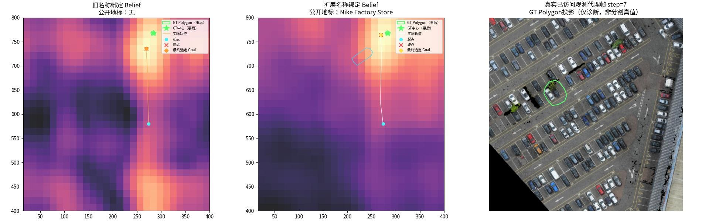
GT轮廓仅作事后几何代理，不是真实实例分割标签。
本页只展示扩展绑定相对旧绑定纠正/损坏的 74 条任务。GT、目标Polygon、目标概率和像素投影均为事后诊断；不得视为模型推理输入或人工实例标注。
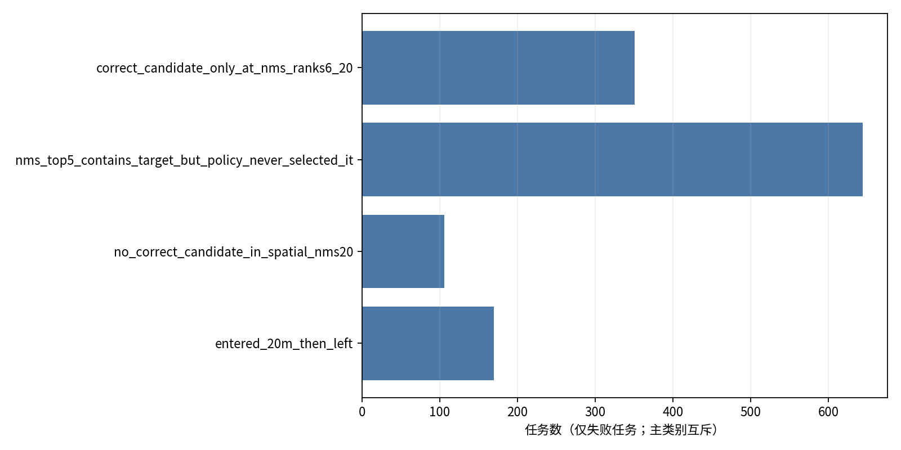
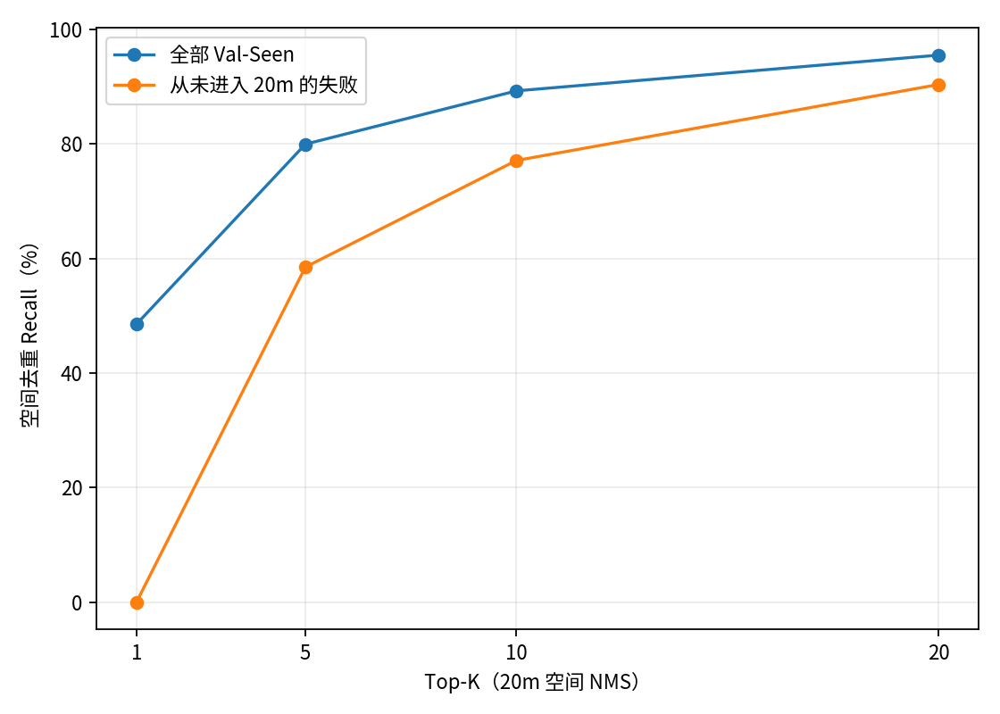
下载2470条逐任务归因CSV · 下载逐决策回放CSV · 下载绑定纠正/破坏案例CSV
| idx | 地图 | 类 | SR | OSR | 空间NMS排名 | NE(m) | 主因 | 案例 | 指令 |
|---|---|---|---|---|---|---|---|---|---|
| 0 | birmingham_block_1 | Building | 0 | 0 | 20 | 45.3 | correct_candidate_only_at_nms_ranks6_20 | — | The row of grayish brown houses on Leslie Road to the left of the gray house at the intersection with Wellington Road. |
| 1 | birmingham_block_1 | Building | 1 | 1 | 1 | 12.3 | success | — | The long row of gray houses with cars parked in front of them along Leslie Road. |
| 2 | birmingham_block_1 | Building | 0 | 0 | 5 | 41.9 | nms_top5_contains_target_but_policy_never_selected_it | — | the row of brown houses along Leslie Road, across the street from a gray building. |
| 3 | birmingham_block_1 | Building | 0 | 0 | 6 | 26.6 | correct_candidate_only_at_nms_ranks6_20 | — | This building is the entire row of houses on Leslie Road. Although it's a terrace it should probably be classed as separate building/s |
| 4 | birmingham_block_1 | Building | 0 | 0 | 6 | 52.1 | correct_candidate_only_at_nms_ranks6_20 | — | The long row of houses all the way down Leslie Road on the same side as the Willmore Road. |
| 5 | birmingham_block_1 | Building | 0 | 0 | 11 | 125.4 | correct_candidate_only_at_nms_ranks6_20 | — | A building with grey roof and white wall is situated at the right side of the road named Wellington road . A red car is parked in front of the building. |
| 6 | birmingham_block_1 | Building | 0 | 0 | 7 | 56.3 | correct_candidate_only_at_nms_ranks6_20 | — | A building that is closed to Celine Grove and it has a red car parking in front of the building. |
| 7 | birmingham_block_1 | Building | 0 | 0 | 3 | 27.6 | nms_top5_contains_target_but_policy_never_selected_it | — | The second housing unit from the bottom on the right side of Celine Grove. |
| 8 | birmingham_block_1 | Building | 0 | 0 | 11 | 67.6 | correct_candidate_only_at_nms_ranks6_20 | — | The building across from Willmore Road that has a red car in the driveway. |
| 9 | birmingham_block_1 | Building | 0 | 0 | 3 | 34.3 | nms_top5_contains_target_but_policy_never_selected_it | — | Left side of a white home with a multi-colored gray and brown roof and one chimney, that has one red car parked in his driveway, facing the corner of Wilmore Road and Wellington Road |
| 10 | birmingham_block_1 | Building | 0 | 0 | 2 | 43.6 | nms_top5_contains_target_but_policy_never_selected_it | — | Left side of a white and gray house, with a multi-colored gray and brown roof that has a red car in its driveway facing the corner of Willmore Road and Wellington Road |
| 11 | birmingham_block_1 | Building | 0 | 0 | 4 | 20.6 | nms_top5_contains_target_but_policy_never_selected_it | — | The brown house on Wellington Road that is 7 houses to the right of the St. Teresa of the Child Jesus Catholic Church. |
| 12 | birmingham_block_1 | Building | 0 | 0 | 6 | 83.1 | correct_candidate_only_at_nms_ranks6_20 | — | Between section of two houses, both colored white and brown with brown roofs, with the house on the right having a yellow rectangular object in the driveway off Wellington Road |
| 13 | birmingham_block_1 | Building | 0 | 0 | 6 | 33.9 | correct_candidate_only_at_nms_ranks6_20 | — | This is a house with a brown roof on Wellington Road. This is the fourth house on the street from St. Teresa of the Child Jesus Catholic Church. |
| 14 | birmingham_block_1 | Building | 0 | 0 | 5 | 61.6 | nms_top5_contains_target_but_policy_never_selected_it | — | Watch multi-unit building, with six units having a solid gray roofs and the other four units being longer, having multicolored white and gray roofs, that has a parking lot in front of it off Willington Road |
| 15 | birmingham_block_1 | Building | 0 | 0 | >20 / 无 | 98.3 | no_correct_candidate_in_spatial_nms20 | — | L shaped white and a grey roofed building with a car park along wellington road. It is opposite the St Theresa’s court building. |
| 16 | birmingham_block_1 | Building | 0 | 0 | 3 | 46.5 | nms_top5_contains_target_but_policy_never_selected_it | — | A building between Willmore Road and Wellington Road with a gray and white roof and many cars parked near it. |
| 17 | birmingham_block_1 | Building | 0 | 0 | 2 | 61.6 | nms_top5_contains_target_but_policy_never_selected_it | — | The large gray and white building with a huge parking lot off of Wellington Road. |
| 18 | birmingham_block_1 | Building | 1 | 1 | 1 | 19.2 | success | — | The brown house that is 4th from the left in the row of brown houses behind the long row of green trees along Wellington Road. |
| 19 | birmingham_block_1 | Building | 1 | 1 | 1 | 19.2 | success | — | The 4th red house with a blue car in front of it behind the long row of green trees along Wellington Road. |
| 20 | birmingham_block_1 | Building | 0 | 0 | 2 | 24.7 | nms_top5_contains_target_but_policy_never_selected_it | — | The second brown house from the trees along Wellington/Grosvenor road. It has a white and a blue car at the front. |
| 21 | birmingham_block_1 | Building | 1 | 1 | 1 | 19.2 | success | — | The building on Wellington Road that has a bright blue car in front of it. |
| 22 | birmingham_block_1 | Car | 1 | 1 | 1 | 2.9 | success | — | The red car in the middle of the parking lot to the left of the St. Teresa of the Child Jesus Catholic Church. |
| 23 | birmingham_block_1 | Car | 1 | 1 | 1 | 2.9 | success | — | The red car in the middle of the parking lot to the left of the St. Teresa of the Child Jesus Catholic Church. |
| 24 | birmingham_block_1 | Car | 1 | 1 | 1 | 2.9 | success | — | The red car in the parking lot to the left of the St. Teresa of the Child Jesus Catholic Church. |
| 25 | birmingham_block_1 | Car | 1 | 1 | 1 | 2.9 | success | — | Two cars red-lined, a partially visible red car and a partially visible black car next to each other, in between two black cars and a white car with a black top, in the parking lot that's on the side of the St Teresa of the Child Jesus Catholic church building off Wellington Road |
| 26 | birmingham_block_1 | Car | 0 | 0 | >20 / 无 | 51.9 | no_correct_candidate_in_spatial_nms20 | — | A red car and a black car in front of each other, that is in between a white car with a Blacktop and two black cars, and a parking lot behind the full circle events and exhibitions LTD building off Grosvenor Road |
| 27 | birmingham_block_1 | Car | 0 | 0 | 4 | 23.0 | nms_top5_contains_target_but_policy_never_selected_it | — | A grey car is parked in the lane in front of a house with brown roof situated at the left side of the road named wellington road. Two other grey car parked at both left and right side of it, a blue car is parked in front of it at the opposite side of the lane. |
| 28 | birmingham_block_1 | Car | 0 | 1 | 2 | 23.0 | entered_20m_then_left | — | The gray car that is 11th from the left in the front row of cars in the parking lot behind the row of trees along Wellington Road, in front of red houses. |
| 29 | birmingham_block_1 | Car | 0 | 0 | 2 | 23.0 | nms_top5_contains_target_but_policy_never_selected_it | — | The gray car that is 11th from the left in the front row of cars in the parking lot behind the long row of green trees along Wellington Road. |
| 30 | birmingham_block_1 | Car | 1 | 1 | 1 | 9.9 | success | — | White car in a parking area in front of three brown houses along Wellington road. It is in between the two white cars facing the middle house. |
| 31 | birmingham_block_1 | Car | 0 | 0 | 7 | 77.5 | correct_candidate_only_at_nms_ranks6_20 | — | The gray middle car that is parked across the street from a light blue car on Wellington Road. |
| 32 | birmingham_block_1 | Car | 0 | 0 | 2 | 35.0 | nms_top5_contains_target_but_policy_never_selected_it | — | A gray car in between a white car and an empty spot, in a parking lot, in front of a multi-building complex, the left side having six units with a gray roof, in the right side having four longer units with a multicolored white and gray roof off Wellington Road |
| 33 | birmingham_block_1 | Car | 0 | 0 | 4 | 33.3 | nms_top5_contains_target_but_policy_never_selected_it | — | A dark blue car next to a white car, in front of a multi-unit building with gray roofs on it's left side and multicolored white and gray roofs on its right side off Wellington Road |
| 34 | birmingham_block_1 | Car | 1 | 1 | 1 | 14.9 | success | — | The blue car that is 1st from the left in the top row of cars in the brown parking lot off of Wellington Road, in front of a gray and white building. |
| 35 | birmingham_block_1 | Car | 0 | 0 | 3 | 83.3 | nms_top5_contains_target_but_policy_never_selected_it | — | On Wellington Road, in the parking lot of the building with a gray and white roof, it is the leftmost blue car, near a white car. |
| 36 | birmingham_block_1 | Car | 1 | 1 | 1 | 14.9 | success | — | The dark blue car that is 1st from the left in the top row of cars in the parking lot off of Wellington Road. |
| 37 | birmingham_block_1 | Car | 1 | 1 | 1 | 19.3 | success | — | The gray car that is 2nd from the top in the left column of cars in the parking lot for St. Teresa’s Court, when viewed aerially with St. Teresa’s Court to the left. |
| 38 | birmingham_block_1 | Car | 1 | 1 | 1 | 9.2 | success | — | White car in the parking lot at St Teresa's Court building in the first lane. It has a black car to the right and disabled parking slots to the left. |
| 39 | birmingham_block_1 | Car | 1 | 1 | 1 | 19.3 | success | — | The white car parked next to the St Teresa's Court that is in a handicap spot with a black car next to it. |
| 40 | birmingham_block_1 | Car | 1 | 1 | 1 | 17.9 | success | — | The white car next to the black car that in the handicap parking at St Teresa's Court. |
| 41 | birmingham_block_1 | Car | 1 | 1 | 1 | 9.2 | success | — | The white car parked next to a black car. in front of St. Teresa's Court. |
| 42 | birmingham_block_1 | Car | 1 | 1 | 1 | 12.4 | success | — | The white car parked beside a blackish blue car below St Teresa's Court. |
| 43 | birmingham_block_1 | Car | 0 | 1 | 4 | 31.0 | entered_20m_then_left | — | A black car that is across from a group of three cars, in a extended parking lot, that starts from St Teresa's court building and ends on Celine Grove, parked in front of a white building with a light gray roof and a blue door |
| 44 | birmingham_block_1 | Car | 0 | 0 | 2 | 31.0 | nms_top5_contains_target_but_policy_never_selected_it | — | The black car parked next in front of the long building at the end of Celine Grove. It has an empty spot next to it on one side and a median with bushes on the other. |
| 45 | birmingham_block_1 | Car | 0 | 0 | 5 | 31.0 | nms_top5_contains_target_but_policy_never_selected_it | — | The black car at the entrance to the parking lot for St. Teresa’s Court, when viewed aerially with St. Teresa’s Court to the left. |
| 46 | birmingham_block_1 | Car | 0 | 0 | 2 | 41.0 | nms_top5_contains_target_but_policy_never_selected_it | — | One black car, facing two white vehicles and one gray vehicle across from it Celine Grove near the edge of the map |
| 47 | birmingham_block_1 | Car | 0 | 0 | 5 | 31.0 | nms_top5_contains_target_but_policy_never_selected_it | — | A black car that is parked by the Celine Grove traffic Road. There is no any car parked next to it. |
| 48 | birmingham_block_1 | Car | 0 | 0 | 3 | 31.0 | nms_top5_contains_target_but_policy_never_selected_it | — | The gray car parked between the building on the corner of Celine Grove and bushes. |
| 49 | birmingham_block_1 | Car | 0 | 0 | 2 | 20.3 | nms_top5_contains_target_but_policy_never_selected_it | — | The gray car on Willmore Road that is 3 cars behind the white car at the intersection with Wellington Road. |
| 50 | birmingham_block_1 | Car | 0 | 0 | 5 | 52.6 | nms_top5_contains_target_but_policy_never_selected_it | — | The car that is the fifth closest car on Willmore Road to Wellington Road. |
| 51 | birmingham_block_1 | Car | 0 | 1 | 3 | 20.3 | entered_20m_then_left | — | Partial section of a partially visible white car red-lined, in between another white car with another white car further and in front of it, in the center of willmore Road |
| 52 | birmingham_block_1 | Car | 0 | 0 | 2 | 20.3 | nms_top5_contains_target_but_policy_never_selected_it | — | A partially visible gray car in between one white car and another white car for the behind it, in the center of willmore Road |
| 53 | birmingham_block_1 | Car | 0 | 0 | 2 | 20.3 | nms_top5_contains_target_but_policy_never_selected_it | — | A part of the road in between two white cars on Willmore Road. |
| 54 | birmingham_block_1 | Car | 0 | 0 | 3 | 52.3 | nms_top5_contains_target_but_policy_never_selected_it | — | A gray car in between a white car and a black car, with a light blue car across from it on the opposite side of Leslie Road near a street marking that reads no entry that is partially cut off by the edge of the map |
| 55 | birmingham_block_1 | Car | 0 | 0 | 3 | 38.4 | nms_top5_contains_target_but_policy_never_selected_it | — | White car off Leslie Road in between a black car and a white van, in front of a brown house near the edge of the map, across from the words No Entry on the road |
| 56 | birmingham_block_1 | Car | 0 | 0 | 3 | 38.4 | nms_top5_contains_target_but_policy_never_selected_it | — | A tiny silver car parked on the curb between a white car and a black car in front of the first orange brick house on Leslie Road.. |
| 57 | birmingham_block_1 | Car | 0 | 0 | 3 | 24.9 | nms_top5_contains_target_but_policy_never_selected_it | — | The silver car on Leslie Road that is 10 cars ahead of the only purple car on Leslie Road. |
| 58 | birmingham_block_1 | Car | 0 | 0 | 3 | 24.9 | nms_top5_contains_target_but_policy_never_selected_it | — | The white car on Leslie Road that is 10 cars ahead of the only purple car on Leslie Road. |
| 59 | birmingham_block_1 | Car | 0 | 0 | 3 | 52.3 | nms_top5_contains_target_but_policy_never_selected_it | — | Two cars red-lined, a multi-colored white and blue car and a small section of a partially visible gray car, and that are in between a black car and a white van, with a blue car across from it on the opposite side of Leslie Road near a streets marking that reads no entry |
| 60 | birmingham_block_1 | Car | 0 | 0 | 4 | 55.9 | nms_top5_contains_target_but_policy_never_selected_it | — | This is a white car parked on Willmore Road. There is no car parked immediately behind this car. There is a black car in front of it. The car is facing away from Celine Grove. |
| 61 | birmingham_block_1 | Car | 1 | 1 | 1 | 7.9 | success | — | The white car in the upper half of Willmore Road, when viewing it horizontally. It has a black car to its left but some empty space to its right before an barely outlined black car. |
| 62 | birmingham_block_1 | Car | 1 | 1 | 1 | 7.9 | success | — | A white car behind a black car, with a black car across from it on the opposite side of Willmore Road facing the edge of the map, in between two identical multi-housing units |
| 63 | birmingham_block_1 | Car | 1 | 1 | 1 | 7.9 | success | — | A white car parked behind a black car on the left lane along Willmore road. It has a free space behind it. |
| 64 | birmingham_block_1 | Car | 0 | 0 | 7 | 43.8 | correct_candidate_only_at_nms_ranks6_20 | — | The white car parked on the right side of Willmore Road, in front of the fourth house down from Wellington Road. |
| 65 | birmingham_block_1 | Car | 1 | 1 | 1 | 7.9 | success | — | On the right side of Willmore Road, this white car is fifth one from the top, south of a gray car. |
| 66 | birmingham_block_1 | Car | 0 | 0 | 2 | 26.3 | nms_top5_contains_target_but_policy_never_selected_it | — | A black car parked between a white car and another black car on Willmore Road. It is parked in front of a two story brown house with a gray peaked roof and a chimney. |
| 67 | birmingham_block_1 | Car | 1 | 1 | 1 | 2.4 | success | — | A black car on the left pavement along Willmore road, has a black car at the front and a white car behind. |
| 68 | birmingham_block_1 | Car | 1 | 1 | 1 | 12.0 | success | — | The black car on Willmore Road that is 4 car behinds the light gray car closest to the intersection with Wellington Road. |
| 69 | birmingham_block_1 | Car | 1 | 1 | 1 | 2.4 | success | — | The black car on Willmore Road that is 4 cars behind the light gray car closest to the intersection with Wellington Road. |
| 70 | birmingham_block_1 | Car | 1 | 1 | 1 | 2.4 | success | — | The black car between a white car and another black car at the end of Willmore Road. |
| 71 | birmingham_block_1 | Car | 1 | 1 | 1 | 2.4 | success | — | The fourth car from the left on the top side parking on Willmore Road. |
| 72 | birmingham_block_1 | Car | 1 | 1 | 1 | 11.8 | success | — | A black car with red taillights white headlights and a yellow plate parked nose to nose with a black car the has three front head lights, on Leslie Road in front of a house with green shrubs in front of it. |
| 73 | birmingham_block_1 | Car | 0 | 0 | 2 | 39.4 | nms_top5_contains_target_but_policy_never_selected_it | — | A black car in between another black car and a red car on Leslie Road across the street from a partial section of a white, gray and blue building that's been cut off by the edge of the map |
| 74 | birmingham_block_1 | Car | 1 | 1 | 1 | 11.8 | success | — | A black car in between another black car and a red car, in front of a long multicolored white, Brown and red multi-housing unit complex, on Leslie Road, |
| 75 | birmingham_block_1 | Car | 1 | 1 | 1 | 11.8 | success | — | The black car that is parked in front of the building with green bushes that is across to the Ruin building on the Leslie Road. |
| 76 | birmingham_block_1 | Car | 0 | 0 | 2 | 25.3 | nms_top5_contains_target_but_policy_never_selected_it | — | Black car in the parking lot on the left pavement along Leslie road. It has a red car behind it and black car in front. |
| 77 | birmingham_block_1 | Car | 1 | 1 | 1 | 11.8 | success | — | The gray car on Leslie Road that is 8 cars ahead of the only purple car on Leslie Road. |
| 78 | birmingham_block_1 | Car | 0 | 0 | 2 | 26.1 | nms_top5_contains_target_but_policy_never_selected_it | — | A orange car in between a black car and an empty spot, where they red car in front of it, in the third row from the top in the parking lot of the One Stop building near the edge of the map |
| 79 | birmingham_block_1 | Car | 1 | 1 | 1 | 15.9 | success | — | One brown car in between a black car and an empty space, that is in front of a red car near the edge of the map, and the third row from the top in the parking lot of the One-Stop building |
| 80 | birmingham_block_1 | Car | 1 | 1 | 1 | 11.9 | success | — | The orange car that is 2nd from the left in the 16th row of cars in the large parking lot behind the One Stop Building, when viewed aerially with the long side of the One Stop Building to the right. |
| 81 | birmingham_block_1 | Car | 1 | 1 | 1 | 11.9 | success | — | The orange car that is 2nd from the left in the 16th row of cars in the large parking lot behind the One Stop Building, when viewed aerially with the long side of the One Stop Building to the right. |
| 82 | birmingham_block_1 | Car | 0 | 0 | 17 | 71.7 | correct_candidate_only_at_nms_ranks6_20 | — | The orange-brown car in the eighth lane, counting from the bottom, of the parking lot found right of the One Stop building. It is in the upper row, on the right end, with a red car below it. |
| 83 | birmingham_block_1 | Car | 0 | 0 | 3 | 26.1 | nms_top5_contains_target_but_policy_never_selected_it | — | In the parking lot near One Stop, it is the yellow car in the top half of the third row from the top, second car from the right. |
| 84 | birmingham_block_1 | Car | 1 | 1 | 1 | 17.5 | success | — | The gray car that is 8th from the right in the 19th row of cars in the large parking lot behind the One Stop Building, when viewed aerially with the long side of the One Stop Building to the right. |
| 85 | birmingham_block_1 | Car | 1 | 1 | 1 | 10.0 | success | — | The gray car that is 2nd from the left in the 19th row of cars in the large parking lot behind the One Stop Building, when viewed aerially with the long side of the One Stop Building to the right. |
| 86 | birmingham_block_1 | Car | 1 | 1 | 1 | 10.0 | success | — | The gray car that is 2nd from the left in the 19th row of cars in the large parking lot behind the One Stop Building, when viewed aerially with the long side of the One Stop Building to the right. |
| 87 | birmingham_block_1 | Car | 0 | 0 | 2 | 32.7 | nms_top5_contains_target_but_policy_never_selected_it | — | Black car in the parking lot nearest to the Food Warehouse in the second lane with a black car parked to the left and another black car to the right. It has a red car in front of it. |
| 88 | birmingham_block_1 | Car | 1 | 1 | 1 | 19.5 | success | — | This is a gray car parked in the closest row of the parking space from the Food Warehouse. It is sandwiched between two black cars and there is a red car in front of it. |
| 89 | birmingham_block_1 | Car | 1 | 1 | 1 | 17.4 | success | — | A white car in between a black car and a dark green car, with an empty space in front of it, nearest to the building Edge, parked in the fifth row from the top in the parking lot of the One Stop building |
| 90 | birmingham_block_1 | Car | 1 | 1 | 1 | 3.0 | success | — | The gray car that is 6th from the right in the 12th row of cars in the large parking lot behind the One Stop Building, when viewed aerially with the long side of the One Stop Building to the right |
| 91 | birmingham_block_1 | Car | 1 | 1 | 1 | 11.3 | success | — | White car in the parking lot near the one-stop building in the sixth lane from the food warehouse. It is in between two black cars. No car is in front. |
| 92 | birmingham_block_1 | Car | 1 | 1 | 1 | 11.3 | success | — | This white car is in the parking lot near the One Stop and is in the top half of the fifth row from the top, sixth car from the left. |
| 93 | birmingham_block_1 | Car | 1 | 1 | 1 | 3.0 | success | — | In the parking lot near One Stop, it is the white car in the top half of the fifth row from the top, sixth car from the left. |
| 94 | birmingham_block_1 | Car | 1 | 1 | 1 | 13.6 | success | — | The white car that is the sixth car in the fifth aisle of the One Stop parking lot. |
| 95 | birmingham_block_1 | Car | 0 | 0 | 5 | 40.3 | nms_top5_contains_target_but_policy_never_selected_it | — | A white vehicle in the seventh row away for Food Warehouse in the One Stop parking lot. It is the sixth vehicle in the row away from the building. The parking spot to its left is empty and the one to the right has a white car in it and a awhite car in the spot behind it. |
| 96 | birmingham_block_1 | Car | 0 | 1 | 5 | 20.7 | entered_20m_then_left | — | White car in a parking lot near the Nike Factory store building on the fourth lane from the food warehouse. It has a White car to the right and a free slot to the left. There is a white car behind it. |
| 97 | birmingham_block_1 | Car | 1 | 1 | 1 | 1.0 | success | — | The white car that is 6th from the right in the 15th row of cars in the large parking lot behind the One Stop Building, when viewed aerially with the long side of the One Stop Building to the right. |
| 98 | birmingham_block_1 | Car | 1 | 1 | 1 | 1.0 | success | — | The white car that is 6th from the right in the 15th row of cars in the large parking lot behind the One Stop Building, when viewed aerially with the long side of the One Stop Building to the right. |
| 99 | birmingham_block_1 | Car | 1 | 1 | 1 | 1.0 | success | — | This white car is in the parking lot near the One Stop and is in the bottom half of the third row from the top, sixth car from the left. |
| 100 | birmingham_block_1 | Car | 1 | 1 | 1 | 1.0 | success | — | The white car that is the sixth car in the fourth aisle of cars in front of the Nike Factory Store. |
| 101 | birmingham_block_1 | Car | 1 | 1 | 1 | 6.1 | success | — | The gray car that is 8th from the left in the 17th row of cars in the large parking lot behind the One Stop Building, when viewed aerially with the long side of the One Stop Building to the right. |
| 102 | birmingham_block_1 | Car | 1 | 1 | 1 | 9.4 | success | — | The gray car that is 7th from the right in the 17th row of cars in the large parking lot behind the One Stop Building, when viewed aerially with the long side of the One Stop Building to the right. |
| 103 | birmingham_block_1 | Car | 1 | 1 | 1 | 6.1 | success | — | The light grey car in the parking lot near Nike Factory Store, in the third lane from The Food Warehouse, with no cars parked in front, behind, or to the left or right. |
| 104 | birmingham_block_1 | Car | 1 | 1 | 1 | 6.1 | success | — | The white car in the middle of the third aisle of the Nike Factory parking lot. It doesn't have any cars beside it or in front of it. |
| 105 | birmingham_block_1 | Car | 0 | 0 | 13 | 93.7 | correct_candidate_only_at_nms_ranks6_20 | — | A silver car parked at the third lane of parking area of One stop with no other car parked at its left ,right and front side |
| 106 | birmingham_block_1 | Car | 1 | 1 | 1 | 11.2 | success | — | The white car that is 2nd from the right in the 14th row of cars in the large parking lot behind the One Stop Building, when viewed aerially with the long side of the One Stop Building to the right. |
| 107 | birmingham_block_1 | Car | 0 | 1 | 2 | 22.6 | entered_20m_then_left | — | A white car in between a black car and a gray car, with an empty spot behind it, near the building Edge, parked in the fourth row from the top in the parking lot of the One Stop building |
| 108 | birmingham_block_1 | Car | 0 | 0 | 2 | 35.2 | nms_top5_contains_target_but_policy_never_selected_it | — | White car in the parking lot near the one stop building in the fifth lane from the food warehouse. Has a black car to the left and grey car to the right. There is no car behind it. |
| 109 | birmingham_block_1 | Car | 1 | 1 | 1 | 11.2 | success | — | The second car in the fourth aisle of the One Stop building parking lot. It is white. |
| 110 | birmingham_block_1 | Car | 1 | 1 | 1 | 16.2 | success | — | The black car that has a black car on the right and a red car to the left and no car at the front, there is a tree between the red and black car. and it is in the parking lot near Nike Factory Store, in the Fifth lane from The Food Warehouse, driveway is behind. |
| 111 | birmingham_block_1 | Car | 1 | 1 | 1 | 9.8 | success | — | The dark car that is 4th from the right in the 14th row of cars in the large parking lot behind the One Stop Building, when viewed aerially with the long side of the One Stop Building to the right. |
| 112 | birmingham_block_1 | Car | 1 | 1 | 1 | 9.8 | success | — | The black car that is 4th from the right in the 14th row of cars in the large parking lot behind the One Stop Building, when viewed aerially with the long side of the One Stop Building to the right. |
| 113 | birmingham_block_1 | Car | 0 | 0 | 2 | 23.8 | nms_top5_contains_target_but_policy_never_selected_it | — | A tiny white car parked between two tiny blue cars that have different color blue hues. It is in the third lane from the Food Warehouse in the One Stop parking lot and in front of it is a longer black car. |
| 114 | birmingham_block_1 | Car | 1 | 1 | 1 | 8.0 | success | — | The white car that is 7th from the right in the 16th row of cars in the large parking lot behind the One Stop Building, when viewed aerially with the long side of the One Stop Building to the right |
| 115 | birmingham_block_1 | Car | 1 | 1 | 1 | 7.2 | success | — | The white car that is 7th from the left in the 16th row of cars in the large parking lot behind the One Stop Building, when viewed aerially with the long side of the One Stop Building to the right. |
| 116 | birmingham_block_1 | Car | 1 | 1 | 1 | 13.1 | success | — | A tiny white car in the third lane of the One Stop parking lot away from the Food Warehouse. that is sandwiched between two tiny blue cars and back to back with a larger black car. |
| 117 | birmingham_block_1 | Car | 1 | 1 | 1 | 8.0 | success | — | The white car that behind and beside are the black cars, the driveway is at front in the parking lot near Nike Factory Store, in the fourth lane from The Food Warehouse. |
| 118 | birmingham_block_1 | Car | 1 | 1 | 1 | 7.2 | success | — | White car in the parking lot near the Nike factory store in the fourth lane from the food warehouse. It is in between two black cars and another black one behind it. |
| 119 | birmingham_block_1 | Car | 0 | 0 | 3 | 48.5 | nms_top5_contains_target_but_policy_never_selected_it | — | A black car with a tree parked in front of it facing away from the building in the big one stop parking lot, there is a white car to the left of it, no car in the spot the right or the spot in front of it on the other side of the tree. |
| 120 | birmingham_block_1 | Car | 1 | 1 | 1 | 10.6 | success | — | The white and the black cars in the parking lot near Nike Factory Store, in the fifth lane from The Food Warehouse, with no cars parked in front, behind, or to the left or right but there is a green tea next to them. |
| 121 | birmingham_block_1 | Car | 1 | 1 | 1 | 14.4 | success | 查看配对图 | The black car parked in front of a tree in the fourth aisle of cars in the Nike Factory parking lot. |
| 122 | birmingham_block_1 | Car | 1 | 1 | 1 | 14.4 | success | — | This car is in the eighth row from food warehouse and seventh from the edge of the scene. |
| 123 | birmingham_block_1 | Car | 1 | 1 | 1 | 17.8 | success | — | A white car parked in the parking area of the building named One stop, it is parked at the left side of the First lane close to the food warehouse with another white car parked at its left side and a silver car parked at its right side. There is no car parked in front of it. |
| 124 | birmingham_block_1 | Car | 1 | 1 | 1 | 19.1 | success | — | The grat car that is 3rd from the right in the 20th row of cars in the parking lot behind the One Stop Building, when viewed aerially with the long side of the One Stop building to the right. |
| 125 | birmingham_block_1 | Car | 1 | 1 | 1 | 17.8 | success | — | This is a white car parked in the closest row of the parking lot from the Food Warehouse. There is an empty spot in front of this car, and on its left and right there is a white car. |
| 126 | birmingham_block_1 | Car | 1 | 1 | 1 | 5.7 | success | — | A white car in between another white car and a Gray car with a black top, in the first row from the top in the parking lot of the One Stop building near the edge of the building |
| 127 | birmingham_block_1 | Car | 1 | 1 | 1 | 5.7 | success | — | A silver car parked between a silver car with a black roof and a white car in the first lane in front of the Food Warehouse. |
| 128 | birmingham_block_1 | Car | 1 | 1 | 1 | 19.5 | success | — | Grey car in the parking lot near the Nike factory store in the fourth lane from the food warehouse. It has a black car to the left and free parking bay to the right. There is a white car in front of it. |
| 129 | birmingham_block_1 | Car | 1 | 1 | 1 | 19.5 | success | — | Dark grey car in the parking lot near the Nike factory store building in the fourth lane. It has a black car to the left and a free slot to the right. There is a white car at the front. |
| 130 | birmingham_block_1 | Car | 1 | 1 | 1 | 7.3 | success | — | The gray car that is 6th from the left in the 15th row of cars in the large parking lot behind the One Stop Building, when viewed aerially with the long side of the One Stop Building to the right. |
| 131 | birmingham_block_1 | Car | 1 | 1 | 1 | 9.1 | success | — | The gray car that is 7th from the left in the 15th row of cars in the large parking lot behind the One Stop Building, when viewed aerially with the long side of the One Stop Building to the right. |
| 132 | birmingham_block_1 | Car | 1 | 1 | 1 | 9.1 | success | — | This is a gray car parked in the third row of the main parking space from the Food Warehouse. On its right is an empty spot. On its left is a black car. |
| 133 | birmingham_block_1 | Car | 1 | 1 | 1 | 3.7 | success | — | The gray car that is 6th from the left in the 12th row of cars in the large parking lot behind the One Stop Building, when viewed aerially with the long side of the One Stop Building to the right. |
| 134 | birmingham_block_1 | Car | 1 | 1 | 1 | 3.7 | success | — | The gray car that is 6th from the left in the 12th row of cars in the large parking lot behind the One Stop Building, when viewed aerially with the long side of the One Stop Building to the right. |
| 135 | birmingham_block_1 | Car | 1 | 1 | 1 | 3.7 | success | — | The gray car that is 6th from the left in the 12th row of cars in the large parking lot behind the One Stop Building, when viewed aerially with the long side of the One Stop Building to the right. |
| 136 | birmingham_block_1 | Car | 1 | 1 | 1 | 17.3 | success | — | The gray car that is 6th from the left in the 14th row of cars in the parking lot behind the One Stop Building, when viewed aerially with the long side of the One Stop building to the right. |
| 137 | birmingham_block_1 | Car | 1 | 1 | 1 | 3.7 | success | — | The gray car in the middle of the fifth aisle of the One Stop parking lot that has two empty parking spaces on both sides of it. |
| 138 | birmingham_block_1 | Car | 1 | 1 | 1 | 13.4 | success | — | With the One Stop building on its left, and counting from the bottom, it is black car in the first lane of two rows of parked cars. It is found in the upper row, with another black car on its left and a silver car on its right. Below it directly is empty space but there's another black and red car on its lower diagonals. On the left of this black car's black car is a red car with blue-grey mixed on its roof. |
| 139 | birmingham_block_1 | Car | 0 | 0 | 3 | 52.7 | nms_top5_contains_target_but_policy_never_selected_it | — | The gray cars that are 13th and 14th from the right in the 2nd row of cars in the large parking lot behind the One Stop Building, when viewed aerially with the long side of the One Stop Building to the right. |
| 140 | birmingham_block_1 | Car | 1 | 1 | 1 | 8.5 | success | — | The black car between the white car and black car in the tenth aisle of the One Stop parking lot. It has yellow lines in front of it. |
| 141 | birmingham_block_1 | Car | 0 | 0 | 3 | 52.7 | nms_top5_contains_target_but_policy_never_selected_it | — | The black cars that are 13th and 14th from the right in the 2nd row of cars in the large parking lot behind the One Stop Building, when viewed aerially with the long side of the One Stop Building to the right. |
| 142 | birmingham_block_1 | Car | 1 | 1 | 1 | 8.5 | success | — | Two black cars red-lined, with another black car in front of them, towards the center of the room, in the first row from the bottom in the parking lot of the One Stop building |
| 143 | birmingham_block_1 | Car | 0 | 1 | 2 | 22.4 | entered_20m_then_left | — | A blue car next to a dark red car with a dark gray car in front of it parked on the edge of the row closest to the edge of the building, in the second row from the bottom in the parking lot with the One Stop building |
| 144 | birmingham_block_1 | Car | 0 | 1 | 2 | 22.4 | entered_20m_then_left | — | A dark blue car next to a dark red car, with a light blue car in front of it, in the second row from the bottom in the parking lot of the One Stop building near the edge of the building |
| 145 | birmingham_block_1 | Car | 1 | 1 | 1 | 10.7 | success | — | The blue car that is 1st from the right in the 4th row of cars in the large parking lot behind the One Stop Building, when viewed aerially with the long side of the One Stop Building to the right. |
| 146 | birmingham_block_1 | Car | 0 | 1 | 4 | 21.4 | entered_20m_then_left | — | The first car in the ninth aisle of the One Stop parking lot. It is blue and next to a deep red colored car. |
| 147 | birmingham_block_1 | Car | 0 | 1 | 2 | 21.6 | entered_20m_then_left | — | The dark maroon car that is 9th from the right in the 9th row of cars in the large parking lot behind the One Stop Building, when viewed aerially with the long side of the One Stop Building to the right. |
| 148 | birmingham_block_1 | Car | 1 | 1 | 1 | 6.4 | success | — | A dark purple car in between a white car and a silver car, with a black car in front of it, towards the center of the row, parked in the fifth row in the parking lot of the One Stop building |
| 149 | birmingham_block_1 | Car | 1 | 1 | 1 | 14.3 | success | — | The purple car that is 9th from the right in the 11th row of cars in the large parking lot behind the One Stop Building, when viewed aerially with the long side of the One Stop Building to the right. |
| 150 | birmingham_block_1 | Car | 1 | 1 | 1 | 18.3 | success | — | The rusty car that is between two white cars with one black car behind in the parking lot near Nike Factory Store, in the sixth lane from The Food Warehouse, Driveway is in front. |
| 151 | birmingham_block_1 | Car | 1 | 1 | 1 | 8.1 | success | — | A dark purple car between two white cars, with a black car in front of it in the fifth row from the top in the parking lot of the One-Stop building, toward the center |
| 152 | birmingham_block_1 | Car | 0 | 1 | 2 | 36.4 | entered_20m_then_left | — | Viewing the large parking lot with the One Stop building above and the Nike Factory Store building to the right, this black car is the eight vehicle in from the left along the row of cars parked up against the One Stop building, to the right of a red car with a blue roof. |
| 153 | birmingham_block_1 | Car | 0 | 0 | 18 | 65.4 | correct_candidate_only_at_nms_ranks6_20 | — | A black car in a single row of cars that is adjacent to the One Stop Building. It is the 8th car from the left. There is a handicapped parking spot to the right of it. |
| 154 | birmingham_block_1 | Car | 0 | 0 | 4 | 30.8 | nms_top5_contains_target_but_policy_never_selected_it | — | One black car in between a red car with a white top and an empty space park near the third row from the bottom of the One Stop Parking Lot closest to the building |
| 155 | birmingham_block_1 | Car | 1 | 1 | 1 | 17.2 | success | — | A black car parked next to a red car with a white top, along the building Edge within the One-Stop building, facing the third row from the bottom |
| 156 | birmingham_block_1 | Car | 1 | 1 | 1 | 7.1 | success | — | The black car that is 9th from the left in the row of cars parked against the long back side of the One Stop Building. |
| 157 | birmingham_block_1 | Car | 0 | 0 | 2 | 65.2 | nms_top5_contains_target_but_policy_never_selected_it | — | The black car in the big parking lot to the right of the One Stop building. It is the black car below the white square, near the middle of the building, and has two red cars above it. Below it is a white car followed by a blue car. |
| 158 | birmingham_block_1 | Car | 0 | 1 | 6 | 47.4 | entered_20m_then_left | — | A black car in between a red car and a white car parked along the edge of the building within the parking lot of the One-Stop building in between the 5th and 6th rows from the top |
| 159 | birmingham_block_1 | Car | 1 | 1 | 1 | 7.4 | success | — | The gray car that is 14th from the left in the row of cars parked against the long back side of the One Stop Building. |
| 160 | birmingham_block_1 | Car | 0 | 0 | 2 | 20.5 | nms_top5_contains_target_but_policy_never_selected_it | — | The gray car that is 17th from the right in the 4th row of cars in the large parking lot behind the One Stop Building, when viewed aerially with the long side of the One Stop Building to the right. |
| 161 | birmingham_block_1 | Car | 1 | 1 | 1 | 8.2 | success | — | The gray car that is 14th from the left in the 4th row of cars in the large parking lot behind the One Stop Building, when viewed aerially with the long side of the One Stop Building to the right. |
| 162 | birmingham_block_1 | Car | 0 | 0 | 2 | 20.5 | nms_top5_contains_target_but_policy_never_selected_it | — | The gray car that is 14th from the right in the 4th row of cars in the parking lot behind the One Stop Building, when viewed aerially with the long side of the One Stop building to the right. |
| 163 | birmingham_block_1 | Car | 1 | 1 | 1 | 6.3 | success | — | One gray car in between two black cars, that has one gray car with a blacktop in front of it in the second row from the bottom and the parking lot of the One Stop building in the center |
| 164 | birmingham_block_1 | Car | 0 | 1 | 5 | 32.9 | entered_20m_then_left | — | This is a black colored car. There is a green car parked against the wall of the One Stop building. this car is in the parking row that comes in line with the green car. This car has a blue car on one side and a white car on the other. The parking space in front of it is empty, with a black car on one side and a white car on the other. |
| 165 | birmingham_block_1 | Car | 1 | 1 | 1 | 10.7 | success | — | One dark blue van in between a blue van and a light blue car, with an empty space in front of it, and the fourth row from the bottom in the parking lot of the One Stop building closest to the edge of the building |
| 166 | birmingham_block_1 | Car | 0 | 1 | 3 | 20.7 | entered_20m_then_left | — | A blue car parked in the seventh aisle of the parking lot of the Nike Factory Store with an empty spot in front of it and between a white and lighter blue colored car. |
| 167 | birmingham_block_1 | Car | 1 | 1 | 1 | 15.5 | success | — | This dark blue car is in the parking lot near One Stop and is in the top half of the fourth row from the bottom, in the eighth parking space from the left. |
| 168 | birmingham_block_1 | Car | 1 | 1 | 1 | 17.4 | success | — | The blue car that is the seventh car in the seventh aisle of the One Stop parking lot. |
| 169 | birmingham_block_1 | Car | 1 | 1 | 1 | 15.6 | success | — | The gray car that is 13th from the left in the 2nd row of cars in the large parking lot behind the One Stop Building, when viewed aerially with the long side of the One Stop Building to the right. |
| 170 | birmingham_block_1 | Car | 1 | 1 | 1 | 15.6 | success | — | The gray car that is 13th from the left in the 2nd row of cars in the large parking lot behind the One Stop Building, when viewed aerially with the long side of the One Stop Building to the right. |
| 171 | birmingham_block_1 | Car | 1 | 1 | 1 | 6.0 | success | — | This is a white car with a black roof parked in the farthest row of the parking space from the Food Warehouse. On its left is a gray car and on its right is another white car. |
| 172 | birmingham_block_1 | Car | 1 | 1 | 1 | 6.0 | success | — | This is a white car with a black roof in the farthest row of the parking space from the Food Warehouse. There is another white car on its right and a gray car on its left. |
| 173 | birmingham_block_1 | Car | 0 | 0 | 10 | 27.6 | correct_candidate_only_at_nms_ranks6_20 | — | A white car in the ninth row of the One Stop building's parking lot that is between a gray car and a white car. A black car is behind it between two striped areas. |
| 174 | birmingham_block_1 | Car | 1 | 1 | 1 | 7.0 | success | — | The black car near the end of the tenth aisle of the One Stop building parking lot. It has a white car on one side of it and an empty spot on the other side and isn't in front of handicap spots. |
| 175 | birmingham_block_1 | Car | 0 | 0 | 2 | 20.2 | nms_top5_contains_target_but_policy_never_selected_it | — | A black car between an empty parking space and a white car in the parking lot near One Stop ,it is in the bottom the second row from the bottom, it is in the ninth parking space from the right. |
| 176 | birmingham_block_1 | Car | 1 | 1 | 1 | 10.7 | success | — | The black car that is 8th from the left in the 3rd row of cars in the large parking lot behind the One Stop Building, when viewed aerially with the long side of the One Stop Building to the right. |
| 177 | birmingham_block_1 | Car | 1 | 1 | 1 | 10.7 | success | — | The black car that is 8th from the left in the 3rd row of cars in the large parking lot behind the One Stop Building, when viewed aerially with the long side of the One Stop Building to the right. |
| 178 | birmingham_block_1 | Car | 1 | 1 | 1 | 10.0 | success | — | One black car in between a white van, an empty space in another white van in the second row from the bottom of the parking lot of the One Stop building closest to the edge of the map |
| 179 | birmingham_block_1 | Car | 1 | 1 | 1 | 12.4 | success | — | A black car that is next to a white car and a long light green border, and has another black car behind it, in the second row from the bottom in the parking lot of the One-Stop building, nearest to the edge of the building |
| 180 | birmingham_block_1 | Car | 0 | 0 | 3 | 26.5 | nms_top5_contains_target_but_policy_never_selected_it | — | Black car in a parking lot near the one-stop building on the tenth lane from the food warehouse. It has a white car to the right and a free slot to the left. There is a black car behind it. |
| 181 | birmingham_block_1 | Car | 1 | 1 | 1 | 12.4 | success | — | The black car that is 5th from the right in the 3rd row of cars in the large parking lot behind the One Stop Building, when viewed aerially with the long side of the One Stop Building to the right. |
| 182 | birmingham_block_1 | Car | 1 | 1 | 1 | 3.6 | success | — | The black car that is 5th from the right in the 3rd row of cars in the parking lot behind the One Stop Building, when viewed aerially with the long side of the One Stop building to the right. |
| 183 | birmingham_block_1 | Car | 1 | 1 | 1 | 7.6 | success | — | The black car in the middle of the third lane of cars in the huge parking lot right of the One Stop building. It is the black car in the upper row, with another black car on its left and an empty space on its right before a grey car with lighter spots on it. |
| 184 | birmingham_block_1 | Car | 1 | 1 | 1 | 10.5 | success | — | The black car that is 11th from the left in the 6th row of cars in the large parking lot behind the One Stop Building, when viewed aerially with the long side of the One Stop Building to the right |
| 185 | birmingham_block_1 | Car | 1 | 1 | 1 | 12.2 | success | — | The black car in the eighth aisle of the One Stop parking lot that has an empty spot on the left and black car on the right with a black car in front of it. |
| 186 | birmingham_block_1 | Car | 1 | 1 | 1 | 19.9 | success | — | This is a black car parked in the farthest third row of the main parking space from the Food Warehouse. On its right is another black car. On its left is an empty spot. |
| 187 | birmingham_block_1 | Car | 0 | 0 | 2 | 22.6 | nms_top5_contains_target_but_policy_never_selected_it | — | The black car between an empty space and a black car in the eighth aisle of the One Stop parking lot. |
| 188 | birmingham_block_1 | Car | 1 | 1 | 1 | 6.9 | success | — | The black car that is 4th from the right in the 2nd row of cars in the large parking lot behind the One Stop Building, when viewed aerially with the long side of the One Stop Building to the right. |
| 189 | birmingham_block_1 | Car | 1 | 1 | 1 | 6.9 | success | — | The black car that is 4th from the right in the 2nd row of cars in the large parking lot behind the One Stop Building, when viewed aerially with the long side of the One Stop Building to the right. |
| 190 | birmingham_block_1 | Car | 1 | 1 | 1 | 17.1 | success | — | The fourth car in the tenth aisle of the One Stop parking lot. It is black and between a red car and a white car. |
| 191 | birmingham_block_1 | Car | 1 | 1 | 1 | 4.1 | success | — | The black car that is 16th from the left in the 5th row of cars in the large parking lot behind the One Stop Building, when viewed aerially with the long side of the One Stop Building to the right |
| 192 | birmingham_block_1 | Car | 1 | 1 | 1 | 4.1 | success | — | The black car that is 16th from the right in the 5th row of cars in the large parking lot behind the One Stop Building, when viewed aerially with the long side of the One Stop Building to the right. |
| 193 | birmingham_block_1 | Car | 1 | 1 | 1 | 4.1 | success | — | The black car that is 17th from the right in the 5th row of cars in the large parking lot behind the One Stop Building, when viewed aerially with the long side of the One Stop Building to the right. |
| 194 | birmingham_block_1 | Car | 1 | 1 | 1 | 4.1 | success | — | The black car in the middle of the ninth aisle of cars in the One Stop parking lot. It is between a black car and white car and a black car in front of it. |
| 195 | birmingham_block_1 | Car | 1 | 1 | 1 | 14.3 | success | — | The black car between a white car and a gray car in the middle of the ninth aisle of the One Stop parking lot. |
| 196 | birmingham_block_1 | Car | 1 | 1 | 1 | 6.5 | success | — | The black car that is 8th from the left in the 4th row of cars in the large parking lot behind the One Stop Building, when viewed aerially with the long side of the One Stop Building to the right. |
| 197 | birmingham_block_1 | Car | 1 | 1 | 1 | 6.5 | success | — | The gray car that is 8th from the left in the 4th row of cars in the large parking lot behind the One Stop Building, when viewed aerially with the long side of the One Stop Building to the right. |
| 198 | birmingham_block_1 | Car | 0 | 0 | 2 | 24.7 | nms_top5_contains_target_but_policy_never_selected_it | — | The white and black car that is eighth from the bottom of the ninth aisle of the One Stop parking lot. It is between a white car and a gray car. |
| 199 | birmingham_block_1 | Car | 1 | 1 | 1 | 19.9 | success | — | With the One Stop building on its left, and counting from the bottom, it is blue car in the third lane of two rows of parked cars. It is on the right end of the upper lane, with a white car on its right, a dark blue car on the right of that white car, and a black car with a white roof on the left of the main blue car. |
| 200 | birmingham_block_1 | Car | 1 | 1 | 1 | 19.9 | success | — | The blue car that is 4th from the left in the 6th row of cars in the large parking lot behind the One Stop Building, when viewed aerially with the long side of the One Stop Building to the right |
| 201 | birmingham_block_1 | Car | 1 | 1 | 1 | 19.9 | success | — | The blue car that is 4th from the left in the 6th row of cars in the large parking lot behind the One Stop Building, when viewed aerially with the long side of the One Stop Building to the right. |
| 202 | birmingham_block_1 | Car | 1 | 1 | 1 | 5.6 | success | — | A blue car in between a white car and a black car with a white top in the third row from the bottom in the parking lot the One Stop building nearest to the edge of the map |
| 203 | birmingham_block_1 | Car | 0 | 0 | 3 | 23.8 | nms_top5_contains_target_but_policy_never_selected_it | — | The fourth car from the end of the eighth aisle of the One Stop parking lot that is between two white cars. |
| 204 | birmingham_block_1 | Car | 1 | 1 | 1 | 17.5 | success | — | The blue car that is 11th from the left in the 11th row of cars in the large parking lot behind the One Stop Building, when viewed aerially with the long side of the One Stop Building to the right. |
| 205 | birmingham_block_1 | Car | 1 | 1 | 1 | 8.3 | success | — | Black car in the parking lot near the one stop building in the sixth lane from the food warehouse.Has a black car to the right and a free parking space to the left. It has no car behind it. |
| 206 | birmingham_block_1 | Car | 1 | 1 | 1 | 14.5 | success | — | A dark blue car in between a black car and an empty space with an empty space behind it, in the fifth row from the top in the parking lot of the One-Stop building |
| 207 | birmingham_block_1 | Car | 1 | 1 | 1 | 14.5 | success | — | A blue car in a parking lot near the one-stop building in the sixth lane from the Food warehouse building.It has a black car to the left and a free slot to the left. |
| 208 | birmingham_block_1 | Car | 1 | 1 | 1 | 6.1 | success | — | The dark blue car in the sixth aisle of the One Stop parking lot that is between an empty spot and a black car in the middle of the row. |
| 209 | birmingham_block_1 | Car | 0 | 0 | 3 | 22.9 | nms_top5_contains_target_but_policy_never_selected_it | — | The dark blue car car that is between a black car and empty space in the middle of the sixth aisle of the One Stop parking lot. |
| 210 | birmingham_block_1 | Car | 0 | 0 | 10 | 58.6 | correct_candidate_only_at_nms_ranks6_20 | — | A black car paked in the huge parking lot between One Stop, The Gym, Nike Factory Store and The Food Warehouse. The car is parked in the seventh doble row of cars, counting from The Food Warehouse. There is a dark grey car on its left side, two empty parking spots on its right side and a blue car behind it. |
| 211 | birmingham_block_1 | Car | 1 | 1 | 1 | 7.9 | success | — | The black car that is 2nd from the left in the 7th row of cars in the large parking lot behind the One Stop Building, when viewed aerially with the long side of the One Stop Building to the right. |
| 212 | birmingham_block_1 | Car | 1 | 1 | 1 | 7.9 | success | — | The black car that is 2nd from the left in the 7th row of cars in the large parking lot behind the One Stop Building, when viewed aerially with the long side of the One Stop Building to the right. |
| 213 | birmingham_block_1 | Car | 0 | 0 | 2 | 21.8 | nms_top5_contains_target_but_policy_never_selected_it | — | The blue car that is 2nd from the left in the 7th row of cars in the large parking lot behind the One Stop Building, when viewed aerially with the long side of the One Stop Building to the right. |
| 214 | birmingham_block_1 | Car | 0 | 0 | 3 | 50.3 | nms_top5_contains_target_but_policy_never_selected_it | — | This dark gray car is in the parking lot near the One Stop and is in the bottom half of the fourth row from the bottom, second car from the right. |
| 215 | birmingham_block_1 | Car | 1 | 1 | 1 | 6.9 | success | — | The gray car that is 9th from the right in the 11th row of cars in the large parking lot behind the One Stop Building, when viewed aerially with the long side of the One Stop Building to the right. |
| 216 | birmingham_block_1 | Car | 1 | 1 | 1 | 15.3 | success | — | The white car that is 10th from the right in the 11th row of cars in the large parking lot behind the One Stop Building, when viewed aerially with the long side of the One Stop Building to the right. |
| 217 | birmingham_block_1 | Car | 1 | 1 | 1 | 16.4 | success | — | A gray car in between a dark purple car and a empty spot, with an empty spot in front of it, in the fifth row from the top in the parking lot of the One-Stop building |
| 218 | birmingham_block_1 | Car | 1 | 1 | 1 | 6.9 | success | — | The white car in the sixth aisle of the One Stop parking lot between a black car and empty spot. |
| 219 | birmingham_block_1 | Car | 1 | 1 | 1 | 10.2 | success | — | The black car that is 7th from the right in the 11th row of cars in the large parking lot behind the One Stop Building, when viewed aerially with the long side of the One Stop Building to the right. |
| 220 | birmingham_block_1 | Car | 1 | 1 | 1 | 10.2 | success | — | The black car that is 7th from the right in the 11th row of cars in the large parking lot behind the One Stop Building, when viewed aerially with the long side of the One Stop Building to the right. |
| 221 | birmingham_block_1 | Car | 1 | 1 | 1 | 10.2 | success | — | The black car that is 7th from the right in the 11th row of cars in the parking lot behind the One Stop Building, when viewed aerially with the long side of the One Stop building to the right. |
| 222 | birmingham_block_1 | Car | 0 | 0 | 2 | 25.5 | nms_top5_contains_target_but_policy_never_selected_it | — | Black car in the parking lane near the one stop building in the sixth lane from the food warehouse. It has no car to the left and right. There is a black car in the front. |
| 223 | birmingham_block_1 | Car | 0 | 0 | 2 | 22.2 | nms_top5_contains_target_but_policy_never_selected_it | — | A gray car in between a white car with a black top and an empty space, they black car in front of it, in the center of the row, parked in the first row from the bottom in the parking lot of the One-Stop building |
| 224 | birmingham_block_1 | Car | 1 | 1 | 1 | 10.5 | success | — | The brown car that is 12th from the left in the 2nd row of cars in the large parking lot behind the One Stop Building, when viewed aerially with the long side of the One Stop Building to the right. |
| 225 | birmingham_block_1 | Car | 1 | 1 | 1 | 10.5 | success | — | The gray car that is 14th from the left in the 2nd row of cars in the large parking lot behind the One Stop Building, when viewed aerially with the long side of the One Stop Building to the right. |
| 226 | birmingham_block_1 | Car | 1 | 1 | 1 | 18.0 | success | — | The tan car that is 14th from the left in the 2nd row of cars in the large parking lot behind the One Stop Building, when viewed aerially with the long side of the One Stop Building to the right. |
| 227 | birmingham_block_1 | Car | 1 | 1 | 1 | 10.5 | success | — | The gray car that is 14th from the left in the 2nd row of cars in the large parking lot behind the One Stop Building, when viewed aerially with the long side of the One Stop Building to the right. |
| 228 | birmingham_block_1 | Car | 1 | 1 | 1 | 10.5 | success | — | The gray car that is 14th from the left in the 2nd row of cars in the large parking lot behind the One Stop Building, when viewed aerially with the long side of the One Stop Building to the right. |
| 229 | birmingham_block_1 | Car | 1 | 1 | 1 | 9.8 | success | — | A red car in between two other multicolored red and white cars, with a gray car in front of it, toward the center of the road, parked in the third row from the bottom in the parking lot of the One-Stop building |
| 230 | birmingham_block_1 | Car | 1 | 1 | 1 | 9.8 | success | — | This red car is in the parking lot near the One Stop and is in the bottom half of the third row from the bottom, eleventh car from the left. |
| 231 | birmingham_block_1 | Car | 1 | 1 | 1 | 18.7 | success | — | The red car between two white cars with red on them in the ninth aisle of the One Stop parking lot. |
| 232 | birmingham_block_1 | Car | 1 | 1 | 1 | 13.3 | success | — | A white and black car in the parking lot behind the One Stop building. From an aerial view, with the building to the east and the edge of the map to the west and south. Counting from the south, this car is in the sixth row. There is a black car on one side and a light blue on the other. |
| 233 | birmingham_block_1 | Car | 1 | 1 | 1 | 17.9 | success | — | The black and white car that is 5th from the left in the 6th row of cars in the large parking lot behind the One Stop Building, when viewed aerially with the long side of the One Stop Building to the right. |
| 234 | birmingham_block_1 | Car | 1 | 1 | 1 | 17.9 | success | — | The black and white car that is 5th from the left in the 6th row of cars in the large parking lot behind the One Stop Building, when viewed aerially with the long side of the One Stop Building to the right. |
| 235 | birmingham_block_1 | Car | 0 | 0 | 6 | 35.3 | correct_candidate_only_at_nms_ranks6_20 | — | A black car with a white top in between a blue car and a black car, with a gray car in front of it, in the Row Third from the bottom in the parking lot of the One-Stop building |
| 236 | birmingham_block_1 | Car | 1 | 1 | 1 | 10.7 | success | — | The black car with a white roof close to the end of the eighth row of the One Stop parking lot. It's the fifth car from the end. |
| 237 | birmingham_block_1 | Car | 1 | 1 | 1 | 3.7 | success | — | The black car with a white roof near the end of the eighth aisle of cars in the One Stop parking lot. |
| 238 | birmingham_block_1 | Car | 0 | 0 | 4 | 22.7 | nms_top5_contains_target_but_policy_never_selected_it | — | The silver-grey car found on the bottom right row of the second lane, counting from the bottom, with the One Stop building on its left. There's a normal grey car on its right and no more cars on the right, and a silver car on its left. Above it is a white car and to the diagonal right is a light blue car. |
| 239 | birmingham_block_1 | Car | 0 | 0 | 2 | 36.4 | nms_top5_contains_target_but_policy_never_selected_it | — | This is a white/gray colored car in the second to last lane away from the Food Warehouse in the One Stop parking lot. There is a white car behind it and to the left and a gray car to the right which is also the last car in the aisle. |
| 240 | birmingham_block_1 | Car | 0 | 0 | 2 | 22.7 | nms_top5_contains_target_but_policy_never_selected_it | — | A multi-colored white and gray car, in between a gray car and a white car, with a white car parked behind it, in the second row from the bottom in the parking lot of the One Stop building near the edge of the map |
| 241 | birmingham_block_1 | Car | 1 | 1 | 1 | 9.8 | success | — | The white car that is 2nd from the left in the 3rd row of cars in the large parking lot behind the One Stop Building, when viewed aerially with the long side of the One Stop Building to the right. |
| 242 | birmingham_block_1 | Car | 1 | 1 | 1 | 9.8 | success | — | The gray car that is 2nd from the left in the 3rd row of cars in the large parking lot behind the One Stop Building, when viewed aerially with the long side of the One Stop Building to the right. |
| 243 | birmingham_block_1 | Car | 1 | 1 | 1 | 10.1 | success | — | A gray car in between another gray car and the white car in the second row from the bottom in the parking lot of the One Stop building near the edge of the map |
| 244 | birmingham_block_1 | Car | 0 | 0 | 2 | 20.8 | nms_top5_contains_target_but_policy_never_selected_it | — | The blue car that is 2nd from the left in the 2nd row of cars in the large parking lot behind the One Stop Building, when viewed aerially with the long side of the One Stop Building to the right. |
| 245 | birmingham_block_1 | Car | 0 | 0 | 2 | 20.8 | nms_top5_contains_target_but_policy_never_selected_it | — | The blue car that is 2nd from the left in the 2nd row of cars in the large parking lot behind the One Stop Building, when viewed aerially with the long side of the One Stop Building to the right. |
| 246 | birmingham_block_1 | Car | 1 | 1 | 1 | 6.8 | success | — | The blue car that is 5th from the right in the 9th row of cars in the large parking lot behind the One Stop Building, when viewed aerially with the long side of the One Stop Building to the right. |
| 247 | birmingham_block_1 | Car | 0 | 0 | 2 | 33.5 | nms_top5_contains_target_but_policy_never_selected_it | — | A blue car in between a white car and a black car in the fifth row from the top, in the parking lot of the One-Stop building near the edge of the building |
| 248 | birmingham_block_1 | Car | 1 | 1 | 1 | 6.8 | success | — | The fifth car that is blue in the seventh aisle of the One Stop parking lot. It's between a black car and a white car. |
| 249 | birmingham_block_1 | Car | 1 | 1 | 1 | 12.3 | success | — | A white and red combined colored car parked in the parking area of the building named One stop, it is parked at the right side of the ninth lane with a red car parked at the right side and a blue car parked at its left side, a grey car parked in front of it. |
| 250 | birmingham_block_1 | Car | 1 | 1 | 1 | 12.3 | success | — | A multi-colored white and red car in between a blue car and a red car, with a white car in front of it, towards the edge of the building parked in the third row from the bottom in the parking lot of the One Stop building |
| 251 | birmingham_block_1 | Car | 1 | 1 | 1 | 3.6 | success | — | A multicolored white and red car, in between a red car and a dark blue car, that has a silver car behind it, in the third row from the bottom, in the parking lot of the One Stop building, towards the edge of the building |
| 252 | birmingham_block_1 | Car | 1 | 1 | 1 | 3.6 | success | — | A white and red car in between a red car and a dark blue car, with a gray car in front of it, in the third row from the bottom in the parking lot of the One-Stop building, towards the edge of the building |
| 253 | birmingham_block_1 | Car | 1 | 1 | 1 | 3.6 | success | — | The tenth car in the ninth aisle of the One Stop parking lot. It is red and between another red car and a blue car. |
| 254 | birmingham_block_1 | Car | 0 | 0 | 6 | 83.7 | correct_candidate_only_at_nms_ranks6_20 | — | This is a white car in the fourth farthest ow from The Food Warehouse. There is a red car in front of and on the left side of it. On its right is a smaller white car and there is an empty spot diagonally from it. This car is also located close to the One Stop building |
| 255 | birmingham_block_1 | Car | 1 | 1 | 1 | 14.4 | success | — | The light gray car that is 3rd from the right in the 7th row of cars in the large parking lot behind the One Stop Building, when viewed aerially with the long side of the One Stop Building to the right. |
| 256 | birmingham_block_1 | Car | 1 | 1 | 1 | 14.4 | success | — | The white car that is 3rd from the right in the 7th row of cars in the large parking lot behind the One Stop Building, when viewed aerially with the long side of the One Stop Building to the right. |
| 257 | birmingham_block_1 | Car | 1 | 1 | 1 | 14.4 | success | — | The gray car that is 3rd from the right in the 7th row of cars in the large parking lot behind the One Stop Building, when viewed aerially with the long side of the One Stop Building to the right. |
| 258 | birmingham_block_1 | Car | 0 | 1 | 2 | 34.0 | entered_20m_then_left | — | The white car in the eight aisle in the parking lot of the One Stop building. It has a red car in front of it and a red car parked beside it. |
| 259 | birmingham_block_1 | Car | 1 | 1 | 1 | 14.4 | success | — | The third car in the eighth aisle of the One Stop parking lot that is white and next to a red car. |
| 260 | birmingham_block_1 | Car | 1 | 1 | 1 | 10.9 | success | — | The black car parked between a gray car and dark blue car in the reddish tan parking lot to the right of the Full Circle Events & Exhibitions Ltd. |
| 261 | birmingham_block_1 | Car | 0 | 0 | >20 / 无 | 85.1 | no_correct_candidate_in_spatial_nms20 | — | The black car parked between a black car and a white car in the large dirt lot at the end of Wellington Road. |
| 262 | birmingham_block_1 | Car | 0 | 0 | 20 | 72.8 | correct_candidate_only_at_nms_ranks6_20 | — | The black car between a black car and a white car in the center of the large dirt lot off Wellington Road. |
| 263 | birmingham_block_1 | Car | 0 | 1 | 10 | 120.9 | entered_20m_then_left | — | Black car in the large parking lot off Grosvenor road. It is in between a white and a black car. |
| 264 | birmingham_block_1 | Car | 1 | 1 | 1 | 5.0 | success | — | A white car in between a gray car with a black top and a white truck, near the edge of the map, in the outside parking lot of the One-Stop building, in the row closest to the railroad |
| 265 | birmingham_block_1 | Car | 1 | 1 | 1 | 15.8 | success | — | A silver car in between a silver van and another silver car with a black top, parked on the outside parking lot but blue and white striped One Stop building near the edge of the map |
| 266 | birmingham_block_1 | Car | 0 | 0 | 2 | 26.1 | nms_top5_contains_target_but_policy_never_selected_it | — | The white car that is 5th from the right in the front row of cars in the parking lot outside the long side of the One Stop Building. |
| 267 | birmingham_block_1 | Car | 1 | 1 | 1 | 9.0 | success | — | Two vehicles red-lined, one silver car and another silver car with a black top, both cars in between a silver van and a black car, parked in the outside lot of the blue and white striped One Stop building near the edge of the map across from St Teresa's Court |
| 268 | birmingham_block_1 | Car | 0 | 0 | >20 / 无 | 23.1 | no_correct_candidate_in_spatial_nms20 | — | The red car between a white van and a black car behind the One Stop building. It has the number five in a white circle on the ground behind it at the end of the parking lot. |
| 269 | birmingham_block_1 | Car | 0 | 0 | 2 | 35.0 | nms_top5_contains_target_but_policy_never_selected_it | — | The red car that is 1st from the right in the front row of cars in the parking lot outside the long side of the One Stop Building. |
| 270 | birmingham_block_1 | Car | 0 | 0 | 5 | 27.7 | nms_top5_contains_target_but_policy_never_selected_it | — | One black car in between two other black cars, that has a white van part directly behind it, parked on the outside in front of the blue and white striped One-Stop building across from the parking lot of St Teresa's Court |
| 271 | birmingham_block_1 | Car | 0 | 0 | 2 | 22.6 | nms_top5_contains_target_but_policy_never_selected_it | — | This is a black car parked in a small parking space behind One Stop. It is sandwiched between two other black cars. |
| 272 | birmingham_block_1 | Car | 0 | 1 | 2 | 28.3 | entered_20m_then_left | — | One black car in between two white cars, that has one red car behind it parked on the outside of the blue and white striped One Stop building across from St Teresa's Court |
| 273 | birmingham_block_1 | Car | 0 | 0 | 8 | 88.2 | correct_candidate_only_at_nms_ranks6_20 | — | Black car parked in between two white vans, in the outside parking lot of a blue and white striped building facing the railroad across from the St Teresa's Court building |
| 274 | birmingham_block_1 | Car | 1 | 1 | 1 | 15.5 | success | — | The gray car that is 14th from the left in the front row of cars in the parking lot outside the long side of the One Stop Building. |
| 275 | birmingham_block_1 | Parking | 0 | 0 | 2 | 24.7 | nms_top5_contains_target_but_policy_never_selected_it | — | A parking lot with 10 cars on it, in front of a multi-building complex, six buildings with gray roofs, and four longer buildings with whites and gray roofs, off Wellington Road |
| 276 | birmingham_block_1 | Parking | 0 | 1 | 5 | 20.5 | entered_20m_then_left | — | Parking lot that is a front of a six multi-unit building with gray roofs that's connected to a longer four multi-unit building with white and gray roofs off Wellington Road |
| 277 | birmingham_block_1 | Parking | 0 | 0 | 2 | 24.7 | nms_top5_contains_target_but_policy_never_selected_it | — | A parking lot facing Wellington Road, located one block west of the intersection of Wilmore Road and Wellington Road in front of a building. |
| 278 | birmingham_block_1 | Parking | 0 | 0 | 10 | 63.6 | correct_candidate_only_at_nms_ranks6_20 | — | A parking lot near Wellington Road near a building with a gray and white roof, across from St Teresa's Court. |
| 279 | birmingham_block_1 | Building | 0 | 0 | 4 | 26.6 | nms_top5_contains_target_but_policy_never_selected_it | — | The long building that that has brick and white fronts and a row of cars parked in front of it on Leslie Road. |
| 280 | birmingham_block_1 | Building | 0 | 0 | 2 | 33.9 | nms_top5_contains_target_but_policy_never_selected_it | — | On the south side of Wellington Road, this brown roofed building is between third and fourth building to the left of St. Teresa of the Child Jesus Catholic Church. |
| 281 | birmingham_block_1 | Building | 0 | 0 | 4 | 20.6 | nms_top5_contains_target_but_policy_never_selected_it | — | The brown house on Wellington Road that is 7 houses to the right of the St. Teresa of the Child Jesus Catholic Church. |
| 282 | birmingham_block_1 | Building | 0 | 0 | 4 | 20.6 | nms_top5_contains_target_but_policy_never_selected_it | — | The brown house on Wellington Road that is 7 houses to the right of the St. Teresa of the Child Jesus Catholic Church. |
| 283 | birmingham_block_1 | Building | 0 | 0 | 4 | 65.3 | nms_top5_contains_target_but_policy_never_selected_it | — | The gray and white building above the brown parking lot off of Wellington Road. |
| 284 | birmingham_block_1 | Car | 1 | 1 | 1 | 16.9 | success | — | The only red car in the parking lot adjacent to the St. Teresa of the Child Jesus Catholic Church. |
| 285 | birmingham_block_1 | Car | 1 | 1 | 1 | 14.9 | success | — | The black car that is 1st from the left in the top row of cars in the brown parking lot off of Wellington Road, in front of a gray and white building. |
| 286 | birmingham_block_1 | Car | 0 | 1 | 2 | 20.3 | entered_20m_then_left | — | The car parked directly in front of the third house from the right on the top side of Willmore Road. |
| 287 | birmingham_block_1 | Car | 0 | 0 | 3 | 24.7 | nms_top5_contains_target_but_policy_never_selected_it | — | A gray car parked between two black cars in the second lane of parking in front of the Food Warehouse. |
| 288 | birmingham_block_1 | Car | 1 | 1 | 1 | 12.1 | success | — | A gray car parked between two empty spaces in the very large parking lot behind One Stop. It is in the 4th row from Food Warehouse. On either side of the empty spaces are black cars. |
| 289 | birmingham_block_1 | Car | 0 | 0 | 2 | 41.8 | nms_top5_contains_target_but_policy_never_selected_it | — | The white car in the second parking space in front of One Stop and seven parking rows down from The Food Warehouse. |
| 290 | birmingham_block_1 | Car | 1 | 1 | 1 | 18.4 | success | — | A black car in between a gray car and a white car, with no car parked behind it and next to a tree, in the 4th Row from the top in the parking lot of the One Stop building, near the edge of the building |
| 291 | birmingham_block_1 | Car | 1 | 1 | 1 | 16.2 | success | — | This is a black car parked in the fourth row of the main parking space from the Food Warehouse. On its right is a gray car and on its left is a red car. There is a tree nearby. |
| 292 | birmingham_block_1 | Car | 0 | 0 | 3 | 42.3 | nms_top5_contains_target_but_policy_never_selected_it | — | With the One Stop building on the left and the Gym building on the diagonal left, it is the black car in the middle of the first lane that is equal length to the ones below it. The black car has a silver car beside it and is quite in the middle of the upper row of the lane, with a small tree below it. |
| 293 | birmingham_block_1 | Car | 1 | 1 | 1 | 19.1 | success | — | This white car is in the parking lot near the One Stop and is in the top half of the first row from the top, third car from the left. |
| 294 | birmingham_block_1 | Car | 1 | 1 | 1 | 9.1 | success | — | A bluish gray car in between a black car and an empty space, with a gray car in front of it, in the center of the row, parked in the third row from the top in the parking lot of the One Stop building |
| 295 | birmingham_block_1 | Car | 1 | 1 | 1 | 13.4 | success | — | In the parking lot near One Stop, it is the dark blue car in the top half of the first row from the bottom, fourteenth car from the left. |
| 296 | birmingham_block_1 | Car | 0 | 1 | 2 | 22.4 | entered_20m_then_left | — | The first blue car closed to the building One stop parked at the left side of ninth lane of the parking area of One stop with a brown car parked at its left side and a silver car parked in front of it. |
| 297 | birmingham_block_1 | Car | 0 | 1 | 3 | 36.1 | entered_20m_then_left | — | The first blue car in the parking lot near Nike Factory Store, in the tenth lane from The Food Warehouse, the road on the left and the red car on the right and the grey car behind. |
| 298 | birmingham_block_1 | Car | 1 | 1 | 1 | 7.1 | success | — | This is the black car parked in front of the One Stop building. On its left is a red car with a blue roof and on its right is a handicapped parking spot. On the right of the handicapped parking spot is a kiosk or a food stand. |
| 299 | birmingham_block_1 | Car | 1 | 1 | 1 | 10.6 | success | — | One black car in between a white car and a red car, next to the fifth row from the bottom parking lot the One Stop building, parked on the edge of the building |
| 300 | birmingham_block_1 | Car | 0 | 1 | 6 | 96.8 | entered_20m_then_left | — | The black car between a white car and a red car at the front of the One Stop building. |
| 301 | birmingham_block_1 | Car | 0 | 0 | 3 | 25.6 | nms_top5_contains_target_but_policy_never_selected_it | — | A dark grey car. When looking at the map with the one stop building on the left, it's on the fourth row from the bottom in between two black cars. |
| 302 | birmingham_block_1 | Car | 1 | 1 | 1 | 15.5 | success | — | This is a dark blue car parked in the seventh row of the parking space from the Food Warehouse. On its right there is a light teal car, on its left there is a blue car, and in front of it is an empty spot. |
| 303 | birmingham_block_1 | Car | 0 | 0 | 2 | 20.3 | nms_top5_contains_target_but_policy_never_selected_it | — | A white car with a black top, in between a gray car and another white car, with a black car in front of it, in the first row from the bottom in the parking lot of the One Stop building, in the center |
| 304 | birmingham_block_1 | Car | 0 | 0 | 2 | 26.5 | nms_top5_contains_target_but_policy_never_selected_it | — | A black car parked in the parking area of One stop , it is parked in the tenth lane with a white car parked at its left side and a black car at its back there is no car parked at at its right side. |
| 305 | birmingham_block_1 | Car | 1 | 1 | 1 | 4.1 | success | — | A black are in the ninth row of the One Stop building's parking lot. It has a black car behind it, a black car on one side and a white car on the other side. |
| 306 | birmingham_block_1 | Car | 0 | 0 | 6 | 109.7 | correct_candidate_only_at_nms_ranks6_20 | — | A partial car that is white with red tailights parked in the One Stop parking lot in the third lane from in form the side furthest from the food Warehouse. There is a gray car on the left and white car on the right and a black car in front of this one. |
| 307 | birmingham_block_1 | Car | 1 | 1 | 1 | 6.9 | success | — | A white car in between a dark purple car and an empty space, with an empty space in front of it towards the center of the row, in the fifth row from the top in the parking lot of the One-Stop building |
| 308 | birmingham_block_1 | Car | 1 | 1 | 1 | 16.4 | success | — | A silver car in between a violet car in an empty spot, with an empty spot in front of it, in the fifth row from the top in the parking lot of the One-Stop building near the center |
| 309 | birmingham_block_1 | Car | 1 | 1 | 1 | 5.3 | success | — | this is the red car, on one side there are red, black, two red and 3 black cars, on the other side there are red, silver, and 4 black cars. These cars are in the big parking lot behind the one stop building, in the parking row with the green container. |
| 310 | birmingham_block_1 | Car | 1 | 1 | 1 | 16.8 | success | — | A red car parked at the parking area of the building named One stop, it is parked on the right side of the ninth lane from right. Two red and white combo colored car is parked at both side of it with a grey color car parked at its back. |
| 311 | birmingham_block_1 | Car | 1 | 1 | 1 | 7.3 | success | — | A dark blue car in between two white cars, near the edge of the map, in the first row of the parking lot of the One-Stop building, on the far right side |
| 312 | birmingham_block_1 | Car | 0 | 0 | 2 | 20.8 | nms_top5_contains_target_but_policy_never_selected_it | — | A dark blue car in between two silver cars, near the edge of the map, parked in the first row from the bottom in the parking lot of the One Stop building |
| 313 | birmingham_block_1 | Car | 1 | 1 | 1 | 18.8 | success | — | The Blue and white cars that is between the black and grey cars in the parking lot near Nike Factory Store, in the seventh lane from The Food Warehouse, with Black and red cars parked behind , driveway is in front. |
| 314 | birmingham_block_1 | Car | 1 | 1 | 1 | 3.5 | success | — | The black car parked between a gray car and blue car in the reddish tan parking lot to the right of the Full Circle Events & Exhibitions Ltd. |
| 315 | birmingham_block_1 | Car | 0 | 0 | 2 | 26.1 | nms_top5_contains_target_but_policy_never_selected_it | — | The light gray car that is 5th from the right in the front row of cars in the parking lot outside the long side of the One Stop Building. |
| 316 | birmingham_block_1 | Car | 0 | 0 | 2 | 35.0 | nms_top5_contains_target_but_policy_never_selected_it | — | The red car that is 1st from the right in the front row of cars in the parking lot outside the long side of the One Stop Building. |
| 317 | birmingham_block_1 | Car | 1 | 1 | 1 | 9.0 | success | — | The black car that is 2nd from the right in the back row of cars in the parking lot outside the long side of the One Stop Building. |
| 318 | birmingham_block_1 | Car | 0 | 1 | 2 | 28.3 | entered_20m_then_left | — | A black car that is parked between St Teresa's Court and the one stop building, it is between two white cars and red car is behind. |
| 319 | birmingham_block_1 | Parking | 1 | 1 | 1 | 7.2 | success | — | The large parking lot on Wellington Road that is to a large store. |
| 320 | birmingham_block_3 | Building | 1 | 1 | 1 | 18.6 | success | — | The building on Birchfield Road that has another building that looks like it in the backyard on Penhurst Avenue. There is a path between the buildings. |
| 321 | birmingham_block_3 | Building | 0 | 0 | 8 | 70.6 | correct_candidate_only_at_nms_ranks6_20 | — | The dark gray house on Birchfield Road that is 1 house to the right of the brown building at the intersection with Canterbury Road. |
| 322 | birmingham_block_3 | Building | 1 | 1 | 1 | 18.6 | success | — | Between Birchfield Road and Penhurst avenue, this house is next to an L shaped building, closer to Birchfield Road. |
| 323 | birmingham_block_3 | Building | 1 | 1 | 1 | 18.6 | success | — | This is a building located on Birchfield Road. The building is on a lawn and there are two more buildings nearby on the lawn. These two buildings are located on Penhurst Avenue. |
| 324 | birmingham_block_3 | Building | 1 | 1 | 1 | 8.3 | success | — | The corner building with the grey roof that is across the Perry Barr Carpets Building and it is on the Birchfield Road and Bragg Road. |
| 325 | birmingham_block_3 | Building | 1 | 1 | 1 | 19.9 | success | — | This is a large brick building at the corner of Birchfield Road and Bragg Road. A yellow van is parked behind the building. |
| 326 | birmingham_block_3 | Building | 0 | 0 | 5 | 40.3 | nms_top5_contains_target_but_policy_never_selected_it | — | The large building on the corner of Bragg Road and Birchfield Road that is across the street from Perry Barr Carpets. |
| 327 | birmingham_block_3 | Building | 0 | 0 | 8 | 36.0 | correct_candidate_only_at_nms_ranks6_20 | — | This building is on the corner of Bragg Road and Birchfield road. It is opposite Perry Barr Carpets. |
| 328 | birmingham_block_3 | Building | 0 | 0 | 12 | 47.7 | correct_candidate_only_at_nms_ranks6_20 | — | The large gray building on Bragg Road that is at the intersection with Birchfield Road. |
| 329 | birmingham_block_3 | Building | 0 | 0 | 10 | 40.3 | correct_candidate_only_at_nms_ranks6_20 | — | The gray building on Bragg Road across from the Perry Barr Carpets building. |
| 330 | birmingham_block_3 | Building | 0 | 0 | 3 | 31.4 | nms_top5_contains_target_but_policy_never_selected_it | — | The white house with a red roof on Bragg Road that has two black cars on the street in front of it. |
| 331 | birmingham_block_3 | Building | 0 | 0 | 5 | 122.7 | nms_top5_contains_target_but_policy_never_selected_it | — | Right section of a multicolored white and beige home, with a multi-colored brown, dark brown and gray roof, that has a black van in front of it off Bragg Road |
| 332 | birmingham_block_3 | Building | 0 | 0 | >20 / 无 | 143.9 | no_correct_candidate_in_spatial_nms20 | — | The building on Bragg Road that has a white car in front of it and a red car across the street. The back yard is white with two green rectangles in the middle. |
| 333 | birmingham_block_3 | Building | 0 | 0 | >20 / 无 | 64.2 | no_correct_candidate_in_spatial_nms20 | — | The building that is on Bragg Road. It is a white building with grey roof and one white car parked in front of the building. Across is the orange car. |
| 334 | birmingham_block_3 | Building | 1 | 1 | 1 | 6.9 | success | — | The red house on Bragg Road that is 24 houses to the left of the Perry Barr Carpets Building. |
| 335 | birmingham_block_3 | Building | 1 | 1 | 1 | 6.9 | success | — | The brown house on Bragg Road that is 23 houses to the left of the Perry Barr Carpets building. |
| 336 | birmingham_block_3 | Building | 1 | 1 | 1 | 7.5 | success | — | This is a residential building with an orange roof located on Bragg Road. There are two white cars parked in its front yard. One parallel to the street the other perpendicular. |
| 337 | birmingham_block_3 | Building | 0 | 0 | 11 | 51.6 | correct_candidate_only_at_nms_ranks6_20 | — | This building is a detached house on Bragg Road. There are two white cars parked on the drive, one parallel to the house and one perpendicular to it. |
| 338 | birmingham_block_3 | Building | 0 | 1 | 2 | 20.6 | entered_20m_then_left | — | The reddish brown house on Bragg Road that is 11 houses to the left of the Perry Barr Carpets building. |
| 339 | birmingham_block_3 | Building | 0 | 0 | 5 | 50.6 | nms_top5_contains_target_but_policy_never_selected_it | — | this is a black roofed building and is in the middle of Bragg Road. Opposite this building, on the road, there is a single tree. A dark gray car is parked diagonally in front of this building. |
| 340 | birmingham_block_3 | Building | 1 | 1 | 1 | 17.9 | success | — | A multicolored white, gray and brown house with a gray roof, but they dark gray car in its driveway, that is directly across from a house that has a blue car in its driveway off Bragg Road |
| 341 | birmingham_block_3 | Building | 0 | 0 | 11 | 50.6 | correct_candidate_only_at_nms_ranks6_20 | — | The ninth building from perry Barr carpets on the left lane along Bragg road. It has a grey car in front. |
| 342 | birmingham_block_3 | Building | 0 | 0 | 6 | 57.9 | correct_candidate_only_at_nms_ranks6_20 | — | Back section of a 13 multi-unit brown colored housing complex, fourth from the corner of Chesterwood Gardens that has one white car parked in front of it |
| 343 | birmingham_block_3 | Building | 0 | 1 | 5 | 20.5 | entered_20m_then_left | — | This is a residential building located on Chesterwood Gardens. There is a white car parked on the street in front of it. |
| 344 | birmingham_block_3 | Building | 0 | 0 | 2 | 33.8 | nms_top5_contains_target_but_policy_never_selected_it | — | A poorly-defined building on Chesterwood Gardens road, one of the rank of angled houses, one to the right of the driveway with two white cars parked in it as one faces those houses from the road. |
| 345 | birmingham_block_3 | Building | 0 | 1 | 6 | 20.5 | entered_20m_then_left | — | The third and fourth buildings on Chesterwood Gardens with a car parked parallel on the street in front of them. |
| 346 | birmingham_block_3 | Building | 0 | 1 | 5 | 21.8 | entered_20m_then_left | — | This is a crooked row of houses on Chesterwood Gardens that almost runs parallel to Bragg Road. This is last but one house in that row when starting at the house with a black car to the side of it and there appears to be two trees in the back garden that cover over half of it. |
| 347 | birmingham_block_3 | Building | 0 | 0 | 14 | 91.7 | correct_candidate_only_at_nms_ranks6_20 | — | The building on Chesterwood Gardens that beside the last one. It's beside the building with the triangle backyard. |
| 348 | birmingham_block_3 | Building | 1 | 1 | 1 | 7.6 | success | — | The next to last building on Chesterwood Gardens that is attached to buildings on the sides of it. |
| 349 | birmingham_block_3 | Building | 0 | 1 | 4 | 20.5 | entered_20m_then_left | — | The second to last building on Chesterwood Gardens road. Next to the building with the triangle backyard. |
| 350 | birmingham_block_3 | Building | 0 | 0 | 4 | 26.1 | nms_top5_contains_target_but_policy_never_selected_it | — | The fourth building on Bragg Road close to the access road that goes behind the big building on the corner with the yellow van behind it. It has a white front, gray roof and a white car parked in front of it. |
| 351 | birmingham_block_3 | Building | 0 | 0 | 5 | 31.2 | nms_top5_contains_target_but_policy_never_selected_it | — | The building on Bragg Road that has a small white car on the street in front of it and a large tree across the street. |
| 352 | birmingham_block_3 | Building | 1 | 1 | 1 | 3.3 | success | — | The gray house on Bragg Road that is 6 houses to the right of the large gray building at the intersection with Birchfield Road. |
| 353 | birmingham_block_3 | Building | 0 | 0 | 2 | 33.4 | nms_top5_contains_target_but_policy_never_selected_it | — | Right section of a multicolored Brown, white and beige house with a multi-colored Brown and gray roof, as a white car in front of it, and a rectangular grass field in its backyard surrounded by Brown cement, off bragg Road |
| 354 | birmingham_block_3 | Building | 0 | 0 | 3 | 37.4 | nms_top5_contains_target_but_policy_never_selected_it | — | this is a 4 story red walled building on the corner of Livingstone and Birchfield Road. There is a small green tree on the side of this building. |
| 355 | birmingham_block_3 | Building | 1 | 1 | 1 | 14.7 | success | — | The brick building with many solar panels on the roof that is on Livingstone Road with Bridgelands Way parking behind it. |
| 356 | birmingham_block_3 | Building | 0 | 0 | 2 | 39.9 | nms_top5_contains_target_but_policy_never_selected_it | — | On the right side of Birchfield Road, this blue and gray roofed building is between Bridgelands Way and Livingstone Road. |
| 357 | birmingham_block_3 | Building | 0 | 0 | 3 | 39.9 | nms_top5_contains_target_but_policy_never_selected_it | — | On Bridgelands Way, this large Building has a blue roof, with three white cars parked in front of it. |
| 358 | birmingham_block_3 | Building | 0 | 0 | >20 / 无 | 46.3 | no_correct_candidate_in_spatial_nms20 | — | Center section of a multi-colored white, Brown and dark gray building, with a gray roof that has solar panels on it off Birchfield Road, in front of a bus stop |
| 359 | birmingham_block_3 | Building | 0 | 0 | 7 | 49.7 | correct_candidate_only_at_nms_ranks6_20 | — | The white building with grey roof that is on the Broadway Road,, that is between two black and two red cars at the front. |
| 360 | birmingham_block_3 | Building | 0 | 0 | 7 | 49.7 | correct_candidate_only_at_nms_ranks6_20 | — | A building on The Broadway that has two white cars parked side by side in the driveway, and has a yellow front gate wall. |
| 361 | birmingham_block_3 | Building | 0 | 0 | 17 | 79.6 | correct_candidate_only_at_nms_ranks6_20 | — | Right side of a white home with a gray roof, next to a smaller one floor white building attached to it that's two white cars parked in this driveway, the black car in front of the house off the Broadway Road |
| 362 | birmingham_block_3 | Building | 0 | 0 | >20 / 无 | 90.3 | no_correct_candidate_in_spatial_nms20 | — | This is a white house located about half way down Bragg Road. It has a large bay window and beside that a smaller bay window in the front, There are not any cars in the drive, and black car with white lines down the side in the street out front. It has a brown gabled roof beside the hip roof of the attached building, It has a grass back lawn with a shed that has a white roof and one with a flat gray roof and a garage at the back with two red garage doors. |
| 363 | birmingham_block_3 | Building | 0 | 0 | >20 / 无 | 90.3 | no_correct_candidate_in_spatial_nms20 | — | A house with a brown roof about half way down Bragg Road. It does not have any cars in the drive and there is a black car at the curb out front. The backyard is green grass and the neighbors backyard is completely tiled and in this backyard there is a makeshift structure with white boards framing the top. |
| 364 | birmingham_block_3 | Building | 0 | 0 | 19 | 55.3 | correct_candidate_only_at_nms_ranks6_20 | — | The brown roofed building on the left of Bragg Road, when viewing it vertically and has Broadway road to the left, there's a grey roof building above the brown building. A white car is parked diagonally to the bottom right of the building and there's two square shaped objects in the yard left of the building. |
| 365 | birmingham_block_3 | Building | 0 | 0 | >20 / 无 | 61.4 | no_correct_candidate_in_spatial_nms20 | — | A building with brown roof and white wall situated at the left side of the road named Bragg road. There is a rectangular shaped lawn behind the building and a black car and a white parked on the road in front of the building. |
| 366 | birmingham_block_3 | Building | 0 | 0 | 6 | 65.0 | correct_candidate_only_at_nms_ranks6_20 | — | The second to last building on Thornbury. It does not have any vehicles parked at the curb and it faces dead on to the lot of blue trash bins behind the school across the street. |
| 367 | birmingham_block_3 | Building | 0 | 0 | 2 | 23.5 | nms_top5_contains_target_but_policy_never_selected_it | — | The grey roof building that is on the end of the Thornbury Road, a white car is at front. |
| 368 | birmingham_block_3 | Building | 0 | 0 | 2 | 23.5 | nms_top5_contains_target_but_policy_never_selected_it | — | End section of a multi-colored white and brown multi-unit housing complex that extends throughout most of Thornbury Road near the edge of the map, that has a white car in front of it, across the street from a school with a multi-colored Brown, light blue and white roof |
| 369 | birmingham_block_3 | Building | 1 | 1 | 1 | 8.3 | success | — | In between section of a multi-unit multi-colored housing complex near the edge of the map, with a white car in front of it, off Thornbury Road |
| 370 | birmingham_block_3 | Building | 1 | 1 | 1 | 19.6 | success | — | The eighth house from the left with grey roof is adjacent to other houses situated at the right side of the road named Thornbury road. A white car parked on the road at front right side of the house and a grey car parked at the front left side. |
| 371 | birmingham_block_3 | Building | 0 | 1 | 2 | 30.9 | entered_20m_then_left | — | The building across Thornbury Road from the large blue painting on the sidewalk in front of the school. |
| 372 | birmingham_block_3 | Building | 0 | 0 | 3 | 23.3 | nms_top5_contains_target_but_policy_never_selected_it | — | Center section of a multi-unit Brown, White and gray housing complex that extends from the edge of the map throughout most of Thornbury Road that is directly across the street from a blue marking on a walkway near a playground |
| 373 | birmingham_block_3 | Building | 1 | 1 | 1 | 19.6 | success | — | Sixth section of housing complex from the edge of the map off Thornbury Road across the street from a large Blue marking |
| 374 | birmingham_block_3 | Building | 0 | 0 | 4 | 33.1 | nms_top5_contains_target_but_policy_never_selected_it | — | It is the white garage that is between the white buildings and the building on the right has one blue car and two black cars parked at front, it is on Bragg Road. |
| 375 | birmingham_block_3 | Building | 0 | 0 | 3 | 113.6 | nms_top5_contains_target_but_policy_never_selected_it | — | A building on Bragg Road that has a blue car in front of it on the road. The left side of the building is short and white. |
| 376 | birmingham_block_3 | Building | 0 | 0 | 6 | 132.3 | correct_candidate_only_at_nms_ranks6_20 | — | Left side of a brown and beige house with a brown roof, that has a group of three cars in front of it, one blue, one black and the other dark blue off Bragg Road |
| 377 | birmingham_block_3 | Building | 0 | 0 | 20 | 95.6 | correct_candidate_only_at_nms_ranks6_20 | — | The building on the end of The Broadway road with a small yellow car parked across the street from it. The building next to it has solar panels on the roof. |
| 378 | birmingham_block_3 | Building | 0 | 0 | 6 | 50.5 | correct_candidate_only_at_nms_ranks6_20 | — | The last building that is on the Broadway Road, the house across has a bright yellow small car at the front. |
| 379 | birmingham_block_3 | Building | 0 | 0 | >20 / 无 | 106.6 | no_correct_candidate_in_spatial_nms20 | — | The last building at the end of The Broad way across from the house with the yellow car in the driveway. |
| 380 | birmingham_block_3 | Building | 0 | 0 | 15 | 162.8 | correct_candidate_only_at_nms_ranks6_20 | — | The building at the end of The Broadway that has a blue shed in the backyard. |
| 381 | birmingham_block_3 | Building | 1 | 1 | 1 | 14.5 | success | — | this is a building with a black/dark gray roof and is on The Broadway road. The roof of this building is different in color from the roofs of the buildings on either side. There are two red cars in a row on The Broadway. One of these red cars has black cars in front and next to it. these three cars are in front of this building. The garden in front of this building is surrounded by a white wall. |
| 382 | birmingham_block_3 | Building | 0 | 0 | 2 | 21.4 | nms_top5_contains_target_but_policy_never_selected_it | — | A two story white house with a dark grey roof on The Broadway. A black car is parked on the street in front of it, and a red car and another black car are parked across the street. It is four doors down from the edge of the map. |
| 383 | birmingham_block_3 | Building | 1 | 1 | 1 | 14.3 | success | — | The white building with grey roof on The Broadway and one black car parked at front, across is the red car. |
| 384 | birmingham_block_3 | Building | 1 | 1 | 1 | 6.6 | success | — | The building on The Broadway with a orange car and a tree in front of it and a black car parked diagonally in the driveway. |
| 385 | birmingham_block_3 | Building | 0 | 0 | 2 | 27.7 | nms_top5_contains_target_but_policy_never_selected_it | — | The brown house on The Broadway that is 8 houses to the right of the gray building at the intersection with Birchfield Road. |
| 386 | birmingham_block_3 | Building | 0 | 0 | 2 | 28.0 | nms_top5_contains_target_but_policy_never_selected_it | — | A light gray house, with a multicolored Brown, gray and white roof, with a black car and a white car parked on the left side, and a dark gray car and a white car parked in front of it, across from an orange truck without a cargo bed off the Broadway Road |
| 387 | birmingham_block_3 | Building | 0 | 0 | 14 | 50.6 | correct_candidate_only_at_nms_ranks6_20 | — | This is a house with a gray roof located on the Broadway. In the front yard, there is a black car parked in parallel to the street and a white car parked perpendicular to the street. |
| 388 | birmingham_block_3 | Building | 0 | 0 | 3 | 46.1 | nms_top5_contains_target_but_policy_never_selected_it | — | this is a building with a gray roof, a white terrace on one side of the roof, this building is on the side of the broadway road. In front of it is an orange tow truck. |
| 389 | birmingham_block_3 | Building | 0 | 0 | 2 | 36.7 | nms_top5_contains_target_but_policy_never_selected_it | — | Right section of white house with a gray roof off The Broadway road with a gray and brown checkerboard pattern in their backyard |
| 390 | birmingham_block_3 | Building | 1 | 1 | 1 | 18.6 | success | — | The right side of a white and gray house, with a multi-colored Brown and gray roof, that has a white car and a black car in the driveway, with an orange truck without a cargo bed across from it off the Broadway Road |
| 391 | birmingham_block_3 | Car | 1 | 1 | 1 | 13.0 | success | — | A red car in between a black car and a gray car, in front of a section of a building with a red wall that has a brown roof on Birchfield Road |
| 392 | birmingham_block_3 | Car | 0 | 0 | >20 / 无 | 68.4 | no_correct_candidate_in_spatial_nms20 | — | The only red car that is parked on the Birchfield Road, in front of the building that is between the Bragg Road and the Broadway Road. |
| 393 | birmingham_block_3 | Car | 0 | 0 | >20 / 无 | 89.6 | no_correct_candidate_in_spatial_nms20 | — | The red car parked in front of the row of brown houses on Birchfield Road, in between Bragg Road and the Broadway. |
| 394 | birmingham_block_3 | Car | 0 | 0 | >20 / 无 | 91.2 | no_correct_candidate_in_spatial_nms20 | — | The red car parked in front of the row of brown houses on Birchfield Road, between Bragg and The Broadway. |
| 395 | birmingham_block_3 | Car | 1 | 1 | 1 | 19.2 | success | — | On Birchfield Road, this red car is north of Perry Barr Carpets and is south of The Broadway. |
| 396 | birmingham_block_3 | Car | 0 | 0 | >20 / 无 | 302.2 | no_correct_candidate_in_spatial_nms20 | — | A light blue car that was in the backyard of a multicolored brown and beige house with a gray roof that is beside a tree off birchfield Road, with the house next door having a red car in his driveway near the edge of the map, the car being parked behind three other cars, two black and one dark blue |
| 397 | birmingham_block_3 | Car | 0 | 0 | >20 / 无 | 317.2 | no_correct_candidate_in_spatial_nms20 | — | A gray car that is in a parking lot behind a brown and light brown house with a gray roof off Birchfield Road near the edge of the map, with the car having three other cars parked in front of it |
| 398 | birmingham_block_3 | Car | 0 | 0 | >20 / 无 | 83.4 | no_correct_candidate_in_spatial_nms20 | — | A light blue car with three cars in front of it, two gray and one dark blue, in the backyard of a multicolored beige and brown home with a gray roof off Birchfield Road near the edge of the map |
| 399 | birmingham_block_3 | Car | 0 | 0 | 17 | 40.2 | correct_candidate_only_at_nms_ranks6_20 | — | A gray car backed up to a building with the back entrance on Penhurst Avenue. The car is blocked in by three other gray cars. |
| 400 | birmingham_block_3 | Car | 0 | 0 | >20 / 无 | 259.4 | no_correct_candidate_in_spatial_nms20 | — | The light blue car parked behind a building on Birchfield Road. There are three gray cars blocking the car into the parking lot. |
| 401 | birmingham_block_3 | Car | 0 | 0 | >20 / 无 | 73.8 | no_correct_candidate_in_spatial_nms20 | — | Between the northmost part of Birchfield Road and Penhurst Avenue, this gray car is to the right of three other gray cars. |
| 402 | birmingham_block_3 | Car | 0 | 0 | >20 / 无 | 88.6 | no_correct_candidate_in_spatial_nms20 | — | The light gray car on Birchfield Road that is closest to the intersection with Bragg Road. |
| 403 | birmingham_block_3 | Car | 1 | 1 | 1 | 16.4 | success | — | Two vehicles, one white car and a partial section of a great vehicle behind it off Birchfield Road near the edge of the map beside a brown building with a gray roof with a yellow van in its parking lot |
| 404 | birmingham_block_3 | Car | 0 | 0 | 20 | 52.2 | correct_candidate_only_at_nms_ranks6_20 | — | The white car and the black car parked on the curb at the large building across from Perry Barr Carpets. |
| 405 | birmingham_block_3 | Car | 0 | 0 | 3 | 44.1 | nms_top5_contains_target_but_policy_never_selected_it | — | The white car parked in front of the fifth house from the large building at the Bragg Road and Birchfield Road junction. There is a black car right next to it. |
| 406 | birmingham_block_3 | Car | 0 | 0 | 6 | 30.5 | correct_candidate_only_at_nms_ranks6_20 | — | The white car parked in a diagonal, above the small tree on the right side of Bragg Road when viewing the road vertically, there's a parallel black car above it. |
| 407 | birmingham_block_3 | Car | 1 | 1 | 1 | 18.0 | success | — | The white car parked against the gray house on Bragg Road that is 10 houses to the right of the large gray building at the intersection with Birchfield Road. |
| 408 | birmingham_block_3 | Car | 1 | 1 | 1 | 18.0 | success | — | The white car parked against the gray house on Bragg Road that is 9 houses to the right of the large gray building at the intersection with Birchfield Road. |
| 409 | birmingham_block_3 | Car | 1 | 1 | 1 | 18.0 | success | — | The white car parked diagonally next to gray car parked in the same yard on Bragg Road. |
| 410 | birmingham_block_3 | Car | 0 | 0 | 6 | 72.1 | correct_candidate_only_at_nms_ranks6_20 | — | A white car on Bragg Road, that is a cross from two houses, both houses being multi-colored White, brown and beige, with the house on the left having a gray roof and the house on the right having a brown roof, with both houses having a light blue car in their driveway |
| 411 | birmingham_block_3 | Car | 0 | 0 | 6 | 65.1 | correct_candidate_only_at_nms_ranks6_20 | — | A white car parked on Bragg Road with no other car in front of or behind it, but another white car closer to the outer edge of the road next to it. |
| 412 | birmingham_block_3 | Car | 1 | 1 | 1 | 13.6 | success | — | The white car that is parked on the Bragg Road and it is in front of the white building with grey roof that has another white car parked at front. |
| 413 | birmingham_block_3 | Car | 1 | 1 | 1 | 13.6 | success | — | The white car on Bragg Road that is beside a white car that is parked parallel in yard of a building with a gray roof. |
| 414 | birmingham_block_3 | Car | 0 | 0 | 16 | 96.5 | correct_candidate_only_at_nms_ranks6_20 | — | This is a black car. This car is parked in front of a building with red roof and two chimneys on the roof. In front of this building, there is a light blue car parked in a cross with a white car that has crossed the parking area crossed. In the parking area in front of the building next to this building, there is another sloppy blue car and a white car. These cars and buildings are on the edge of Bragg Road and near the middle of the road. |
| 415 | birmingham_block_3 | Car | 0 | 0 | 5 | 23.6 | nms_top5_contains_target_but_policy_never_selected_it | — | A black car parked in front of a home on Bragg Road. There is a white car parked diagonally and a light blue car parked straight in front of the same home. |
| 416 | birmingham_block_3 | Car | 0 | 0 | 6 | 23.6 | correct_candidate_only_at_nms_ranks6_20 | — | The black car in a driveway on Bragg Road that has a white car in front of it in the driveway and a white car beside it on the road. |
| 417 | birmingham_block_3 | Car | 0 | 0 | 4 | 23.6 | nms_top5_contains_target_but_policy_never_selected_it | — | The black car in a driveway on Bragg Road that also has a gray car and blue car in the same driveway. |
| 418 | birmingham_block_3 | Car | 0 | 0 | 6 | 27.4 | correct_candidate_only_at_nms_ranks6_20 | — | The blue car with small white strips on its roof, to the horizontal left end of Chesterwood Gardens road, there's the same road going vertical above it as well. |
| 419 | birmingham_block_3 | Car | 0 | 0 | 6 | 27.4 | correct_candidate_only_at_nms_ranks6_20 | — | Blue car parts on the grass in front of a brown house with a circular pool in its backyard, off Chesterwood Gardens |
| 420 | birmingham_block_3 | Car | 0 | 0 | 5 | 27.4 | nms_top5_contains_target_but_policy_never_selected_it | — | The blue car parked at the end of Chesterwood Gardens in front of a building that has a trampoline in the backyard. |
| 421 | birmingham_block_3 | Car | 1 | 1 | 1 | 16.8 | success | — | The black car that is parked under the tree at the corner of the Chesterwood Gardens Road. |
| 422 | birmingham_block_3 | Car | 0 | 0 | 4 | 29.3 | nms_top5_contains_target_but_policy_never_selected_it | — | The blue car parked in front of the brown house in the corner of Chesterwood Gardens. |
| 423 | birmingham_block_3 | Car | 0 | 0 | 4 | 23.2 | nms_top5_contains_target_but_policy_never_selected_it | — | A white car next to another white car, parked in front of multicolored brown and white house with a gray roof on the edge of the map, off Chesterwood Gardens, with a tree next to the cars |
| 424 | birmingham_block_3 | Car | 1 | 1 | 1 | 11.7 | success | — | A white car next to another white car, in the driveway of a set of three brown houses with gray roofs, next to a tree on the edge of the map off Chesterwood Gardens |
| 425 | birmingham_block_3 | Car | 0 | 0 | 12 | 78.9 | correct_candidate_only_at_nms_ranks6_20 | — | The two white cars parked under the tree and are in front of the orange building with grey roof on the Chesterwood Gardens Road. |
| 426 | birmingham_block_3 | Car | 0 | 0 | 5 | 36.7 | nms_top5_contains_target_but_policy_never_selected_it | — | The white car parked beside another white car across from a white and red car in front of a housing unit in Chesterwood Gardens. |
| 427 | birmingham_block_3 | Car | 0 | 0 | 3 | 23.2 | nms_top5_contains_target_but_policy_never_selected_it | — | The white car on Chesterwood Gardens that parked with another white car in a driveway. It's the car not beside the tree. |
| 428 | birmingham_block_3 | Car | 1 | 1 | 1 | 11.7 | success | — | The white car parked to the right of a white car under a bush at the end of Chesterwood Gardens. |
| 429 | birmingham_block_3 | Car | 0 | 0 | 3 | 37.0 | nms_top5_contains_target_but_policy_never_selected_it | — | This is a dark colored car parked in front of a light grey car on Birchfield Road. It's parked in front of a building with a dark roof and right near the intersection of Birchfield Road and The Broadway Road. |
| 430 | birmingham_block_3 | Car | 1 | 1 | 1 | 16.9 | success | — | A black car in front of a gray car on the corner of birchfield Road and the Broadway Road, next to a multicolored Brown and white building for the gray roof |
| 431 | birmingham_block_3 | Car | 0 | 0 | 10 | 48.7 | correct_candidate_only_at_nms_ranks6_20 | — | A black car parked on the street in front of the house on the corner of Birchfield Road and The Broadway. There is a grey car parked behind it. |
| 432 | birmingham_block_3 | Car | 0 | 0 | 7 | 48.7 | correct_candidate_only_at_nms_ranks6_20 | — | This is a black car parked on Birchfield Road near where the Broadway stems off of the road. Behind it is a gray car. |
| 433 | birmingham_block_3 | Car | 1 | 1 | 1 | 16.9 | success | 查看配对图 | A black car that has a gray car behind it on the corner of Burchfield Road and the Broadway Road |
| 434 | birmingham_block_3 | Car | 0 | 0 | 4 | 37.0 | nms_top5_contains_target_but_policy_never_selected_it | — | The black car on Birchfield Road that is closest to the intersection with The Broadway. |
| 435 | birmingham_block_3 | Car | 1 | 1 | 1 | 6.1 | success | — | A gray car in between a white car and a black car, that is a cross from a another white car on the opposite side of the Broadway near the edge of the map that is missing portions of the road |
| 436 | birmingham_block_3 | Car | 0 | 0 | 3 | 64.8 | nms_top5_contains_target_but_policy_never_selected_it | — | The silver car that is parked in front of the building on the Broadway Road, across is the white car that behind the red car. |
| 437 | birmingham_block_3 | Car | 1 | 1 | 1 | 19.8 | success | — | The gray car on The Broadway that is 19 cars behind the light gray car closest to the intersection with Birchfield Road. |
| 438 | birmingham_block_3 | Car | 1 | 1 | 1 | 13.2 | success | — | A white car parked on The Broadway in front of a brown house with white windows and grey roof. There is a black car parked in front of it and an empty parking spot behind it. There is a red and a black car parked in the front yard of the house. |
| 439 | birmingham_block_3 | Car | 1 | 1 | 1 | 13.2 | success | — | A white car that is on the curb in front of a house with a red car in the drive and a yellow and green toddlers slide in the backyard. located on The Broadway. |
| 440 | birmingham_block_3 | Car | 1 | 1 | 1 | 13.2 | success | — | White car on The Broadway road, that is behind a black car, and it's in front of a house with one red van and one black car in its driveway |
| 441 | birmingham_block_3 | Car | 1 | 1 | 1 | 13.2 | success | — | The white car in front of the gray house on The Broadway that is 11 houses to the left of the gray building at the intersection with Birchfield Road. |
| 442 | birmingham_block_3 | Car | 1 | 1 | 1 | 13.2 | success | — | The white car on The Broadway that is beside a red car parked diagonally in the driveway with a straight black car. |
| 443 | birmingham_block_3 | Car | 0 | 0 | 4 | 25.2 | nms_top5_contains_target_but_policy_never_selected_it | — | The white car on The Broadway that is 10 cars behind the maroon car closest to the intersection with Birchfield Road. |
| 444 | birmingham_block_3 | Car | 0 | 0 | 2 | 41.5 | nms_top5_contains_target_but_policy_never_selected_it | — | A black car in between a red car and a dark blue car, that is across the street from a multi-colored Brown, White and gray house with a gray roof, that has a silver van and it's driveway off the Broadway Road |
| 445 | birmingham_block_3 | Car | 0 | 0 | 10 | 41.5 | correct_candidate_only_at_nms_ranks6_20 | — | A black car in between a red car and a dark blue car on the Broadway Road in front of a brown and white house that has a brown roof with solar panels on the back side of its roof |
| 446 | birmingham_block_3 | Car | 0 | 0 | 12 | 41.5 | correct_candidate_only_at_nms_ranks6_20 | — | One black car in between a red car and a dark blue car, in front of a multicolored white and brown home with a brown roof that has solar panels on his back end, off the Broadway Road |
| 447 | birmingham_block_3 | Car | 0 | 0 | 8 | 41.5 | correct_candidate_only_at_nms_ranks6_20 | — | A black car parked on the left lane in front of a brown house along Broadway road. It has another black car from behind and a red car in front. |
| 448 | birmingham_block_3 | Car | 0 | 0 | 2 | 29.0 | nms_top5_contains_target_but_policy_never_selected_it | — | This is a black car parked on the Broadway. In front of it is a blue car and behind it is ared car. |
| 449 | birmingham_block_3 | Car | 0 | 0 | 2 | 29.0 | nms_top5_contains_target_but_policy_never_selected_it | — | The black car on The Broadway that is 15 cars behind the maroon car closest to the intersection with Birchfield Road. |
| 450 | birmingham_block_3 | Car | 0 | 0 | 13 | 141.1 | correct_candidate_only_at_nms_ranks6_20 | — | this is a red car and it is in front of a building on Birchfield Road. There are two white cars on one side and two black cars and a blue panel van on the other side of the road. |
| 451 | birmingham_block_3 | Car | 1 | 1 | 1 | 17.5 | success | — | A red car next to a white car in front of a multi-colored white and brown building with three different color roofs, backside dark gray, Center White and front side Gray on the corner of Birchfield Road and Canterbury Road |
| 452 | birmingham_block_3 | Car | 0 | 0 | 3 | 37.3 | nms_top5_contains_target_but_policy_never_selected_it | — | One red car parked in front of a multi-colored white and brown building, with three separate colored roofs, left side dark gray, Center White and right side Gray on the corner of Thornbury Road and Birchfield road |
| 453 | birmingham_block_3 | Car | 1 | 1 | 1 | 17.5 | success | — | Red car in a parking lot of a house with a white /blue roof near Birchfield road. The car is in between Thornbury road and Canterbury road. |
| 454 | birmingham_block_3 | Car | 0 | 0 | 10 | 69.1 | correct_candidate_only_at_nms_ranks6_20 | — | The only red car parked in front of the corner building that is on the Birchfield road and the Thornbury Road. |
| 455 | birmingham_block_3 | Car | 0 | 1 | 3 | 21.0 | entered_20m_then_left | — | The red car parked off to the side around the intersection of Birchfield Road and Thornbury Road. |
| 456 | birmingham_block_3 | Building | 1 | 1 | 1 | 14.3 | success | — | The building on Birchfield Road that has a large lawn and another entrance on Penhurst Avenue to two other buildings. |
| 457 | birmingham_block_3 | Building | 0 | 0 | 5 | 27.9 | nms_top5_contains_target_but_policy_never_selected_it | — | The brown house on Bragg Road that is 22 houses to the left of the Perry Barr Carpets building. |
| 458 | birmingham_block_3 | Building | 0 | 0 | 6 | 42.2 | correct_candidate_only_at_nms_ranks6_20 | — | The brown house on Bragg Road that is 21 houses to the left of the Perry Barr Carpets building. |
| 459 | birmingham_block_3 | Building | 0 | 1 | 7 | 52.1 | entered_20m_then_left | — | This encompasses parts of two houses on Bragg Road. One of the houses has a chocolate brown roof, while the house on the left has a grey and coral pink colored roof. There's a small cluster of cars in front, two black and one dark blue. There are two white cars parked diagonally in the driveway across the street. |
| 460 | birmingham_block_3 | Building | 0 | 1 | >20 / 无 | 69.6 | entered_20m_then_left | — | A building with grey roof with a rectangular shaped lawn at the back situated at the left side of the road named Bragg road. Only a black car is parked in front of the building. |
| 461 | birmingham_block_3 | Building | 0 | 0 | 17 | 81.3 | correct_candidate_only_at_nms_ranks6_20 | — | The white building with the gray roof half way down Bragg Road. It has a gray car in the driveway that is diagonally parked. |
| 462 | birmingham_block_3 | Building | 0 | 0 | 8 | 30.2 | correct_candidate_only_at_nms_ranks6_20 | — | The White Building with Grey Roof on The Bragg Road, One grey SUV parked in front but not parked Straight. |
| 463 | birmingham_block_3 | Building | 1 | 1 | 1 | 19.9 | success | 查看配对图 | The fourth home from the corner of Chesterwood Gardens and Chesterwood that is back to back with a home on facing Bragg. It does not have a trash bin in the front. The trash bin is by the back door and the neighbors have clothes hanging on a line in thier back yard. |
| 464 | birmingham_block_3 | Building | 0 | 1 | 2 | 21.8 | entered_20m_then_left | — | The back side of a brown house with a gray roof red-lined, the second house from the right end off Chesterwood Gardens, that is a part of a larger 13 unit multi housing complex |
| 465 | birmingham_block_3 | Building | 1 | 1 | 1 | 17.0 | success | — | The right side of a multicolored white and beige house with a multi-colored Brown and gray roof, with a white car in front of it and a tree further along off Bragg Road |
| 466 | birmingham_block_3 | Building | 0 | 0 | >20 / 无 | 110.7 | no_correct_candidate_in_spatial_nms20 | — | If you turn onto The Broadway coming from Birchfield Road this is the 10th building to your left. |
| 467 | birmingham_block_3 | Building | 0 | 0 | >20 / 无 | 109.8 | no_correct_candidate_in_spatial_nms20 | — | The brown house on Thornbury Road that is 29 houses to the right of the brown and green building at the intersection with Birchfield Road. |
| 468 | birmingham_block_3 | Building | 1 | 1 | 1 | 5.4 | success | — | The dark gray house on Thornbury Road that is 19 houses to the right of the dark gray house at the intersection with Birchfield Road. |
| 469 | birmingham_block_3 | Building | 0 | 1 | 2 | 27.8 | entered_20m_then_left | — | Center right section of a multi-colored White, Gray and brown multi housing unit red-lined, that extends from the edge of the map all the way towards a brown building with a gray roof, off Thornbury Road, with a white car in the light blue car on both sides of that section |
| 470 | birmingham_block_3 | Building | 0 | 1 | 2 | 36.8 | entered_20m_then_left | — | The brown house on Bragg Road that is 20 houses to the left of the Perry Barr Carpets building. |
| 471 | birmingham_block_3 | Building | 0 | 1 | 2 | 36.8 | entered_20m_then_left | — | The brown house on Bragg Road that is 20 houses to the left of the Perry Barr Carpets building. |
| 472 | birmingham_block_3 | Building | 0 | 0 | 2 | 36.9 | nms_top5_contains_target_but_policy_never_selected_it | — | The brown house on The Broadway that is 24 houses to the right of the gray building at the intersection with Birchfield Road. |
| 473 | birmingham_block_3 | Building | 0 | 0 | 20 | 106.6 | correct_candidate_only_at_nms_ranks6_20 | — | This is a residential house located on the Broadway. In front of the house is a blue car and a green tree. |
| 474 | birmingham_block_3 | Building | 1 | 1 | 1 | 15.8 | success | — | The gray house on The Broadway that is 16 houses to the right of the gray building at the intersection with Birchfield Road. |
| 475 | birmingham_block_3 | Building | 1 | 1 | 1 | 18.6 | success | — | The white-roofed house on the left lane with a tree in front along Broadway road. |
| 476 | birmingham_block_3 | Car | 0 | 0 | >20 / 无 | 202.3 | no_correct_candidate_in_spatial_nms20 | — | White car in the parking lot near the Perry Barry carpets building lane. It is in front of a white roofed house along Birchfield road. |
| 477 | birmingham_block_3 | Car | 0 | 0 | >20 / 无 | 59.2 | no_correct_candidate_in_spatial_nms20 | — | Two cars are marked here. One is white and the other is black. These cars are next to Birchfield Road, on the side of the building on the Bragg Road corner. |
| 478 | birmingham_block_3 | Car | 1 | 1 | 1 | 13.6 | success | — | The gray car on Bragg Road that is in front of the gray house that is 17 houses to the left of the Perry Barr Carpets building. |
| 479 | birmingham_block_3 | Car | 1 | 1 | 1 | 9.7 | success | — | The gray car parked against the brown house on Bragg Road that is 19 houses to the right of the large gray building at the intersection with Birchfield Road. |
| 480 | birmingham_block_3 | Car | 0 | 0 | 14 | 64.8 | correct_candidate_only_at_nms_ranks6_20 | — | A grey car parked on The Broadway in front of a white hosue with a half brown half beige roof. There is a black car parked behind it and an empty parking space in front of it. |
| 481 | birmingham_block_4 | Building | 1 | 1 | 1 | 9.3 | success | — | The brownish gray building that is 4 houses to the left of the Perry Barr Methodist Church on Aston Lane. |
| 482 | birmingham_block_4 | Building | 1 | 1 | 1 | 11.5 | success | — | The grey roof and white building that is next to the Perry Barr Methodist Church, white car at front. |
| 483 | birmingham_block_4 | Building | 1 | 1 | 1 | 11.5 | success | — | The gray house on Aston Lane that is 3 houses to the left of the Perry Barr Methodist Church. |
| 484 | birmingham_block_4 | Building | 1 | 1 | 1 | 11.5 | success | — | The gray house on Aston Lane that is 3houses to the left of the Perry Barr Methodist Church. |
| 485 | birmingham_block_4 | Building | 1 | 1 | 1 | 9.3 | success | — | Section of two-story house with six chimneys, next to the Perry Barr Methodist Church off Aston Lane near the Ring Road |
| 486 | birmingham_block_4 | Building | 0 | 0 | >20 / 无 | 95.2 | no_correct_candidate_in_spatial_nms20 | — | On Birchfield Road this building with a gray roof is across from PA and is directly connected to a building that has a gray car next to it. |
| 487 | birmingham_block_4 | Building | 0 | 1 | 8 | 65.5 | entered_20m_then_left | — | The white and blue colored build ing with grey colored roof by the train track that is between Birchfield Road and Station Bridge road. |
| 488 | birmingham_block_4 | Building | 0 | 0 | >20 / 无 | 136.3 | no_correct_candidate_in_spatial_nms20 | — | The blue building with the gray roof on the corner of Birchfield Road that the railroad tracks are behind. |
| 489 | birmingham_block_4 | Building | 0 | 0 | >20 / 无 | 53.8 | no_correct_candidate_in_spatial_nms20 | — | The gray rectangular building on Birchfield Road that is directly to the right of the Station Bridge. |
| 490 | birmingham_block_4 | Building | 0 | 0 | 18 | 59.9 | correct_candidate_only_at_nms_ranks6_20 | — | The building that is next to the Jobcentre Plus building and it is on the Aston Lane, there are four cars parked at the front. |
| 491 | birmingham_block_4 | Building | 0 | 1 | 2 | 28.2 | entered_20m_then_left | — | The brownish gray house on Chesterwood Gardens that has a row of cars parked in front of it. |
| 492 | birmingham_block_4 | Building | 0 | 0 | 2 | 20.2 | nms_top5_contains_target_but_policy_never_selected_it | — | The grayish brown house at the end of Chesterwood Gardens with five cars parked in front of it. |
| 493 | birmingham_block_4 | Building | 0 | 0 | >20 / 无 | 329.8 | no_correct_candidate_in_spatial_nms20 | — | The large grayish brown house on Ashton Lane and Chesterfield Gardens. |
| 494 | birmingham_block_4 | Building | 1 | 1 | 1 | 16.1 | success | — | In Chesterwood Gardens near Aston Lane, this brown roofed building includes third, fourth and fifth houses from from the top and near a tree and a red car. |
| 495 | birmingham_block_4 | Building | 0 | 0 | >20 / 无 | 108.7 | no_correct_candidate_in_spatial_nms20 | — | The grey roof building found to the left of the elongated brown roof building. Both to the left of Wellington Road and above Birchfield Road. The building has a blue car on its right side with a white car further above it. A grey and yellowish car is found below but angled perpendicular to the building. |
| 496 | birmingham_block_4 | Building | 0 | 0 | 18 | 87.8 | correct_candidate_only_at_nms_ranks6_20 | — | Near Wellington Road and Birchfield Road , this dark gray roofed building is attached to a large, long white building |
| 497 | birmingham_block_4 | Building | 0 | 0 | >20 / 无 | 86.6 | no_correct_candidate_in_spatial_nms20 | — | The large building on the corner of Birchfield Road and Wellington Road that has a white, gray and black roof. |
| 498 | birmingham_block_4 | Building | 0 | 0 | 3 | 28.0 | nms_top5_contains_target_but_policy_never_selected_it | — | The gray building behind the parking lot of the long red building on Wellington Road. |
| 499 | birmingham_block_4 | Building | 0 | 0 | >20 / 无 | 81.6 | no_correct_candidate_in_spatial_nms20 | — | This is a large warehouse located on Birch Road. Next to this building there is an orange-roofed building on Wellington Road. |
| 500 | birmingham_block_4 | Building | 0 | 0 | >20 / 无 | 74.2 | no_correct_candidate_in_spatial_nms20 | — | The gray building on Aston Lane that is across from the NT Wholesale Cash & Carry. |
| 501 | birmingham_block_4 | Building | 0 | 0 | >20 / 无 | 74.2 | no_correct_candidate_in_spatial_nms20 | — | The gray building on Aston Lane that is across from the NT Wholesale Cash & Carry. |
| 502 | birmingham_block_4 | Building | 0 | 0 | >20 / 无 | 74.2 | no_correct_candidate_in_spatial_nms20 | — | The gray building on Aston Lane that is across from the NT Wholesale Cash & Carry. |
| 503 | birmingham_block_4 | Building | 1 | 1 | 1 | 6.8 | success | — | this is part of a building adjacent to the Perry Barr Methodist Church building. There are 6 cars in the parking lot in front of this building and the church. the wall of this building section is red and the two cars in the middle are in line with the door of this building. |
| 504 | birmingham_block_4 | Building | 1 | 1 | 1 | 6.8 | success | — | The building next to the Perry Barr Methodist Church with a parking lot in front along Aston lane. |
| 505 | birmingham_block_4 | Building | 1 | 1 | 1 | 6.8 | success | — | This building is directly next to Perry Barr Methodist Church with a grey car out the front. |
| 506 | birmingham_block_4 | Building | 1 | 1 | 1 | 6.8 | success | — | The brownish gray building to the left of the Perry Barr Methodist Church on Aston Lane. |
| 507 | birmingham_block_4 | Building | 1 | 1 | 1 | 6.8 | success | — | In between section of a multicolored White, Brown and gray house with a gray roof, with a yellow and brick red checkerboard pattern in this driveway, and the Perry Barr Methodist Church off Ashton Lane |
| 508 | birmingham_block_4 | Building | 1 | 1 | 1 | 6.8 | success | — | In between section of a multicolored white and brown building with a gray roof in the Perry Barr Methodist Church off Aston Lane |
| 509 | birmingham_block_4 | Car | 1 | 1 | 1 | 15.1 | success | — | The black car that is next to the white car and a black car is behind, at the wall, enter the parking at the One stop building on the Walsall Road side. |
| 510 | birmingham_block_4 | Car | 1 | 1 | 1 | 15.1 | success | — | The black car that is 1st from the left in the top row of cars in the parking lot of the One Stop Building, when viewed aerially with Walsall Road below. |
| 511 | birmingham_block_4 | Car | 1 | 1 | 1 | 15.1 | success | — | The black car in front of another black car and beside a white car parked against the One Stop building. |
| 512 | birmingham_block_4 | Car | 0 | 1 | 4 | 25.4 | entered_20m_then_left | — | Two black cars, one in front of the other next to two white cars parked in front of the blue and white striped One-Stop building on the corner of the map |
| 513 | birmingham_block_4 | Car | 1 | 1 | 1 | 15.1 | success | — | Two black cars, one in front of the other, that is part next to two white cars, in the parking lot of the One-Stop building off Walsall Road |
| 514 | birmingham_block_4 | Car | 0 | 1 | 2 | 27.3 | entered_20m_then_left | — | The black cars parked back to back against the One Stop building on Walsall Road. |
| 515 | birmingham_block_4 | Car | 0 | 0 | 8 | 37.5 | correct_candidate_only_at_nms_ranks6_20 | — | This is a blue car parked on a path that stems from Birchfield Road. In front of it is a gray car and behind it is a yellow car with a black roof. |
| 516 | birmingham_block_4 | Car | 1 | 1 | 1 | 19.7 | success | — | The blue car parked between buildings on Birchfield Road. It's between a black car and a gray car in an alley beside the NT Wholesale Cash & Carry. |
| 517 | birmingham_block_4 | Car | 0 | 0 | 15 | 67.3 | correct_candidate_only_at_nms_ranks6_20 | — | The blue car that parked in the alley behind the silver car on the Birchfield Road, across is the Station Bridge Road. |
| 518 | birmingham_block_4 | Car | 0 | 1 | >20 / 无 | 116.7 | entered_20m_then_left | — | The bright blue car parked in the alley leading up to the side of the NT Wholesale Cash & Carry. |
| 519 | birmingham_block_4 | Car | 0 | 0 | >20 / 无 | 105.1 | no_correct_candidate_in_spatial_nms20 | — | This is a black car, with another black car next to it, and next to it a small neon green car. These three cars were parked side by side in the parking lot behind a building. this building is on the corner of Birchfield Road and Wellington Road and has a red flat roof and 4 floors. |
| 520 | birmingham_block_4 | Car | 0 | 0 | 16 | 90.9 | correct_candidate_only_at_nms_ranks6_20 | — | A black car next to another black car, that is next to a yellow car parked behind a large white and brown building with a brown roof that is on the corner of the map, on the corner of Birchfield Road and Wellington Road |
| 521 | birmingham_block_4 | Car | 0 | 0 | 19 | 91.4 | correct_candidate_only_at_nms_ranks6_20 | — | A grey car is parked behind a long rectangular shaped building with brown roof situated along the Wellington road near roundabout. A black car and a yellow car parked at its right side. |
| 522 | birmingham_block_4 | Car | 0 | 0 | >20 / 无 | 90.9 | no_correct_candidate_in_spatial_nms20 | — | A black car, parked beside another black car with a blacker roof, parked behind the long building, on Wellington a Birchfield, with three levels of black windows on the backside. |
| 523 | birmingham_block_4 | Car | 0 | 0 | 4 | 55.2 | nms_top5_contains_target_but_policy_never_selected_it | — | Black car parked two spaces to the right of the neon green car parked against the backside of the large red rectangular building on Wellington Road. |
| 524 | birmingham_block_4 | Car | 0 | 0 | >20 / 无 | 169.6 | no_correct_candidate_in_spatial_nms20 | — | The black car that parked between the black car and empty lot behind the four-story building that is on the Welling ton and Birchfield |
| 525 | birmingham_block_4 | Car | 1 | 1 | 1 | 4.3 | success | 查看配对图 | This is a car in the parking lot of Jobcenter Plus. The car is parked directly to the right of a car which is parked facing an RV. |
| 526 | birmingham_block_4 | Car | 0 | 0 | 2 | 27.4 | nms_top5_contains_target_but_policy_never_selected_it | — | A white car parked toward the grass in the Jobcentre Plus parking lot. There are large trees behind the car. |
| 527 | birmingham_block_4 | Car | 1 | 1 | 1 | 4.3 | success | — | The white car parked perpendicular and near to the deep green car in the parking lot behind the Jobcentre Plus. |
| 528 | birmingham_block_4 | Car | 0 | 0 | 2 | 27.4 | nms_top5_contains_target_but_policy_never_selected_it | — | A white car parked on the shorter side of the green space which is next to the building Jobcentre Plus |
| 529 | birmingham_block_4 | Car | 0 | 0 | 2 | 27.4 | nms_top5_contains_target_but_policy_never_selected_it | — | The white car parked horizontally against the edge of the grass in the parking lot of the Jobcentre Plus building. |
| 530 | birmingham_block_4 | Car | 1 | 1 | 1 | 13.4 | success | — | The white car that is parked on the grass behind the Jobcentre Plus Building, Black car to the right. |
| 531 | birmingham_block_4 | Car | 0 | 0 | 2 | 27.8 | nms_top5_contains_target_but_policy_never_selected_it | — | A silver car with red paint spatter all over it, in the back lot of a building center on Aston Lane where the Jobcenter Plus building is located.It is situated between a dark vehicle and a half a white vehicle. |
| 532 | birmingham_block_4 | Car | 1 | 1 | 1 | 8.2 | success | — | A multicolored red and white car in between a partially visible white car and a dark green car near the edge of the map behind the jobcenter plus building off Aston Lane |
| 533 | birmingham_block_4 | Car | 1 | 1 | 1 | 8.2 | success | — | The red car that is 3rd from the left in the row of cars behind the grass in the parking lot of the Jobcentre Plus building. |
| 534 | birmingham_block_4 | Car | 1 | 1 | 1 | 8.2 | success | — | The red car between the deep green car and the white car in the parking lot behind the Jobcentre Plus building. |
| 535 | birmingham_block_4 | Car | 1 | 1 | 1 | 8.2 | success | — | The red car that is parked between the white car and the black car behind the Jobcentre Plus building |
| 536 | birmingham_block_4 | Car | 0 | 0 | 16 | 42.3 | correct_candidate_only_at_nms_ranks6_20 | — | Black car in the parking lot in front of the NT wholesale cash &carry building. It has no car to the left parking bay. It has the perry Barr Methodist church to the right. |
| 537 | birmingham_block_4 | Car | 0 | 0 | 6 | 44.0 | correct_candidate_only_at_nms_ranks6_20 | — | The gray car that is 1st from the left in the bottom row of cars in the parking lot of the NT Wholesale Cash & Carry, when viewed aerially with Aston Lane below. |
| 538 | birmingham_block_4 | Car | 0 | 0 | 6 | 33.7 | correct_candidate_only_at_nms_ranks6_20 | — | The silver car that is parked at the parking lot of the NT Wholesale cash & Carry and next to the Perry Barr Methodist Church, and close to the tree. |
| 539 | birmingham_block_4 | Car | 0 | 1 | 4 | 44.0 | entered_20m_then_left | — | The gray car that in the bottom left corner of the parking lot of the NT Wholesale Cash & Carry, when viewed aerially with Aston Lane below. |
| 540 | birmingham_block_4 | Car | 0 | 0 | 7 | 33.7 | correct_candidate_only_at_nms_ranks6_20 | — | Two gray cars next to a dark blue truck, in the parking lot of the NT wholesale Cash and Carry building, next to the Perry Barr Methodist Church facing Aston Lane |
| 541 | birmingham_block_4 | Car | 0 | 0 | 8 | 30.2 | correct_candidate_only_at_nms_ranks6_20 | — | The two gray cars parked under the tree beside the Perry Barr Methodist Church. |
| 542 | birmingham_block_4 | Car | 1 | 1 | 1 | 19.5 | success | — | This is a black colored car. this car is in a parking lot at the corner of the One Stop building on the Walsall Road side. this black car is at the very beginning of the cars standing next to each other on the side of the road and has the no exit sign on the side. |
| 543 | birmingham_block_4 | Car | 1 | 1 | 1 | 19.5 | success | — | This is a black car. One stop building on the Walsall Road side of the Parking area is at the beginning of the row on the road of the first parking row at the entrance. Next to this car there are gray and red cars. |
| 544 | birmingham_block_4 | Car | 1 | 1 | 1 | 15.5 | success | — | If you're facing the entrance of One Stop, this is a car which is parked in the 1st row of cars to the right. It's the last car in the 1st row to the right. |
| 545 | birmingham_block_4 | Car | 1 | 1 | 1 | 15.5 | success | — | The black car on the end of a row of cars at the One Stop parking lot. It is between the empty last parking spot by the exit and a gray car. |
| 546 | birmingham_block_4 | Car | 1 | 1 | 1 | 19.5 | success | — | The black car that is 1st from the right in the bottom row of cars in the parking lot of the One Stop Building, when viewed aerially with Walsall Road below. |
| 547 | birmingham_block_4 | Car | 0 | 1 | 4 | 33.6 | entered_20m_then_left | — | this is the white colored car and it is in the parking lot at the side of Wellington Road. this car is the closest to the building of the 3 white cars on the right at the entrance to the parking area. |
| 548 | birmingham_block_4 | Car | 1 | 1 | 1 | 19.3 | success | — | A white van next to a white car that's parked next to a white marking that says valet in the parking lot of multicolored brown and beige house with a gray roof on the corner of Birchfield Road and Wellington Road |
| 549 | birmingham_block_4 | Car | 0 | 0 | 6 | 64.2 | correct_candidate_only_at_nms_ranks6_20 | — | The white car at the front of the building on Wellington Road that has a parking lot with many cars. It is next to the white car that has the word valet behind it on the pavement. |
| 550 | birmingham_block_4 | Car | 0 | 0 | 2 | 33.6 | nms_top5_contains_target_but_policy_never_selected_it | — | The third White car on the right when you come to the parking lot of the corner building that located on the Station Bridge Road and Wellington Road, enter from the Wellington Road . |
| 551 | birmingham_block_4 | Car | 1 | 1 | 1 | 19.3 | success | — | This is a white van parked in the parking space of a gray building on Birchfield Road and Wellington Road. It is parked closest to the awning of the building. |
| 552 | birmingham_block_4 | Car | 0 | 1 | 6 | 26.5 | entered_20m_then_left | — | One dark red car next to a blue car and a black car near the entrance way of a parking lot of a brown building with a gray roof on the corner of Wellington Road in Birchfield Road near the roundabout |
| 553 | birmingham_block_4 | Car | 0 | 0 | 4 | 26.5 | nms_top5_contains_target_but_policy_never_selected_it | — | A dark red car that is in front of a blue car that's on the grass in the parking lot of the multi-colored brown and beige house with a gray roof on the corner of Birchfield Road and Wellington Road |
| 554 | birmingham_block_4 | Car | 0 | 0 | 6 | 26.5 | correct_candidate_only_at_nms_ranks6_20 | — | Red car in the parking lot between Birchfields road and Wellington road on the outer lane end. It is diagonally parked with blue and black cars to the left. No car to the right, front and behind. |
| 555 | birmingham_block_4 | Car | 0 | 0 | 4 | 38.5 | nms_top5_contains_target_but_policy_never_selected_it | — | The red car parked against the leftmost column of cars in the parking lot behind the brown building at the intersection of Birchfield Road and Wellington Road, when viewed aerially with Birchfield Road to the right. |
| 556 | birmingham_block_4 | Car | 1 | 1 | 1 | 18.1 | success | — | Between Wellington Road and Station Bridge, this dark red car is parked between arrows in the pavement and the top row of the parking lot, next to a blue car. |
| 557 | birmingham_block_4 | Car | 0 | 0 | 3 | 20.4 | nms_top5_contains_target_but_policy_never_selected_it | — | The magenta car parked perpendicular to a blue car in the bottom left corner of the large parking lot above Wellington Street and to the left of Birchfield Road. |
| 558 | birmingham_block_4 | Car | 0 | 0 | 3 | 22.9 | nms_top5_contains_target_but_policy_never_selected_it | — | The blue car that is 3rd from the bottom in the leftmost column of cars in the parking lot behind the brown building at the intersection of Birchfield Road and Wellington Road, when viewed aerially with Birchfield Road to the right. |
| 559 | birmingham_block_4 | Car | 0 | 0 | 3 | 22.9 | nms_top5_contains_target_but_policy_never_selected_it | — | The blue car that is 3rd from the bottom in the leftmost column of cars in the parking lot behind the brown building at the intersection of Birchfield Road and Wellington Road, when viewed aerially with Birchfield Road to the right. |
| 560 | birmingham_block_4 | Car | 0 | 0 | 6 | 25.4 | correct_candidate_only_at_nms_ranks6_20 | — | The blue car that is between the red car and the dark grey car on the long row on the grass of the parking lot of the corner building that located on the Station Bridge Road and Wellington Road. |
| 561 | birmingham_block_4 | Car | 0 | 0 | 6 | 25.4 | correct_candidate_only_at_nms_ranks6_20 | — | The blue van that is the third car in the row of cars as you enter the parking lot at the end of Wellington Road after Birchfield Road. It is between a red car and a dark blue car. |
| 562 | birmingham_block_4 | Car | 0 | 0 | 3 | 25.4 | nms_top5_contains_target_but_policy_never_selected_it | — | The blue car that is 3rd from the bottom in the leftmost column of cars in the large parking lot above Wellington Road and to the left of Birchfield Road. |
| 563 | birmingham_block_4 | Car | 0 | 0 | 12 | 59.2 | correct_candidate_only_at_nms_ranks6_20 | — | This is a black car parked in the parking space of a warehouse with a white roof located on Wellington Road. It is sandwiched between two black cars. |
| 564 | birmingham_block_4 | Car | 0 | 0 | >20 / 无 | 176.5 | no_correct_candidate_in_spatial_nms20 | — | The black car in the middle of the row of five cars parked across the train track from the back of the One Stop building. |
| 565 | birmingham_block_4 | Car | 1 | 1 | 1 | 3.6 | success | — | A white car parked in a big parking area of a building with grey roof situated at the intersection point of two road named Wellington road and Birchfield road. A red car parked at its left side and a grey car parked at its right side, a black car parked behind it. |
| 566 | birmingham_block_4 | Car | 1 | 1 | 1 | 12.9 | success | — | The white car parked between the grey car and the red car, and the white car is behind, parked on the middle row of the parking lot of the corner building that located on the Station Bridge Road and Wellington Road. |
| 567 | birmingham_block_4 | Car | 1 | 1 | 1 | 12.9 | success | — | The gray car that is 5th from the left in the 2nd row of cars in the parking lot behind the brown building at the intersection of Birchfield Road and Wellington Road, when viewed aerially with Birchfield Road to the right. |
| 568 | birmingham_block_4 | Car | 1 | 1 | 1 | 12.9 | success | — | The light gray car that is 5th from the left in the 2nd row of cars in the large parking lot above Wellington Road and to the left of Birchfield Road. |
| 569 | birmingham_block_4 | Car | 1 | 1 | 1 | 3.6 | success | — | The white car that is two spaces away from a purple car in the middle row of the parking lot on Station Bridge road. |
| 570 | birmingham_block_4 | Building | 1 | 1 | 1 | 11.5 | success | — | Center section of a multi-unit and multicolored white and brown house with six chimneys on it and the gray roof next to the Perry Barr Methodist Church off Aston Lane |
| 571 | birmingham_block_4 | Building | 0 | 0 | >20 / 无 | 136.3 | no_correct_candidate_in_spatial_nms20 | — | The grey roof building above Birchfield Road, there's some train tracks above the building, in a vertical orientation. |
| 572 | birmingham_block_4 | Building | 1 | 1 | 1 | 16.1 | success | — | The building on Chesterwood Gardens that has a black car, two gray cars and a red car in front of it. |
| 573 | birmingham_block_4 | Building | 0 | 0 | >20 / 无 | 74.2 | no_correct_candidate_in_spatial_nms20 | — | The small gray building behind the large long gray building on Aston Lane, across the street from the NT Wholesale Cash & Carry. |
| 574 | birmingham_block_4 | Car | 1 | 1 | 1 | 19.7 | success | — | Blue car in the parking lot in front of the NT Wholesale Cash&Carry along Birchfield road. It has a white car in front and a green/black car behind it. |
| 575 | birmingham_block_4 | Car | 1 | 1 | 1 | 8.2 | success | — | A red car parked in the parking lot behind Jobcentre Plus. The car is parked between a dark green car and a white car. |
| 576 | birmingham_block_4 | Car | 1 | 1 | 1 | 19.5 | success | — | The first black car of the left when you turn to the second parking lot entry of the One Stop Build ing on The Walsall Road. |
| 577 | birmingham_block_4 | Car | 0 | 0 | 4 | 38.7 | nms_top5_contains_target_but_policy_never_selected_it | — | One blue car, in between a dark red car and a black car on the grass Edge, in the parking lot of a brown building with a dark brown roof on the corner of Wellington Road and Birchfield Road near the roundabout |
| 578 | birmingham_block_4 | Car | 0 | 0 | 10 | 59.2 | correct_candidate_only_at_nms_ranks6_20 | — | The black car that is 3rd from the right in the back row of the parking lot to the left of the parking lot behind the brown building at the intersection of Birchfield Road and Wellington Road, when viewed aerially with Birchfield Road to the right. |
| 579 | birmingham_block_4 | Car | 0 | 0 | 10 | 59.2 | correct_candidate_only_at_nms_ranks6_20 | — | The black car that is 3rd from the right in the back row of the parking lot to the left of the parking lot behind the brown building at the intersection of Birchfield Road and Wellington Road, when viewed aerially with Birchfield Road to the right. |
| 580 | birmingham_block_4 | Car | 0 | 0 | 10 | 45.3 | correct_candidate_only_at_nms_ranks6_20 | — | Black car parked in between two other black cars next to a brown and blue building with a white roof, near the edge of the map across from the One Stop building, facing the railroad |
| 581 | birmingham_block_7 | Building | 0 | 0 | 5 | 48.0 | nms_top5_contains_target_but_policy_never_selected_it | — | With Bragg road on the top right, it is the building above the road with a brown rooftop and a white car parked horizontally below it. |
| 582 | birmingham_block_7 | Building | 0 | 0 | 7 | 41.8 | correct_candidate_only_at_nms_ranks6_20 | — | A square brown roofed building, on the corner where Bragg meets Stoneleigh Road, with a white van parked on the curb beside it. |
| 583 | birmingham_block_7 | Building | 1 | 1 | 1 | 11.4 | success | — | The building on the corner of Bragg Road and Stoneleigh Road with a brown roof and white car beside it. |
| 584 | birmingham_block_7 | Building | 0 | 0 | 2 | 35.6 | nms_top5_contains_target_but_policy_never_selected_it | — | The brown roof building above the turn right to Bragg Road with Stoneleigh Road to the left. |
| 585 | birmingham_block_7 | Building | 0 | 0 | 4 | 49.3 | nms_top5_contains_target_but_policy_never_selected_it | — | On Stoneleigh Road near Bragg Road, this brown roofed building is next to two white cars. |
| 586 | birmingham_block_7 | Building | 0 | 0 | 3 | 48.0 | nms_top5_contains_target_but_policy_never_selected_it | — | A brown building with a brown roof at the corner of Stoneleigh Road and Bragg Road. |
| 587 | birmingham_block_7 | Building | 1 | 1 | 1 | 14.1 | success | — | this is a two-part building with a black roof and is one of two buildings located at the corner of Aston Lane road and Stoneleigh Road. This building has a similar building on one side and a higher building on the other. In front of this building are two cars, one black and the other silver. |
| 588 | birmingham_block_7 | Building | 1 | 1 | 1 | 4.6 | success | — | The gray house on Stoneleigh Road that is 3 houses to the left of the gray house at the intersection with Aston Lane. |
| 589 | birmingham_block_7 | Building | 0 | 0 | 3 | 38.8 | nms_top5_contains_target_but_policy_never_selected_it | — | this is a building with a black roof, the roof of which consists of two parts. this building is the first building on the corner of Aston Lane road and Stoneleigh Road. Next to this building is another building similar to it. |
| 590 | birmingham_block_7 | Building | 1 | 1 | 1 | 16.0 | success | — | A building with grey roof and brown wall situated at the intersection point of two road named Stoneleigh road and Aston lane, two grey car and a white car parked in the lawn in front of the building. |
| 591 | birmingham_block_7 | Building | 0 | 0 | 6 | 138.7 | correct_candidate_only_at_nms_ranks6_20 | — | The second last brown house on the right side along Aston Lane Road. It has a black round item in the backyard. |
| 592 | birmingham_block_7 | Building | 0 | 0 | 2 | 25.9 | nms_top5_contains_target_but_policy_never_selected_it | — | On the upper right of Stoneleigh Road near Aston Lane, this gray roofed house is second house from the left. |
| 593 | birmingham_block_7 | Building | 1 | 1 | 1 | 16.0 | success | — | The gray house on Stoneleigh Road to the left of the gray house closest to the intersection with Aston Lane. |
| 594 | birmingham_block_7 | Car | 0 | 0 | 2 | 140.5 | nms_top5_contains_target_but_policy_never_selected_it | — | The white car facing down, it is below Aston Road and to the left of the unmarked big white roofed building. The white car is facing a square blue box and there's a dark blue car to the right of it. |
| 595 | birmingham_block_7 | Car | 0 | 1 | 2 | 20.0 | entered_20m_then_left | — | The white car that is looks like it about to go through a car wash on Aston Lane. It is beside the square building in the drive through with a smaller gray car in front of it. |
| 596 | birmingham_block_7 | Car | 1 | 1 | 1 | 15.5 | success | — | One white car the blacktop, in front of a floating white roof that is next to a Green Building with a gray roof and a parking lot on the edge of the map of Aston Lane |
| 597 | birmingham_block_7 | Car | 0 | 0 | >20 / 无 | 77.7 | no_correct_candidate_in_spatial_nms20 | — | A long white car with a black roof in the lane for the car wash on Ashton Lane. the next car in line after the little white one in front of it. |
| 598 | birmingham_block_7 | Car | 1 | 1 | 1 | 6.3 | success | — | The white car parked against a small gray building in the large parking lot on Aston Lane with a white rectangular building with green trim on it. |
| 599 | birmingham_block_7 | Car | 0 | 0 | 20 | 96.1 | correct_candidate_only_at_nms_ranks6_20 | — | A real light blue car, that is parked on the backside of the white and green car wash on Ashton Lane. It is pulled up to the building about in middle of it lengthwise. There is a red car parked behind it diagonally. |
| 600 | birmingham_block_7 | Car | 0 | 0 | >20 / 无 | 73.9 | no_correct_candidate_in_spatial_nms20 | — | The light blue car behind the white building with green trim in the large parking lot off Aston Lane near the intersection with Davey Road. |
| 601 | birmingham_block_7 | Car | 1 | 1 | 1 | 16.9 | success | — | On the southern side of Aston Lane, this white car is parked south of a white rectangular object. |
| 602 | birmingham_block_7 | Car | 0 | 0 | 3 | 44.2 | nms_top5_contains_target_but_policy_never_selected_it | — | The white car that is behind the building with the white and green roof on Aston Lane. |
| 603 | birmingham_block_7 | Car | 0 | 0 | 2 | 29.5 | nms_top5_contains_target_but_policy_never_selected_it | — | With Stoneleigh Road on the left and the intersection to Bragg Road just below, it is the white car on Bragg road, right by the intersection with a red car in parallel and below it. |
| 604 | birmingham_block_7 | Car | 0 | 0 | 2 | 34.8 | nms_top5_contains_target_but_policy_never_selected_it | — | This is a white van parked on Bragg Road. It is near where Bragg Road meets Stoneleigh Road. There is a red car on the opposite side of the road. |
| 605 | birmingham_block_7 | Car | 0 | 0 | 2 | 21.9 | nms_top5_contains_target_but_policy_never_selected_it | — | The white van that is parked on the Bragg Road, next to the orange building, a red car is across. |
| 606 | birmingham_block_7 | Car | 0 | 0 | 2 | 21.9 | nms_top5_contains_target_but_policy_never_selected_it | — | A white car parked in front of a brown house along Bragg road. Has a red car to the right. |
| 607 | birmingham_block_7 | Car | 0 | 0 | 2 | 21.9 | nms_top5_contains_target_but_policy_never_selected_it | — | White car in a parking lot near the brown house along Bragg road. There is a red car nearby. |
| 608 | birmingham_block_7 | Car | 0 | 0 | 2 | 26.0 | nms_top5_contains_target_but_policy_never_selected_it | — | On the north side of Bragg Road near Stoneleigh Road, this white car is across from a red car. |
| 609 | birmingham_block_7 | Car | 0 | 1 | 2 | 20.3 | entered_20m_then_left | — | This is a white car parked on Davey Road. There is a gray car parked in front of it facing the opposite direction. There is no car immediately behind it but at some distance there is another white car parked facing in the same direction. |
| 610 | birmingham_block_7 | Car | 0 | 0 | 6 | 20.3 | correct_candidate_only_at_nms_ranks6_20 | — | On Davey Road, a white car is in front of the last house on the side opposite the empty parking lot. Turning on to Davey Road, the car is the sixth car in the right lane. |
| 611 | birmingham_block_7 | Car | 0 | 0 | 5 | 26.4 | nms_top5_contains_target_but_policy_never_selected_it | — | A white car half way down Davey Road that is parked across from a red car and in front of building with a white and brick front. |
| 612 | birmingham_block_7 | Car | 0 | 0 | 3 | 32.6 | nms_top5_contains_target_but_policy_never_selected_it | — | The white car that is diagonally across from a red car on Davey Road. It is between a gray car and a white car. |
| 613 | birmingham_block_7 | Car | 1 | 1 | 1 | 14.1 | success | — | The white car that is 5 cars behind the white car on Davey Road that is closest to the intersection with Aston Lane. |
| 614 | birmingham_block_7 | Car | 1 | 1 | 1 | 14.1 | success | — | The white car that is 5 cars behind the white car on Davey Road that is closest to the intersection with Aston Lane. |
| 615 | birmingham_block_7 | Building | 1 | 1 | 1 | 10.1 | success | — | this is a brown-roofed building and is the farther north of the two buildings to the right of the parking lot at the corner of Stoneleigh road and Aston Lane road. There is another similar building to the south of this building. |
| 616 | birmingham_block_7 | Building | 0 | 0 | 5 | 27.0 | nms_top5_contains_target_but_policy_never_selected_it | — | This is a residential building located on Stoneleigh Road. There is a black car parked in front of the building. Next to this building there is a house with a gray car parked in the front yard. |
| 617 | birmingham_block_7 | Building | 1 | 1 | 1 | 13.7 | success | — | The building on Stoneleigh Road that is the four from Aston Lane. It has a black car in the driveway. |
| 618 | birmingham_block_7 | Car | 1 | 1 | 1 | 8.0 | success | — | A white car parked in a parking area at the right side of a big building with white roof along the Aston lane. |
| 619 | birmingham_block_7 | Car | 1 | 1 | 1 | 16.9 | success | — | White car in a parking lot at the thin middle rectangular building on the first lane along Aston lane . It has no other car on the lane. |
| 620 | birmingham_block_9 | Building | 0 | 0 | 3 | 42.3 | nms_top5_contains_target_but_policy_never_selected_it | — | this is a building on the side of Aldridge Road. It is the first of three similar buildings on the roadside. next to this building is the W. D. M. Cars building. |
| 621 | birmingham_block_9 | Building | 1 | 1 | 1 | 1.6 | success | — | On the left side of Aldridge Road, this brown roofed building is directly north of W.D.M Cars and south of a brown roofed building. |
| 622 | birmingham_block_9 | Building | 1 | 1 | 1 | 15.8 | success | — | This is a residential building with a brown roof on Aldridge Road. It is located right next to W. D. M. Cars. |
| 623 | birmingham_block_9 | Building | 1 | 1 | 1 | 1.6 | success | — | One of the group of three brown houses on Aldridge Road, closest to the W. D. M. Cars building. |
| 624 | birmingham_block_9 | Building | 1 | 1 | 1 | 1.6 | success | — | The brown house on Aldridge Road to the right of the W. D. M. Cars building. |
| 625 | birmingham_block_9 | Building | 0 | 0 | 7 | 35.3 | correct_candidate_only_at_nms_ranks6_20 | — | This is a building with a brown roof located on Aldridge Road. Next to it is a building that looks almost the same. Behind the building, there is a white car. There are also a few cars parked nearby. |
| 626 | birmingham_block_9 | Building | 1 | 1 | 1 | 7.4 | success | — | The right-hand building of the pair of T-shaped houses on Aldridge Road facing the entrance to Holford Drive, as one faces them from Holford Drive. |
| 627 | birmingham_block_9 | Building | 0 | 0 | 5 | 35.3 | nms_top5_contains_target_but_policy_never_selected_it | — | The building on Aldridge Road next to the two houses with red roofs. |
| 628 | birmingham_block_9 | Building | 0 | 0 | 4 | 21.7 | nms_top5_contains_target_but_policy_never_selected_it | — | The brown house on Aldridge Road that faces the intersection with Holford Drive. |
| 629 | birmingham_block_9 | Car | 0 | 0 | 4 | 52.5 | nms_top5_contains_target_but_policy_never_selected_it | — | A grey car parked in the parking area connected to the road named Aldridge road with a white car parked at its left side and no car parked at its right side, there is a triangle shaped open ground in front of it. |
| 630 | birmingham_block_9 | Car | 0 | 0 | 2 | 22.6 | nms_top5_contains_target_but_policy_never_selected_it | — | If you're traveling down Aldridge Road then take a right into a parking lot full of cars, this is a car parked in the front row, if you start counting from the cars closest to the road, this is the 9th car. |
| 631 | birmingham_block_9 | Car | 1 | 1 | 1 | 8.8 | success | — | There is a parking area in the middle of the northeastern section on Aldridge Road. In the bottom row of cars that is nearest to the large tree, it is a black car, the seventh one from the right. |
| 632 | birmingham_block_9 | Car | 0 | 0 | 4 | 24.8 | nms_top5_contains_target_but_policy_never_selected_it | — | The dark grey car that parked between the white car and empty spot on the parking lot in front of the curved green field that is by the Aldridge Road/Holford Drive. |
| 633 | birmingham_block_9 | Car | 0 | 0 | 2 | 24.8 | nms_top5_contains_target_but_policy_never_selected_it | — | The black car between a white car and a light blue car in the parking lot across Aldridge Road from the W.D.M. Cars building. |
| 634 | birmingham_block_9 | Car | 1 | 1 | 1 | 11.4 | success | — | A black car that is in front of two white cars on Aldridge Road near the edge of the map in front of a white home with a gray roof that is second from the edge of the map |
| 635 | birmingham_block_9 | Car | 0 | 0 | 4 | 40.3 | nms_top5_contains_target_but_policy_never_selected_it | — | The gray car on the corner of Aldridge Road and Holford Drive. It is in the left lane at the stop line and in front of the white car. |
| 636 | birmingham_block_9 | Car | 0 | 0 | 7 | 40.3 | correct_candidate_only_at_nms_ranks6_20 | — | A black car, with a white car behind it and another white car to the side of it on the corner of Aldridge Road and Holford Drive |
| 637 | birmingham_block_9 | Car | 0 | 0 | 2 | 26.1 | nms_top5_contains_target_but_policy_never_selected_it | — | The black car on the corner of Aldridge Road and Holford Drive. It has a white car behind it and is at the stop line. |
| 638 | birmingham_block_9 | Car | 0 | 0 | 8 | 61.4 | correct_candidate_only_at_nms_ranks6_20 | — | The black car on Aldridge Road that is at the stop line before turning left on Holford Drive. |
| 639 | birmingham_block_9 | Car | 0 | 0 | 8 | 45.9 | correct_candidate_only_at_nms_ranks6_20 | — | Gray car cut off by the edge of the map that is behind a blue car, in front of a brown and white home with a gray roof off Aldridge Road |
| 640 | birmingham_block_9 | Car | 0 | 0 | 3 | 48.2 | nms_top5_contains_target_but_policy_never_selected_it | — | This is a gray car found on Aldridge Road near a residential building with a gray roof. In front of it there is a light blue car. |
| 641 | birmingham_block_9 | Car | 0 | 0 | 4 | 36.3 | nms_top5_contains_target_but_policy_never_selected_it | — | The grey car that is parked behind the bright blue car in front of the white grey roof building that is on the Aldridge Road. |
| 642 | birmingham_block_9 | Car | 0 | 0 | 8 | 36.3 | correct_candidate_only_at_nms_ranks6_20 | — | This is the black car at the edge of the scene on Aldridge Road at the end nearest Holford Drive. |
| 643 | birmingham_block_9 | Car | 0 | 0 | 3 | 33.5 | nms_top5_contains_target_but_policy_never_selected_it | — | Front section of a gray car has been cut off by the edge of the map, with a light blue car in front of it, on Aldridge Road |
| 644 | birmingham_block_9 | Car | 1 | 1 | 1 | 4.6 | success | — | A red car next to a white car, with a white car in front of it, parked in front of a multicolored red and Peach building with a gray roof that is a part of a much larger multi-building complex on the corner of Aldridge Road in Holford Drive |
| 645 | birmingham_block_9 | Car | 0 | 0 | >20 / 无 | 76.2 | no_correct_candidate_in_spatial_nms20 | — | The red car parked at the parking lot in between the Aldridge road and the the big building. The car has a white car parked on its left side and facing a white diagonally parked car. It has no car parked on its right side. |
| 646 | birmingham_block_9 | Car | 1 | 1 | 1 | 11.1 | success | — | A red car beside a white car, that has two other white cars in front of it on the road, in the parking lot of a brownish red and peach colored building with a gray roof, on the corner of Aldridge Road and Holford Drive |
| 647 | birmingham_block_9 | Car | 1 | 1 | 1 | 11.1 | success | — | The red car on the left side of the gray parking lot in front of the gray building at the corner of Holford Drive and Aldridge Road. |
| 648 | birmingham_block_9 | Car | 0 | 0 | 10 | 113.0 | correct_candidate_only_at_nms_ranks6_20 | — | There is a parking area on the opposite side of the road to the Perry Barr Bus Depot. This white car is on the farthest edge of of that parking area to the bus depot, it is white and on the outer edge of that side.There is also a Dark Blue, a Black and a white car in the same section of the parking area. |
| 649 | birmingham_block_9 | Car | 0 | 0 | >20 / 无 | 165.5 | no_correct_candidate_in_spatial_nms20 | — | Working from the Large grey building in the centre of the map, following the path that leads from the large grey building centre of map towards the wellhead lane area, on the left of the this path in the middle section of car park, there is a white car closest to the path and parked with its right hand side next to a tree. |
| 650 | birmingham_block_9 | Car | 0 | 0 | 5 | 28.1 | nms_top5_contains_target_but_policy_never_selected_it | — | A black car parked in triangular shaped parking area in front of the Perry Barr Bus depot along the footpath Perry Barr with a black car with white stripe on the roof, parked one parking block away at the right side. There is a tree at its left side, no car parked in front of it. |
| 651 | birmingham_block_9 | Car | 0 | 0 | 15 | 114.8 | correct_candidate_only_at_nms_ranks6_20 | — | With Perry Barr Bus Depot on the left and another white building on the right, it is the white car parked around the middle right of the area. There's a black and dark blue car on its left and above left is a black car then a yellow car. |
| 652 | birmingham_block_9 | Car | 0 | 0 | 5 | 25.2 | nms_top5_contains_target_but_policy_never_selected_it | — | The first white car parked on the second lane of the car car park along perry barr footpath. The car is in between the footpath and other two black cars parked behind each other. No car parked in front of it. |
| 653 | birmingham_block_9 | Car | 0 | 1 | 3 | 25.2 | entered_20m_then_left | — | A white car in a parking lot along Perry Barr footpath on the second lane from the white building. It is next to two black cars behind each other. |
| 654 | birmingham_block_9 | Car | 0 | 0 | 10 | 43.9 | correct_candidate_only_at_nms_ranks6_20 | — | This is a gray car parked at the corner of the parking space near Perry Barr. It is facing a yellow car parked in a distance. There is a red car on the right side of this gray car. |
| 655 | birmingham_block_9 | Car | 0 | 0 | 7 | 43.9 | correct_candidate_only_at_nms_ranks6_20 | — | The red car and the grey car parked closed to the small triangle green field, across there are two yellow cars, parked at the parking lot by the Perry Barr footpath. |
| 656 | birmingham_block_9 | Car | 0 | 0 | 14 | 43.9 | correct_candidate_only_at_nms_ranks6_20 | — | The leftmost gray car in the bottom row of cars in the triangular parking lot bordered by the Perry Barr footpath, when viewed aerially with the longest row on top. |
| 657 | birmingham_block_9 | Car | 0 | 0 | 8 | 43.9 | correct_candidate_only_at_nms_ranks6_20 | — | this is a white car, a red car to the north, two yellow cars to the left. these cars are in the parking lot around the Perry Barr footpath. |
| 658 | birmingham_block_9 | Car | 0 | 0 | 6 | 42.3 | correct_candidate_only_at_nms_ranks6_20 | — | A red car parked under the tree in triangular shaped parking area in front of the Perry Barr Bus depot along the footpath Perry Barr with a white car parked at its right side and no car parked at its left |
| 659 | birmingham_block_9 | Car | 0 | 0 | 4 | 43.1 | nms_top5_contains_target_but_policy_never_selected_it | — | A dark red car in between a gray car, an empty spot in the black car parked in a single row on the edge of a triangular parking lot across from the Perry Barr bus depot |
| 660 | birmingham_block_9 | Car | 0 | 0 | 9 | 42.3 | correct_candidate_only_at_nms_ranks6_20 | — | The red car that is 2nd from the left in the bottom row of cars in the triangular parking lot bordered by the Perry Barr footpath, when viewed aerially with the longest row on top. |
| 661 | birmingham_block_9 | Car | 0 | 0 | 15 | 46.2 | correct_candidate_only_at_nms_ranks6_20 | — | This is a red car parked in the large parking space near Perry Barr. On its left there is a white car and on its right there is an empty spot. |
| 662 | birmingham_block_9 | Car | 0 | 0 | 6 | 42.3 | correct_candidate_only_at_nms_ranks6_20 | — | The red car on the last lane of the car park along the Perry Barr footpath. |
| 663 | birmingham_block_9 | Car | 0 | 0 | 14 | 46.2 | correct_candidate_only_at_nms_ranks6_20 | — | This is a red car parked in the parking space near Perry Barr. On its left there is a gray car and on its right there is an empty spot |
| 664 | birmingham_block_9 | Car | 1 | 1 | 1 | 15.1 | success | — | The white car that is 2nd from the left in the top row of cars in the triangular parking lot bordered by the Perry Barr footpath, when viewed aerially with the longest row on top. |
| 665 | birmingham_block_9 | Car | 1 | 1 | 1 | 15.1 | success | — | This is a white car in the triangular car park near Perry Barr Buss Depot. There are three cars in the row nearest the sports pitch and this is the middle on of them. |
| 666 | birmingham_block_9 | Car | 1 | 1 | 1 | 15.1 | success | — | The white car that is parked next to another white car in the parking lot dear Perry Barr footpath. It's the car with the black car behind it. |
| 667 | birmingham_block_9 | Car | 1 | 1 | 1 | 15.1 | success | — | The white car parked next to another white van in the parking lot with Perry Barr footpath. There is a black car with two sunroofs diagonally behind it. |
| 668 | birmingham_block_9 | Car | 1 | 1 | 1 | 15.1 | success | — | The white car that is parked next to the white van closed to the Perry Barr Footpath |
| 669 | birmingham_block_9 | Car | 1 | 1 | 1 | 15.1 | success | — | The white car next to another white car in the parking lot for the Perry Barr footpath. |
| 670 | birmingham_block_9 | Car | 0 | 0 | 3 | 35.2 | nms_top5_contains_target_but_policy_never_selected_it | — | This is a white car. This car has a black car in the back and a silver car in the front. these cars are in front of the building in the middle of the buildings on the Wellhead Lane road. |
| 671 | birmingham_block_9 | Car | 1 | 1 | 1 | 3.9 | success | — | this white car is on the left of Wellhead Lane, the 3rd car from the north. There is a large gravel hill to the right of the road. |
| 672 | birmingham_block_9 | Car | 1 | 1 | 1 | 3.9 | success | — | This is a white car parked on Wellhead Lane. Behind it is a gray car and in front of it is a dark blue car. |
| 673 | birmingham_block_9 | Car | 1 | 1 | 1 | 18.1 | success | — | The light gray car on Wellhead Lane that is 5 cars away from the black car closest to the intersection with Aldridge Road. |
| 674 | birmingham_block_9 | Car | 1 | 1 | 1 | 18.1 | success | — | The gray car on Wellhead Lane that is 5 cars away from the black car closest to the intersection with Aldridge Road. |
| 675 | birmingham_block_9 | Car | 1 | 1 | 1 | 3.9 | success | — | The light gray car on Wellhead Lane parked behind the only navy blue car on Wellhead Lane. |
| 676 | birmingham_block_9 | Car | 0 | 0 | 3 | 59.2 | nms_top5_contains_target_but_policy_never_selected_it | — | White car near the trees on the upper lane towards the perr barr footpath side. It is in front of the perr Barr bus depot building and it has two white cars to the left. |
| 677 | birmingham_block_9 | Car | 0 | 0 | 3 | 30.0 | nms_top5_contains_target_but_policy_never_selected_it | — | A silver car parked underneath a large tree in the parking lot of the Perry Barr Bus Depot with a silver car on one side and three empty spaces on the other side. |
| 678 | birmingham_block_9 | Car | 0 | 0 | 2 | 30.0 | nms_top5_contains_target_but_policy_never_selected_it | — | To the right of Perry Barr Bus Depot, this gray car is parked north of the first black car from the bottom of the furthest row from the of Perry Barr Bus Depot. |
| 679 | birmingham_block_9 | Car | 0 | 0 | 4 | 31.0 | nms_top5_contains_target_but_policy_never_selected_it | — | A gray car with a black top, next to a light gray car with a black top in the parking lot of the Perry barr bus depot |
| 680 | birmingham_block_9 | Car | 1 | 1 | 1 | 3.2 | success | — | The white car that is parked between the white silver car and the black car at the parking lot that is between the Wellhead Lane and Perry Barr Bus Depot. There are seven cars on the same row. |
| 681 | birmingham_block_9 | Car | 1 | 1 | 1 | 15.7 | success | — | The white car that is 2nd from the right in the 3rd row of cars in the parking lot next to the Perry Barr Bus Depot, when viewed aerially with the Perry Barr Bus Depot to the left. |
| 682 | birmingham_block_9 | Car | 1 | 1 | 1 | 19.1 | success | — | The white car that is 6th from the left in the 3rd row of cars in the parking lot next to the Perry Barr Bus Depot, when viewed aerially with the Perry Barr Bus Depot to the left. |
| 683 | birmingham_block_9 | Car | 1 | 1 | 1 | 19.1 | success | — | The white car that is 6th from the left in the 3rd row of cars in the parking lot next to the Perry Barr Bus Depot, when viewed aerially with the Perry Barr Bus Depot to the left. |
| 684 | birmingham_block_9 | Car | 1 | 1 | 1 | 11.3 | success | — | The white car that is between a black car and a gray car in the Perry Barr Bus Depot parking lot. It is five cars away from the blue car at the end of the row. |
| 685 | birmingham_block_9 | Car | 1 | 1 | 1 | 3.2 | success | — | White car in a parking lot in front of the perry barr bus depot building in the middle lane. It has a white car to the left and a black car to the right. |
| 686 | birmingham_block_9 | Car | 1 | 1 | 1 | 4.5 | success | — | The white car parked in the middle of the parking lot north of the Perry Barr Bus Depot, there's no cars parked to the immediate left or right of it, door wise. There are three cars above it and 3 below when viewed vertically. It is also facing a car pointed up with a car below that one pointing down. |
| 687 | birmingham_block_9 | Car | 1 | 1 | 1 | 12.1 | success | — | A white car parked at the right side parking area of the building named Perry Barr Bus Depot, there is no car parked at its left ,right and back side of it. |
| 688 | birmingham_block_9 | Car | 1 | 1 | 1 | 4.5 | success | — | A white car parked in the right side parking area of the building named Perry Barr bus Depot. No car parked at its left, right and back side. |
| 689 | birmingham_block_9 | Car | 1 | 1 | 1 | 12.1 | success | — | A white car in between two empty spots with an empty spot behind it, in the center row in the parking lot the Perry barr bus depot |
| 690 | birmingham_block_9 | Car | 1 | 1 | 1 | 12.1 | success | — | A white car is parked at the right side parking area of Perry Barr Bus Depot, no car parked at its left, right and back side. |
| 691 | birmingham_block_9 | Car | 1 | 1 | 1 | 2.1 | success | — | A white car with a silver car in front of it, in a black car across from it on the opposite side of Holford Drive, in between a very large grass field with a sports court on it, and a section of a field that has two white vehicles on it |
| 692 | birmingham_block_9 | Car | 1 | 1 | 1 | 2.1 | success | — | This is a white car found on Holford Drive. On its right there is a black car and in front of it there is a white car. It is passing by a patch of grassy land. |
| 693 | birmingham_block_9 | Car | 1 | 1 | 1 | 2.1 | success | — | On the right part of Holford Drive, this white car is south of a green tree near an open space with two white cars. |
| 694 | birmingham_block_9 | Car | 0 | 0 | 11 | 105.0 | correct_candidate_only_at_nms_ranks6_20 | — | A white van is parked at the right side parking area of the building named West Midlands Police Custody Suites. A white car is parked at the left side and a black car parked at the right side. |
| 695 | birmingham_block_9 | Car | 0 | 0 | 13 | 103.1 | correct_candidate_only_at_nms_ranks6_20 | — | White car in a parking lot on the left side of the west midlands police suite building in the first lane. It has a white car to the left and a free slot on the right. |
| 696 | birmingham_block_9 | Car | 0 | 1 | 3 | 26.9 | entered_20m_then_left | — | A white truck next to a gray car, that's beside a blue car and a purple car in the front parking lot of the West Midlands police custody Suite off Holford Drive |
| 697 | birmingham_block_9 | Car | 0 | 0 | 10 | 73.2 | correct_candidate_only_at_nms_ranks6_20 | — | The white van to the upper right of the West Midlands Police Custody Suite building, Holford Drive is on the right and angled vertically. |
| 698 | birmingham_block_9 | Car | 0 | 0 | 13 | 103.1 | correct_candidate_only_at_nms_ranks6_20 | — | The white car that parked between the empty spot and another white car at the front of the West Midlands Police Custody Suite |
| 699 | birmingham_block_9 | Car | 1 | 1 | 1 | 11.0 | success | — | The gray car on the street next to the West Midlands Police Custody Suite. It is parked on the yellow line and across the grass from the cars parked in the handicap parking spots with yellow paint. |
| 700 | birmingham_block_9 | Car | 1 | 1 | 1 | 4.0 | success | — | The gray car that is at the end of Holford Drive with the yellow painted parking spots of the West Midlands Police Custody Suite on the side of it. |
| 701 | birmingham_block_9 | Car | 1 | 1 | 1 | 4.0 | success | — | The gray car under the parking lot to the left of the West Midlands Police Custody Suite on Holford Drive. |
| 702 | birmingham_block_9 | Car | 0 | 0 | 16 | 74.4 | correct_candidate_only_at_nms_ranks6_20 | — | A white car parked at the right side parking area of the building named West Midlands Police Custody Depot along the road named Holford drive. A black car parked horizontally at the right side of it and a silver car parked at its left. |
| 703 | birmingham_block_9 | Car | 0 | 0 | 11 | 77.3 | correct_candidate_only_at_nms_ranks6_20 | — | The white car that is between a black car and a dark gray car in the small parking lot at the entrance to the West Midlands Police Custody Suite. There is a white car parked along the grass behind it. |
| 704 | birmingham_block_9 | Car | 0 | 0 | 11 | 97.3 | correct_candidate_only_at_nms_ranks6_20 | — | White car on the left parking lot of the West Midlands police custody suites building in the first lane, has two black cars to the right. |
| 705 | birmingham_block_9 | Car | 0 | 0 | 12 | 74.2 | correct_candidate_only_at_nms_ranks6_20 | — | A white car in the left-side parking lot at the west midlands police custody suites. It has two black cars to the right. |
| 706 | birmingham_block_9 | Parking | 0 | 0 | 20 | 94.1 | correct_candidate_only_at_nms_ranks6_20 | — | The parking area that is below the Perry Barr Bus Depot when it is on the left side, there is only some cars in the bottom right corner, with most of the parking being empty. |
| 707 | birmingham_block_9 | Parking | 0 | 0 | >20 / 无 | 94.1 | no_correct_candidate_in_spatial_nms20 | — | The big square shaped parking area situated at the left side of the building named Perry Barr Bus Depot. Two red bus with white roof parked in the parking area. |
| 708 | birmingham_block_9 | Parking | 0 | 0 | 12 | 100.5 | correct_candidate_only_at_nms_ranks6_20 | — | Rectangular parking lot in between the Perry Barr Bus depot and the Ascott gardens road. It has a few buses and cars In it. |
| 709 | birmingham_block_9 | Parking | 0 | 0 | >20 / 无 | 91.9 | no_correct_candidate_in_spatial_nms20 | — | The parking lot behind the Perry Barr Bus Depot that has three buses in it. |
| 710 | birmingham_block_9 | Parking | 0 | 0 | 3 | 22.9 | nms_top5_contains_target_but_policy_never_selected_it | — | The large parking lot between the Perry Barr Bus Depot and Oscott Gardens. |
| 711 | birmingham_block_9 | Building | 0 | 0 | 4 | 39.0 | nms_top5_contains_target_but_policy_never_selected_it | — | The building that is located next to the W.D.M. Cars Building, one black car is at front |
| 712 | birmingham_block_9 | Building | 0 | 0 | 6 | 71.0 | correct_candidate_only_at_nms_ranks6_20 | — | A building with grey roof and white wall situated at the right side of the road named Aldridge road. Three white car parked around the building, two at the left and one at the back of the building. |
| 713 | birmingham_block_9 | Car | 1 | 1 | 1 | 13.4 | success | — | The black car that is across Aldridge Road from W.D.M. Cars in a parking lot. It is between a blue car and a white car facing the grass. |
| 714 | birmingham_block_9 | Car | 0 | 0 | 6 | 31.2 | correct_candidate_only_at_nms_ranks6_20 | — | The black car on the right most row of cars on the bottom Aldridge road, it has a silver car parked off the road below it and has the turn to Holford Drive to the left of it. |
| 715 | birmingham_block_9 | Car | 0 | 0 | 13 | 45.3 | correct_candidate_only_at_nms_ranks6_20 | — | The grey car parked behind the blue car, in front of the building that is on the corner of Aldridge Road and Holford Drive. |
| 716 | birmingham_block_9 | Car | 1 | 1 | 1 | 15.6 | success | — | One red car next to a white car on the corner of Aldridge Road in Holford Drive parked in front of a brown and beige building with a gray roof |
| 717 | birmingham_block_9 | Car | 0 | 1 | 3 | 25.9 | entered_20m_then_left | — | On the southern side of Aldridge Road directly left near Holford Drive, this red car is to the right of a white car. |
| 718 | birmingham_block_9 | Car | 0 | 1 | 4 | 31.0 | entered_20m_then_left | — | A gray car in between a white car with a black top and an empty space, Parts on the grass Edge, in the parking lot of the Perry barr bus depot |
| 719 | birmingham_block_9 | Car | 1 | 1 | 1 | 2.1 | success | — | On the right side of Holford Drive, this white car is parked near a dark gray car and is left of two gray rectangular objects. |
| 720 | birmingham_block_9 | Car | 1 | 1 | 1 | 2.1 | success | — | A white car on Holford Drive in front of a park and across from a large, open field. |
| 721 | birmingham_block_9 | Car | 1 | 1 | 1 | 2.1 | success | — | The white car parked adjacent ot a black car in the center of Holford Drive. |
| 722 | birmingham_block_9 | Car | 0 | 1 | 2 | 73.2 | entered_20m_then_left | — | the white van is in the parking lot at the south east corner of the West Midlands Police Custody Suite building. There is a white car to the north. . Holford Drive is to the north. |
| 723 | birmingham_block_9 | Car | 1 | 1 | 1 | 4.0 | success | — | The gray car under the parking lot to the left of the West Midlands Police Custody Suite on Holford Drive. |
| 724 | birmingham_block_9 | Car | 0 | 1 | 11 | 74.4 | entered_20m_then_left | — | White car on the left side of the West Midlands police custody suite along Holford drive. It is in between two black cars. |
| 725 | birmingham_block_10 | Building | 0 | 0 | 4 | 62.4 | nms_top5_contains_target_but_policy_never_selected_it | — | On the northern side of Aldridge Road, this gray roofed building is on the far upper right of the road, near some yellow parking spaces. |
| 726 | birmingham_block_10 | Building | 0 | 0 | 2 | 75.7 | nms_top5_contains_target_but_policy_never_selected_it | — | The gray building on Alridge Road that is 2 houses to the right of the only green building on Alridge Road. |
| 727 | birmingham_block_10 | Building | 0 | 0 | 6 | 60.6 | correct_candidate_only_at_nms_ranks6_20 | — | A building cut off at the end of Aldridge Drive with yellow marked parking spaces in front. |
| 728 | birmingham_block_10 | Building | 0 | 0 | 3 | 73.6 | nms_top5_contains_target_but_policy_never_selected_it | — | A building at the corner of the Aldridge Road that is closed to the green roof. |
| 729 | birmingham_block_10 | Building | 0 | 0 | 2 | 41.8 | nms_top5_contains_target_but_policy_never_selected_it | — | A building on Aldridge Drive that has a gray roof and a long backyard with a soccer goal at the back of it, and a blue car with a black roof in the drive in the front. |
| 730 | birmingham_block_10 | Building | 0 | 0 | 2 | 59.9 | nms_top5_contains_target_but_policy_never_selected_it | — | This is a house with a gray roof on Aldridge Road. There is a gray car parked on the driveway and other than that the drive is mostly empty. |
| 731 | birmingham_block_10 | Building | 0 | 0 | 10 | 37.2 | correct_candidate_only_at_nms_ranks6_20 | — | On the southern right side of Alridge Road, this dark gray roofed building is second from the right and has a blue car parked next to it. |
| 732 | birmingham_block_10 | Building | 0 | 0 | 4 | 30.9 | nms_top5_contains_target_but_policy_never_selected_it | — | This is a residential house on Aldridge Road on the same side where Park Hotel is located. In front of it are two cars: one is black and one is white. |
| 733 | birmingham_block_10 | Building | 0 | 0 | 7 | 75.4 | correct_candidate_only_at_nms_ranks6_20 | — | A building on Aldridge Drive with a gray roof and a black car with yellow doors and a white car in the drive out front. |
| 734 | birmingham_block_10 | Building | 0 | 0 | 13 | 77.7 | correct_candidate_only_at_nms_ranks6_20 | — | The building has a grey roof and is on Aldridge Road with a black and a white vehicle parked in the driveway. |
| 735 | birmingham_block_10 | Building | 0 | 0 | 5 | 31.2 | nms_top5_contains_target_but_policy_never_selected_it | — | The gray house on Alridge Road that is 4 houses to the left of the Park Hotel. |
| 736 | birmingham_block_10 | Building | 0 | 0 | 7 | 58.8 | correct_candidate_only_at_nms_ranks6_20 | — | A grey building that is between green and orange building on the Aldridge Road. |
| 737 | birmingham_block_10 | Building | 0 | 0 | 9 | 73.6 | correct_candidate_only_at_nms_ranks6_20 | — | This is a building with a gray roof located on Aldridge Road. There are two cars parked side by side in the front yard. One is black and one is white. |
| 738 | birmingham_block_10 | Building | 0 | 0 | 8 | 73.9 | correct_candidate_only_at_nms_ranks6_20 | — | The white house with a gray roof on Aldridge Road that has a black car and white car in the driveway. |
| 739 | birmingham_block_10 | Building | 0 | 0 | 15 | 45.7 | correct_candidate_only_at_nms_ranks6_20 | — | Gray house on Aldridge Road with a black car and silver car parked back to back in its driveway. |
| 740 | birmingham_block_10 | Building | 0 | 0 | 14 | 124.4 | correct_candidate_only_at_nms_ranks6_20 | — | this is a building. this building is on Alridge Road. 4 cars parked in front of this building. |
| 741 | birmingham_block_10 | Building | 0 | 0 | 9 | 24.0 | correct_candidate_only_at_nms_ranks6_20 | — | The gray house on Aldridge Road that is 4 houses to the left of the Park Hotel. |
| 742 | birmingham_block_10 | Building | 0 | 0 | 5 | 45.7 | nms_top5_contains_target_but_policy_never_selected_it | — | Left side of a beige and White House with a gray roof, that has one black car and one silver car in the driveway, Aldridge Road on the edge of the map |
| 743 | birmingham_block_10 | Car | 0 | 0 | 2 | 96.2 | nms_top5_contains_target_but_policy_never_selected_it | — | A blue car parked in the driveway of a white house with a gray peaked roof. It is off Aldridge Road on the very edge of the map. |
| 744 | birmingham_block_10 | Car | 0 | 0 | 6 | 89.2 | correct_candidate_only_at_nms_ranks6_20 | — | This is a blue car parked in the front of a house no Aldridge Road. There is a gray car parked close to it on the neighbor's driveway |
| 745 | birmingham_block_10 | Car | 0 | 0 | 2 | 39.4 | nms_top5_contains_target_but_policy_never_selected_it | — | The blue car parked in the last driveway on Aldridge Road. There is a gray car in the driveway that's next to it. |
| 746 | birmingham_block_10 | Car | 0 | 1 | 6 | 44.9 | entered_20m_then_left | — | The only blue car parked in the driveway of a gray house on Alridge Road. |
| 747 | birmingham_block_10 | Car | 0 | 0 | 2 | 39.4 | nms_top5_contains_target_but_policy_never_selected_it | — | The last house on Aldridge Road that has a blue car in the driveway. |
| 748 | birmingham_block_10 | Car | 0 | 0 | 3 | 39.4 | nms_top5_contains_target_but_policy_never_selected_it | — | The bright blue car in the driveway of a gray house on Aldridge Road. |
| 749 | birmingham_block_10 | Car | 0 | 0 | 6 | 48.3 | correct_candidate_only_at_nms_ranks6_20 | — | The black car parked with a white car behind it at a parking area along Aldridge road. It is in front of the third White House with a grey roof and a white wall. |
| 750 | birmingham_block_10 | Car | 0 | 0 | 12 | 61.9 | correct_candidate_only_at_nms_ranks6_20 | — | A black car parked in a driveway off of Aldridge Drive in front of a silver car. There is a yellow car with a black roof in the drive to the right. |
| 751 | birmingham_block_10 | Car | 0 | 0 | 8 | 49.1 | correct_candidate_only_at_nms_ranks6_20 | — | The black car in front of a white house with a gray roof on Aldridge Road that has a white car behind it in the same driveway. |
| 752 | birmingham_block_10 | Car | 1 | 1 | 1 | 19.6 | success | — | The black car parked against the gray house on Aldridge Road that is 4 houses to the left of the Park Hotel. |
| 753 | birmingham_block_10 | Car | 0 | 0 | 4 | 35.7 | nms_top5_contains_target_but_policy_never_selected_it | — | The dark gray car parked ahead of a light gray car in a driveway for a gray house on Aldridge Road. |
| 754 | birmingham_block_10 | Car | 1 | 1 | 1 | 11.1 | success | — | The black car that is 2nd from the left in the row of cars against a building in the parking lot for the Weighbridge Offices when viewed aerially with the Weighbridge Offices below. |
| 755 | birmingham_block_10 | Car | 1 | 1 | 1 | 16.3 | success | — | This is a black car parked in a small parking space with yellow lines behind Weighbridge Offices. On its left is a black car and on its right is a blue car. |
| 756 | birmingham_block_10 | Car | 1 | 1 | 1 | 16.3 | success | — | This is a black car parked in a yellow-lined spot behind Weighbridge Offices. On its left is a gray car and on its right is a blue car. |
| 757 | birmingham_block_10 | Car | 0 | 0 | 2 | 32.8 | nms_top5_contains_target_but_policy_never_selected_it | — | The black car below a lighter black car and above a blue car, all in a column above the Weighbridge Offices building. |
| 758 | birmingham_block_10 | Car | 0 | 0 | 2 | 32.8 | nms_top5_contains_target_but_policy_never_selected_it | — | A black car in between another black car and the blue car, parked in front of the Weighbridge offices |
| 759 | birmingham_block_10 | Car | 1 | 1 | 1 | 16.3 | success | — | The black car that is between a blue car and a black car behind the Weighbridge Offices. |
| 760 | birmingham_block_10 | Building | 0 | 0 | 7 | 50.8 | correct_candidate_only_at_nms_ranks6_20 | — | This is a residential house located on Aldridge Road. It has a gray car in the front yard and a shed in the backyard. |
| 761 | birmingham_block_10 | Car | 0 | 0 | 6 | 48.3 | correct_candidate_only_at_nms_ranks6_20 | — | This is a dark blue car parked in the driveway of a residential house with a brown roof on Aldridge Road. There is a white car right behind it. |
| 762 | birmingham_block_11 | Building | 0 | 0 | 13 | 47.7 | correct_candidate_only_at_nms_ranks6_20 | — | The massive light gray rectangular building off of Nobel Way, with a parking lot. |
| 763 | birmingham_block_11 | Building | 0 | 0 | >20 / 无 | 42.5 | no_correct_candidate_in_spatial_nms20 | — | The massive light gray building behind a sidewalk off of Nobel Way. |
| 764 | birmingham_block_12 | Car | 0 | 0 | 3 | 45.4 | nms_top5_contains_target_but_policy_never_selected_it | — | A black car parked in between two other black cars. It is parked in the largest section of the parking lot. It is facing the entrance to the lot and is one space away from the grassy area adjacent to Holford Drive. |
| 765 | birmingham_block_12 | Car | 0 | 0 | 2 | 43.9 | nms_top5_contains_target_but_policy_never_selected_it | — | The black car that is between the green square building and the dark blue car that is at the end of the middle bottom row of the West Midlands Police Custody Suite parking lot. |
| 766 | birmingham_block_12 | Car | 1 | 1 | 1 | 15.4 | success | — | The black car parked to the left of the small green structure when looking at the left side of the entryway into the lot from Holford Drive. |
| 767 | birmingham_block_12 | Car | 1 | 1 | 1 | 19.6 | success | — | From the Timet building this car is in the second row of cars towards the custody suite. It is the second car in that row. |
| 768 | birmingham_block_12 | Car | 0 | 0 | 2 | 75.1 | nms_top5_contains_target_but_policy_never_selected_it | — | The gray car at the bottom of the 2nd column of cars from the right in the top right corner of the massive parking lot for the West Midlands Police Custody Suite, when viewed aerially with Holford Drive to the right. |
| 769 | birmingham_block_12 | Car | 0 | 0 | 2 | 75.6 | nms_top5_contains_target_but_policy_never_selected_it | — | The gray car that is 1st from the bottom in the 2nd column of cars from the right in the massive parking lot for the West Midlands Police Custody Suite, when viewed aerially with Holford Drive to the right. |
| 770 | birmingham_block_12 | Car | 0 | 0 | 2 | 75.6 | nms_top5_contains_target_but_policy_never_selected_it | — | The gray car that is 1st from the bottom in the 2nd column of cars from the right in the massive parking lot for the West Midlands Police Custody Suite, when viewed aerially with Holford Drive to the right. |
| 771 | birmingham_block_12 | Car | 1 | 1 | 1 | 17.2 | success | — | It is the gray car closest to the barrier on the right as you enter the parking lot from Holford Drive. There is a black/blue car on the right side and a black car on the front. |
| 772 | birmingham_block_12 | Car | 1 | 1 | 1 | 12.6 | success | — | The gray car at the bottom of the 2nd column of cars from the right in the top right corner of the large parking lot to the right of Manchester => Bournemouth (all stations) footpath. |
| 773 | birmingham_block_12 | Car | 1 | 1 | 1 | 17.3 | success | — | This is a gray car parked near the road entrance. It is facing West Midlands Police Custody Suite. On its right is a blue car and in front of it is a back car. |
| 774 | birmingham_block_12 | Car | 1 | 1 | 1 | 18.2 | success | — | The gray car that is 1st from the right in the 2nd row of cars in the massive parking lot for the West Midlands Police Custody Suite, when viewed aerially with Holford Drive to the right. |
| 775 | birmingham_block_12 | Car | 1 | 1 | 1 | 18.2 | success | — | The brown car that is 1st from the right in the 2nd row of cars in the massive parking lot for the West Midlands Police Custody Suite, when viewed aerially with Holford Drive to the right. |
| 776 | birmingham_block_12 | Car | 1 | 1 | 1 | 18.2 | success | — | The gray car that is 1st from the right in the 2nd row of cars in the massive parking lot for the West Midlands Police Custody Suite, when viewed aerially with Holford Drive to the right. |
| 777 | birmingham_block_12 | Car | 0 | 0 | 3 | 46.7 | nms_top5_contains_target_but_policy_never_selected_it | 查看配对图 | The gray car that is the rightmost car in the 2nd row of cars in the large parking lot to the right of Manchester => Bournemouth (all stations) footpath. |
| 778 | birmingham_block_12 | Car | 0 | 1 | 3 | 44.1 | entered_20m_then_left | — | With the West Midlands Police Custody Suite building above most of the parking lot, it is the red car in the middle two rows of the parking lot. It is sandwiched between a red car on each side on the left side of the middle upper row. Below it is an empty space with another empty space left of that. |
| 779 | birmingham_block_12 | Car | 0 | 1 | 2 | 29.7 | entered_20m_then_left | — | A red car, parked between two other red cars, one with a black top, in the leftmost side of the middle section past the gate off of Holford Drive to the Police Custody Suite parking lot. |
| 780 | birmingham_block_12 | Car | 0 | 0 | 2 | 29.7 | nms_top5_contains_target_but_policy_never_selected_it | — | The red car that is 4th from the left in the 2nd row of cars in the massive parking lot for the West Midlands Police Custody Suite, when viewed aerially with Holford Drive to the right. |
| 781 | birmingham_block_12 | Car | 0 | 1 | 2 | 29.7 | entered_20m_then_left | — | The red car that is 4th from the left in the 2nd row of cars in the massive parking lot for the West Midlands Police Custody Suite, when viewed aerially with Holford Drive to the right. |
| 782 | birmingham_block_12 | Car | 1 | 1 | 1 | 15.4 | success | — | A red car is parked between two other red cars in the second row of the West Midland Police Custody Suite's parking lot. |
| 783 | birmingham_block_12 | Car | 0 | 1 | 2 | 34.8 | entered_20m_then_left | — | The orange car that is parked on the second land from the West Midlands Police Custody Suite, between red cars. |
| 784 | birmingham_block_12 | Car | 1 | 1 | 1 | 11.1 | success | — | A black/gray vehicle backed in between a slightly lighter black/gray vehicle and a light gray vehicle in the lot of the Police Custody Suite in the furthest row from the building. The grass behind it is between the blue shed and an orange shed and it is backed slightly over the curb. |
| 785 | birmingham_block_12 | Car | 1 | 1 | 1 | 11.0 | success | — | The gray car that is 16th from the left in the bottom row of cars in the massive parking lot for the West Midlands Police Custody Suite, when viewed aerially with Holford Drive to the right. |
| 786 | birmingham_block_12 | Car | 1 | 1 | 1 | 11.0 | success | — | The gray car that is 16th from the left in the bottom row of cars in the massive parking lot for the West Midlands Police Custody Suite, when viewed aerially with Holford Drive to the right. |
| 787 | birmingham_block_12 | Car | 1 | 1 | 1 | 11.0 | success | — | The black car that is 16th from the left in the bottom row of cars in the massive parking lot for the West Midlands Police Custody Suite, when viewed aerially with Holford Drive to the right. |
| 788 | birmingham_block_12 | Car | 0 | 0 | 2 | 25.3 | nms_top5_contains_target_but_policy_never_selected_it | 查看配对图 | The dark gray car that is 16th from the left in the bottom row of cars in the large parking lot to the right of Manchester => Bournemouth (all stations) footpath. |
| 789 | birmingham_block_12 | Car | 0 | 0 | 3 | 41.9 | nms_top5_contains_target_but_policy_never_selected_it | — | A black car that is parked on the third lane from the West Midlands Police Custody Suite Building, there is a black car on the left and a grey car on the right and it is the sixth care from the white car that is next to the red car and has a big green box behind. |
| 790 | birmingham_block_12 | Car | 0 | 0 | 2 | 42.1 | nms_top5_contains_target_but_policy_never_selected_it | — | Facing the police custody Suite is very bottom row of the parking lot there is a black car that is parked next to a silver car on another very dark car perhaps black. It is the eighth car from the right |
| 791 | birmingham_block_12 | Car | 0 | 0 | 2 | 41.9 | nms_top5_contains_target_but_policy_never_selected_it | — | A black car in between another black car and a gray car, parked on the grass Edge in between a blue cargo container and a green square object in the parking lot of the West Midlands police custody Suite |
| 792 | birmingham_block_12 | Car | 1 | 1 | 1 | 13.4 | success | — | The black car that is 8th from the right in the bottom row of cars in the massive parking lot for the West Midlands Police Custody Suite, when viewed aerially with Holford Drive to the right. |
| 793 | birmingham_block_12 | Car | 0 | 0 | 2 | 41.9 | nms_top5_contains_target_but_policy_never_selected_it | — | The dark car that is 8th from the right in the bottom row of the large parking lot to the right of Manchester => Bournemouth (all stations) footpath. |
| 794 | birmingham_block_12 | Car | 0 | 0 | 3 | 60.8 | nms_top5_contains_target_but_policy_never_selected_it | — | A Grey car that is parked in the parking lot, in the third lane from the West Midlands Police Custody Suite, it is between white and blue car that is closed to the red car that parked in front of the big green box. |
| 795 | birmingham_block_12 | Car | 0 | 0 | 7 | 64.4 | correct_candidate_only_at_nms_ranks6_20 | — | this is the black car and it's in the westernmost parking row of the parking lot north of Holford Drive . It is the 6th car from the south. There is a gray car in the north and a blue car in the south. |
| 796 | birmingham_block_12 | Car | 1 | 1 | 1 | 3.7 | success | — | The black car that is 6th from the right in the bottom row of cars in the massive parking lot for the West Midlands Police Custody Suite, when viewed aerially with Holford Drive to the right. |
| 797 | birmingham_block_12 | Car | 1 | 1 | 1 | 3.7 | success | — | The black car that is 6th from the right in the bottom row of cars in the massive parking lot for the West Midlands Police Custody Suite, when viewed aerially with Holford Drive to the right. |
| 798 | birmingham_block_12 | Car | 0 | 0 | 5 | 63.6 | nms_top5_contains_target_but_policy_never_selected_it | — | In the parking lot north of Holford Drive, this black car is parked in the left long row of cars next to a gray car, sixth car from the bottom. |
| 799 | birmingham_block_12 | Car | 1 | 1 | 1 | 17.6 | success | — | A gray van in the middle section of the parking lot in front of the Police Suite with a gray car with a white top on one side of it and a blue car with white stripes parked in front of it. |
| 800 | birmingham_block_12 | Car | 1 | 1 | 1 | 18.5 | success | — | Facing the police custody Suite on the bottom row of the middle aisle parking area there is a white car in between a silver car and a brown car with a white roof. It is the 11th car from the right |
| 801 | birmingham_block_12 | Car | 1 | 1 | 1 | 4.1 | success | — | The light gray car that is 11th from the right in 3rd row of cars in the massive parking lot for the West Midlands Police Custody Suite, when viewed aerially with Holford Drive to the right. |
| 802 | birmingham_block_12 | Car | 1 | 1 | 1 | 4.1 | success | — | The gray car that is 11th from the right in the 3rd row of cars in the massive parking lot for the West Midlands Police Custody Suite, when viewed aerially with Holford Drive to the right. |
| 803 | birmingham_block_12 | Car | 1 | 1 | 1 | 18.1 | success | — | The light gray car that is 11th from the right in the 3rd row cars in the large parking lot to the right of Manchester => Bournemouth (all stations) footpath. |
| 804 | birmingham_block_12 | Car | 0 | 0 | 9 | 32.0 | correct_candidate_only_at_nms_ranks6_20 | — | traffic road and car parking holford drive nice garden lite focus |
| 805 | birmingham_block_12 | Car | 0 | 1 | 2 | 23.3 | entered_20m_then_left | 查看配对图 | A gray car with a sunroof parked in the leftmost row of cars from the entrance off Holford Drive, in the Police Custody Suite parking lot. there is a white car to the left and a blue car with a black roof to the right and behind it diagonally is a blue shed in the grass. |
| 806 | birmingham_block_12 | Car | 0 | 0 | 2 | 37.6 | nms_top5_contains_target_but_policy_never_selected_it | 查看配对图 | Facing the police custody suite at the very bottom row of the parking lot there is a white or silver looking car it is in between a blue car with a black roof and stripes on it, and to the left of it there is a brown car with a white roof. |
| 807 | birmingham_block_12 | Car | 1 | 1 | 1 | 5.4 | success | — | The light blue car that is 16th from the right in the bottom row of cars in the massive parking lot for the West Midlands Police Custody Suite, when viewed aerially with Holford Drive to the right. |
| 808 | birmingham_block_12 | Car | 1 | 1 | 1 | 5.4 | success | — | The gray car that is 16th from the right in the bottom row of cars in the massive parking lot for the West Midlands Police Custody Suite, when viewed aerially with Holford Drive to the right. |
| 809 | birmingham_block_12 | Car | 0 | 0 | 5 | 30.9 | nms_top5_contains_target_but_policy_never_selected_it | — | White car in the parking lot in front of the west Midland police custody suite in the third lane. It has a blue car to the left and another white car to the right. |
| 810 | birmingham_block_12 | Car | 0 | 1 | 2 | 27.3 | entered_20m_then_left | — | A maroon colored car parked beside a black car and an orangish red colored car in the parking lot of the Police Custody Suite. It is in the rightmost side of the middle section of cars away from Holford Drive. |
| 811 | birmingham_block_12 | Car | 0 | 0 | 6 | 20.9 | correct_candidate_only_at_nms_ranks6_20 | — | The closest car to the building out of the 3 red cars standing next to each other in the Police Custody Suite parking area. There is a gray car next to this car on the side of the building. |
| 812 | birmingham_block_12 | Car | 0 | 1 | 3 | 27.3 | entered_20m_then_left | — | This is a red car parked in the middle of the parking space in West Midlands Police Custody Suite. On its left is another red car and on its right is a black car. |
| 813 | birmingham_block_12 | Car | 1 | 1 | 1 | 13.3 | success | — | The dark red car in the middle row of the West Midlands Police Custody Suite parking lot. it is between a gray car and a red car. |
| 814 | birmingham_block_12 | Car | 1 | 1 | 1 | 13.3 | success | — | The dark red car in the middle row of the West Midlands Police Custody Suite parking lot. It is between a red car and a gray car. |
| 815 | birmingham_block_12 | Car | 0 | 1 | 2 | 27.3 | entered_20m_then_left | — | In the parking lot north of Holford Drive, this dark red car is parked in the middle right long row of cars next to a red car, fifth car from the top. |
| 816 | birmingham_block_12 | Car | 1 | 1 | 1 | 14.2 | success | — | A blue car with a black top in between a red car and a black car parked in the aisle on the left side closest to the edge, in the parking lot of the West Midlands police custody Suite off Holford Drive |
| 817 | birmingham_block_12 | Car | 1 | 1 | 1 | 5.2 | success | — | The blue car that is 2nd from the bottom in the 2nd column of cars from the left in the massive parking lot for the West Midlands Police Custody Suite, when viewed aerially with Holford Drive to the right. |
| 818 | birmingham_block_12 | Car | 1 | 1 | 1 | 5.2 | success | — | The blue car that is 2nd from the bottom in the 2nd column of cars from the left in the massive parking lot for the West Midlands Police Custody Suite, when viewed aerially with Holford Drive to the right. |
| 819 | birmingham_block_12 | Car | 1 | 1 | 1 | 7.4 | success | — | Blue car that is 2nd from the bottom in the 2nd column of cars from the left in large parking lot to the right of Manchester => Bournemouth (all stations) footpath. |
| 820 | birmingham_block_12 | Car | 1 | 1 | 1 | 3.7 | success | — | This is a blue car with a black roof located near the Manchester => Bournemouth. On its right is a black car and on its left is a red car. |
| 821 | birmingham_block_12 | Car | 1 | 1 | 1 | 8.8 | success | — | The gray car that is 6th from the bottom in the leftmost column of cars in the massive parking lot for the West Midlands Police Custody Suite, when viewed aerially with Holford Drive to the right. |
| 822 | birmingham_block_12 | Car | 1 | 1 | 1 | 8.0 | success | — | The gray car that is 5th from the top in the leftmost column of cars in the massive parking lot for the West Midlands Police Custody Suite, when viewed aerially with Holford Drive to the right. |
| 823 | birmingham_block_12 | Car | 0 | 0 | 5 | 52.8 | nms_top5_contains_target_but_policy_never_selected_it | — | The black vehicle with white headlights between a red vehicle and white vehicle. The sixth car parked in the Police Custody lot along the row in front of the Manchester-Bournemouth Footpath. |
| 824 | birmingham_block_12 | Car | 0 | 0 | 11 | 65.5 | correct_candidate_only_at_nms_ranks6_20 | — | A black car on the right side of the West Midland police suites in the first lane from All stations. It is in between a red and a white car. |
| 825 | birmingham_block_12 | Car | 1 | 1 | 1 | 4.0 | success | 查看配对图 | A blue car pulled up to the cement wall in the lot next the Police Custody Suite with the tennis court on the other side. It is the fourth from the gate leading to the main parking lot. There is a blue vehicle backed in next to this vehicles left side and a dark vehicle backed in at an angle next to this vehiceels right side. |
| 826 | birmingham_block_12 | Car | 1 | 1 | 1 | 15.9 | success | — | The light blue car that parked next to the car that not parked straight. On the left side of the West Midlands Police Custody Suite building, there is a small parking lot that has five cars parking there and there is the light blue car that parked next to the car that not parked straight. |
| 827 | birmingham_block_12 | Car | 1 | 1 | 1 | 6.1 | success | — | The blue car 2nd from the left in the row of cars in the parking lot above the top left corner of the massive parking lot for the West Midlands Police Custody Suite, when viewed aerially with Holford Drive to the right. |
| 828 | birmingham_block_12 | Car | 1 | 1 | 1 | 4.1 | success | — | The blue car that is 2nd from the left in the row of cars parked above the top left edge of the massive parking lot for the West Midlands Police Custody Suite, when viewed aerially with Holford Drive to the right. |
| 829 | birmingham_block_12 | Car | 1 | 1 | 1 | 17.4 | success | 查看配对图 | The blue car directly to the left of the purple car in the dark gray parking lot above the top left corner of the large parking lot to the right of Manchester => Bournemouth (all stations) footpath. |
| 830 | birmingham_block_12 | Car | 0 | 1 | 2 | 23.2 | entered_20m_then_left | — | this is a blue car. It is in the parking lot north of Holford Drive, in the south/bottom row of dual parking on the north side of the park. To the left of this car is a brightly colored light blue car with a white roof, and to the right is a black car. |
| 831 | birmingham_block_12 | Car | 1 | 1 | 1 | 6.4 | success | 查看配对图 | A bright blue vehicle in the first row facing Holford Drive past the Police Custody Suit from the entrance. It is the middle vehicle in the row and there is a black vehicle on one side of it and a light blue vehicle with white roof on the other side. |
| 832 | birmingham_block_12 | Car | 1 | 1 | 1 | 6.4 | success | — | The blue car that is 4th from the top in the 3rd column of cars from the left in the massive parking lot for the West Midlands Police Custody Suite, when viewed aerially with Holford Drive to the right. |
| 833 | birmingham_block_12 | Car | 1 | 1 | 1 | 6.1 | success | 查看配对图 | A blue car in between a black car and the light blue car with a white top facing the center aisle parking area in the parking lot of the West Midland police custody Suite off Holford drive |
| 834 | birmingham_block_12 | Car | 1 | 1 | 1 | 8.2 | success | — | The blue car that is parked on the parking lot of the West Midlands Police Custody Suite, second lane from the carport, and is parked next to the light blue car with white roof. |
| 835 | birmingham_block_12 | Ground | 0 | 0 | 10 | 92.1 | correct_candidate_only_at_nms_ranks6_20 | — | With the Timet building on the right, it is the strip of ground that is parallel with the building and is below the big parking lot above it. There's a smaller strip left of it and there's a blue box above the ground as well. |
| 836 | birmingham_block_12 | Ground | 0 | 0 | 4 | 69.1 | nms_top5_contains_target_but_policy_never_selected_it | — | The green rectangular lawn underneath the parking lot directly underneath the massive parking lot for the West Midlands Police Custody Suite, when viewed aerially with Holford Drive to the right. |
| 837 | birmingham_block_12 | Car | 0 | 0 | 3 | 29.6 | nms_top5_contains_target_but_policy_never_selected_it | — | The black car that is 2nd from the right in 3rd row of cars in the massive parking lot for the West Midlands Police Custody Suite, when viewed aerially with Holford Drive to the right. |
| 838 | birmingham_block_12 | Car | 1 | 1 | 1 | 18.2 | success | — | A black SUV is parked at the exit of the West Midlands Police Custody Suite building's parking lot next to the exit. |
| 839 | birmingham_block_12 | Car | 0 | 0 | 2 | 28.4 | nms_top5_contains_target_but_policy_never_selected_it | — | A white car in front of the West Midlands police custody suite in the third lane. It is in between blue and a white car. |
| 840 | birmingham_block_12 | Car | 1 | 1 | 1 | 5.2 | success | — | The blue car that is 2nd from the bottom in the 2nd column of cars from the left in the massive parking lot for the West Midlands Police Custody Suite, when viewed aerially with Holford Drive to the right. |
| 841 | birmingham_block_12 | Car | 1 | 1 | 1 | 8.8 | success | — | The blue car that is 4th from the bottom in the 3rd column of cars from the left in the large parking lot to the right of Manchester => Bournemouth (all stations) footpath. |
| 842 | birmingham_block_12 | Ground | 0 | 1 | 10 | 91.8 | entered_20m_then_left | — | The strip of rectangular green lawn, on the edge of map, is facing the West Midlands Police Custody Suite building. The short side of it connects to Holford Drive road and is near the Timet building. |
| 843 | birmingham_block_12 | Ground | 0 | 0 | 2 | 23.2 | nms_top5_contains_target_but_policy_never_selected_it | — | The long patch of grass underneath the parking lot under the massive parking lot for the West Midlands Police Custody Suite, when viewed aerially with Holford Drive to the right. |
| 844 | birmingham_block_12 | Ground | 0 | 0 | 10 | 77.5 | correct_candidate_only_at_nms_ranks6_20 | — | To the left of the parking lot north of Holford Drive, this long patch of grassy ground is north of a blue car. |
| 845 | cambridge_block_4 | Building | 0 | 0 | 4 | 34.3 | nms_top5_contains_target_but_policy_never_selected_it | — | On the north side of Castle Street, this brown roofed building is directly to the left of the Kettle's Yard gallery building. |
| 846 | cambridge_block_4 | Building | 1 | 1 | 1 | 17.0 | success | — | The brown square roofed building found left of Kettle's Yard gallery building. Castle Street road is going across horizontally below. |
| 847 | cambridge_block_4 | Building | 0 | 0 | 2 | 22.4 | nms_top5_contains_target_but_policy_never_selected_it | — | The brown building with the light brown roof beside the Kettle's Yard gallery on Castle Street. |
| 848 | cambridge_block_4 | Building | 1 | 1 | 1 | 17.0 | success | — | The brown building to the left of the Kettle's Yard Gallery building on Castle Street. |
| 849 | cambridge_block_4 | Building | 0 | 0 | 2 | 22.3 | nms_top5_contains_target_but_policy_never_selected_it | — | Multicol ored, Brown and Gray House that is missing most of its front walls, with a gray roof, in trees in front of it, one the corner of pound Hill and Haymarket Road, but three cars in front of it, one red one white and one dark blue with a black top |
| 850 | cambridge_block_4 | Building | 1 | 1 | 1 | 17.3 | success | — | A beige house with a gray roof with three trees in front of it and a red car also in front of it, on the corner of pound Hill and Haymarket Road |
| 851 | cambridge_block_4 | Building | 1 | 1 | 1 | 17.3 | success | — | The building on the corner of Haymarket Road and Pound Hill that has a red car in front and a blue car on the side. |
| 852 | cambridge_block_4 | Building | 1 | 1 | 1 | 11.0 | success | — | This is the building on the corner of Haymarket Road and Pound Hill with a red car parked on the same corner. |
| 853 | cambridge_block_4 | Building | 1 | 1 | 1 | 11.0 | success | — | The building on the corner of Haymarket Road and Pound Hill with a blue car parked in front. |
| 854 | cambridge_block_4 | Building | 1 | 1 | 1 | 6.1 | success | — | The gray house on Pound Hill that is closest to the intersection with Haymarket Road. |
| 855 | cambridge_block_4 | Building | 0 | 0 | 3 | 29.2 | nms_top5_contains_target_but_policy_never_selected_it | — | A long building with wider section at one end with dark roof next to a grassy area that has an ornate circular pattern made of stone. It is behind the parking for Pound Hill House. |
| 856 | cambridge_block_4 | Building | 0 | 0 | 3 | 29.5 | nms_top5_contains_target_but_policy_never_selected_it | — | On the north side of Pound Hill, this gray roofed building is to the left of a large circular ground marking north of Pound Hill House. |
| 857 | cambridge_block_4 | Building | 0 | 0 | 2 | 24.2 | nms_top5_contains_target_but_policy_never_selected_it | — | The building behind the Pound Hill House and has the chimney. The lawn decoration is in front of it. |
| 858 | cambridge_block_4 | Building | 0 | 0 | 20 | 60.5 | correct_candidate_only_at_nms_ranks6_20 | — | Floating Brown roof of a building that's been cut off at the edge of the map next to a grass field on the corner of the map that has a circular Mosaic pattern off pound Hill Road |
| 859 | cambridge_block_4 | Building | 0 | 0 | 8 | 59.6 | correct_candidate_only_at_nms_ranks6_20 | — | A dark brown building with a brown roof that's been cut off by the edge of the map next to a grass field that has a circular Mosaic pattern on it, off pound Hill |
| 860 | cambridge_block_4 | Building | 0 | 0 | 3 | 52.6 | nms_top5_contains_target_but_policy_never_selected_it | — | The larger building that is both on St Peter's Street and Castle Street. It has a light pink front with white outlined windows on St Peter's Street. |
| 861 | cambridge_block_4 | Building | 0 | 0 | 5 | 23.8 | nms_top5_contains_target_but_policy_never_selected_it | — | The gray building on St Peter's Street that is 1 house to the left of the gray house facing the intersection with Honey Hill. |
| 862 | cambridge_block_4 | Building | 0 | 0 | 10 | 50.7 | correct_candidate_only_at_nms_ranks6_20 | — | The gray house on Castle Street to the right of the gray house across from 14-20 Castle Street. |
| 863 | cambridge_block_4 | Ground | 0 | 0 | 16 | 93.2 | correct_candidate_only_at_nms_ranks6_20 | — | The small green patch of lawn behind a thick cluster of trees behind the Castle House. |
| 864 | cambridge_block_4 | Ground | 0 | 0 | 5 | 47.0 | nms_top5_contains_target_but_policy_never_selected_it | — | Multiple grass lawns, and one with a circular Mosaic pattern on it, to the right of the Westminster College building that's been cut off by the edge of the map, off pound Hill Road |
| 865 | cambridge_block_4 | Ground | 0 | 0 | 5 | 26.2 | nms_top5_contains_target_but_policy_never_selected_it | — | A grass section between the pound Hill House, a brick red building with a brown roof in the Westminster College, that has a circular Mosaic pattern on the corner of it |
| 866 | cambridge_block_4 | Ground | 1 | 1 | 1 | 17.1 | success | — | The entire grassy area outside the Westminster College building, surrounded by trees and other buildings. |
| 867 | cambridge_block_4 | Ground | 0 | 0 | 3 | 47.0 | nms_top5_contains_target_but_policy_never_selected_it | — | A patterned lawn near the Westminster college behind pound Hill Road. |
| 868 | cambridge_block_4 | Building | 1 | 1 | 1 | 17.0 | success | — | With Castle Street horizontal, it is the building with the brown roof found just left of the Kettle's Yard gallery building, the one with the silver colored roof. |
| 869 | cambridge_block_4 | Building | 0 | 0 | 8 | 45.1 | correct_candidate_only_at_nms_ranks6_20 | — | A building with a light brown roof and one chimney that is missing its walls cut off by the edge of the map next to a circular mosaic pattern on a grass field next to it off pound Hill Road |
| 870 | cambridge_block_4 | Building | 0 | 1 | 10 | 40.5 | entered_20m_then_left | — | The gray building on Castle Street to the right of the gray building across from the 14-20 Castle Street. |
| 871 | cambridge_block_4 | Building | 0 | 0 | 10 | 40.5 | correct_candidate_only_at_nms_ranks6_20 | — | The gray building on Castle Street to the right of the gray house across from 14-20 Castle Street. |
| 872 | cambridge_block_4 | Ground | 0 | 0 | >20 / 无 | 93.2 | no_correct_candidate_in_spatial_nms20 | — | Far to the south of Castle House, this patch of green grassy ground is surrounded by darkness. |
| 873 | cambridge_block_4 | Ground | 0 | 0 | >20 / 无 | 122.4 | no_correct_candidate_in_spatial_nms20 | — | The tree with nothing else around it far behind the Castle House building on Castle Street. |
| 874 | cambridge_block_4 | Ground | 0 | 0 | 16 | 93.2 | correct_candidate_only_at_nms_ranks6_20 | — | Forest area, separated from the rest of the map directly across from the Castle House |
| 875 | cambridge_block_4 | Ground | 1 | 1 | 1 | 8.5 | success | — | The ground around Westminster collage situated behind the Pound Hill house. |
| 876 | cambridge_block_6 | Building | 1 | 1 | 1 | 2.8 | success | — | A brown and beige building with a dark red door, and the gray roof, next to a white van, in across from another white van that is in front of the Grove Lodge, next to the William Stone building, in the same Lots as the Fitzwilliam Museum on the corner of the map off trumpington Street in front of the scholars Garden |
| 877 | cambridge_block_6 | Building | 1 | 1 | 1 | 2.8 | success | — | The small building, with a white car parked beside it and Grove Lodge Cottage across from it, on the other side of the trees from Scholars' Garden. |
| 878 | cambridge_block_6 | Building | 1 | 1 | 1 | 12.7 | success | — | A L shaped house with a grey roof behind the Grove lodge cottage building. It has a white car to the right. |
| 879 | cambridge_block_6 | Building | 0 | 0 | 7 | 45.0 | correct_candidate_only_at_nms_ranks6_20 | — | The gray building in the corner of the parking lot for the Fitzwilliam Museum. |
| 880 | cambridge_block_6 | Building | 1 | 1 | 1 | 17.4 | success | — | The tiny gray building across from the Grove Lodge Cottage in a parking lot. |
| 881 | cambridge_block_6 | Building | 1 | 1 | 1 | 17.4 | success | — | A multicolored Brown, beige and black building with a flat gray roof, that has one white car on the side of it and another white vehicle across from it, across from the Grove Lodge Cottage on the edge of the map, and next to the William Stone building |
| 882 | cambridge_block_6 | Building | 0 | 0 | 9 | 61.2 | correct_candidate_only_at_nms_ranks6_20 | — | This is a building with a flat roof located next to School house. There is a footpath stemming off of the Fen Causeway leading to this building. |
| 883 | cambridge_block_6 | Building | 0 | 0 | 5 | 48.3 | nms_top5_contains_target_but_policy_never_selected_it | — | A brick building with a gray and white roof, behind the School House, off of The Fen Causeway. |
| 884 | cambridge_block_6 | Building | 0 | 0 | >20 / 无 | 106.6 | no_correct_candidate_in_spatial_nms20 | — | This is a large building with a pyramid structure on top of it. There is a large parking area in front of it and the River Cam to the left of the building. |
| 885 | cambridge_block_6 | Building | 0 | 0 | >20 / 无 | 64.2 | no_correct_candidate_in_spatial_nms20 | — | This is a building with a pointy structure on the rooftop located near River Cam. There is an expansive parking space for this building with dozens of cars parked in it. |
| 886 | cambridge_block_6 | Building | 0 | 0 | >20 / 无 | 152.8 | no_correct_candidate_in_spatial_nms20 | — | The gray building with the square sky lights in the middle of the roof at the parking lot on the side of the River Cam. |
| 887 | cambridge_block_6 | Building | 0 | 0 | >20 / 无 | 79.8 | no_correct_candidate_in_spatial_nms20 | — | A grey roofed building with a square blue patch on it. It is in front of the stretched car park Lane along river cam. |
| 888 | cambridge_block_6 | Building | 0 | 0 | >20 / 无 | 106.6 | no_correct_candidate_in_spatial_nms20 | — | The large gray building with a glass triangular window on the roof and a very large parking lot that extends alongside the River Cam. |
| 889 | cambridge_block_6 | Building | 0 | 0 | 15 | 102.3 | correct_candidate_only_at_nms_ranks6_20 | — | The gray building on the River Cam with a large parking lot outside of it. |
| 890 | cambridge_block_6 | Car | 1 | 1 | 1 | 10.8 | success | — | A black car in between a dark blue car, a empty space and another black car, in the parking lot of brick red building with gray roofs that have skylights on them, across from the Inglis building off the fen Causeway near the edge of the map |
| 891 | cambridge_block_6 | Car | 1 | 1 | 1 | 10.8 | success | — | A black car in between a dark blue car, an empty space and another black car in front of a brown building with a white roof on one side and skylights on the other near the edge of the map off the fen Causeway |
| 892 | cambridge_block_6 | Car | 1 | 1 | 1 | 10.8 | success | — | A black car is parked in the front parking area of a building with grey roof and brown wall along the road named The Fen Causeway. A grey car parked at the right side , no car parked at its left. |
| 893 | cambridge_block_6 | Car | 1 | 1 | 1 | 8.6 | success | — | A black car in between a dark blue car and another black car with a space in between them, on the edge of the map, on the fen causeway, next to the Inglis building |
| 894 | cambridge_block_6 | Car | 1 | 1 | 1 | 11.7 | success | — | A dark colored vehicle next to a lighter colored vehicle. It is the second vehicle past the light blue mailbox parked across the traffic road Fen Causeway from the Inglis Building |
| 895 | cambridge_block_6 | Car | 1 | 1 | 1 | 10.8 | success | — | The black car, in the second parking spot, in the parking lot of the building that is across The Fen Causeway from the Inglis Building. |
| 896 | cambridge_block_6 | Ground | 0 | 0 | 16 | 80.1 | correct_candidate_only_at_nms_ranks6_20 | — | The large grassy ground across the street from the School House that has a stream running through it. |
| 897 | cambridge_block_6 | Ground | 0 | 0 | 20 | 80.1 | correct_candidate_only_at_nms_ranks6_20 | — | this green grass ground is north of The Fen Causeway and to the right of the School House. |
| 898 | cambridge_block_6 | Ground | 0 | 0 | >20 / 无 | 355.8 | no_correct_candidate_in_spatial_nms20 | — | The rectangular field next to the Schoolhouse building on the left side along Fen causeway road. |
| 899 | cambridge_block_6 | Ground | 0 | 0 | 18 | 80.1 | correct_candidate_only_at_nms_ranks6_20 | — | The large green rectangular Lawn across the street from the School House building. |
| 900 | cambridge_block_6 | Ground | 0 | 0 | 15 | 80.1 | correct_candidate_only_at_nms_ranks6_20 | — | The large rectangular green lawn across from the School House building. |
| 901 | cambridge_block_6 | Ground | 1 | 1 | 1 | 15.1 | success | — | A small triangular ground on the left side of the Fitzwilliam museum building and in front of Grove lodge building. |
| 902 | cambridge_block_6 | Ground | 1 | 1 | 1 | 15.1 | success | — | This is a small patch of grassy land located in front of Fitzwilliam Museum. Grove Lodge is located nearby. |
| 903 | cambridge_block_6 | Ground | 0 | 0 | 2 | 24.2 | nms_top5_contains_target_but_policy_never_selected_it | — | The triangular lawn in between the Fitzwilliam museum building and the Grove lodge building. |
| 904 | cambridge_block_6 | Ground | 1 | 1 | 1 | 15.1 | success | — | The small patch of ground between the Grove Lodge and the Fitzwilliam Museum. |
| 905 | cambridge_block_6 | Ground | 0 | 0 | 9 | 24.4 | correct_candidate_only_at_nms_ranks6_20 | — | The small patch of grass between the Grover Lodge and Fitzwilliam Museum. |
| 906 | cambridge_block_6 | Ground | 1 | 1 | 1 | 15.1 | success | — | A small dirt and grass section, next to a small multicolored Brown and beige building with a white roof, that is in between that Fitzwilliam Museum and the Grove Lodge buildings on the edge of the map |
| 907 | cambridge_block_6 | Building | 0 | 0 | 5 | 36.3 | nms_top5_contains_target_but_policy_never_selected_it | — | The light gray rectangular building to the side of the School House building. |
| 908 | cambridge_block_6 | Ground | 0 | 0 | 15 | 74.5 | correct_candidate_only_at_nms_ranks6_20 | — | The rectangular strip of land beside the School House and along The Fen Causeway |
| 909 | cambridge_block_7 | Building | 0 | 0 | 6 | 35.7 | correct_candidate_only_at_nms_ranks6_20 | — | A very large multi-colored Gray and white building with multiple dome-like structures on this roof, on the corner of the map off Fitzwilliam Street, across from the Fitzwilliam Pharmacy |
| 910 | cambridge_block_7 | Building | 0 | 0 | 4 | 48.8 | nms_top5_contains_target_but_policy_never_selected_it | — | A large building with a white wall. It has a the deer park ground behind it and the Fitzwilliam house opposite it along trumpington street road. |
| 911 | cambridge_block_7 | Building | 0 | 0 | 6 | 35.7 | correct_candidate_only_at_nms_ranks6_20 | — | A big building with grey roof and white wall situated at the opposite side of the Fitzwilliam house along the road named Fitzwilliam street. |
| 912 | cambridge_block_7 | Building | 0 | 0 | 5 | 35.7 | nms_top5_contains_target_but_policy_never_selected_it | — | The large building at the end of Fitzwilliam Street that is across from the Fitzwilliam House. |
| 913 | cambridge_block_7 | Building | 0 | 0 | 6 | 40.1 | correct_candidate_only_at_nms_ranks6_20 | — | Very large gray building on Fitzwilliam Street that is across from the Fitzwilliam Pharmacy. |
| 914 | cambridge_block_7 | Building | 0 | 0 | 5 | 35.7 | nms_top5_contains_target_but_policy_never_selected_it | — | The large stone building across Fitzwilliam Street from the Fitzwilliam House. |
| 915 | cambridge_block_7 | Building | 0 | 0 | 2 | 28.9 | nms_top5_contains_target_but_policy_never_selected_it | — | A building with white roof situated at the right side of the Perne Library along the road named Trumpington street. The Old Court ground is situated behind the building. |
| 916 | cambridge_block_7 | Building | 0 | 0 | 5 | 45.3 | nms_top5_contains_target_but_policy_never_selected_it | — | A white retangular church building with bicycles parked in the front and sides of it. It is on Trumpington Street in front of the lawn called Old Court. |
| 917 | cambridge_block_7 | Building | 0 | 0 | 3 | 28.9 | nms_top5_contains_target_but_policy_never_selected_it | — | A building with white roof situated at the right side of Perne Library along the road named Trumpington street. The Old Court ground is behind the building. |
| 918 | cambridge_block_7 | Building | 1 | 1 | 1 | 2.5 | success | — | The tan building with a white roof that is between Perne Library and Little St. Mary's Church, off of Trumpington Road. |
| 919 | cambridge_block_7 | Building | 1 | 1 | 1 | 11.8 | success | 查看配对图 | The white roof building to the right of the Perne Lbirary building and is above Trumpington Street road. |
| 920 | cambridge_block_7 | Building | 0 | 1 | 2 | 38.8 | entered_20m_then_left | — | The white and gray rectangular building to the right of the Perne Library. |
| 921 | cambridge_block_7 | Building | 1 | 1 | 1 | 9.5 | success | — | The building that is between the Shell Building and the Old Metallurgy Building with the gray roof. |
| 922 | cambridge_block_7 | Building | 1 | 1 | 1 | 9.5 | success | — | The gray building in between the Shell Building and the Old Metallurgy building. |
| 923 | cambridge_block_7 | Building | 1 | 1 | 1 | 9.5 | success | — | The grayish blue building between the Shell Building and the Old Metallurgy. |
| 924 | cambridge_block_7 | Building | 1 | 1 | 1 | 10.9 | success | — | The gray building adjacent to the Shell building, near the Old Metallurgy. |
| 925 | cambridge_block_7 | Building | 1 | 1 | 1 | 11.6 | success | — | The building in between the Peterhouse Chapel and the Little St. Mary’s Church along Pembroke street. |
| 926 | cambridge_block_7 | Building | 1 | 1 | 1 | 9.7 | success | — | A thin corridor flat roofed passage building between the Peterhouse Chapel and Little St, Mary's Church. |
| 927 | cambridge_block_7 | Building | 1 | 1 | 1 | 11.6 | success | — | The gray building between the Peterhouse Chapel and the Little St Mary's Church on Pembroke Street. |
| 928 | cambridge_block_7 | Building | 0 | 0 | 12 | 22.3 | correct_candidate_only_at_nms_ranks6_20 | — | Section of elevated building walkway connecting with the Peter house Chapel closest to the little St Mary's Church off Pembroke Street across the street from the red buildings |
| 929 | cambridge_block_7 | Building | 0 | 0 | 4 | 40.0 | nms_top5_contains_target_but_policy_never_selected_it | — | The building next to the Social Anthropology building that has a red roof and is between a gray roof building and another red roof building. |
| 930 | cambridge_block_7 | Building | 0 | 0 | 3 | 39.0 | nms_top5_contains_target_but_policy_never_selected_it | — | The building with the red roof on the left side of the Social Anthropology building on Free School Lane. |
| 931 | cambridge_block_7 | Building | 0 | 0 | 3 | 40.0 | nms_top5_contains_target_but_policy_never_selected_it | — | The brown building on Free School Lane to the left of the Social Anthropology building. |
| 932 | cambridge_block_7 | Building | 0 | 0 | 3 | 40.0 | nms_top5_contains_target_but_policy_never_selected_it | — | The brown building on Free School Lane to the left of the Social Anthropology building. |
| 933 | cambridge_block_7 | Building | 0 | 0 | 2 | 39.0 | nms_top5_contains_target_but_policy_never_selected_it | — | This is the red roofed building on Free School Lane next to Social Anthropology. |
| 934 | cambridge_block_7 | Building | 0 | 1 | 2 | 21.0 | entered_20m_then_left | — | The second part of the gray gabled building from the right. There is a yellow pickup truck in front of this section. this building is north of Silver Street and south of Oast House. |
| 935 | cambridge_block_7 | Building | 1 | 1 | 1 | 14.5 | success | — | The second building with the sloped roof from the corner of Laundress Lane and Silver Street with a yellow and white truck in front of it. |
| 936 | cambridge_block_7 | Building | 1 | 1 | 1 | 6.9 | success | — | The gray and brown building on Silver Street that is 2 houses to the left of the Anchor building. |
| 937 | cambridge_block_7 | Building | 0 | 0 | 4 | 27.7 | nms_top5_contains_target_but_policy_never_selected_it | — | Section of four unit Brown housing complex, second from the edge of the building that has a yellow and white truck in front of it off laundress Lane that is in front of the S & G Cycles building |
| 938 | cambridge_block_7 | Building | 0 | 0 | 15 | 49.4 | correct_candidate_only_at_nms_ranks6_20 | — | End section of a brown building with a gray roof that is in front of a yellow truck with a white cargo bed on laundry Lane across from the Queens College Library |
| 939 | cambridge_block_7 | Building | 1 | 1 | 1 | 17.2 | success | — | A small brown bridged area with a gray roof, that connects the 17 Mill Lane building with the left side section of the pitt building off Mill Lane |
| 940 | cambridge_block_7 | Building | 1 | 1 | 1 | 17.2 | success | — | The small building between the Pitt Building and the 17 Mill Lane building on Mill Lane that connects the two. |
| 941 | cambridge_block_7 | Building | 1 | 1 | 1 | 17.2 | success | — | A tiny rectangular building in between the 17 mill lane building and the Pitt building along mill Lane Road. |
| 942 | cambridge_block_7 | Building | 0 | 0 | 5 | 28.4 | nms_top5_contains_target_but_policy_never_selected_it | — | This is a walking bridge above the street that goes from 17 Mill lane to the Pit building |
| 943 | cambridge_block_7 | Building | 1 | 1 | 1 | 17.2 | success | — | A brown Bridge-like walkway connecting the 17 Mill Lane building in the pitt building on the corner of Mill Lane i and trumpington Street |
| 944 | cambridge_block_7 | Building | 1 | 1 | 1 | 17.2 | success | — | Beige structure that Bridges the 17 Mill Lane building and the pitt building near the corner of Mill Lane and trumpington Street |
| 945 | cambridge_block_7 | Building | 1 | 1 | 1 | 14.3 | success | — | An L-shaped beige and Brown building with a brown roof that is partially cut off by the edge of the map, next to the chimney court building with a parking lot in between those two buildings, off free schooling Lane near the edge of the map, across from the shell building |
| 946 | cambridge_block_7 | Building | 0 | 0 | 2 | 48.1 | nms_top5_contains_target_but_policy_never_selected_it | — | L-shaped building on the edge of the map next to Chimney Court off Free School Lane |
| 947 | cambridge_block_7 | Building | 0 | 0 | >20 / 无 | 163.3 | no_correct_candidate_in_spatial_nms20 | — | A brownish red building with a brown roof in between the Erasmus building and the dokett building in front of a rectangular grass field off Queens Lane |
| 948 | cambridge_block_7 | Building | 0 | 0 | 2 | 30.9 | nms_top5_contains_target_but_policy_never_selected_it | — | Four-story Brown building near the edge of the map off Queens Lane in between the provost's lodge and the Queens College Chapel |
| 949 | cambridge_block_7 | Building | 0 | 1 | 2 | 20.7 | entered_20m_then_left | 查看配对图 | This is a building with an orange roof located between Dockett Building and Erasmus Building. Behind it there is Provost's Lodge. |
| 950 | cambridge_block_7 | Building | 0 | 0 | 17 | 70.9 | correct_candidate_only_at_nms_ranks6_20 | — | This is a building with an orangish roof which is right by the Erasmus Building. |
| 951 | cambridge_block_7 | Building | 1 | 1 | 1 | 15.8 | success | 查看配对图 | The orange building, that sits right behind Queen's College Chapel, and beside Erasmus Building. |
| 952 | cambridge_block_7 | Building | 1 | 1 | 1 | 12.9 | success | — | A white building with vegetation on his wall with a gray roof on the edge of the map behind the Fisher Building off Silver Street |
| 953 | cambridge_block_7 | Building | 0 | 0 | >20 / 无 | 385.8 | no_correct_candidate_in_spatial_nms20 | — | A small house with a serrated roof next to the brown fisher building ( Queen’s college) |
| 954 | cambridge_block_7 | Building | 1 | 1 | 1 | 18.4 | success | — | The short gray building behind the Fisher Building (Queens' College) on Silver Street. |
| 955 | cambridge_block_7 | Building | 1 | 1 | 1 | 12.9 | success | — | The small gray building that is behind the Fisher Building (Queens' College). |
| 956 | cambridge_block_7 | Building | 1 | 1 | 1 | 18.4 | success | — | The white building behind the Fisher building (Queens College)along silver street. |
| 957 | cambridge_block_7 | Building | 0 | 1 | 3 | 22.2 | entered_20m_then_left | — | This is part of the building. this building is T-shaped and at the end of Trumpington Street, closest to the corner of Kings Lane road and opposite St Catharine's College Library building. This is the part of the building that is not on the side of the road and has a lighter roof than the other parts. |
| 958 | cambridge_block_7 | Building | 0 | 0 | 7 | 53.5 | correct_candidate_only_at_nms_ranks6_20 | — | A building with grey roof situated at the left side of the road named Trumpington street. There is a oval shaped ground behind the building. St Catherine Collage Library is situated at the opposite side of the building. There is a white car parked at the left side of the building. |
| 959 | cambridge_block_7 | Building | 0 | 0 | 4 | 54.2 | nms_top5_contains_target_but_policy_never_selected_it | — | The white building with a gray roof that is next to the white van parked behind a building on Trumpington Street across from the St Catharine's College Library. |
| 960 | cambridge_block_7 | Building | 0 | 0 | 12 | 31.6 | correct_candidate_only_at_nms_ranks6_20 | — | The gray building on Trumpington Street before Kings Lane that has a white Van parked beside it. |
| 961 | cambridge_block_7 | Building | 0 | 0 | 2 | 34.5 | nms_top5_contains_target_but_policy_never_selected_it | — | Backside of a dark brown and beige building with a gray roof red-lined, the red-lined section having a multicolored dark gray and light gray roof, near the edge of the map off Kings Lane |
| 962 | cambridge_block_7 | Building | 0 | 0 | 6 | 42.2 | correct_candidate_only_at_nms_ranks6_20 | — | Back section of building near a rectangular grass field next to the old Cavendish Laboratory off King's Lane |
| 963 | cambridge_block_7 | Building | 0 | 1 | 20 | 56.7 | entered_20m_then_left | — | On Trumpington Street near Mill Lane, this brown roofed building is third from the top across the street from the Pitt Building. |
| 964 | cambridge_block_7 | Building | 0 | 1 | 2 | 36.5 | entered_20m_then_left | — | The reddish brown and gray building on Botolph Lane across from the St. Botolph building. |
| 965 | cambridge_block_7 | Building | 1 | 1 | 1 | 15.3 | success | — | Center section of a White multi-building complex with brown roofs, the red-lined section also having a gray roof and a brick red colored roof find it near the corner of Botolph Lane and trumpington Street |
| 966 | cambridge_block_7 | Building | 0 | 0 | 14 | 87.0 | correct_candidate_only_at_nms_ranks6_20 | — | Center section of a white building with a light brown roof that is next to the St. Botolph building off trumpington Street |
| 967 | cambridge_block_7 | Building | 0 | 0 | 2 | 33.3 | nms_top5_contains_target_but_policy_never_selected_it | — | This is a building with a gray roof located on Pembroke Street. It is the third building on the street from Trumpington Street. |
| 968 | cambridge_block_7 | Building | 0 | 0 | 4 | 28.8 | nms_top5_contains_target_but_policy_never_selected_it | — | On the right side of Pembroke Street ,this gray roofed building is across from the building directly south of the Old Library. |
| 969 | cambridge_block_7 | Building | 1 | 1 | 1 | 14.7 | success | — | The building with the light colored roof next to a short building that is across Pembroke Street from The Old Library. |
| 970 | cambridge_block_7 | Building | 0 | 0 | 3 | 26.1 | nms_top5_contains_target_but_policy_never_selected_it | — | The gray-roofed building on Pembroke Street next to the Boltoph Court Building across Pembroke from the Hall and Buttery Building. |
| 971 | cambridge_block_7 | Building | 1 | 1 | 1 | 14.7 | success | — | 4 story beige building with a gray roof off Pembroke Street that's across the street from the old library |
| 972 | cambridge_block_7 | Building | 1 | 1 | 1 | 0.7 | success | — | This building is on the same side of Trumpington Street as Fitzwilliam House but with a large building with a flat roof between them. |
| 973 | cambridge_block_7 | Building | 1 | 1 | 1 | 14.0 | success | — | The house in front of the Cosin court building. It is the third house from the Fitzwilliam house along trumpington street road. |
| 974 | cambridge_block_7 | Building | 1 | 1 | 1 | 14.6 | success | — | The building next to the Fitzwilliam House that has a gray roof and a red van behind it. |
| 975 | cambridge_block_7 | Building | 0 | 0 | 2 | 32.0 | nms_top5_contains_target_but_policy_never_selected_it | — | The gray house on Trumpington Street that is 2 houses to the left of the Fitzwilliam Pharmacy. |
| 976 | cambridge_block_7 | Building | 0 | 0 | 3 | 32.0 | nms_top5_contains_target_but_policy_never_selected_it | — | The brown building on Fitzwilliam Street that is 2 buildings to the left of the Fitzwilliam House. |
| 977 | cambridge_block_7 | Building | 1 | 1 | 1 | 19.6 | success | — | The vertical rectangular building found across from the St. Catharine's College Chapel, on its left. The building covers the first 4 dark chimneys and stops before the white colored one. |
| 978 | cambridge_block_7 | Building | 0 | 0 | >20 / 无 | 218.8 | no_correct_candidate_in_spatial_nms20 | — | The building directly across the lawn from St. Catherines College with two large doors facing the lawn and a person sitting on the bench in front of the lawn side. |
| 979 | cambridge_block_7 | Building | 0 | 1 | 4 | 23.7 | entered_20m_then_left | — | A section of the long, many-chimneyed building across the open green from St. Catherine's College Chapel that touches the brown L-shaped building on the other side. |
| 980 | cambridge_block_7 | Building | 1 | 1 | 1 | 19.6 | success | 查看配对图 | The building parallel to Catharine’s college chapel. It has a rectangular lawn to the right. |
| 981 | cambridge_block_7 | Building | 0 | 0 | 2 | 23.7 | nms_top5_contains_target_but_policy_never_selected_it | — | The gray and light blue building sharing a lawn with the St Catharine's College Chapel. |
| 982 | cambridge_block_7 | Building | 0 | 1 | 2 | 23.7 | entered_20m_then_left | — | The building across the courtyard from St Catharine's College Chapel. |
| 983 | cambridge_block_7 | Building | 1 | 1 | 1 | 9.3 | success | — | Brown building with a dark gray roof, that has a smaller light blue structure with a dark gray roof on top of it on the edge of the map off Kings Lane connected to the McGrath Center with a pyramid shaped structure behind it |
| 984 | cambridge_block_7 | Building | 1 | 1 | 1 | 7.5 | success | 查看配对图 | A beige and Brown building that's partially cut off by the edge of the map, that has a two-tiered roof, the second roof being gray and dark gray, off Kings Lane, attached to the Saint Catherine's College Library |
| 985 | cambridge_block_7 | Building | 0 | 0 | 7 | 39.3 | correct_candidate_only_at_nms_ranks6_20 | — | Beige building on the edge of the map conjoined with the St Catherine's college chapel off trumpington Street Next to a pyramid shaped object |
| 986 | cambridge_block_7 | Building | 0 | 0 | 3 | 22.9 | nms_top5_contains_target_but_policy_never_selected_it | — | This is a building with a gray roof located on Trumpington Street. Directly behind it there is Scott's Buidling and St Chatharine's College Library. |
| 987 | cambridge_block_7 | Building | 0 | 0 | 4 | 25.5 | nms_top5_contains_target_but_policy_never_selected_it | — | The dark gray, white, and light blue building on Trumpington Street, in front of the St Catharine's College Library. |
| 988 | cambridge_block_7 | Building | 0 | 0 | 2 | 23.0 | nms_top5_contains_target_but_policy_never_selected_it | — | A beige building with a brown roof with Seven Chimneys on it, that wraps around from Pembroke Street to botolph Lane, that is across from the hall and buttery building complex |
| 989 | cambridge_block_7 | Building | 1 | 1 | 1 | 14.5 | success | — | The building between Pembroke Street and Botolph Lane that has a small grassy area in the middle, has seven chimneys and close to the Conservation building. |
| 990 | cambridge_block_7 | Building | 1 | 1 | 1 | 14.5 | success | — | On the right side of Pembroke Street, this gray and brown roofed building is across from the row of trees north of the Conservation building. |
| 991 | cambridge_block_7 | Building | 1 | 1 | 1 | 14.5 | success | — | The building with the brown roof to the right of Pembroke Street and to the left of Botolph Lane |
| 992 | cambridge_block_7 | Building | 0 | 0 | 3 | 34.6 | nms_top5_contains_target_but_policy_never_selected_it | — | The brown building on Pembroke Street that is 3 houses to the left of the Heycock Wing. |
| 993 | cambridge_block_7 | Building | 0 | 0 | 6 | 48.7 | correct_candidate_only_at_nms_ranks6_20 | — | This is a building located on Granta Place. This building is near the stream Bishop's Mill Sluices. Across the street from this building is Whittle Building. |
| 994 | cambridge_block_7 | Building | 0 | 0 | >20 / 无 | 70.5 | no_correct_candidate_in_spatial_nms20 | — | The long gray building with roofs and walls that are angled on Granta Place across from the Peterhouse Library and Theatre. |
| 995 | cambridge_block_7 | Car | 0 | 0 | 6 | 22.3 | correct_candidate_only_at_nms_ranks6_20 | — | A white van in between a silver car in a dark blue car with a black top, with another van across from it, in a parking lot behind the Masters Lodge building, on the corner of Queens Lane and Silver Street |
| 996 | cambridge_block_7 | Car | 1 | 1 | 1 | 8.2 | success | — | The white car that is 5th from the right in the top row of the parking lot outside the Master's Lodge, when viewed aerially with Queens Lane to the left. |
| 997 | cambridge_block_7 | Car | 1 | 1 | 1 | 10.8 | success | — | On the south side of Queens Lane, this white car is fourth car from the bottom in the rightmost row in the parking lot across from Queens' College Library. |
| 998 | cambridge_block_7 | Car | 1 | 1 | 1 | 8.2 | success | — | A white car parked in the small parking area behind the Master's Lodge building off Queens Lane, parked between a black car and another white car. |
| 999 | cambridge_block_7 | Car | 1 | 1 | 1 | 10.8 | success | — | The white car between a black car and a white car parked against the building behind the Master's Lodge. |
| 1000 | cambridge_block_7 | Car | 1 | 1 | 1 | 12.0 | success | — | 2 cars, 1 white and the other black sitting beside each other in the parking lot of the Master's Lodge |
| 1001 | cambridge_block_7 | Car | 1 | 1 | 1 | 8.2 | success | — | The blue car that is between a red car and a small white car in the parking lot behind the Master's Lodge that is on Silver Street. They are parked facing away from the Master's Lodge. |
| 1002 | cambridge_block_7 | Car | 0 | 0 | 6 | 54.5 | correct_candidate_only_at_nms_ranks6_20 | — | A blue car parked in a square parking area in front of Master lodge along Queen's lane, a red car parked at its left and a white car parked at its right side. |
| 1003 | cambridge_block_7 | Car | 1 | 1 | 1 | 17.2 | success | — | This is a blue car parked in a parking space in front of Master's Lodge. On one side of this car is a red car, and on the other is a white car. |
| 1004 | cambridge_block_7 | Car | 1 | 1 | 1 | 8.2 | success | — | The blue car that is 4th from the left in the top row of the parking lot across from the Queens' College Library, when viewed aerially with Queens Lane to the left. |
| 1005 | cambridge_block_7 | Car | 1 | 1 | 1 | 6.2 | success | — | The blue car that is 4th from the bottom in the left column of cars in the parking lot behind the Master's Lodge, when viewed aerially with Queens Lane below. |
| 1006 | cambridge_block_7 | Car | 0 | 1 | 2 | 20.5 | entered_20m_then_left | 查看配对图 | A blue car in between a red car and a white car parked in between the Saint Catherine's college chapel in the Master's Lodge off Queens Lane |
| 1007 | cambridge_block_7 | Car | 0 | 0 | 10 | 94.6 | correct_candidate_only_at_nms_ranks6_20 | — | A black car parked in a small narrow parking area of the building named Webb Building. The road connected to the parking area is Kings Lane. |
| 1008 | cambridge_block_7 | Car | 1 | 1 | 1 | 7.7 | success | — | This is a gray car parked in a small space between Webb's Building and Dockett Building. It is on a patch of brown land. |
| 1009 | cambridge_block_7 | Car | 1 | 1 | 1 | 14.9 | success | — | On Queens Lane, these two dark blue cars are between Dokkett Building and Webb's Building. |
| 1010 | cambridge_block_7 | Car | 0 | 0 | 7 | 80.6 | correct_candidate_only_at_nms_ranks6_20 | — | White car in a parking lot behind the Webbs building along Kings lane. |
| 1011 | cambridge_block_7 | Car | 1 | 1 | 1 | 7.7 | success | — | The dark gray car between the Webb's Building and the Dokett building. |
| 1012 | cambridge_block_7 | Car | 1 | 1 | 1 | 17.1 | success | — | The gray car on the brown driveway against the Webb's Building. |
| 1013 | cambridge_block_7 | Car | 0 | 0 | 4 | 32.9 | nms_top5_contains_target_but_policy_never_selected_it | — | A white car is parked in a small square shaped parking area behind a house with grey roof situated at the opposite side of St Catherine's collage library along the road named Trumpington street. |
| 1014 | cambridge_block_7 | Car | 0 | 0 | >20 / 无 | 53.0 | no_correct_candidate_in_spatial_nms20 | — | The white car in the small parking lot behind the building on Trumpington Street |
| 1015 | cambridge_block_7 | Car | 0 | 0 | 11 | 42.1 | correct_candidate_only_at_nms_ranks6_20 | — | The white van behind the building across Trumpington Street from St Catharine's College Chapel. |
| 1016 | cambridge_block_7 | Car | 0 | 0 | 2 | 42.4 | nms_top5_contains_target_but_policy_never_selected_it | — | A blue car parked next to the trash bins in the Master's Lodge parking lot. It is the first car from the entrance after the trash bins and a red car is parked on the other side. |
| 1017 | cambridge_block_7 | Car | 1 | 1 | 1 | 10.6 | success | — | The blue car that is 1st from the bottom in the left column of cars in the parking lot behind the Master's Lodge, when viewed aerially with Queens Lane below. |
| 1018 | cambridge_block_7 | Car | 1 | 1 | 1 | 11.5 | success | — | The blue car that is the rightmost car in the bottom row of the parking lot outside the Master's Lodge, when viewed aerially with Queens Lane to the right. |
| 1019 | cambridge_block_7 | Car | 1 | 1 | 1 | 10.6 | success | — | On the south side of Queens Lane, this tiny blue car is second car from the top in the rightmost row in the parking lot across from Queens' College Library. |
| 1020 | cambridge_block_7 | Car | 1 | 1 | 1 | 10.6 | success | — | A tiny headlight of the blue car parked in the corner of the parking lot behind the Master's Lodge on Silver Street beside the dumpsters. |
| 1021 | cambridge_block_7 | Ground | 1 | 1 | 1 | 0.4 | success | — | A rectangular grass section that is in between the red buildings and the old Brewhouse, and next to the Peterhouse masters Lodge, off Pembroke Street |
| 1022 | cambridge_block_7 | Ground | 1 | 1 | 1 | 0.4 | success | — | On Pembroke Street, this this large patch of grassy ground is between Peterhouse Master's Lodge and Pembroke College Chapel. |
| 1023 | cambridge_block_7 | Ground | 1 | 1 | 1 | 14.2 | success | — | A square shaped ground behind the building named Red Buildings along the road named Pembroke street. |
| 1024 | cambridge_block_7 | Ground | 1 | 1 | 1 | 0.4 | success | — | The grassy ground that is between the Peterhouse Master's Lodge and the Pembroke College Chapel. |
| 1025 | cambridge_block_7 | Ground | 1 | 1 | 1 | 0.4 | success | — | The large green lawn between the Red Buildings and the Old Brew House. |
| 1026 | cambridge_block_7 | Ground | 0 | 0 | 6 | 22.4 | correct_candidate_only_at_nms_ranks6_20 | — | The grassy ground near the Mathematical Bridge in the courtyard of the Essex Building and doesn't touch the bridge. |
| 1027 | cambridge_block_7 | Ground | 0 | 0 | 2 | 20.0 | nms_top5_contains_target_but_policy_never_selected_it | — | The green ground that is at the Mathematical Bridge but not touching it. It is against the other wall. |
| 1028 | cambridge_block_7 | Ground | 0 | 0 | 3 | 22.4 | nms_top5_contains_target_but_policy_never_selected_it | — | The green rectangular lawn separated by another green rectangular lawn from the Mathematical Bridge. |
| 1029 | cambridge_block_7 | Ground | 0 | 0 | 2 | 20.0 | nms_top5_contains_target_but_policy_never_selected_it | — | The green lawn that is separated from the Mathematical Bridge by another green lawn. |
| 1030 | cambridge_block_7 | Ground | 0 | 0 | 2 | 22.4 | nms_top5_contains_target_but_policy_never_selected_it | — | The green lawn opposite the Mathematical Bridge, with another green lawn in between them. |
| 1031 | cambridge_block_7 | Ground | 1 | 1 | 1 | 9.8 | success | — | The courtyard with several trees in it between Pembroke College Library, the Old Brew House, Peterhouse Master's Lodge, and the Peterhouse Car Park. |
| 1032 | cambridge_block_7 | Ground | 1 | 1 | 1 | 10.7 | success | — | The grounds between the Peterhouse Car Park and the Pembroke College Library with grass, paths, and trees. |
| 1033 | cambridge_block_7 | Ground | 1 | 1 | 1 | 10.7 | success | — | The green lawn covered in trees between the Pembroke College Library and Peterhouse Car Park. |
| 1034 | cambridge_block_7 | Ground | 0 | 0 | 3 | 23.8 | nms_top5_contains_target_but_policy_never_selected_it | — | The green rectangular lawn surrounded by the Old Brew House and Pembroke College Library. |
| 1035 | cambridge_block_7 | Ground | 1 | 1 | 1 | 10.7 | success | — | The green lawn between the Peterhouse Car Park and Pembroke College Library. |
| 1036 | cambridge_block_7 | Ground | 1 | 1 | 1 | 11.8 | success | — | The ground that is behind the Bodley's building that is grass and has a pond. |
| 1037 | cambridge_block_7 | Ground | 1 | 1 | 1 | 11.8 | success | — | The smaller of the two green lawns enclosed by the Bodley's building. |
| 1038 | cambridge_block_7 | Parking | 1 | 1 | 1 | 18.1 | success | — | The parking area of the Peterhouse Car Park that is between the two awnings and closer to the thin tall pine trees on the park side. |
| 1039 | cambridge_block_7 | Parking | 0 | 0 | 2 | 21.3 | nms_top5_contains_target_but_policy_never_selected_it | — | A parking lot next to Peterhouse Car Park. It is in between Cosin Court and Pembroke College Library. |
| 1040 | cambridge_block_7 | Parking | 0 | 0 | 5 | 32.3 | nms_top5_contains_target_but_policy_never_selected_it | — | A parking lot at the Peterhouse car park building. It has Cosin court building to the left. |
| 1041 | cambridge_block_7 | Parking | 0 | 0 | 3 | 32.3 | nms_top5_contains_target_but_policy_never_selected_it | — | The parking lot between Peterhouse Car Park and the Cosin Court building. |
| 1042 | cambridge_block_7 | Parking | 1 | 1 | 1 | 4.6 | success | — | The small gray parking area adjacent to the Peterhouse Car Park. |
| 1043 | cambridge_block_7 | Building | 0 | 0 | 2 | 23.8 | nms_top5_contains_target_but_policy_never_selected_it | — | The building is next to the Old Metallurgy building and across from the Cockcroft building. |
| 1044 | cambridge_block_7 | Building | 1 | 1 | 1 | 11.5 | success | — | The small building in between the Shell Building and the old Metallurgy. |
| 1045 | cambridge_block_7 | Building | 1 | 1 | 1 | 9.7 | success | — | The gray and tan building between the Peterhouse Chapel and Little St Mary's Church. |
| 1046 | cambridge_block_7 | Building | 1 | 1 | 1 | 9.7 | success | 查看配对图 | Conjoined section of the Peter house Chapel next to the old Court off Pembroke Street across from Peter house masters Lodge |
| 1047 | cambridge_block_7 | Building | 0 | 0 | 3 | 39.0 | nms_top5_contains_target_but_policy_never_selected_it | — | The building with brown roof situated at the left side of Social Anthropology building along the road named Free School Lane. |
| 1048 | cambridge_block_7 | Building | 1 | 1 | 1 | 6.9 | success | — | The gray and brown building on Silver Street that is 2 houses to the left of the Anchor building. |
| 1049 | cambridge_block_7 | Building | 0 | 0 | 6 | 42.0 | correct_candidate_only_at_nms_ranks6_20 | — | Beige building with a light gray roof on the edge of the map off free school Lane across the street from the old Metallurgy building |
| 1050 | cambridge_block_7 | Building | 0 | 0 | >20 / 无 | 149.0 | no_correct_candidate_in_spatial_nms20 | — | The L-shaped brown and gray building that has a parking lot to its right on Pembroke Street. |
| 1051 | cambridge_block_7 | Building | 0 | 0 | 5 | 22.2 | nms_top5_contains_target_but_policy_never_selected_it | — | The L shaped building across the street from the Heycock Wing building. |
| 1052 | cambridge_block_7 | Building | 1 | 1 | 1 | 6.1 | success | — | The gray and brown L-shaped building adjacent to the Chimney Court building. |
| 1053 | cambridge_block_7 | Building | 0 | 0 | 2 | 36.0 | nms_top5_contains_target_but_policy_never_selected_it | — | A long rectangular light brown building with a light brown roof that is in between the docket building and their Erasmus building, near the edge of the map off Queens Lane |
| 1054 | cambridge_block_7 | Building | 1 | 1 | 1 | 1.8 | success | — | A small building with a white serrated roof is next to the Fisher building (Queens College ) |
| 1055 | cambridge_block_7 | Building | 1 | 1 | 1 | 16.7 | success | — | A multicolored roof building on Botolph Lane separated from the St. Botolph church building by a very large green tree. |
| 1056 | cambridge_block_7 | Building | 0 | 0 | 2 | 33.3 | nms_top5_contains_target_but_policy_never_selected_it | — | This is a four floor building on Pembroke Street. There are three building between it and Trumpington Street and it is opposite the Old Library. |
| 1057 | cambridge_block_7 | Building | 0 | 1 | 3 | 32.0 | entered_20m_then_left | — | The third dark building from Fitzwilliam's house along Trumpington street road. |
| 1058 | cambridge_block_7 | Building | 1 | 1 | 1 | 7.5 | success | — | The light brown building on Kings Lane that is in front of the St Catharine's College Library. |
| 1059 | cambridge_block_7 | Building | 0 | 0 | >20 / 无 | 64.7 | no_correct_candidate_in_spatial_nms20 | — | The large building on Granta Place beside Scudamore's Punting Company and the Bishop's Mill Sluices are behind it. |
| 1060 | cambridge_block_7 | Building | 0 | 0 | >20 / 无 | 64.7 | no_correct_candidate_in_spatial_nms20 | — | This L shaped building is next to Scudamore's Punting Company and opposite Bishop's Mill Sluices. |
| 1061 | cambridge_block_7 | Building | 0 | 0 | >20 / 无 | 72.7 | no_correct_candidate_in_spatial_nms20 | — | The large gray building on Granta Place that is beside the Scudamore's Punting Company. |
| 1062 | cambridge_block_7 | Building | 0 | 0 | >20 / 无 | 70.5 | no_correct_candidate_in_spatial_nms20 | — | The long L shaped building on the corner of Granta Plsce and |
| 1063 | cambridge_block_7 | Car | 0 | 0 | 18 | 88.0 | correct_candidate_only_at_nms_ranks6_20 | — | On Trumpington Street right next to a large green grass area with a white building in the middle there is a white car in a small area of a building directly behind a blue car |
| 1064 | cambridge_block_7 | Car | 0 | 0 | 12 | 58.6 | correct_candidate_only_at_nms_ranks6_20 | — | White car in a parking lot inside the building opposite the McGrath centre building along Trunpington street road. |
| 1065 | cambridge_block_7 | Car | 1 | 1 | 1 | 8.7 | success | — | The blue car parked in a no parking zone, next to dumpsters, and across from Queens' College Library, off Queens Lane |
| 1066 | cambridge_block_7 | Ground | 1 | 1 | 1 | 0.4 | success | — | This is a large patch of grass located between the Pembroke College Chapel, Peterhouse Master's Lodge, Old Brew House, and Red Buildings. |
| 1067 | cambridge_block_7 | Ground | 0 | 0 | 2 | 22.4 | nms_top5_contains_target_but_policy_never_selected_it | — | The ground that is behind the Mathematical Bridge but is not the grass closes to the bridge. |
| 1068 | cambridge_block_7 | Ground | 1 | 1 | 1 | 9.8 | success | — | The large green lawn behind the Peterhouse Master's Lodge and the Pembroke College Library that is surrounded by trees. |
| 1069 | cambridge_block_7 | Ground | 1 | 1 | 1 | 11.8 | success | — | A rectangular grass section on the corner of the map that is divided by a foot bath, within the Bodley's building |
| 1070 | cambridge_block_7 | Ground | 0 | 0 | 2 | 30.7 | nms_top5_contains_target_but_policy_never_selected_it | — | The lawn behind Bodley's, furthest from the Erasmu Building after the walking path |
| 1071 | cambridge_block_9 | Building | 1 | 1 | 1 | 17.0 | success | 查看配对图 | The long stretch of building with a dark grey roof as well as a small lighter grey square section roof, all found below the Winstanley Lecture Theater building and above the Sidney Street road when viewing it horizontally. |
| 1072 | cambridge_block_9 | Building | 1 | 1 | 1 | 17.0 | success | 查看配对图 | With Sydney Street horizontal, it is the grey roofed building found above the street. The horizontal building is below the vertical orientated Winstanley's Lecture Theatre building. |
| 1073 | cambridge_block_9 | Building | 0 | 1 | 5 | 32.9 | entered_20m_then_left | — | The brown building with a gray roof across the street from the Master's Lodge and in front of the Winstanley Lecture Theatre on Sidney Street. |
| 1074 | cambridge_block_9 | Building | 0 | 0 | 5 | 27.2 | nms_top5_contains_target_but_policy_never_selected_it | — | The building on Sidney Street in front of the Winstanley Lecture Theatre and beside the Whewell's Court G to P. |
| 1075 | cambridge_block_9 | Building | 1 | 1 | 1 | 18.6 | success | — | The grey building next to the Whellwells building has Wolfson behind it along Sidney street road. |
| 1076 | cambridge_block_9 | Building | 1 | 1 | 1 | 7.9 | success | — | The gray house with a rectangular front lawn on Park Street that is two houses to the left of the house with the large square green lawn that is directly across from the parking lot for the Cambridge Union Society building. |
| 1077 | cambridge_block_9 | Building | 1 | 1 | 1 | 13.7 | success | — | The building in front of the Jesus College Squash courts that has walls and a vine on both sides of its front yard on Park Street. |
| 1078 | cambridge_block_9 | Building | 1 | 1 | 1 | 13.7 | success | — | The building in front of the Jesus College Squash Courts on Park Street. It has a wall on both sides of it's front yard. |
| 1079 | cambridge_block_9 | Building | 1 | 1 | 1 | 18.3 | success | — | The gray house on Park Street that is 5 houses to the left of the Little Trinity building. |
| 1080 | cambridge_block_9 | Building | 1 | 1 | 1 | 7.9 | success | — | Right section of a multicolored Brown, beige and whites multi housing complex with a gray roof on Park Street, next to the little Trinity building, the red-lined section facing a tree directly across the street from it |
| 1081 | cambridge_block_9 | Building | 0 | 1 | 3 | 34.4 | entered_20m_then_left | — | this is one of the buildings on the side of the park street road. There is a parking area at the back of this building. 4 of the cars in this parking area have parked upright on the wall of this building. |
| 1082 | cambridge_block_9 | Building | 0 | 0 | 11 | 79.2 | correct_candidate_only_at_nms_ranks6_20 | — | The building that is second from the end of the row of buildings across the street from The Busway Park Street. It has a brown and green tree in the front yard. |
| 1083 | cambridge_block_9 | Building | 0 | 0 | 2 | 20.0 | nms_top5_contains_target_but_policy_never_selected_it | — | On the south side of Park Street, this gray roofed building is second from the right, near a large browning tree. |
| 1084 | cambridge_block_9 | Building | 1 | 1 | 1 | 9.6 | success | — | The building next to the building with the parking lot on Park Street with trees in front of it. |
| 1085 | cambridge_block_9 | Building | 1 | 1 | 1 | 11.2 | success | — | Center section of two multi-level buildings that are colored beige with dark gray roofs off Park Street with a group of four cars, two white cars, one black car and one gray car parked on the side |
| 1086 | cambridge_block_9 | Building | 0 | 1 | 2 | 20.5 | entered_20m_then_left | — | A building on Park Parade with a blue door that has green moss on the wall beside it. The back yard has two trees and a detached gargage and the house beside it has a yellow arch at the back of the back yard. |
| 1087 | cambridge_block_9 | Building | 1 | 1 | 1 | 6.2 | success | — | The gray house on Park Parade that is 7 houses to the left of the gray house at the intersection with Portugal Street. |
| 1088 | cambridge_block_9 | Building | 1 | 1 | 1 | 11.5 | success | — | The third building from Lower Park Street road towards the park parade road. It has a tree behind it. |
| 1089 | cambridge_block_9 | Building | 0 | 1 | 2 | 20.5 | entered_20m_then_left | — | The building on Park Parade road that has dark solar panels on its roof and trees in the backyard. |
| 1090 | cambridge_block_9 | Building | 1 | 1 | 1 | 11.5 | success | — | The gray roofed building on Park Parade road is the third building from the Lower Park Street corner. |
| 1091 | cambridge_block_9 | Building | 1 | 1 | 1 | 6.2 | success | — | Center section of a beige multi-housing unit complex with a gray roof, off Park parade that extends from the edge of the map, that has its back roof covered in solar panels |
| 1092 | cambridge_block_9 | Building | 0 | 0 | 2 | 25.0 | nms_top5_contains_target_but_policy_never_selected_it | — | this is a building. This building is located on Park Parade and has 6 T-shaped buildings with combined roofs. this building is the 3rd building on the Portugal Street side. |
| 1093 | cambridge_block_9 | Building | 1 | 1 | 1 | 7.6 | success | — | The gray house on Park Parade that is 4 houses to the left of the gray house at the intersection with Portugal Street. |
| 1094 | cambridge_block_9 | Building | 1 | 1 | 1 | 7.6 | success | — | The gray house on Park Parade that is 4 houses to the left of the gray house at the intersection with Portugal Street. |
| 1095 | cambridge_block_9 | Building | 1 | 1 | 1 | 17.6 | success | — | The gray house that is 4th from the left in the row of 6 houses on Park Parade. |
| 1096 | cambridge_block_9 | Building | 1 | 1 | 1 | 17.6 | success | — | The middle building on Park Parade road that has solar panels on one side of the roof. |
| 1097 | cambridge_block_9 | Building | 1 | 1 | 1 | 7.6 | success | — | The center building on Park Parade that has a gray car parked at its backyard fence. |
| 1098 | cambridge_block_9 | Building | 1 | 1 | 1 | 12.2 | success | — | The building on Park Parade that has the a blue area on the roof behind it and a big tree. |
| 1099 | cambridge_block_9 | Building | 1 | 1 | 1 | 3.2 | success | — | The second building from the corner of Park Parade and Lower Park Street. It has two front turrets. |
| 1100 | cambridge_block_9 | Building | 1 | 1 | 1 | 3.2 | success | — | The gray roofed building on Park Parade road is the second building from the Lower Park Street corner. |
| 1101 | cambridge_block_9 | Building | 0 | 0 | 3 | 31.1 | nms_top5_contains_target_but_policy_never_selected_it | — | On the road Park Parade, this blue roofed building is second from the right, with a sea like blue roof in the middle. |
| 1102 | cambridge_block_9 | Building | 1 | 1 | 1 | 3.2 | success | — | The Left End section of a backyard red-lined, of a multi-colored beige and white multi-unit house with gray roofs, off Park parade |
| 1103 | cambridge_block_9 | Building | 1 | 1 | 1 | 16.7 | success | — | This is a residential building adjacent to Park Parade. This is the second closest house to Lower Park Street. |
| 1104 | cambridge_block_9 | Building | 0 | 0 | 13 | 71.0 | correct_candidate_only_at_nms_ranks6_20 | — | A brown stone building that has four turrets in the center that border an square gray roof forming a watch tower. It is located on St. John's Street across from the Old Divinity School. |
| 1105 | cambridge_block_9 | Building | 0 | 0 | 7 | 36.2 | correct_candidate_only_at_nms_ranks6_20 | — | The L-shaped building on St. John's Street that shares an enclosure with St. John's College Chapel. |
| 1106 | cambridge_block_9 | Building | 0 | 0 | 18 | 58.2 | correct_candidate_only_at_nms_ranks6_20 | — | The large L shaped building across the St John's Street from the Old Divinity School. |
| 1107 | cambridge_block_9 | Building | 0 | 0 | 2 | 27.3 | nms_top5_contains_target_but_policy_never_selected_it | — | With Hall building horizontal and between the Buttery and Kitchen building and the St. John's College Chapel building, it is the building just left of the Hall building and completes the horizontal section of buildings. |
| 1108 | cambridge_block_9 | Building | 1 | 1 | 1 | 5.7 | success | 查看配对图 | The building with the white line across the roof that is between the Buttery and Kitchen and the Hall building. |
| 1109 | cambridge_block_9 | Building | 1 | 1 | 1 | 5.7 | success | 查看配对图 | The brown and gray building between the Hall building and the Buttery and Kitchen building. |
| 1110 | cambridge_block_9 | Building | 0 | 1 | 2 | 22.6 | entered_20m_then_left | — | Between St John's College Library and Bridge of Sighs, this dark blue roofed building is to the left of a huge tree next to St John's College Library. |
| 1111 | cambridge_block_9 | Building | 1 | 1 | 1 | 12.5 | success | — | The building between the Bin Brook and the St John's College Library that is wider than the other buildings around the courtyard. |
| 1112 | cambridge_block_9 | Building | 0 | 0 | 16 | 70.1 | correct_candidate_only_at_nms_ranks6_20 | — | The building near the end of the St John's College Library that is on the edge of the Bin Brook. |
| 1113 | cambridge_block_9 | Building | 0 | 0 | >20 / 无 | 96.8 | no_correct_candidate_in_spatial_nms20 | — | The building near St Johns college library and two rectangular lawns behind it. |
| 1114 | cambridge_block_9 | Building | 1 | 1 | 1 | 12.9 | success | — | The red cross-shaped building that borders a green lawn area with the Master's Lodge building and the Old Library building. |
| 1115 | cambridge_block_9 | Building | 0 | 0 | 3 | 42.4 | nms_top5_contains_target_but_policy_never_selected_it | — | The building that looks like a plus sign beside the Old Library building. |
| 1116 | cambridge_block_9 | Building | 0 | 0 | 2 | 36.4 | nms_top5_contains_target_but_policy_never_selected_it | — | The T shaped building behind the Master's Lodge and near the Old Library. |
| 1117 | cambridge_block_9 | Building | 0 | 0 | 6 | 42.4 | correct_candidate_only_at_nms_ranks6_20 | — | The brown cross shaped building right next to the Old Library. |
| 1118 | cambridge_block_9 | Building | 0 | 0 | 8 | 56.6 | correct_candidate_only_at_nms_ranks6_20 | — | Section of three-story Brown building with a brown roof, with two gray structures on top of the roof that is in between the Master's Lodge and the old library close to the Bin Brook |
| 1119 | cambridge_block_9 | Building | 0 | 0 | 12 | 52.2 | correct_candidate_only_at_nms_ranks6_20 | — | A big narrow building with grey roof and white wall situated at the intersection point of two road named Portugal street and New Park street. Bishop Bateman Court (Trinity Hall) is situated at its right side along the New Park street road. |
| 1120 | cambridge_block_9 | Building | 0 | 0 | 3 | 32.0 | nms_top5_contains_target_but_policy_never_selected_it | — | The white building on Portugal Street with a gray roof and big white chimneys. It's on the corner of New park Street and has a red building on the left side of it. |
| 1121 | cambridge_block_9 | Building | 0 | 1 | 7 | 32.0 | entered_20m_then_left | — | The grey roof building found at the corner intersection between Portugal Street on its left as the road goes down to meet New Park Street on its right. |
| 1122 | cambridge_block_9 | Building | 0 | 0 | 8 | 32.0 | correct_candidate_only_at_nms_ranks6_20 | — | Multi-colored beige and white multi housing complex on the corner of Portugal Street and New Park Street, that is near the Hawks Club across the street from it |
| 1123 | cambridge_block_9 | Building | 0 | 0 | 9 | 38.3 | correct_candidate_only_at_nms_ranks6_20 | — | The long building on the corner of Portugal Street and New Park Street next to a red brick building. |
| 1124 | cambridge_block_9 | Building | 1 | 1 | 1 | 3.6 | success | — | Stone House with a gray roof on the corner of Portugal Street and New Park Street next to the maypole building |
| 1125 | cambridge_block_9 | Building | 0 | 0 | 16 | 74.9 | correct_candidate_only_at_nms_ranks6_20 | — | This is a building. This building is on the Portugal Street and is the first building in the Park Street corner. |
| 1126 | cambridge_block_9 | Building | 0 | 0 | 5 | 26.5 | nms_top5_contains_target_but_policy_never_selected_it | — | The building on the corner of Portugal Street and New Park Street. It has tow wide chimneys on the roof. |
| 1127 | cambridge_block_9 | Building | 1 | 1 | 1 | 3.6 | success | — | The building on the corner of Portugal Street and New Park Street with Portugal Place footpath behind it. |
| 1128 | cambridge_block_9 | Building | 1 | 1 | 1 | 11.6 | success | 查看配对图 | The rectangular building in front of Portugal palace footpath. It is stretching towards new Park Street road. |
| 1129 | cambridge_block_9 | Building | 0 | 0 | 5 | 30.5 | nms_top5_contains_target_but_policy_never_selected_it | — | The cluster of gray houses on Portugal Street to the left of the Hawk's Club. |
| 1130 | cambridge_block_9 | Building | 1 | 1 | 1 | 15.2 | success | — | The light blue roofed building shaped like a flipped L, with Portugal Street vertical, on its left, and New Park Street going horizontally above. |
| 1131 | cambridge_block_9 | Building | 1 | 1 | 1 | 4.8 | success | — | A corner section of a beige building with a cylindrical Light Blue Roof, on the corner of New Park Street in Portugal Street |
| 1132 | cambridge_block_9 | Building | 1 | 1 | 1 | 17.1 | success | — | The white building with the pale blue roof on the corner of Portugal and New Park Street. |
| 1133 | cambridge_block_9 | Building | 1 | 1 | 1 | 4.8 | success | — | The corner of New Park Street and Portugal Street that is in the shape of L. |
| 1134 | cambridge_block_9 | Building | 1 | 1 | 1 | 17.1 | success | — | The gray rounded building at the corner of New Park Street and Portugal Street. |
| 1135 | cambridge_block_9 | Building | 1 | 1 | 1 | 5.6 | success | — | This is part of the building. this building is the second building from the corner of Thompson's Lane and St John's Road. this section is at the back of the building, not on the road side, behind the chimneys and is marked with a single storey building next to it. |
| 1136 | cambridge_block_9 | Building | 1 | 1 | 1 | 5.6 | success | — | The gray house on Richmond Terrace that is 2 houses to the left of the gray house at the intersection with Thompson's Lane. |
| 1137 | cambridge_block_9 | Building | 1 | 1 | 1 | 16.4 | success | — | The building on Richmond Terrace that has a green wall behind it. |
| 1138 | cambridge_block_9 | Building | 0 | 0 | 9 | 40.5 | correct_candidate_only_at_nms_ranks6_20 | — | The flipped 'C' shaped building with a little bit extra on the bottom. It is found to the right of Lower Park Street when viewing it vertically. There's a long thin grey roofed building to the left of it. |
| 1139 | cambridge_block_9 | Building | 1 | 1 | 1 | 8.8 | success | — | A multi-colored white and beige, hook shaped building with a gray roof, with solar panels on it, on the corner of Portugal Street and lower Park Street |
| 1140 | cambridge_block_9 | Building | 1 | 1 | 1 | 8.8 | success | — | This is a large building located on Lower Park Street and New Park Street. Behind it there is an empty lot and a garden with trees. |
| 1141 | cambridge_block_9 | Building | 1 | 1 | 1 | 11.5 | success | — | At the intersection of lower Park Street and New Park Street there is a sort of u-shape building with Windows in the middle of the roof |
| 1142 | cambridge_block_9 | Building | 0 | 0 | 4 | 23.5 | nms_top5_contains_target_but_policy_never_selected_it | — | House with the gray roof and solar panels on the corner of lower Park Street in Portugal place |
| 1143 | cambridge_block_9 | Building | 0 | 0 | 6 | 29.5 | correct_candidate_only_at_nms_ranks6_20 | — | The building on the corner of Lower Park Street and Park Street with the solar panels on it. |
| 1144 | cambridge_block_9 | Building | 1 | 1 | 1 | 3.5 | success | — | On the left side of Portugal Place near Blackmoor Head Yard, this gray roofed building is directly to the left of the St Clement's building. |
| 1145 | cambridge_block_9 | Building | 1 | 1 | 1 | 11.1 | success | — | This is a gray-roofed building located on Portugal Place next to St Clement's. There is a footpath also called Portugal Place between these two building. |
| 1146 | cambridge_block_9 | Building | 1 | 1 | 1 | 3.5 | success | — | The building to the right of St Clement's building on Portugal Place. Portugal Place footpath is on the side of it. |
| 1147 | cambridge_block_9 | Building | 1 | 1 | 1 | 3.5 | success | — | The building on the corner of Portugal Place that is beside the St Clement's building. |
| 1148 | cambridge_block_9 | Building | 0 | 0 | 10 | 28.5 | correct_candidate_only_at_nms_ranks6_20 | — | The dark gray building on Bridge Street to the right of the St Clement’s building. |
| 1149 | cambridge_block_9 | Building | 0 | 0 | 3 | 28.5 | nms_top5_contains_target_but_policy_never_selected_it | — | The dark gray building at the corner of Bridge Street and Portugal Place. |
| 1150 | cambridge_block_9 | Building | 0 | 0 | 3 | 30.8 | nms_top5_contains_target_but_policy_never_selected_it | — | The reverse, upside down L shaped building with a brown roof. It is to the right of the Cote Brasserie building and has Bridge Street above it. |
| 1151 | cambridge_block_9 | Building | 1 | 1 | 1 | 18.1 | success | — | The building on Bridge Street that has a large tree across the street from it and has two red awnings on the front of it. |
| 1152 | cambridge_block_9 | Building | 1 | 1 | 1 | 18.1 | success | 查看配对图 | the L shaped building next to the Cote Brasserie building on the left lane along Bridge street. |
| 1153 | cambridge_block_9 | Building | 1 | 1 | 1 | 18.1 | success | — | A white-roofed building joined to cote brasserie along Bridge street road. |
| 1154 | cambridge_block_9 | Building | 0 | 0 | 2 | 25.7 | nms_top5_contains_target_but_policy_never_selected_it | — | A long white building with a brown roof. A large door with white bars, and green shutters on the windows, across the alley from the building Cambridge Systems Associates. |
| 1155 | cambridge_block_9 | Building | 1 | 1 | 1 | 13.2 | success | 查看配对图 | On the right side of Round Church Street, this large gray roofed building is directly to the left of Cambridge Systems Associate. |
| 1156 | cambridge_block_9 | Building | 0 | 0 | 3 | 26.1 | nms_top5_contains_target_but_policy_never_selected_it | — | A white house with a brown roof next to the Cambridge systems Associates building off blackMoor head Yard |
| 1157 | cambridge_block_9 | Building | 0 | 0 | 2 | 25.7 | nms_top5_contains_target_but_policy_never_selected_it | — | A short brown roofed building that is in between the Cambridge Systems Associates and church Street, |
| 1158 | cambridge_block_9 | Building | 0 | 1 | 10 | 53.6 | entered_20m_then_left | — | The brown building in between the large blue /grey building and the Cambridge system Associations. |
| 1159 | cambridge_block_9 | Building | 0 | 0 | >20 / 无 | 124.4 | no_correct_candidate_in_spatial_nms20 | — | The white building with a gray roof that is behind the buildings on the corner of Bridge Street and St John's Street. It is beside a red brick building and has grass lawn behind it. |
| 1160 | cambridge_block_9 | Building | 0 | 0 | >20 / 无 | 128.6 | no_correct_candidate_in_spatial_nms20 | — | The building behind the buildings on the corner of Bridge Street and St John's Street. It is stone with a gray roof and has grass behind it. |
| 1161 | cambridge_block_9 | Building | 0 | 0 | >20 / 无 | 103.2 | no_correct_candidate_in_spatial_nms20 | — | The small gray square building behind the intersecting rows of houses on Bridge Street and St John’s Street. |
| 1162 | cambridge_block_9 | Building | 0 | 1 | 2 | 30.2 | entered_20m_then_left | — | The small gray building at the end of the gray metallic corner of the Old Divinity School. |
| 1163 | cambridge_block_9 | Building | 1 | 1 | 1 | 1.3 | success | — | A light brown building, with multicolored Brown and gray roofs, off Thompson's Lane, in between the wyng Gardens building in the Cambridge Jewish Student Center |
| 1164 | cambridge_block_9 | Building | 1 | 1 | 1 | 1.3 | success | — | The grey and brown roofed building found to the upper right of the Cambridge Jewish Student Centre building and below Thompson's Lane footpath. |
| 1165 | cambridge_block_9 | Building | 1 | 1 | 1 | 1.3 | success | — | A rectangular brown building with columns at the front. It is situated between WYNG Gardens and Cambridge Jewish Student Center on Thompson's Lane. |
| 1166 | cambridge_block_9 | Building | 0 | 1 | 2 | 20.0 | entered_20m_then_left | — | The brown and gray building on Thompson's Lane to the right of the WYNG Gardens (Trinity Hall) building. |
| 1167 | cambridge_block_9 | Building | 0 | 1 | 2 | 20.0 | entered_20m_then_left | — | The brown and gray building on Thompson's Lane to the right of the WYNG Gardens (Trinity Hall) building. |
| 1168 | cambridge_block_9 | Building | 0 | 0 | 5 | 37.1 | nms_top5_contains_target_but_policy_never_selected_it | — | This is a building located at the corner of the block surrounded by Park Street, Bridge Street, and All Saint's Passage. It is near the junction where All Saint's Passage and Bridge Street meet. |
| 1169 | cambridge_block_9 | Building | 0 | 0 | >20 / 无 | 239.4 | no_correct_candidate_in_spatial_nms20 | — | The corner building at the point where Bridge street road and Jesus Lane Road meets. It is opposite the Whewell court G to P building. |
| 1170 | cambridge_block_9 | Building | 0 | 0 | 3 | 83.5 | nms_top5_contains_target_but_policy_never_selected_it | — | Gray and beige building, with a white and gray roof on the corner of All Saints Passage and the busway Cloister Court Road |
| 1171 | cambridge_block_9 | Building | 1 | 1 | 1 | 17.5 | success | — | The building on the corner of All Saints' Passage and Bridge Street. There is a gray dome on the roof. |
| 1172 | cambridge_block_9 | Building | 0 | 0 | >20 / 无 | 177.1 | no_correct_candidate_in_spatial_nms20 | — | The bluish gray building on Bridge Street at the intersection with Jesus Lane. |
| 1173 | cambridge_block_9 | Building | 0 | 0 | 11 | 96.4 | correct_candidate_only_at_nms_ranks6_20 | — | Corner section of a multi-colored beige and white building with a gray roof, on the corner of All Saints Passage and The busway Cloister Court roads |
| 1174 | cambridge_block_9 | Car | 1 | 1 | 1 | 3.3 | success | — | The blue car with the black roof between a gray car and a red car on Portugal Street near the corner of Park Parade. |
| 1175 | cambridge_block_9 | Car | 1 | 1 | 1 | 3.3 | success | — | The bright blue car on Portugal Street parked directly behind a silver car at the intersection of Portugal Street and Park Parade. |
| 1176 | cambridge_block_9 | Car | 1 | 1 | 1 | 3.3 | success | — | One blue car with a black top behind the gray van near the corner of Park parade and Portugal Street |
| 1177 | cambridge_block_9 | Car | 1 | 1 | 1 | 16.8 | success | — | The blue car on Portugal Street directly behind the gray car closest to the intersection with Park Parade. |
| 1178 | cambridge_block_9 | Car | 1 | 1 | 1 | 17.7 | success | — | A black car with white roof runners parked on Portugal Street. There is a dark blue car parked behind it and across the street and a white car with a black roof parked in front of it. |
| 1179 | cambridge_block_9 | Car | 1 | 1 | 1 | 8.4 | success | — | This is a black car on Portugal Street. There is a white car in front of it and a dark blue car behind it. There is another black car on the opposite side of the street. |
| 1180 | cambridge_block_9 | Car | 1 | 1 | 1 | 6.1 | success | — | This is a black car parked on Portugal Street. In front of it there is a white car with a black roof. Behind it there is a dark green car. |
| 1181 | cambridge_block_9 | Car | 1 | 1 | 1 | 6.1 | success | — | A black car parked on the the left lane of Portugal street road. It has a white car in front of it and a black car behind it. |
| 1182 | cambridge_block_9 | Car | 1 | 1 | 1 | 6.1 | success | — | The black car that is between a white car and a black car on Portugal Street. It is two cars away from the red car. |
| 1183 | cambridge_block_9 | Car | 1 | 1 | 1 | 6.1 | success | — | The dark blue car on Portugal Street that is 3 cars behind the yellow car closest to the intersection with New Park Street. |
| 1184 | cambridge_block_9 | Car | 1 | 1 | 1 | 15.1 | success | — | The white car that is 2nd from the top in the left column of cars in the parking lot next to the dark gray house on Park Street by the intersection with Lower Park Street, when viewed aerially with Park Street below. |
| 1185 | cambridge_block_9 | Car | 1 | 1 | 1 | 15.1 | success | — | The white car that is 2nd from the top in the left column of cars in the parking lot next to the dark gray house on Park Street by the intersection with Lower Park Street, when viewed aerially with Park Street below. |
| 1186 | cambridge_block_9 | Car | 1 | 1 | 1 | 8.9 | success | — | The only white car that is parked directly behind another white car in the tan parking lot near the intersection of Park Street and Lower Park Street. |
| 1187 | cambridge_block_9 | Car | 0 | 0 | 3 | 28.8 | nms_top5_contains_target_but_policy_never_selected_it | — | A white car parked with other cars at a car park with tree on the left side of Park street road. |
| 1188 | cambridge_block_9 | Car | 0 | 0 | 10 | 47.0 | correct_candidate_only_at_nms_ranks6_20 | — | The black car with a white roof on it, found to the upper right parking of the Jesus College Squash courts. |
| 1189 | cambridge_block_9 | Car | 1 | 1 | 1 | 8.9 | success | — | The white car with a black hood in the parking lot on Park Street near Lower Park Street. |
| 1190 | cambridge_block_9 | Ground | 1 | 1 | 1 | 19.3 | success | — | This is a small green ground, on which there is a building in the form of ruins. This area is on the corner of River Cam, Pepys Library Building and Ramsey Hall (Bright's Building). |
| 1191 | cambridge_block_9 | Ground | 1 | 1 | 1 | 19.3 | success | 查看配对图 | A square shaped riverside ground with a big tree at the corner of the ground situated at the left side of Pepy's Library |
| 1192 | cambridge_block_9 | Ground | 0 | 0 | 2 | 22.1 | nms_top5_contains_target_but_policy_never_selected_it | 查看配对图 | A grass lawn area with a tree with pink flowers that is between Pepys Liibrary and the River Cam. |
| 1193 | cambridge_block_9 | Ground | 0 | 0 | 2 | 22.1 | nms_top5_contains_target_but_policy_never_selected_it | — | The green lawn between the River Cam and the Pepys Library building. |
| 1194 | cambridge_block_9 | Ground | 0 | 0 | 2 | 22.1 | nms_top5_contains_target_but_policy_never_selected_it | — | The green lawn on the River Cam, behind the Pepys Library building. |
| 1195 | cambridge_block_9 | Ground | 0 | 0 | 14 | 90.2 | correct_candidate_only_at_nms_ranks6_20 | — | The ground on the corner of Bridge Street and St John's Street that has a tree on the corner. |
| 1196 | cambridge_block_9 | Ground | 0 | 0 | 4 | 20.1 | nms_top5_contains_target_but_policy_never_selected_it | — | The ground that has a tree and grass on the corner of St John's Street and Bridge Street.. |
| 1197 | cambridge_block_9 | Ground | 0 | 0 | 15 | 50.2 | correct_candidate_only_at_nms_ranks6_20 | — | The ground area with a large tree, on the corner of Bridge Street and St. John's Street. |
| 1198 | cambridge_block_9 | Ground | 0 | 0 | 2 | 31.4 | nms_top5_contains_target_but_policy_never_selected_it | — | the ground under a large tree on the corner of St John's Street and Bridge Street. |
| 1199 | cambridge_block_9 | Ground | 0 | 0 | 7 | 23.2 | correct_candidate_only_at_nms_ranks6_20 | — | Dirt walkway in front of a square grass field within the Fisher Building and the Cripps building, that was also in front of the new court building |
| 1200 | cambridge_block_9 | Ground | 0 | 0 | 4 | 23.2 | nms_top5_contains_target_but_policy_never_selected_it | — | A narrow ground cutting across the rectangular lawn in between the New court building and the Cripps building. |
| 1201 | cambridge_block_9 | Ground | 0 | 0 | 5 | 23.2 | nms_top5_contains_target_but_policy_never_selected_it | — | The ground between the New Court and the Cripps Building that has a path, three trees and grass. |
| 1202 | cambridge_block_9 | Ground | 0 | 0 | 9 | 46.4 | correct_candidate_only_at_nms_ranks6_20 | — | The ground beside New Court that has trees and a path on it. |
| 1203 | cambridge_block_9 | Ground | 0 | 0 | 3 | 49.7 | nms_top5_contains_target_but_policy_never_selected_it | — | The narrow green rectangular lawn, covered in trees, behind the New Court building. |
| 1204 | cambridge_block_9 | Ground | 0 | 0 | 3 | 46.4 | nms_top5_contains_target_but_policy_never_selected_it | — | This is a small patch of ground in front of New Court. This ground has a foot walk and a few trees. |
| 1205 | cambridge_block_9 | Ground | 1 | 1 | 1 | 4.9 | success | 查看配对图 | This is a lawn located in front of Cripps Building and Fisher Building. It is also located close to New Court. |
| 1206 | cambridge_block_9 | Ground | 1 | 1 | 1 | 13.9 | success | — | This is a lawn surrounded by Cripps Building and Fisher Building. There is a footpath going around it. |
| 1207 | cambridge_block_9 | Ground | 1 | 1 | 1 | 13.9 | success | — | The large square grass lawn between the Cripps building and the Fishers Building at St. John's College. |
| 1208 | cambridge_block_9 | Ground | 0 | 0 | 17 | 68.0 | correct_candidate_only_at_nms_ranks6_20 | — | The square shaped grounds serving as a courtyard between the New Court building and the Fisher Building. |
| 1209 | cambridge_block_9 | Ground | 1 | 1 | 1 | 16.2 | success | — | The larger grass ground at Fisher Building (St John's College) with trees on one side. |
| 1210 | cambridge_block_9 | Ground | 0 | 1 | 5 | 31.5 | entered_20m_then_left | — | This is a Green Ground .. This area is one of the 4 green areas in the inner courtyard behind the Buttiry and Kitchen building. Two of the B 4 area is large and two are small. This area is one of the big areas and is on the side of the Buttery and Kitchen building. |
| 1211 | cambridge_block_9 | Ground | 0 | 0 | 8 | 31.5 | correct_candidate_only_at_nms_ranks6_20 | — | The area of ground that is half of a rectangle of grass in the courtyard to the Buttery and Kitchen building. If the Buttery and Kitchen building it the top, it's the right top rectangle and the lower half of it. |
| 1212 | cambridge_block_9 | Ground | 0 | 0 | 2 | 35.8 | nms_top5_contains_target_but_policy_never_selected_it | — | A square shaped lawn adjacent to three other lawn surrounded by the buildings named Buttery and Kitchen and Hall at the left side. St john collage library is at the back. |
| 1213 | cambridge_block_9 | Ground | 0 | 0 | 6 | 31.5 | correct_candidate_only_at_nms_ranks6_20 | — | The lawn in the top left corner of the courtyard enclosed by the Buttery and Kitchen, when viewed aerially with Buttery and Kitchen to the left. |
| 1214 | cambridge_block_9 | Ground | 0 | 0 | 3 | 40.8 | nms_top5_contains_target_but_policy_never_selected_it | — | There is a square of ground split into four by paths next to Buttery and Kitchen, this is the one nearest Wren Bridge. |
| 1215 | cambridge_block_9 | Ground | 1 | 1 | 1 | 17.3 | success | — | This is a quadrant of the land surrounded by Hall and Buttery and Kitchen. The land is located closest to the part of Buttery and Kitchen with a teal roof. |
| 1216 | cambridge_block_9 | Ground | 0 | 0 | 5 | 33.9 | nms_top5_contains_target_but_policy_never_selected_it | — | This is a patch of ground in front of an H-shaped building. The ground is in front of the section of the building that goes across in the H-shape. Two large tree are next to the ground. The building is connected to St John's College Chapel. |
| 1217 | cambridge_block_9 | Ground | 0 | 1 | 5 | 21.0 | entered_20m_then_left | — | The area of ground that is grass and one tree in the courtyard of the St John's College Library. It is in the corner that is close to Blackmoor Head Yard. |
| 1218 | cambridge_block_9 | Ground | 1 | 1 | 1 | 14.6 | success | — | The ground in the courtyard to the St John's College Library that has two trees and grass and it closer to St John's College Chapel than the other two trees. |
| 1219 | cambridge_block_9 | Ground | 1 | 1 | 1 | 14.6 | success | — | Rectangular section of the Grassfield that's been divided into other shapes, with two trees on it within the St John's College Library, closest to the St John's college chapel |
| 1220 | cambridge_block_9 | Ground | 1 | 1 | 1 | 11.4 | success | — | The ground in front of the intersection of Bridge Street and Thompson's Lane. It is tear drop shaped and has grass and a tan path. |
| 1221 | cambridge_block_9 | Ground | 0 | 0 | 2 | 25.6 | nms_top5_contains_target_but_policy_never_selected_it | — | The ground that is a path and tear drop shaped grassy area at the intersection of Bridge Street and Thompson's Lane. |
| 1222 | cambridge_block_9 | Ground | 1 | 1 | 1 | 11.4 | success | — | The narrow green lawn on Bridge Street across from the St Clement’s building. |
| 1223 | cambridge_block_9 | Ground | 0 | 0 | 8 | 60.5 | correct_candidate_only_at_nms_ranks6_20 | — | A triangular Grassfield partially cut off by the edge of the map that is behind the Benson hall building off Magdalene Street |
| 1224 | cambridge_block_9 | Ground | 0 | 0 | 2 | 21.0 | nms_top5_contains_target_but_policy_never_selected_it | — | The ground with trees, paths and grass behind the Benson Hall and beside the Magdalene College Chapel. |
| 1225 | cambridge_block_9 | Ground | 0 | 0 | 2 | 21.0 | nms_top5_contains_target_but_policy_never_selected_it | — | An open area of green ground behind and bounded by Benson Hall and the Magdalene College Chapel |
| 1226 | cambridge_block_9 | Ground | 0 | 0 | 2 | 25.7 | nms_top5_contains_target_but_policy_never_selected_it | — | The ground found above the Magdalene College Chapel building and right of the Benson Hall building. It is above the largest tree right of the Chapel building and right of the top of the Benson Hall building. |
| 1227 | cambridge_block_9 | Ground | 1 | 1 | 1 | 15.4 | success | — | A Grassfield with multiple trees on it and two footpaths on the edge of the map, behind the Benson hall building and next to the Magdalene college chapel off Magdalene Street |
| 1228 | cambridge_block_9 | Ground | 0 | 0 | 2 | 25.7 | nms_top5_contains_target_but_policy_never_selected_it | — | The ground between the Magdalene College Chapel building and is below the Benson Hall building. It covers all the ground to the giant green tree. |
| 1229 | cambridge_block_9 | Building | 0 | 0 | 15 | 46.8 | correct_candidate_only_at_nms_ranks6_20 | — | Four sections of conjoined houses on the edge of the map across from the Masters Lodge next to Whewells Court G to P |
| 1230 | cambridge_block_9 | Building | 1 | 1 | 1 | 6.6 | success | — | The building that is L shaped and in front of the Hall and Buttery Kitchen and beside the Trinity College Chapel. The one side of the building is on St John's Street. |
| 1231 | cambridge_block_9 | Building | 1 | 1 | 1 | 16.4 | success | 查看配对图 | The L shaped building across from the Hall building on St John's Street. |
| 1232 | cambridge_block_9 | Building | 1 | 1 | 1 | 5.7 | success | 查看配对图 | This is a stone building between two court yards and is attached to a building called the Hall that is positioned the the same direction and perpendicular to this building on the opposite side is the buttery and kitchen |
| 1233 | cambridge_block_9 | Building | 0 | 0 | 9 | 39.5 | correct_candidate_only_at_nms_ranks6_20 | — | The left section of a brown and beige building with a brown roof red-lined that is connected to the hall building, which is a part of the St John's college chapel complex, off St Johns Street |
| 1234 | cambridge_block_9 | Building | 0 | 0 | 3 | 20.7 | nms_top5_contains_target_but_policy_never_selected_it | — | The long white building, on the corner of New Park Street and Portugal Street, next to a tall, red brick building that's across from the Hawk's Club. |
| 1235 | cambridge_block_9 | Building | 1 | 1 | 1 | 14.2 | success | — | The last building with a blue car parked across the street from it, in between St. John's Road and Richmond Terrace. |
| 1236 | cambridge_block_9 | Building | 1 | 1 | 1 | 5.6 | success | — | This is a part of the building on Richmond Terrace. It is the third farthest building from Thompson's Lane. |
| 1237 | cambridge_block_9 | Building | 0 | 0 | 2 | 29.0 | nms_top5_contains_target_but_policy_never_selected_it | — | The building on Bridge Street that is beside the Cote Brasserie and has a red first floor wall. |
| 1238 | cambridge_block_9 | Building | 1 | 1 | 1 | 14.5 | success | — | The brown building on Bridge Street to the left of the Cote Brasserie. |
| 1239 | cambridge_block_9 | Building | 0 | 0 | 2 | 25.7 | nms_top5_contains_target_but_policy_never_selected_it | — | The small brown building at the back of the alley behind the Cambridge Systems Associates building. |
| 1240 | cambridge_block_9 | Building | 0 | 0 | 5 | 24.2 | nms_top5_contains_target_but_policy_never_selected_it | — | On the left side of St John's Street, this gray roofed building is directly south of Old Divinity School, to the right of an open area with green grass. |
| 1241 | cambridge_block_9 | Building | 0 | 0 | >20 / 无 | 346.5 | no_correct_candidate_in_spatial_nms20 | — | A white concrete house with the white divinity school on it’s left. It has a rectangular green lawn on it’s backyard. |
| 1242 | cambridge_block_9 | Building | 1 | 1 | 1 | 13.2 | success | — | The brown and gray building on Thompson's Lane to the right of WYNG Gardens. |
| 1243 | cambridge_block_9 | Car | 0 | 0 | 2 | 23.5 | nms_top5_contains_target_but_policy_never_selected_it | — | A blue car parked behind a black car on the left pavement along Portugal Street road. |
| 1244 | cambridge_block_9 | Car | 0 | 0 | 2 | 23.5 | nms_top5_contains_target_but_policy_never_selected_it | — | The second (blue) car from the bottom on the left side of Portugal Street. |
| 1245 | cambridge_block_9 | Ground | 0 | 0 | 5 | 33.0 | nms_top5_contains_target_but_policy_never_selected_it | — | The ground at the riverside with Pepys Library at the side of the ground there is another building named Ramsay Hall in front of it. |
| 1246 | cambridge_block_9 | Ground | 0 | 0 | 8 | 31.4 | correct_candidate_only_at_nms_ranks6_20 | — | The patch of green ground around a tree found just above the intersection of St. John's Street going vertically on the left and Bridge Street going across horizontally. |
| 1247 | cambridge_block_9 | Ground | 0 | 0 | >20 / 无 | 70.2 | no_correct_candidate_in_spatial_nms20 | — | The ground below the singular big green tree. The tree is found just right of the turn from Bridge Street below to St. John's Street. |
| 1248 | cambridge_block_9 | Ground | 0 | 0 | 2 | 48.0 | nms_top5_contains_target_but_policy_never_selected_it | — | This piece of squared ground is located in between in Cripps Building and the New Court Building |
| 1249 | cambridge_block_9 | Ground | 1 | 1 | 1 | 11.4 | success | — | When looking across Bridge Street from the end of Thompsons Lane this is the long grassy lawn area to the right between the very tall tree and the shorter bush tree. |
| 1250 | cambridge_block_9 | Ground | 0 | 0 | 2 | 25.6 | nms_top5_contains_target_but_policy_never_selected_it | — | The grass before Bridge Street footpath in front of the traffic circle that has trees on both sides of it. |
| 1251 | cambridge_block_12 | Building | 1 | 1 | 1 | 7.9 | success | 查看配对图 | The building in between the Center for process excellence & Innovation (Judge Business School} and Center for Science and policy along Trumpington street road. |
| 1252 | cambridge_block_12 | Building | 1 | 1 | 1 | 7.9 | success | — | A building that is in between the Centre for Science and Policy and the Centre for Process Excellence and Innovation. |
| 1253 | cambridge_block_12 | Building | 0 | 1 | 4 | 27.0 | entered_20m_then_left | — | The gray house on Trumpington Street to the left of the Centre for Sciency and Policyy. |
| 1254 | cambridge_block_12 | Building | 1 | 1 | 1 | 13.5 | success | — | On Trumpington Street, between Centre for Process Excellence & Innovation (Judge Business School), this building has a blue roof. |
| 1255 | cambridge_block_12 | Building | 0 | 0 | 4 | 29.0 | nms_top5_contains_target_but_policy_never_selected_it | — | One half of a large brown house on the Lensfield Road, across from the huge blue-roofed University Chemical Laboratory building, adjacent to a small walled pathway that leads back from the road to the open green area called The Paddock. |
| 1256 | cambridge_block_12 | Building | 0 | 1 | 2 | 35.3 | entered_20m_then_left | — | The brown house on Lensfield Road that is 6 houses to the right of the Lensfield Medical Practice. |
| 1257 | cambridge_block_12 | Building | 0 | 0 | 6 | 72.8 | correct_candidate_only_at_nms_ranks6_20 | — | Right side of a brown and white three-story home, with a brown roof, that has no cars parked in front of it, off lensfield road across the street from the University chemical Laboratory |
| 1258 | cambridge_block_12 | Building | 0 | 0 | 3 | 35.3 | nms_top5_contains_target_but_policy_never_selected_it | — | Right side of a brown and white home, the dark brown roof, the third house from the edge of the map off lensfield road, across the street from the University chemical Laboratory |
| 1259 | cambridge_block_12 | Building | 0 | 0 | 9 | 59.5 | correct_candidate_only_at_nms_ranks6_20 | — | This is a half the building located on Lensfield Road. The building is the third building on the street from Lensfield Medical Practice. This half of the building has a darker roof. |
| 1260 | cambridge_block_12 | Building | 0 | 0 | 6 | 58.7 | correct_candidate_only_at_nms_ranks6_20 | — | The house with two black and white cars parked in front of it along lensfield road. It is the second house from lensfield medical practice. |
| 1261 | cambridge_block_12 | Building | 0 | 0 | 3 | 23.4 | nms_top5_contains_target_but_policy_never_selected_it | — | The reddish brown house on Lensfield Road that is 3 houses to the right of the Lensfield Medical Practice. |
| 1262 | cambridge_block_12 | Building | 0 | 0 | 13 | 55.0 | correct_candidate_only_at_nms_ranks6_20 | — | The right side of a brick red house with a brown roof, with one white car and one black car in the driveway, off lensfield Road, across the street from the University chemical Laboratory |
| 1263 | cambridge_block_12 | Building | 0 | 0 | 4 | 55.0 | nms_top5_contains_target_but_policy_never_selected_it | — | Right side of a brown house with a brown roof, that has one gray car and one black car in it's driveway off lensfield Road across from the University chemical Laboratory |
| 1264 | cambridge_block_12 | Building | 0 | 0 | 7 | 46.4 | correct_candidate_only_at_nms_ranks6_20 | — | This is a brown-roofed building with a white gazebo in the backyard. In front of this building are two cars, one blue and one white, and this building is on the side of Lensfield Road. |
| 1265 | cambridge_block_12 | Building | 0 | 1 | 7 | 41.0 | entered_20m_then_left | — | The brown house on Lensfield Road that is 3 houses to the right of the gray house with brown trim at the corner of Lensfield Road and Tennis Court Road. |
| 1266 | cambridge_block_12 | Building | 1 | 1 | 1 | 12.3 | success | — | The building on Lensfield Road that has a white car and a blue car in the driveway and across the street from the parking lot to the University Chemical Laboratory. |
| 1267 | cambridge_block_12 | Building | 0 | 1 | 9 | 80.0 | entered_20m_then_left | — | On Lensfield Road, near Panton Street, this gray roofed building is sixth from the bottom, with a blue and a white car in front of it. |
| 1268 | cambridge_block_12 | Building | 0 | 0 | 13 | 62.1 | correct_candidate_only_at_nms_ranks6_20 | — | The brown house on Lensfield Road that is 6 houses to the right of the Cambridge Centre for Sixth Form Studies. |
| 1269 | cambridge_block_12 | Building | 0 | 0 | 7 | 96.0 | correct_candidate_only_at_nms_ranks6_20 | — | Right side of a white and brown house with a gray roof, that has a tree in front of it, next to another white and brown house with a brick colored roof that has a light blue car in the driveway off lensfield road |
| 1270 | cambridge_block_12 | Building | 1 | 1 | 1 | 15.5 | success | 查看配对图 | This red brick semi-detached house with white windows and a grey roof is on the corner of Lensfiled Road and Tennis Court Road. The house attached to it has a blue car in front. |
| 1271 | cambridge_block_12 | Building | 0 | 0 | 15 | 65.1 | correct_candidate_only_at_nms_ranks6_20 | — | This building is on the corner of Tennis Court Road and Lensfield Road I is next to Cambridge Institute for Sixth Form Studies. |
| 1272 | cambridge_block_12 | Building | 1 | 1 | 1 | 7.8 | success | — | The corner grey roof building at the corner of the Tennis Court Road and the Lensfield Road, a parking lot is behind. |
| 1273 | cambridge_block_12 | Building | 0 | 0 | 2 | 26.3 | nms_top5_contains_target_but_policy_never_selected_it | — | this is part of the building. this building section is approximately 1/3 of the Royal Cambridge Hotel building, close to St Peter's Terrace. This hotel building is on Trumpington Road. |
| 1274 | cambridge_block_12 | Building | 0 | 0 | 7 | 34.3 | correct_candidate_only_at_nms_ranks6_20 | — | The grey roof building that is across the Department of History of Art Building that is on the Trumpington Road. |
| 1275 | cambridge_block_12 | Building | 0 | 0 | 18 | 94.5 | correct_candidate_only_at_nms_ranks6_20 | — | The rectangular gray building on Trumpington Road to the right of the Royal Cambridge Hotel. |
| 1276 | cambridge_block_12 | Building | 0 | 0 | 15 | 94.5 | correct_candidate_only_at_nms_ranks6_20 | — | The gray building on Trumpington Road to the right of the Royal Cambridge Hotel. |
| 1277 | cambridge_block_12 | Building | 0 | 0 | 2 | 43.4 | nms_top5_contains_target_but_policy_never_selected_it | — | This is a two-story building with a red roof and two white and one purple cars on the side. Behind it is the Grove Lodge building. this building is towards the end of Grove Lane. |
| 1278 | cambridge_block_12 | Building | 1 | 1 | 1 | 15.5 | success | — | This is a small building with a brown roof next to Grove Lodge. Nearby it there are three cars parked. Two of them white and the third one red. |
| 1279 | cambridge_block_12 | Building | 1 | 1 | 1 | 15.5 | success | — | The house with white walls and rectangular hipped brown roof next to Grove lodge. It has trees behind it. |
| 1280 | cambridge_block_12 | Building | 1 | 1 | 1 | 15.5 | success | — | The small brown building with a brown roof beside the Grove Lodge building with two white cars beside it. |
| 1281 | cambridge_block_12 | Building | 0 | 0 | 2 | 23.7 | nms_top5_contains_target_but_policy_never_selected_it | — | A brown roof small building behind the grove lodge and at the end of grove lane road. |
| 1282 | cambridge_block_12 | Building | 1 | 1 | 1 | 15.5 | success | — | The small brown square building next to the silver Grove Lodge building. |
| 1283 | cambridge_block_12 | Building | 0 | 0 | 15 | 86.1 | correct_candidate_only_at_nms_ranks6_20 | — | This is a small building with a gray roof on the Fen Causeway. In front of it there is a parking space with about six cars parked at an angle. |
| 1284 | cambridge_block_12 | Building | 0 | 0 | >20 / 无 | 60.9 | no_correct_candidate_in_spatial_nms20 | — | this is a building with red walls and brown roof and 6 cars are parked in front of it. this building is on the way to Leys School. |
| 1285 | cambridge_block_12 | Building | 0 | 0 | 2 | 47.9 | nms_top5_contains_target_but_policy_never_selected_it | — | The gray building with a parking lot on the Fen Causeway, across from the Inglis Building. |
| 1286 | cambridge_block_12 | Building | 0 | 0 | 6 | 51.1 | correct_candidate_only_at_nms_ranks6_20 | 查看配对图 | The grey roof building that is between the Leys School Road and the green Ground. |
| 1287 | cambridge_block_12 | Building | 1 | 1 | 1 | 9.2 | success | — | A building that is in between the School House building and the Inglis building. |
| 1288 | cambridge_block_12 | Building | 1 | 1 | 1 | 17.9 | success | — | The building next to the University chemical laboratory car park along Panton street. |
| 1289 | cambridge_block_12 | Building | 1 | 1 | 1 | 17.9 | success | — | End section of a beige multi-unit housing complex with a gray roof that has been cut off by the edge of the map off Panton Street next to the parking lot of the University chemical Laboratory |
| 1290 | cambridge_block_12 | Building | 1 | 1 | 1 | 17.9 | success | — | Left side of a beige building with a gray roof red-lined, cut off by the edge of the map next to the parking lot of the University chemical laboratory off Panton Street |
| 1291 | cambridge_block_12 | Building | 0 | 0 | 4 | 29.0 | nms_top5_contains_target_but_policy_never_selected_it | — | A tall grey-roofed house at the very edge of the map on the Brookeside road, one house back from the corner with Pemberton Terrace, on the same side as Trumpington Road. |
| 1292 | cambridge_block_12 | Building | 0 | 0 | >20 / 无 | 48.7 | no_correct_candidate_in_spatial_nms20 | — | The grey roof building at the end of the Brookside Road, closed to Leys school road, across to the Chapel. |
| 1293 | cambridge_block_12 | Building | 0 | 0 | 4 | 34.3 | nms_top5_contains_target_but_policy_never_selected_it | — | The gray building adjacent to the gray building at the intersection of Brookside and Pemberton Terrace. |
| 1294 | cambridge_block_12 | Building | 1 | 1 | 1 | 2.2 | success | — | The building between the Electricity Policy Research Group and the Hotel du Vin & Bistro on Trumpington Street. It has a gray roof with two brick chimneys and tress behind it. |
| 1295 | cambridge_block_12 | Building | 1 | 1 | 1 | 2.2 | success | — | The smaller house with trees behind it along trumpington street road .It is in between hotel du vin & Bistro and electricity policy research group building. |
| 1296 | cambridge_block_12 | Building | 1 | 1 | 1 | 15.3 | success | — | On the south side of Trumpington Street near Fitzwilliam Museum, this gray roofed building is directly to the right of the Electricity Policy Research Group building. |
| 1297 | cambridge_block_12 | Building | 0 | 0 | 5 | 45.8 | nms_top5_contains_target_but_policy_never_selected_it | — | The building across from the St Peter's Terrace across Trumpington Street with two large brown chimneys on the roof. |
| 1298 | cambridge_block_12 | Building | 1 | 1 | 1 | 15.3 | success | — | The gray building on Trumpington Street to the left of the Centre for Science Research. |
| 1299 | cambridge_block_12 | Building | 1 | 1 | 1 | 2.2 | success | — | A section of a multi-building complex that are all colored brown and beige with gray roofs, in between the hotel du Vin & Bistro building and the Center for Science and policy building of trumpington Street |
| 1300 | cambridge_block_12 | Building | 1 | 1 | 1 | 18.2 | success | — | this building is to the left of the Cambridge Institute for Sustainability Leadership building and behind the building to the right of the Department of History of Art building. There are trees behind this building. The building has no contact with the road. |
| 1301 | cambridge_block_12 | Building | 1 | 1 | 1 | 15.6 | success | 查看配对图 | This is a building section. this building is on Trumpington Street road and is the second section from Lensfield Road corner. this section is the part of the building that is close to the Department of History Art building. |
| 1302 | cambridge_block_12 | Building | 1 | 1 | 1 | 18.2 | success | — | It is the building along trumpington street road. It is in between department of history of arts building and Cambridge institute for sustainability leadership building. |
| 1303 | cambridge_block_12 | Building | 1 | 1 | 1 | 15.6 | success | 查看配对图 | The building to the right of the Department of History Art with a yellow and blue object in the backyard. |
| 1304 | cambridge_block_12 | Building | 1 | 1 | 1 | 15.6 | success | — | Back end of a building connected to the Department of history of art building, that has yellow, red, purple and blue objects in the backyard off of Fitzwilliam Museum Road across the street from the Department of architecture, University of Cambridge building |
| 1305 | cambridge_block_12 | Building | 1 | 1 | 1 | 13.7 | success | — | Inner Corner section of a multicolored white and beige building, with multi-colored Brown and gray roofs, next to the Department of history of art building off trumpington Road, across the street from the Department of architecture, University of Cambridge building |
| 1306 | cambridge_block_12 | Car | 0 | 0 | 3 | 26.1 | nms_top5_contains_target_but_policy_never_selected_it | — | The white car behind the Royal Cambridge Hotel that is against the corner of the building and no car parked beside it with a black car in front of it. |
| 1307 | cambridge_block_12 | Car | 0 | 0 | 4 | 22.8 | nms_top5_contains_target_but_policy_never_selected_it | — | White car in the parking lot between the Royal Cambridge Hotel and the James Dyson building, parked on the side that is closest to the fen Causeway |
| 1308 | cambridge_block_12 | Car | 1 | 1 | 1 | 13.1 | success | — | The first white car to see when go to the parking lot of the Royal Cambridge Hotel from the Fen Causeway Road |
| 1309 | cambridge_block_12 | Car | 0 | 0 | 3 | 32.1 | nms_top5_contains_target_but_policy_never_selected_it | — | The white car in the corner of the parking lot behind the Royal Cambridge Hotel. |
| 1310 | cambridge_block_12 | Car | 1 | 1 | 1 | 2.5 | success | — | A white car in between two other white cars, that is next to an empty spot and a red car, and a parking lot within the Pemberton Terrace, trumpington Road, lensfield Road and Panton street city blocks |
| 1311 | cambridge_block_12 | Car | 1 | 1 | 1 | 14.4 | success | — | A white car in between two other white cars, with a red car on the end in a parking lot that is behind a multi-colored beige and white building with a gray roof off the Brookside Road |
| 1312 | cambridge_block_12 | Car | 0 | 1 | 2 | 21.4 | entered_20m_then_left | — | White car that is third from the left in the second row of the brown parking lot that is behind buildings along Brookside, Pemberton Terrace, and Saxon street, when viewed aerially with Brookside horizontal and below. |
| 1313 | cambridge_block_12 | Car | 0 | 1 | 2 | 21.4 | entered_20m_then_left | — | A white car parked in a rectangular shaped parking area connected to the road named Brookside surrounded by the buildings with grey roof. Two other white car parked at its left and right side. |
| 1314 | cambridge_block_12 | Car | 1 | 1 | 1 | 2.5 | success | — | The white car that is between two white cars in the parking lot off Brookside road behind The Snug building. |
| 1315 | cambridge_block_12 | Car | 1 | 1 | 1 | 17.6 | success | — | The white car that is 4th from the left in the 5th row of cars in the parking lot outside the University Chemical Laboratory, when viewed aerially with Panton Street to the right. |
| 1316 | cambridge_block_12 | Car | 1 | 1 | 1 | 14.7 | success | — | In the parking lot north of University Chemical Laboratory, this white car is next to a blue car, on the left side of the right row, fourth car from the bottom. |
| 1317 | cambridge_block_12 | Car | 1 | 1 | 1 | 3.8 | success | — | A white car in between another white car and a blueish gray car, in the row closest to the lensfield road, in the parking lot of the University chemical Laboratory |
| 1318 | cambridge_block_12 | Car | 0 | 0 | 2 | 29.6 | nms_top5_contains_target_but_policy_never_selected_it | — | In the parking lot between University Chemical Laboratory and Panton Street, this white car is parked in the left side if the rightmost row, fourth car from the bottom. |
| 1319 | cambridge_block_12 | Car | 1 | 1 | 1 | 14.7 | success | — | White car in between a white van and a dark blue car facing an empty parking spot in the parking lot of the University chemical Laboratory off Saxon street |
| 1320 | cambridge_block_12 | Car | 1 | 1 | 1 | 17.6 | success | — | White car in a parking lot in front of the University chemical laboratory building in the third lane. It is in between a white and red car. |
| 1321 | cambridge_block_12 | Car | 1 | 1 | 1 | 4.5 | success | — | One dark blue car in between a light blue car and a gray car in the row closest to the large dark gray cylindrical object, in the parking lot of the University chemical laboratory off Panton Street |
| 1322 | cambridge_block_12 | Car | 1 | 1 | 1 | 10.0 | success | — | The blue car that is 3rd from the left in the 2nd row of cars in the parking lot outside the University Chemical Laboratory, when viewed aerially with Panton Street to the right. |
| 1323 | cambridge_block_12 | Car | 1 | 1 | 1 | 15.3 | success | — | This is a dark blue car parked in the parking lot of University Chemical Laboratory. On its right is a gray car and on its left is a bluish gray car. |
| 1324 | cambridge_block_12 | Car | 0 | 0 | 8 | 31.3 | correct_candidate_only_at_nms_ranks6_20 | — | The dark blue car in the second aisle of the parking lot on Panton Street. It is two cars away from a bright blue car and between two gray cars. |
| 1325 | cambridge_block_12 | Car | 1 | 1 | 1 | 4.5 | success | — | Blue car parked in between a light blue car and a grey car in a parking lot off Panton Street next to the University Chemical Laboratory building |
| 1326 | cambridge_block_12 | Car | 1 | 1 | 1 | 4.5 | success | — | Dark blue car in between a blue car and a gray car in the parking lot of the University chemical Laboratory off Panton Street |
| 1327 | cambridge_block_12 | Car | 0 | 0 | 7 | 48.0 | correct_candidate_only_at_nms_ranks6_20 | — | This is a white car with two on the side and a white car on the back. these cars are in the back of The Leys School building. this is the car right next to the stairs. |
| 1328 | cambridge_block_12 | Car | 1 | 1 | 1 | 12.3 | success | — | The white van parked at the steps of the Leys School and beside the Headmaster's House. It is the one closest to the car parked in the white lines behind it. |
| 1329 | cambridge_block_12 | Car | 1 | 1 | 1 | 12.3 | success | — | A white van next to two white cars parked on the side of the leys School, near the edge of the map, next to the headmaster's house, off leys School Road |
| 1330 | cambridge_block_12 | Car | 0 | 0 | 3 | 37.6 | nms_top5_contains_target_but_policy_never_selected_it | — | The large white car parked at the steps of The Leys School. There are two white cars to the left of it. |
| 1331 | cambridge_block_12 | Car | 0 | 0 | 9 | 87.1 | correct_candidate_only_at_nms_ranks6_20 | — | White car in a parking lot at the Leys school building. It has another white car to the left. |
| 1332 | cambridge_block_12 | Car | 0 | 0 | 2 | 31.3 | nms_top5_contains_target_but_policy_never_selected_it | 查看配对图 | A white car, with a group of three other white vehicles parked on its back right, in between the chapel and the Leys school building, near the edge of the map off leys School Road |
| 1333 | cambridge_block_12 | Car | 0 | 0 | 3 | 69.9 | nms_top5_contains_target_but_policy_never_selected_it | — | A white car in a parking Strip by itself that has a handicap spot on the very end of it, next to the chapel building on the edge of the map off trumpington road |
| 1334 | cambridge_block_12 | Car | 0 | 0 | 4 | 25.2 | nms_top5_contains_target_but_policy_never_selected_it | — | White car on a fourth space parking lot that has a handicap spot on the end, in between the chapel building and the Leys school building off trumpington road |
| 1335 | cambridge_block_12 | Car | 1 | 1 | 1 | 18.0 | success | 查看配对图 | The white car at the Headmaster's House at the Leys School. It is parked b itself and three parking spots from a handicap spot. |
| 1336 | cambridge_block_12 | Car | 0 | 0 | 7 | 59.4 | correct_candidate_only_at_nms_ranks6_20 | — | North of The Chapel building and south of the Leys School building, this white car is parked by itself. |
| 1337 | cambridge_block_12 | Car | 1 | 1 | 1 | 14.1 | success | — | A white car near a tree in between the Leys school building and the Chapel building. |
| 1338 | cambridge_block_12 | Car | 0 | 0 | >20 / 无 | 52.9 | no_correct_candidate_in_spatial_nms20 | — | This is a white car parked in front of the building located between Leys School and Chapel. The car is pretty close to Trumpington Road. |
| 1339 | cambridge_block_12 | Car | 0 | 1 | 20 | 59.4 | entered_20m_then_left | — | On Trumpington Road near Leys School, this white car is directly south of the southmost building in the Leys School yard. |
| 1340 | cambridge_block_12 | Car | 0 | 0 | >20 / 无 | 59.4 | no_correct_candidate_in_spatial_nms20 | — | On Trumpington Road near Leys School, this white car is directly south of the southmost building. |
| 1341 | cambridge_block_12 | Car | 0 | 0 | >20 / 无 | 66.3 | no_correct_candidate_in_spatial_nms20 | — | The white car that is exiting the Leys School's driveway on Trumpington Road. |
| 1342 | cambridge_block_12 | Car | 1 | 1 | 1 | 10.2 | success | — | this is a white car and it is under a cypress/pine tree and it is parked in front of the Senior Combination Room building. this building is on the side of the Tennis Court road, opposite the Department of Pharmacology building. |
| 1343 | cambridge_block_12 | Car | 1 | 1 | 1 | 10.1 | success | — | To the north of Senior Combination Room and Offices, this white car is parked near a tree. |
| 1344 | cambridge_block_12 | Car | 1 | 1 | 1 | 10.1 | success | — | The white car parked between the Senior Combination Room building and the tall trees beside the building. |
| 1345 | cambridge_block_12 | Car | 1 | 1 | 1 | 10.1 | success | — | A white car parked against the side of the Senior Combination Room under a green tree. |
| 1346 | cambridge_block_12 | Car | 1 | 1 | 1 | 10.1 | success | — | The white car parked on the side of the Senior Combination Room and Offices building. |
| 1347 | cambridge_block_12 | Car | 1 | 1 | 1 | 10.1 | success | — | The white car parked against the Offices building and the Senior Combination Room. |
| 1348 | cambridge_block_12 | Car | 0 | 0 | >20 / 无 | 253.0 | no_correct_candidate_in_spatial_nms20 | — | Brown car in a parking lot in front of an L-shaped building in the backyard of the St peters terrace building. It has a green car to the right. |
| 1349 | cambridge_block_12 | Car | 1 | 1 | 1 | 8.1 | success | 查看配对图 | This turquoise /green car is located towards the edge of the map right next to the groove Lodge Cottage on Groove Lane |
| 1350 | cambridge_block_12 | Car | 0 | 0 | 4 | 24.6 | nms_top5_contains_target_but_policy_never_selected_it | — | this is a gray car. this car is at the entrance of the triangular garden at the end of Grove Lane. |
| 1351 | cambridge_block_12 | Car | 1 | 1 | 1 | 8.1 | success | — | The small gray car that is in front of a green and blue dumpster across from the Grove Lodge Cottage. |
| 1352 | cambridge_block_12 | Car | 1 | 1 | 1 | 5.1 | success | — | The black and white car that are the leftmost cars in the row of 7 cars parked side by side in front of the long side of the Baker Building. |
| 1353 | cambridge_block_12 | Car | 1 | 1 | 1 | 8.4 | success | — | To the right of the James Dyson Building,these two blue cars are parked near the Baker Building, under a tree. |
| 1354 | cambridge_block_12 | Car | 0 | 0 | 3 | 45.4 | nms_top5_contains_target_but_policy_never_selected_it | — | The white car under the tree behind the James Dyson Building and is beside another white car. |
| 1355 | cambridge_block_12 | Car | 0 | 0 | 3 | 26.3 | nms_top5_contains_target_but_policy_never_selected_it | — | Two cars red-lined, one white car and one partially visible black car, next week white car, parked in between the baker building and a bluish gray building with four serrated white roofs off trumpington road |
| 1356 | cambridge_block_12 | Car | 1 | 1 | 1 | 5.1 | success | — | This is a light gray car parked behind Baker Building. On its right is a white car and on its left is a black car. |
| 1357 | cambridge_block_12 | Car | 1 | 1 | 1 | 18.9 | success | — | Black car in a parking lot behind a white serrated roofed house on one side of the Baker building. It is in between two black cars. |
| 1358 | cambridge_block_12 | Car | 1 | 1 | 1 | 14.3 | success | — | The white car in the parking lot at the Baker Building. It is between two black cars and backed up to a tall tree. |
| 1359 | cambridge_block_12 | Car | 1 | 1 | 1 | 14.6 | success | — | The white car that is 2nd from the left in the row of six cars parked behind the long side of the Baker Building. |
| 1360 | cambridge_block_12 | Car | 0 | 0 | 2 | 32.1 | nms_top5_contains_target_but_policy_never_selected_it | — | The white car between a black car and white car behind the tree behind the Department of Architecture, University of Cambridge. |
| 1361 | cambridge_block_12 | Car | 1 | 1 | 1 | 14.9 | success | — | This is a black car parked in a small parking space in front of Department of Architecture, University of Cambridge and Baker Building. On its right s a gray car and on its left is a white car. |
| 1362 | cambridge_block_12 | Car | 1 | 1 | 1 | 14.9 | success | — | In between the Baker Building and the Department of Architecture, University of Cambridge, there is a row of cars. It is the black car that is the fourth one from the right. |
| 1363 | cambridge_block_12 | Car | 0 | 0 | 3 | 31.8 | nms_top5_contains_target_but_policy_never_selected_it | — | A black car in between a gray car and a white car parked in between a bluish gray building with four serrated white roofs, and the baker building off trumpington road |
| 1364 | cambridge_block_12 | Car | 0 | 0 | 2 | 31.8 | nms_top5_contains_target_but_policy_never_selected_it | — | This is a black car parked in a parking area in front of Baker Building. On its right is a gray car and on its left is a white car. |
| 1365 | cambridge_block_12 | Car | 1 | 1 | 1 | 11.8 | success | — | The black car that is 4th from the right in the row of seven cars parked behind the long side of the Baker Building. |
| 1366 | cambridge_block_12 | Car | 1 | 1 | 1 | 7.2 | success | — | This is a grey car in a parking area adjacent to the C-shaped building (when viewed from the top) at the corner of Lensfield Road and Tennis Court Road. The car is part of a group of six parked cars. There is a dark red car to its left and a white car to its right. |
| 1367 | cambridge_block_12 | Car | 0 | 0 | 12 | 66.6 | correct_candidate_only_at_nms_ranks6_20 | — | The grey car between a red car and a white car on its left and right respectively. There's a red car left of the red car and a blue car righ tof the white car. All in a row and to the bottom right of the Cambridge Centre for Sixth Form Studies building. |
| 1368 | cambridge_block_12 | Car | 0 | 0 | 2 | 21.1 | nms_top5_contains_target_but_policy_never_selected_it | — | This is a grey car parked between a white car and a red car in a small brown parking area off the Tennis Court Road, just behind the large brown house on the corner with the Lensfield Road. |
| 1369 | cambridge_block_12 | Car | 1 | 1 | 1 | 7.2 | success | 查看配对图 | The silver car that is third from the right in the row of cars at the back of the tan parking lot across the street from the Wellcome Trust/Cancer Research UK Gordon Institute. |
| 1370 | cambridge_block_12 | Car | 1 | 1 | 1 | 7.2 | success | — | A gray car parked next to a red car in the parking lot off of Tennis Court road across the street from The Wellcome Trust/Cancer Research UK Gurdon Institute. |
| 1371 | cambridge_block_12 | Car | 1 | 1 | 1 | 19.0 | success | 查看配对图 | The white car in a parking lot opposite the Wellcome Trust/Cancer Research UK building. It is in between a red and a white car. |
| 1372 | cambridge_block_12 | Car | 1 | 1 | 1 | 19.6 | success | — | A silver car parked in the right side parking area of the building named James Dyson building. A white car is parked at the left side and a black car is parked at the right side of it. |
| 1373 | cambridge_block_12 | Car | 1 | 1 | 1 | 6.1 | success | — | A beige car in between a black car and a white car, with a white car across from it, parked in between the James Dyson building in the Royal Cambridge Hotel off trumpington road |
| 1374 | cambridge_block_12 | Car | 0 | 1 | 2 | 20.9 | entered_20m_then_left | — | The fifth car from the right in the row of cars parked in the parking lot against the long side of the James Dyson building. |
| 1375 | cambridge_block_12 | Car | 0 | 0 | 3 | 24.5 | nms_top5_contains_target_but_policy_never_selected_it | — | Between Trumpington Road and The Fen Causeway, this gray car is in front of the James Dyson Building, fifth car from the right. |
| 1376 | cambridge_block_12 | Car | 1 | 1 | 1 | 6.1 | success | — | The tan car between a black car and a white car parked against the James Dyson Building. |
| 1377 | cambridge_block_12 | Car | 1 | 1 | 1 | 6.1 | success | — | A beige coloured car parked directly outside the James Dyson building. |
| 1378 | cambridge_block_12 | Car | 1 | 1 | 1 | 6.3 | success | — | One black car parked in between another black car and a white car in front of the James Dyson building facing the Royal Cambridge Hotel off Trumpington Road |
| 1379 | cambridge_block_12 | Car | 1 | 1 | 1 | 6.3 | success | — | Black car in a parking lot at the James Dyson building in the first lane from royal Cambridge hotel. It is in between two white cars. |
| 1380 | cambridge_block_12 | Car | 1 | 1 | 1 | 8.4 | success | — | Between Trumpington Road and The Fen Causeway, this dark blue car is in front of the James Dyson Building, eighth car from the left. |
| 1381 | cambridge_block_12 | Car | 1 | 1 | 1 | 6.3 | success | — | The black car that is 8th from the left in the row of cars parked against the James Dyson Building. |
| 1382 | cambridge_block_12 | Car | 1 | 1 | 1 | 6.3 | success | — | The black car between the white car and black car against the James Dyson Building. |
| 1383 | cambridge_block_12 | Ground | 0 | 0 | 7 | 54.3 | correct_candidate_only_at_nms_ranks6_20 | — | On Tennis Court Road, near Senior Combination Room and to the right of Lensfield Medical Practice, this ground is near and under trees in the surrounding area. |
| 1384 | cambridge_block_12 | Building | 1 | 1 | 1 | 7.9 | success | 查看配对图 | Love section a multicolored beige and Brown building with a gray roof that has an additional white colored structure with a gray roof on top of it, in between the Center for Science and policy building and the center for process excellence and Innovation building off trumpington Street |
| 1385 | cambridge_block_12 | Building | 0 | 0 | 3 | 47.0 | nms_top5_contains_target_but_policy_never_selected_it | — | Building next to Lensfield Road. It is the third building from the left when looking at the road from the perspective of the row of buildings. It is the second building to the left of the building Lensfield Medical Practice |
| 1386 | cambridge_block_12 | Building | 0 | 0 | 2 | 36.7 | nms_top5_contains_target_but_policy_never_selected_it | — | On the right side of Lensfield Road across from University Chemical Laboratory, this brown roofed building is the southern half of the second building to the south of Lensfield Medical Practice. |
| 1387 | cambridge_block_12 | Building | 0 | 0 | 14 | 91.1 | correct_candidate_only_at_nms_ranks6_20 | — | The building across the street from the University Chemical Laboratory with the white car and black car in the driveway. |
| 1388 | cambridge_block_12 | Building | 0 | 0 | 9 | 44.2 | correct_candidate_only_at_nms_ranks6_20 | — | The first brick home with a black roof and half circle driveway with a blue car in it, on the corner where Tennis Court Road meets Leslie Road across Tennis Court Road from the Cambridge Center for Sixth Form Studies. |
| 1389 | cambridge_block_12 | Building | 0 | 0 | 4 | 36.4 | nms_top5_contains_target_but_policy_never_selected_it | — | The dark gray and orange house on Lensfield Road that is 5 houses to the left of the Lensfield Medical Practice. |
| 1390 | cambridge_block_12 | Building | 0 | 0 | 3 | 34.3 | nms_top5_contains_target_but_policy_never_selected_it | — | The tan building next to the Royal Cambridge Hotel with the gray roof and many chimneys that is across the street from the Department of History of Art building on Trumpington Street. |
| 1391 | cambridge_block_12 | Building | 0 | 0 | 17 | 79.6 | correct_candidate_only_at_nms_ranks6_20 | — | Right side from the center, they multi-colored brown and beige building with a gray roof, that is a part of the royal Cambridge Hotel off trumpington road |
| 1392 | cambridge_block_12 | Building | 0 | 0 | 4 | 60.8 | nms_top5_contains_target_but_policy_never_selected_it | — | The brown and gray buildling that shares a green lawn with the School House building. |
| 1393 | cambridge_block_12 | Building | 0 | 0 | 3 | 22.6 | nms_top5_contains_target_but_policy_never_selected_it | 查看配对图 | A house next to the University chemical laboratory car park. It is in front of the Center for molecular informatics building along Panton street. |
| 1394 | cambridge_block_12 | Building | 1 | 1 | 1 | 17.0 | success | — | The house opposite another house with a red item at the door. It is along the panton street footpath. |
| 1395 | cambridge_block_12 | Building | 1 | 1 | 1 | 14.2 | success | — | The gray house on Panton Street to the right of the parking lot for the University Chemical Laboratory. |
| 1396 | cambridge_block_12 | Building | 0 | 0 | 14 | 47.6 | correct_candidate_only_at_nms_ranks6_20 | — | this is a section of building, this building is on the corner of Pemberton Terrace road and Trumpington Road. this section is on the north side of the building. It is not the section of the building on the side of the road. |
| 1397 | cambridge_block_12 | Car | 1 | 1 | 1 | 13.1 | success | — | The white car in the inside left side of the Royal Cambridge Hotel building, when viewing its long side horizontally with the Trumpington Road footpath below it. The car has some other, perpendicular cars above it. |
| 1398 | cambridge_block_12 | Car | 1 | 1 | 1 | 13.1 | success | — | White car in the right parking lot behind the Royal Cambridge Hotel building along Fen Causeway road It has a black car to the right. |
| 1399 | cambridge_block_12 | Car | 0 | 0 | 8 | 87.1 | correct_candidate_only_at_nms_ranks6_20 | — | The white car parked in front of the Leys school building. It has another white car parked on it's left side. |
| 1400 | cambridge_block_12 | Car | 0 | 0 | >20 / 无 | 77.7 | no_correct_candidate_in_spatial_nms20 | — | White van parked in front of a large brown house with a brown roof that's on the same plot of land next to the chapel building and the Leys School off trumpington Road |
| 1401 | cambridge_block_12 | Car | 0 | 1 | 6 | 39.3 | entered_20m_then_left | — | The light blue car parked in front of a reddish gray building on Trumpington Road that encloses a line with the Chapel building. |
| 1402 | cambridge_block_12 | Car | 0 | 1 | 4 | 22.1 | entered_20m_then_left | — | A dirty black car in a parking lot in front of an L shaped the house opposite the Grove lodge cottage along Grove Lane Road. It has a dirty green truck on the right. |
| 1403 | cambridge_block_12 | Car | 0 | 0 | 12 | 52.7 | correct_candidate_only_at_nms_ranks6_20 | — | This is a car parked in the backyard of St. Peter's Terrace. It is near a shed-like structure. |
| 1404 | cambridge_block_12 | Car | 0 | 0 | 2 | 23.3 | nms_top5_contains_target_but_policy_never_selected_it | — | White car in a parking lot in the the backyard of the Department of architecture,University of Cambridge near the Baker building. It has a black car to the right and a white car to the left. |
| 1405 | cambridge_block_12 | Car | 1 | 1 | 1 | 6.3 | success | — | A black car in between another black car and a white car, in the parking lot of the James Dyson building in the Royal Cambridge Hotel, parked in front of the James Dyson building off trumpington road |
| 1406 | cambridge_block_12 | Ground | 0 | 0 | 15 | 88.8 | correct_candidate_only_at_nms_ranks6_20 | — | Large Grassfield area surrounded by multiple trees, near the edge of the map in front of the senior combination room building off Tennis Court Road |
| 1407 | cambridge_block_12 | Ground | 0 | 0 | 16 | 80.0 | correct_candidate_only_at_nms_ranks6_20 | — | The large green lawn covered in trees next to the Senior Combination Room building. |
| 1408 | cambridge_block_13 | Building | 1 | 1 | 1 | 14.9 | success | — | A brown and white building with a gray roof with multiple white objects on top of it, that is in between the Downing college chapel in the anatomy School |
| 1409 | cambridge_block_13 | Building | 1 | 1 | 1 | 13.0 | success | — | Between Downing College Chapel and Anatomy Building, this gray roofed building has a dark red car parked next to it. |
| 1410 | cambridge_block_13 | Building | 1 | 1 | 1 | 18.9 | success | — | The light gray rectangular building between the Anatomy Building, the Microbiology Building, and the Anatomy School. |
| 1411 | cambridge_block_13 | Building | 0 | 0 | 5 | 32.1 | nms_top5_contains_target_but_policy_never_selected_it | — | The rectangular grey building with red, grey, and black car near the Microbiology building. |
| 1412 | cambridge_block_13 | Building | 0 | 0 | 5 | 39.1 | nms_top5_contains_target_but_policy_never_selected_it | — | The gray and white building that is near and perpendicular to the Anatomy Building. |
| 1413 | cambridge_block_13 | Building | 1 | 1 | 1 | 19.7 | success | 查看配对图 | The building between the Anatomy buildings and the Downing College Chapel. |
| 1414 | cambridge_block_13 | Building | 0 | 0 | 4 | 21.8 | nms_top5_contains_target_but_policy_never_selected_it | — | One story Brown building with a gray roof that is conjoined with the physiology building, next to the Geography building off Downing Place |
| 1415 | cambridge_block_13 | Building | 0 | 0 | 2 | 26.2 | nms_top5_contains_target_but_policy_never_selected_it | — | One floor section of building conjoined with the Physiology building, Psychology Workshop building in the Psychological Laboratory / Psychology Library, next to the Geography Building and across from the Stone Yard Centre |
| 1416 | cambridge_block_13 | Building | 0 | 0 | 2 | 40.0 | nms_top5_contains_target_but_policy_never_selected_it | — | Long multi-colored brown and beige rectangular multi-unit building complex, that has the custodians hut in front of it, connected to the west building, across from the genetics building off the Avenue |
| 1417 | cambridge_block_13 | Building | 0 | 0 | 4 | 24.2 | nms_top5_contains_target_but_policy_never_selected_it | — | A long rectangular building with a white roof. It is attached to the Custodian Hut building . The building is in between the Genetics building and the Courtyard building. |
| 1418 | cambridge_block_13 | Building | 1 | 1 | 1 | 8.5 | success | — | A long rectangular building with the Custodian’s Hut in it. It is next to the West wing building. |
| 1419 | cambridge_block_13 | Building | 0 | 1 | 4 | 24.2 | entered_20m_then_left | — | The long brown and gray building between the Genetics Building and the Courtyard Building. |
| 1420 | cambridge_block_13 | Building | 1 | 1 | 1 | 3.8 | success | — | The building with grey and white roof and brown wall situated in the middle of two buildings named Pathology building and Hopkins building along the road named Tennis Court Road. |
| 1421 | cambridge_block_13 | Building | 0 | 0 | 2 | 29.4 | nms_top5_contains_target_but_policy_never_selected_it | — | The light brown roof building on the Tennis Court Road, Anatomy Building is behind. |
| 1422 | cambridge_block_13 | Building | 1 | 1 | 1 | 3.8 | success | — | White rectangular building that is between the Pathology Building and the Hopkins Building. |
| 1423 | cambridge_block_13 | Building | 0 | 1 | 4 | 39.3 | entered_20m_then_left | — | The light grayish blue building that is attached to the Pathology Building. |
| 1424 | cambridge_block_13 | Building | 0 | 0 | >20 / 无 | 179.6 | no_correct_candidate_in_spatial_nms20 | — | A multi-colored Brown and beige building with a multicolored gray and brown roof that is attached to the Museum of archeology and anthropology building off Tennis Court Road across from the Orchid building |
| 1425 | cambridge_block_13 | Building | 0 | 0 | 2 | 26.7 | nms_top5_contains_target_but_policy_never_selected_it | — | A square building with Botany building to the right and the Museum of archaeology and anthropology to the left. |
| 1426 | cambridge_block_13 | Building | 0 | 0 | 2 | 26.7 | nms_top5_contains_target_but_policy_never_selected_it | — | The corner part of the building between the Museum of Archaeology and Anthropology and the Botany building. |
| 1427 | cambridge_block_13 | Building | 0 | 0 | 2 | 26.9 | nms_top5_contains_target_but_policy_never_selected_it | — | The gray building on Tennis Court Road to the right of the Museum of Archaeology and Anthropology. |
| 1428 | cambridge_block_13 | Building | 0 | 0 | 2 | 21.9 | nms_top5_contains_target_but_policy_never_selected_it | — | A building with a brown connected to the Haddon Library off of Corn Exchange Street, next to the Courtyard Building |
| 1429 | cambridge_block_13 | Building | 0 | 0 | 3 | 47.1 | nms_top5_contains_target_but_policy_never_selected_it | — | The middle part of the Haddon Library building that is across the street from the Zoology Building on Downing Street. |
| 1430 | cambridge_block_13 | Building | 0 | 0 | 3 | 45.4 | nms_top5_contains_target_but_policy_never_selected_it | — | The reddish brown and gray building on Downing Street to the right of the Sedgwick Building. |
| 1431 | cambridge_block_13 | Building | 1 | 1 | 1 | 17.2 | success | — | Building that shares space with the Haddon Library building along downing Street. |
| 1432 | cambridge_block_13 | Building | 1 | 1 | 1 | 17.2 | success | — | The gray and red building next to the Haddon Library building. |
| 1433 | cambridge_block_13 | Building | 1 | 1 | 1 | 7.7 | success | 查看配对图 | Inner section of a three-story Brown building with a brown roof and a white and green bell tower on top of it that is connected to the Department of Earth Sciences Building off Downing Street across from the zoology building |
| 1434 | cambridge_block_13 | Building | 1 | 1 | 1 | 7.4 | success | — | The gray house on Fitzwilliam Street that is to the left of the gray house at the intersection with Trumpington Street. |
| 1435 | cambridge_block_13 | Building | 0 | 0 | 3 | 24.3 | nms_top5_contains_target_but_policy_never_selected_it | — | The gray metallic building on Fitzwilliam Street across from the Fitzwilliam House building. |
| 1436 | cambridge_block_13 | Building | 1 | 1 | 1 | 10.0 | success | — | The inside corner of a multicolored white and beige multi housing unit that wraps around from Fitzwilliam Street to trumpington Street, the red-lined area being diagonally across from the Keynes house |
| 1437 | cambridge_block_13 | Building | 1 | 1 | 1 | 7.4 | success | — | A building with grey roof situated near the intersection point of two road named Fitzwilliam street and trumpington street. The nearest building to it is Union Hut. |
| 1438 | cambridge_block_13 | Building | 1 | 1 | 1 | 19.5 | success | — | This is a building with a grey flat roof that connects the Psychological Laboratory/Psychological Library building to the Physiology Building. It's across from the Combined Facility building. |
| 1439 | cambridge_block_13 | Building | 0 | 0 | 3 | 21.0 | nms_top5_contains_target_but_policy_never_selected_it | — | The dark grey small corner building next to the Psychological Laboratory/Psychological Library, garbage bins and a green tree on the side. |
| 1440 | cambridge_block_13 | Building | 0 | 0 | 2 | 21.0 | nms_top5_contains_target_but_policy_never_selected_it | — | The small rectangular building with the black roof in the parking lot at The Psychological Laboratory / Psychology Library. |
| 1441 | cambridge_block_13 | Building | 0 | 0 | 2 | 21.0 | nms_top5_contains_target_but_policy_never_selected_it | — | A short rectangular building in the parking lot of the Psychological Laboratory / Psychology Library building. |
| 1442 | cambridge_block_13 | Building | 0 | 0 | 2 | 21.0 | nms_top5_contains_target_but_policy_never_selected_it | — | The tiny dark gray square building next to the Psychological Laboratory/Psychology Library. |
| 1443 | cambridge_block_13 | Building | 0 | 0 | 9 | 41.6 | correct_candidate_only_at_nms_ranks6_20 | — | If you're facing the entrance to the Downing College Chapel this is a building attached to it to the left. |
| 1444 | cambridge_block_13 | Building | 0 | 0 | 4 | 46.3 | nms_top5_contains_target_but_policy_never_selected_it | — | The left side of the Downing college chapel from the entrance area, across from the Sir William Hardy building |
| 1445 | cambridge_block_13 | Building | 0 | 0 | 7 | 32.1 | correct_candidate_only_at_nms_ranks6_20 | — | Right section of building of the Downing College Chapel across from the Sir William Hardy Building |
| 1446 | cambridge_block_13 | Building | 0 | 0 | 10 | 40.7 | correct_candidate_only_at_nms_ranks6_20 | — | This is a large building on Tennis Court Road. If you take a left onto Tennis Court Road, coming from Tennis Court Terrace, it will be the first building on your left. |
| 1447 | cambridge_block_13 | Building | 0 | 1 | 4 | 21.2 | entered_20m_then_left | — | A massive white building with a grey roof along Tennis Court Road. It is located between Tennis Court Road, Tennis Court Terrace and the Avenue. |
| 1448 | cambridge_block_13 | Building | 0 | 0 | >20 / 无 | 115.0 | no_correct_candidate_in_spatial_nms20 | — | A large perpendicular line-shaped building with a grassy backyard on Tennis Court Road. |
| 1449 | cambridge_block_13 | Building | 0 | 0 | 2 | 30.0 | nms_top5_contains_target_but_policy_never_selected_it | — | Section of a large three-story beige building with a light gray roof that is connected with the Master's Lodge, on the corner of Tennis Court Road and Tennis Court Terrace |
| 1450 | cambridge_block_13 | Building | 0 | 1 | 5 | 45.5 | entered_20m_then_left | — | This is the third row house unit from the alley between (a) the long row house building on Fitzwilliam Street adjacent to the Fitzwilliam Pharmacy building, and (b) the squarish smaller building adjacent to the row house building but furthest away from the Fitzwilliam Pharmacy building. This row house unit is between the third and fourth chimney from the alley. |
| 1451 | cambridge_block_13 | Building | 0 | 0 | 11 | 45.5 | correct_candidate_only_at_nms_ranks6_20 | — | The third building from the end of the long building that the Fitzwilliam Pharmacy is at. It has two white cars parked behind it. |
| 1452 | cambridge_block_13 | Building | 0 | 1 | 3 | 32.3 | entered_20m_then_left | — | The gray house on Fitzwilliam Street that is 6 houses to the right of the Fitzwilliam House. |
| 1453 | cambridge_block_13 | Building | 0 | 0 | 3 | 32.3 | nms_top5_contains_target_but_policy_never_selected_it | — | The gray building on Fitzwilliam Street that is 7 buildings to the right of the Fitzwilliam House. |
| 1454 | cambridge_block_13 | Building | 1 | 1 | 1 | 0.6 | success | — | This is a building on Fitzwilliam Street, if you turn onto Fitzwilliam Street from Tennis Court Road it is the second building on your right. |
| 1455 | cambridge_block_13 | Building | 0 | 0 | 2 | 32.3 | nms_top5_contains_target_but_policy_never_selected_it | — | Right section of a beige and white multi-building complex with a gray roof, with two white Vehicles park behind it off Fitzwilliam Street |
| 1456 | cambridge_block_13 | Building | 0 | 0 | 5 | 34.1 | nms_top5_contains_target_but_policy_never_selected_it | — | If one takes a right turn on Tennis Court Road into Fitzwilliam Street and drive down, this is is the second building found on the right. It has a gray roof and has a lawn in its backyard. |
| 1457 | cambridge_block_13 | Building | 0 | 0 | 3 | 38.5 | nms_top5_contains_target_but_policy_never_selected_it | — | The gray house on Fitzwilliam Street that is 7 houses to the right of the Fitzwilliam House. |
| 1458 | cambridge_block_13 | Building | 0 | 1 | 4 | 67.1 | entered_20m_then_left | — | The building on the left lane with two white cars behind it along Fitzwilliam Street road. |
| 1459 | cambridge_block_13 | Building | 0 | 1 | 2 | 20.3 | entered_20m_then_left | — | Center section of a multi-colored white and beige building with a gray roof off Fitzwilliam streets across from the Henry Wellcome building near the edge of the map |
| 1460 | cambridge_block_13 | Building | 0 | 0 | 9 | 44.6 | correct_candidate_only_at_nms_ranks6_20 | — | The building is to the right of the Janus House and above a building with two white circle roof tops and a line of white lines on its roof. |
| 1461 | cambridge_block_13 | Building | 0 | 0 | 3 | 20.3 | nms_top5_contains_target_but_policy_never_selected_it | 查看配对图 | On the south side of Saint Andrew's Street, across from Saint Andrew's Street Baptist Church, this gray roofed building is directly to the right of Janus House. |
| 1462 | cambridge_block_13 | Building | 0 | 0 | 2 | 32.8 | nms_top5_contains_target_but_policy_never_selected_it | — | A beige and white building with a gray roof next to the Janus house, off St Andrew Street across from the St Andrews Street Baptist Church building |
| 1463 | cambridge_block_13 | Building | 1 | 1 | 1 | 2.4 | success | — | The building next to the Janus House that has an entrance on Saint Andrew's Street and has trees beside it. |
| 1464 | cambridge_block_13 | Building | 1 | 1 | 1 | 2.4 | success | — | The brown house on Saint Andrew's Street to the left of the Janus House. |
| 1465 | cambridge_block_13 | Building | 0 | 0 | 3 | 20.3 | nms_top5_contains_target_but_policy_never_selected_it | — | Multiple buildings red-lined colored brown and white, some with gray roofs and one with a brown roof, next to the Janus house in across from the St Andrews Street Baptist Church off St Andrews Street |
| 1466 | cambridge_block_13 | Building | 0 | 0 | 6 | 51.1 | correct_candidate_only_at_nms_ranks6_20 | — | On Tennis Court Road to the left of The Henry Wellcome Building, this blue roofed building is across from Howard Lodge and to the left of Cambridge Judge Business School. |
| 1467 | cambridge_block_13 | Building | 0 | 0 | 8 | 40.4 | correct_candidate_only_at_nms_ranks6_20 | — | This is a building which is attached to the Cambridge Judge Business School, it's slightly lower, but has a blue roof as well. |
| 1468 | cambridge_block_13 | Building | 0 | 0 | 2 | 32.3 | nms_top5_contains_target_but_policy_never_selected_it | — | On Tennis Court Road and across from Howard Lodge, this blue roofed building is right next to Cambridge Judge Business School. |
| 1469 | cambridge_block_13 | Building | 0 | 1 | 2 | 27.0 | entered_20m_then_left | — | Corner section of a multi-colored Brown, gray and dark gray building with a blue roof that has been cut off by the edge of the map, on Tennis Court Road across from the Howard Lodge |
| 1470 | cambridge_block_13 | Building | 1 | 1 | 1 | 19.1 | success | — | Corner section of a gray, beige and Brown building with a blue roof, off Tennis Court Road, that is in front of the Cambridge judge Business School across the street from the Howard Lodge |
| 1471 | cambridge_block_13 | Building | 1 | 1 | 1 | 11.8 | success | — | The Grey roof Building that is on the Regent Street, next to the Heong Gallery, it is the middle level roof. |
| 1472 | cambridge_block_13 | Building | 1 | 1 | 1 | 13.4 | success | — | Gray building that is sandwiched between a really long rectangular gray building and the Starbucks building, along Regent Street. |
| 1473 | cambridge_block_13 | Building | 1 | 1 | 1 | 9.5 | success | — | The building next to the Starbucks building along the Regent Street footpath. It has Heong Gallery behind it. |
| 1474 | cambridge_block_13 | Building | 0 | 0 | 3 | 26.1 | nms_top5_contains_target_but_policy_never_selected_it | — | The gray building on Regent Street that is 1 house to the left of the Starbucks. |
| 1475 | cambridge_block_13 | Building | 1 | 1 | 1 | 13.4 | success | — | The gray building on Regent Street to the left of the Starbucks building. |
| 1476 | cambridge_block_13 | Building | 0 | 0 | 4 | 30.5 | nms_top5_contains_target_but_policy_never_selected_it | — | On Regent Street near Downing College, this gray roofed building is to the left of the Starbucks and has two red cars parked north of it. |
| 1477 | cambridge_block_13 | Building | 0 | 0 | 6 | 42.5 | correct_candidate_only_at_nms_ranks6_20 | — | The long gray building on Regent Street that is 2 buildings to the left of the Starbucks building. |
| 1478 | cambridge_block_13 | Building | 0 | 0 | 3 | 30.5 | nms_top5_contains_target_but_policy_never_selected_it | — | The long tan building with the gray roof on Regent Street with the parking lot behind it. |
| 1479 | cambridge_block_13 | Building | 0 | 0 | 3 | 36.8 | nms_top5_contains_target_but_policy_never_selected_it | — | Three story beige building are the great roof, in between the Griphon house and a smaller blue building with a gray roof in front of two bike markings on Regent Street across from the University of arms building |
| 1480 | cambridge_block_13 | Building | 0 | 0 | 4 | 47.8 | nms_top5_contains_target_but_policy_never_selected_it | — | This is a building located on Regent Street. There is a parking lot with several cars behind it. Across the street from this building is University Arms. |
| 1481 | cambridge_block_13 | Building | 1 | 1 | 1 | 16.8 | success | — | The building beside the Griphon House on Regent Street. It has several windows sticking out of the gray roof. |
| 1482 | cambridge_block_13 | Building | 1 | 1 | 1 | 14.8 | success | — | The building next to the Griphon house along Regent street. It is opposite the University Arms building. |
| 1483 | cambridge_block_13 | Building | 1 | 1 | 1 | 9.3 | success | — | The gray metallic building to the left of the Griphon House building. |
| 1484 | cambridge_block_13 | Car | 1 | 1 | 1 | 15.5 | success | — | A white truck that is in front of another white truck, across from one black car and one dark blue car, in a small parking lot between the link building and the anatomy building off Tennis Court Road |
| 1485 | cambridge_block_13 | Car | 1 | 1 | 1 | 1.5 | success | — | A white truck that has another white truck behind it, with a dark blue car across from it, in between the link building and the anatomy building off Tennis Court Road |
| 1486 | cambridge_block_13 | Car | 1 | 1 | 1 | 1.5 | success | — | White car in a parking lot at the Anatomy building near the Link building. It has another white car behind it. No car in front. |
| 1487 | cambridge_block_13 | Car | 1 | 1 | 1 | 1.5 | success | — | The white van parked in front of another white van and beside a dark blue car behind the Link Building. |
| 1488 | cambridge_block_13 | Car | 1 | 1 | 1 | 1.5 | success | — | The white van parked behind the Link Building and has a white van behind it. |
| 1489 | cambridge_block_13 | Car | 1 | 1 | 1 | 10.1 | success | — | A white car next to two red cars, parked behind a beige building with a dark gray roof on the right side, near the Starbucks building off Regent Street, with the East Range building behind it |
| 1490 | cambridge_block_13 | Car | 0 | 0 | 7 | 35.2 | correct_candidate_only_at_nms_ranks6_20 | — | A white car next to a red car, with a red car next to that one, parked behind a brown and gray building with a gray roof, next to the Heong gallery off Regent Street |
| 1491 | cambridge_block_13 | Car | 0 | 0 | 9 | 40.3 | correct_candidate_only_at_nms_ranks6_20 | — | This is a white car parked next to a red car behind a large building on Regent Street. Starbucks is in the building to the right of the building the car is parked behind. |
| 1492 | cambridge_block_13 | Car | 0 | 0 | 3 | 21.9 | nms_top5_contains_target_but_policy_never_selected_it | — | The white car that is next to the red car parked behind the grey building that is next to the Starbuck and closed to Heong Gallery. |
| 1493 | cambridge_block_13 | Car | 0 | 0 | >20 / 无 | 49.6 | no_correct_candidate_in_spatial_nms20 | — | White car with a sunroof parked next to two red cars of a large rectangular building conjoined with the Starbucks building, off Regent Street |
| 1494 | cambridge_block_13 | Car | 0 | 1 | 6 | 35.8 | entered_20m_then_left | — | This is a white car parked behind a large building located on Downing College. On its left there are two red cars parked. |
| 1495 | cambridge_block_13 | Car | 0 | 1 | 3 | 24.4 | entered_20m_then_left | — | Red car in a parking lot located to the left of the Heong Gallery near the backyard of the East Range building. It has a red car to the right and a white car to the left. |
| 1496 | cambridge_block_13 | Car | 1 | 1 | 1 | 18.7 | success | 查看配对图 | The Red car that is between the white car and another Red car behind the brown building with grey roof next to the Starbuck and closed to Heong Gallery. |
| 1497 | cambridge_block_13 | Car | 0 | 0 | 5 | 32.4 | nms_top5_contains_target_but_policy_never_selected_it | — | The red car parked between a red car and a white car behind the long building next to the Starbucks building. |
| 1498 | cambridge_block_13 | Car | 0 | 0 | 6 | 37.6 | correct_candidate_only_at_nms_ranks6_20 | — | The red car parked between a red car and white car in the parking lot near the Heong Gallery. |
| 1499 | cambridge_block_13 | Car | 0 | 0 | 4 | 37.6 | nms_top5_contains_target_but_policy_never_selected_it | — | The red car parked between the red car and white car near the Heong Gallery. |
| 1500 | cambridge_block_13 | Car | 0 | 0 | 3 | 23.3 | nms_top5_contains_target_but_policy_never_selected_it | — | A red car parked next to a black on it’s left side.It has a free parking lot on it’s right side. It is on the left side of the Genetic building when facing the Hopkins building. |
| 1501 | cambridge_block_13 | Car | 1 | 1 | 1 | 9.6 | success | — | A red car in between a black car and an empty space, but they dark red car across from it, parked in between the Hopkins building and the genetics building off the Avenue |
| 1502 | cambridge_block_13 | Car | 1 | 1 | 1 | 9.6 | success | — | this is the red car and it's in the Genetics Building's parking lot from the Hopkins building. It is the only red car adjacent to the wall of the genetics building. |
| 1503 | cambridge_block_13 | Car | 1 | 1 | 1 | 7.1 | success | — | The red car beside a black car and across from a red car that's parked on an angle beside the Genetics Building. |
| 1504 | cambridge_block_13 | Car | 1 | 1 | 1 | 9.6 | success | — | This is a red car parked at the Genetics Building, it's on the side of the Genetics Building nearest the Hopkins Building, it's a red car, with another red car directly across the street from it, and a black car parked beside it. |
| 1505 | cambridge_block_13 | Car | 1 | 1 | 1 | 10.0 | success | — | A white car in between another white car in the gray car, with a red car across from it, in between the genetics building in the botany building off the Avenue |
| 1506 | cambridge_block_13 | Car | 1 | 1 | 1 | 10.0 | success | — | White van, facing a red car, parked in between a white car and a gray car, in a parking lot in between the Genetics Building and the Botany Building |
| 1507 | cambridge_block_13 | Car | 1 | 1 | 1 | 14.1 | success | — | The light gray car that is 2nd from the left in the row of cars parked against the second longest side of the Genetics Building. |
| 1508 | cambridge_block_13 | Car | 1 | 1 | 1 | 3.8 | success | — | Red car in a parking lot at the Craik Marshall building in the first lane from the Psychology Library building. It is in between a white and a black car. There is a black car diagonally parked in front near the wall. |
| 1509 | cambridge_block_13 | Car | 1 | 1 | 1 | 3.8 | success | — | One red car in between a gray car and a black car, that has two black cars across from it, parked in between the Craik-Marshall building in the psychological Laboratory / psychology Library building |
| 1510 | cambridge_block_13 | Car | 1 | 1 | 1 | 3.8 | success | — | This is a red car parked in a yellow lined parking space behind Craik-Marshall Building. On its right is a gray car and on its left is a black car. |
| 1511 | cambridge_block_13 | Car | 1 | 1 | 1 | 3.8 | success | 查看配对图 | The red car that is parked between a black and silver car, across the street from two black cars, between the Crail-Marshall Building and the Psychological Laboratory/Psychology Library. |
| 1512 | cambridge_block_13 | Car | 1 | 1 | 1 | 3.8 | success | — | this is a red car and it is the 3rd car from the left, adjacent to the building on the south side of the Craik-Marshall building. |
| 1513 | cambridge_block_13 | Car | 1 | 1 | 1 | 3.8 | success | — | This is a red car parked behind Craik-Marshall Building. On its left is a gray car and on its right is a black car. |
| 1514 | cambridge_block_13 | Car | 1 | 1 | 1 | 19.6 | success | — | This is a car which is in the parking lot which is between the mineralogy building and the Physiology building. It's in a block of four cars parked facing a tree. It's the first car in the block of four counting left to right. |
| 1515 | cambridge_block_13 | Car | 1 | 1 | 1 | 13.3 | success | — | This is a gray car parked between Mineralogy Building and Physiology Building. There are three other cars parked on its right. One is black, one is red, and one is white. |
| 1516 | cambridge_block_13 | Car | 0 | 0 | 3 | 31.2 | nms_top5_contains_target_but_policy_never_selected_it | — | The fourth white car parked next to a tree at physiology building. It has a black car on it’s right and a free space on it’s left side. |
| 1517 | cambridge_block_13 | Car | 1 | 1 | 1 | 13.3 | success | — | One gray car part next to a black car in front of a tree in between the physiology building and the mineralogy building off Downing Place |
| 1518 | cambridge_block_13 | Car | 1 | 1 | 1 | 19.4 | success | — | The gray car parked next to the gray car in front of the tree at the Mineralogy Building. |
| 1519 | cambridge_block_13 | Car | 1 | 1 | 1 | 18.1 | success | 查看配对图 | A red car parked in between a white and a black car at the Crailk Marshall building. It is the fourth car on the left when facing Psychology workshop building. It is in between the Crailk Marshall building and the Psychology workshop building. |
| 1520 | cambridge_block_13 | Car | 1 | 1 | 1 | 3.0 | success | — | This is a car which is parked against Craik-Marshall Building. It's a red car, parked between a white car to the left, and a black car to the right. |
| 1521 | cambridge_block_13 | Car | 1 | 1 | 1 | 3.0 | success | — | The red car that is 6th from the left in the row of cars parked against the long street side of the Craik-Marshall Building. |
| 1522 | cambridge_block_13 | Car | 1 | 1 | 1 | 3.0 | success | — | This is a red car parked in between a white and a black car and it's parked in front of the Craik-Marshall Building. |
| 1523 | cambridge_block_13 | Car | 1 | 1 | 1 | 3.0 | success | — | The dark red car between a white car and black car parked behind the Craik-Marshall Building. |
| 1524 | cambridge_block_13 | Car | 1 | 1 | 1 | 3.0 | success | — | This covers a red car and parts of the white and black cars parked on either side of it. They are all parked perpendicular to the Craik-Marshall Building. |
| 1525 | cambridge_block_13 | Car | 1 | 1 | 1 | 14.6 | success | — | This is a red car parked in front of Hopkins Building. It is directly facing Genetics Building. There is an empty spot on its left and a white van on its right. |
| 1526 | cambridge_block_13 | Car | 1 | 1 | 1 | 16.1 | success | — | This is a red car parked in front of the part of Hopkins Building with a teal rooftop. On its right is a white van and an empty spot on its left. |
| 1527 | cambridge_block_13 | Car | 1 | 1 | 1 | 16.1 | success | — | The red car that is 3rd from the right in the row of cars parked against the long side of the white and blue part of the Hopkins Building. |
| 1528 | cambridge_block_13 | Car | 1 | 1 | 1 | 14.6 | success | — | The dark red car that is between two white cars parked between the Hopkins Building and the Genetics building, but closer to the Hopkins Building. |
| 1529 | cambridge_block_13 | Car | 1 | 1 | 1 | 16.1 | success | — | The red car that is 6th from the left in the row of cars parked straight against the long side of the Hopkins Building. |
| 1530 | cambridge_block_13 | Car | 1 | 1 | 1 | 14.6 | success | — | Between the Hopkins Building and the Genetics Building, this red car is fourth from the top next to the Hopkins Building. |
| 1531 | cambridge_block_13 | Car | 1 | 1 | 1 | 5.7 | success | — | This is a white car parked in front of Hopkins Building. It is also facing Genetics Building and has a light blue car on its right and a gray car on its left. |
| 1532 | cambridge_block_13 | Car | 1 | 1 | 1 | 5.7 | success | — | This is a gray car parked in the parking space between Hopkins Building and Genetics Building. On its right is a blue car and on its left is a black car. |
| 1533 | cambridge_block_13 | Car | 1 | 1 | 1 | 5.7 | success | — | White car in a parking lot at the Hopkins building near Generics building. It has a blue car to the right and a black car to the left. |
| 1534 | cambridge_block_13 | Car | 1 | 1 | 1 | 13.2 | success | — | A car beside the Hopkins Building. It is gray and parked backinto a spot between a dark blue car and a light blue car. |
| 1535 | cambridge_block_13 | Car | 1 | 1 | 1 | 9.3 | success | — | A great car in between a blue car in the dark green car, facing a group of three white cars across from it, parking between the Hopkins building and the genetics building off Tennis Court Road |
| 1536 | cambridge_block_13 | Car | 0 | 0 | 2 | 32.3 | nms_top5_contains_target_but_policy_never_selected_it | — | The gray car between two trees at the top of the parking lot around the Butterfield Café, when viewed aerially with the Maitland Robinson Library below. |
| 1537 | cambridge_block_13 | Car | 1 | 1 | 1 | 15.3 | success | — | White lone car in a parking lot in front of the Geography building in the first lane from Butterfield cafe. It is in between trees. |
| 1538 | cambridge_block_13 | Car | 1 | 1 | 1 | 15.3 | success | — | A white car parked in between two trees at Geography building . It is in between the Geography building and the Butterfield cafe’. |
| 1539 | cambridge_block_13 | Car | 1 | 1 | 1 | 15.3 | success | — | White car in a parking lot in between trees in front of the Geography building from Butterfield cafe. |
| 1540 | cambridge_block_13 | Car | 0 | 0 | 3 | 24.1 | nms_top5_contains_target_but_policy_never_selected_it | — | The white car parked against the back of the Geography building next to a tree. |
| 1541 | cambridge_block_13 | Car | 0 | 1 | 5 | 24.1 | entered_20m_then_left | — | This white car is parked between two trees outside the Geography Building. |
| 1542 | cambridge_block_13 | Car | 1 | 1 | 1 | 10.9 | success | — | A black car in between a gray car and an empty space, and a white car with a black top, with two trees behind it, parked in between the Butterfield Cafe and the Geography building |
| 1543 | cambridge_block_13 | Car | 1 | 1 | 1 | 10.9 | success | — | This is a black car parked right in front of Butterfield Cafe. On its left is an empty spot and on its right is another gray car. It is facing away from Geography Building. |
| 1544 | cambridge_block_13 | Car | 1 | 1 | 1 | 17.7 | success | — | Black car in a parking lot in front of the Butterfield cafe in the first lane has a dark grey car to the left and a free slot to the left. |
| 1545 | cambridge_block_13 | Car | 1 | 1 | 1 | 10.9 | success | — | A black car parked between a grey car and, separated by one open space, a white car, directly adjacent to the Butterfield Cafe on the same side as the Geography Building. |
| 1546 | cambridge_block_13 | Car | 1 | 1 | 1 | 17.7 | success | — | This is a black car parked in front of Butterfield Cafe. There is another black car on one side of this car and an empty spot on the other. |
| 1547 | cambridge_block_13 | Car | 1 | 1 | 1 | 18.2 | success | — | Black car parked in between a gray car and a white vehicle with a black top in front of the Butterfield Cafe next to the Downing College Chapel |
| 1548 | cambridge_block_13 | Ground | 1 | 1 | 1 | 14.9 | success | — | this is a ground. this area was located between the road and the building on Tennis Court Road, next to the Hopkins building. this area is on the side of the building closer to the big tree. |
| 1549 | cambridge_block_13 | Ground | 1 | 1 | 1 | 14.9 | success | — | The small sliver of green grass on the front left side of the Hopkins Building on Tennis Court Road. |
| 1550 | cambridge_block_13 | Ground | 0 | 0 | 4 | 34.6 | nms_top5_contains_target_but_policy_never_selected_it | — | The small sliver of green lawn in front of the street side of the Hopkins building. |
| 1551 | cambridge_block_13 | Ground | 1 | 1 | 1 | 14.9 | success | — | The ground that is in front of The Hopkins Building on Tennis Court Road. |
| 1552 | cambridge_block_13 | Ground | 1 | 1 | 1 | 14.9 | success | — | The patch of ground to the upper right of the Hopkins Building, it is to the left of the very wide green tree. The Tennis Court Road is above the ground and the ground is between two trees. |
| 1553 | cambridge_block_13 | Ground | 1 | 1 | 1 | 12.1 | success | — | This is a patch of grassy land with a few trees in front of Cambridge Judge Business School. Near this tree is a parking space with over a dozen cars. |
| 1554 | cambridge_block_13 | Ground | 1 | 1 | 1 | 12.1 | success | — | To the left of Keynes House, this ground is north of Cambridge Judge Business School and has some trees on it. |
| 1555 | cambridge_block_13 | Ground | 1 | 1 | 1 | 19.8 | success | — | The Green ground that is next to the parking lot that is in front of the Keynes House. |
| 1556 | cambridge_block_13 | Ground | 1 | 1 | 1 | 19.8 | success | — | The ground with trees on one side of the Keynes House parking lot. |
| 1557 | cambridge_block_13 | Ground | 0 | 0 | 2 | 32.3 | nms_top5_contains_target_but_policy_never_selected_it | — | If you enter the Downing College Chapel and step into the grassy area behind it, this is a patch of ground to the left of the footpath if you're facing The Quadrangle. |
| 1558 | cambridge_block_13 | Ground | 0 | 0 | 4 | 32.3 | nms_top5_contains_target_but_policy_never_selected_it | — | A rectangular grass section within the courtyard of the quadrangle, on the left side closest to the front of the Downing college chapel on the edge of the map, off Regent Street |
| 1559 | cambridge_block_13 | Ground | 0 | 0 | 2 | 23.2 | nms_top5_contains_target_but_policy_never_selected_it | — | The top right lawn behind the Downing college chapel near the Maitland Robinson Library building. It has an identical lawn to the left. |
| 1560 | cambridge_block_13 | Ground | 0 | 0 | 17 | 105.7 | correct_candidate_only_at_nms_ranks6_20 | — | The rectangular ground between the Quadrangle on one side and on the other, the Downing Building. |
| 1561 | cambridge_block_13 | Ground | 0 | 1 | 3 | 43.2 | entered_20m_then_left | — | To the left of Peterhouse Car Park and to the right of the southern part of Cosin Court, this ground in near some trees. |
| 1562 | cambridge_block_13 | Ground | 1 | 1 | 1 | 3.3 | success | — | Patch of grass and trees that is adjacent to the square grassy area behind the Cosin Court building. |
| 1563 | cambridge_block_13 | Ground | 1 | 1 | 1 | 17.8 | success | — | The rectangular green lawn covered in trees at the corner of the Cosin Court building. |
| 1564 | cambridge_block_13 | Ground | 1 | 1 | 1 | 14.9 | success | — | The green rectangular lawn at the corner of the Cosin Court building. |
| 1565 | cambridge_block_13 | Ground | 1 | 1 | 1 | 19.8 | success | — | This is the narrow strip of ground between the Cosin Court building and the long row house building on Fitzwilliam Street. This strip of ground contains the paved backyards of several row houses as well as the treed lawn of the Cosin Court building. |
| 1566 | cambridge_block_13 | Ground | 1 | 1 | 1 | 19.8 | success | — | The green Ground that is between the Cosin Court and the grey roof building on the Fitzwilliam Street. |
| 1567 | cambridge_block_13 | Ground | 1 | 1 | 1 | 12.3 | success | — | The narrow grassy area with a few trees between the Cosin Court building and the Fitzwilliam House. |
| 1568 | cambridge_block_13 | Ground | 1 | 1 | 1 | 19.8 | success | — | The ground in front of the Cosin court building along Fitzwilliam street road. |
| 1569 | cambridge_block_13 | Ground | 1 | 1 | 1 | 12.3 | success | — | The backyard section of a long beige multi-unit house with a great roof, beside the fitzwilliam house, with the Cosin court building behind it, off fitzwilliam street |
| 1570 | cambridge_block_13 | Ground | 0 | 0 | 2 | 35.3 | nms_top5_contains_target_but_policy_never_selected_it | — | The ground behind the brown tree that has the gray path, small tree and grass on the side of Saint Andrew's Street. |
| 1571 | cambridge_block_13 | Ground | 0 | 0 | 5 | 33.0 | nms_top5_contains_target_but_policy_never_selected_it | — | The grassy ground area with trees next to 55 St Andrew's Street building on Saint Andrew's Street. |
| 1572 | cambridge_block_13 | Ground | 0 | 0 | 9 | 374.1 | correct_candidate_only_at_nms_ranks6_20 | — | The green lawn covered in trees to the left of the 55 St. Andrews Street building. |
| 1573 | cambridge_block_13 | Ground | 0 | 0 | 2 | 33.0 | nms_top5_contains_target_but_policy_never_selected_it | — | The green lawn to the left of 55 St Andrew's Street, covered in trees. |
| 1574 | cambridge_block_13 | Building | 0 | 0 | 3 | 21.8 | nms_top5_contains_target_but_policy_never_selected_it | — | A trapezoid shaped Brown building with a gray roof, with multiple AC units on the left side of it, off Downing Place, in between the Geography building and the physiology building |
| 1575 | cambridge_block_13 | Building | 0 | 0 | 3 | 36.1 | nms_top5_contains_target_but_policy_never_selected_it | — | The building that is in the center of the Geography Building, the Psychological Laboratory, and the Psysiology Building. |
| 1576 | cambridge_block_13 | Building | 0 | 0 | 15 | 57.8 | correct_candidate_only_at_nms_ranks6_20 | — | The light gray building that is attached to the Physiology Building. |
| 1577 | cambridge_block_13 | Building | 1 | 1 | 1 | 11.7 | success | — | This is a building next to West Building. It is near Mineralogy Building. There is a pathway between this building and Mineralogy Building. |
| 1578 | cambridge_block_13 | Building | 1 | 1 | 1 | 3.8 | success | — | this is a white roofed building, with the Hopkins Building to the south and the Pathology building to the north. |
| 1579 | cambridge_block_13 | Building | 0 | 0 | 3 | 26.9 | nms_top5_contains_target_but_policy_never_selected_it | — | A building with grey roof adjacent to a big building named Museum of Archaeology and anthropology along the footpath Tennis Court. |
| 1580 | cambridge_block_13 | Building | 0 | 0 | 16 | 88.5 | correct_candidate_only_at_nms_ranks6_20 | — | Four-story Brown building with a brown and gray roof that is conjoined with the Museum of archeology and anthropology, and the botany building, that has a square grass field within it that has one large tree on it off downing Street |
| 1581 | cambridge_block_13 | Building | 1 | 1 | 1 | 7.4 | success | — | The next corner house from the blue human resources division building along fitzwilliam street road.It is opposite Fitzwilliam house. |
| 1582 | cambridge_block_13 | Building | 1 | 1 | 1 | 7.4 | success | — | The back part of the buildings in the inside corner of Fitzwilliam Street and Trumpington Street. |
| 1583 | cambridge_block_13 | Building | 0 | 0 | 2 | 21.0 | nms_top5_contains_target_but_policy_never_selected_it | — | The tiny gray square building next to the Psychological Laboratory/Psychology Library. |
| 1584 | cambridge_block_13 | Building | 0 | 0 | 14 | 44.2 | correct_candidate_only_at_nms_ranks6_20 | — | The White L-shaped building next to the Orchid building along Tennis Court road. It is opposite the Hopkins building and has the Master lodge building behind it. |
| 1585 | cambridge_block_13 | Building | 0 | 1 | 3 | 38.5 | entered_20m_then_left | — | The gray building on Fitzwilliam Street that is 2 buildings to the left of the gray building across from the Fitzwilliam House. |
| 1586 | cambridge_block_13 | Building | 1 | 1 | 1 | 18.5 | success | — | The blue small building between the Howard Lodge and the Cambridge Judge Business School. |
| 1587 | cambridge_block_13 | Building | 1 | 1 | 1 | 14.8 | success | — | The building on Regent Street that is next to Griphon House and across from University Arms. |
| 1588 | cambridge_block_13 | Car | 0 | 0 | 6 | 37.6 | correct_candidate_only_at_nms_ranks6_20 | — | The red car parked between a red car and a white car near the Heang Gallery. |
| 1589 | cambridge_block_13 | Car | 1 | 1 | 1 | 13.3 | success | 查看配对图 | A red car parked in the parking area situated between the buildings named Hopkin's building, Genetics building and Craik-Marshall Building. A black car is parked at its right side and no car parked at its left. |
| 1590 | cambridge_block_13 | Car | 1 | 1 | 1 | 10.0 | success | — | A silver car, parked beside The Genetics building, on the Botany building side, parked between two other silver cars, with one of the m haveing a red windshield, and a black rear windshield.d |
| 1591 | cambridge_block_13 | Car | 1 | 1 | 1 | 10.0 | success | — | White car in the parking lot at the Genetics building next to the Botany building . It is in between two white cars. |
| 1592 | cambridge_block_13 | Car | 1 | 1 | 1 | 18.7 | success | — | The white car parked between two other white cars, in front of the Genetics Building. |
| 1593 | cambridge_block_13 | Car | 1 | 1 | 1 | 13.3 | success | — | The white car that is 1st from the left in the row of cars under a tree between the Physiology Building and the Mineralogy Building. |
| 1594 | cambridge_block_13 | Car | 1 | 1 | 1 | 5.7 | success | — | A white car is in a parking lot at the Hopkins building near the Genetics building. It is between blue and a black car. |
| 1595 | cambridge_block_13 | Ground | 0 | 0 | >20 / 无 | 72.9 | no_correct_candidate_in_spatial_nms20 | — | A triangular green park with trees behind the Keynes building car park. |
| 1596 | cambridge_block_13 | Ground | 1 | 1 | 1 | 12.4 | success | — | Rectangular Grassfield with one small Bush on it that is within the Downing college chapel next to the quadrangle |
| 1597 | cambridge_block_13 | Ground | 0 | 1 | 3 | 28.9 | entered_20m_then_left | — | Section of a rectangular grass field on the side that is closest to the Maitland Robinson Library, within the quadrangle, that is within the Downing college chapel |
| 1598 | cambridge_block_17 | Building | 0 | 0 | 13 | 54.9 | correct_candidate_only_at_nms_ranks6_20 | — | The building on Victoria Road that is on the bend. It has a brown building with a brown roof. It is next to the Student Castle Cambridge building. |
| 1599 | cambridge_block_17 | Building | 0 | 0 | 9 | 55.7 | correct_candidate_only_at_nms_ranks6_20 | — | A multi-colored brick red and white house with a brick red colored roof one Victoria Road, that is next to the student Castle Cambridge building |
| 1600 | cambridge_block_17 | Building | 0 | 0 | 11 | 47.8 | correct_candidate_only_at_nms_ranks6_20 | — | A brown bulding with white windows and a brown roof with three parts that is curved. It is on Victoria Road by Milton Road. |
| 1601 | cambridge_block_17 | Building | 0 | 0 | 12 | 54.9 | correct_candidate_only_at_nms_ranks6_20 | — | A Brown building with a brown roof with five chimneys on it on Victoria Road next to the student Castle Cambridge building |
| 1602 | cambridge_block_17 | Building | 0 | 0 | 6 | 55.7 | correct_candidate_only_at_nms_ranks6_20 | — | The curved brown building on Victoria Road to the right of the Students Castle Cambridge. |
| 1603 | cambridge_block_17 | Building | 0 | 0 | 6 | 26.8 | correct_candidate_only_at_nms_ranks6_20 | — | The dark brown building to the right of the Student Castle Cambridge building. |
| 1604 | cambridge_block_17 | Building | 0 | 0 | 6 | 27.5 | correct_candidate_only_at_nms_ranks6_20 | — | The dark gray house with a white van in its driveway at the intersection of Springfield road and Chesterton Road. |
| 1605 | cambridge_block_17 | Building | 1 | 1 | 1 | 15.0 | success | — | The gray house on Springfield Road that is closest to the intersection with Milton Road. |
| 1606 | cambridge_block_17 | Building | 1 | 1 | 1 | 15.0 | success | — | The building with the dark gray roof that stick out on Springfield Road. |
| 1607 | cambridge_block_17 | Building | 1 | 1 | 1 | 13.3 | success | — | The gray buildings near the white van in the parking area on Springfield Road. One building is long with a dark gray roof, one has a gray roof with solar panels and the other has a white roof. |
| 1608 | cambridge_block_17 | Building | 1 | 1 | 1 | 15.0 | success | — | Multi-unit housing, a white house with a gray roof and a brown building with a gray roof that has solar panels on it off Springfield Road |
| 1609 | cambridge_block_17 | Building | 0 | 0 | 17 | 89.5 | correct_candidate_only_at_nms_ranks6_20 | — | The build that is in the backyard of a house on Victoria Road that has solar panels on one side of the roof and three windows on the other side. |
| 1610 | cambridge_block_17 | Building | 0 | 0 | 2 | 46.7 | nms_top5_contains_target_but_policy_never_selected_it | — | The building that is on the road from Croftholme Lane before Victoria Road. It is white with a black roof and has solar panels on it. |
| 1611 | cambridge_block_17 | Building | 0 | 0 | 2 | 34.4 | nms_top5_contains_target_but_policy_never_selected_it | — | The white building with a black roof at the corner of the alley off Croftholme Lane. It has a triangle lawn next to it. |
| 1612 | cambridge_block_17 | Building | 0 | 0 | 2 | 78.4 | nms_top5_contains_target_but_policy_never_selected_it | — | Small bluish gray building that is next to a large green tree and is behind the houses at Crofthoime Lane. |
| 1613 | cambridge_block_17 | Building | 0 | 0 | 2 | 34.4 | nms_top5_contains_target_but_policy_never_selected_it | — | End section of a small beige building with a dark gray roof that has six solar panels on its roof next to an alleyway off Croftholme Lane |
| 1614 | cambridge_block_17 | Building | 1 | 1 | 1 | 17.5 | success | — | The building on the corner of Croftholme Lane and a alleyway before the intersection. There is a square on the sidewalk in front of it. |
| 1615 | cambridge_block_17 | Building | 1 | 1 | 1 | 2.5 | success | — | On the right side of Croftholme Lane, this gray roofed building is the south half of the first building from the top. |
| 1616 | cambridge_block_17 | Building | 1 | 1 | 1 | 2.5 | success | — | A square building with a gray roof and a bay window on Croftholme Lane next to an alleyway. |
| 1617 | cambridge_block_17 | Building | 0 | 0 | 3 | 30.7 | nms_top5_contains_target_but_policy_never_selected_it | — | Second building from the end of Croftholme Lane and the intersection with Victoria Road |
| 1618 | cambridge_block_17 | Building | 0 | 0 | 4 | 59.5 | nms_top5_contains_target_but_policy_never_selected_it | — | Right side of a U-shaped beige building with a gray roof on the edge of the map off Croftholme Lane and across from the Victoria Road building |
| 1619 | cambridge_block_17 | Building | 1 | 1 | 1 | 17.5 | success | — | Right section of a two-story beige home with a gray roof on the edge of the map off Croftholme Lane |
| 1620 | cambridge_block_17 | Building | 0 | 1 | 2 | 24.7 | entered_20m_then_left | — | The white building on Springfield Road that is the third building from the corner with the bent shaped building. It's the first building with a darker roof with a chimney and doesn't have grass in front of it. |
| 1621 | cambridge_block_17 | Building | 1 | 1 | 1 | 8.1 | success | — | The building that is three building away from the long darker roofed building at the end of Springfield Road. It has a darker gray roof than the building to the left of it. |
| 1622 | cambridge_block_17 | Building | 1 | 1 | 1 | 8.1 | success | — | The building on Springfield Road that is white with a dark gray roof and chimney. It's the third roof from the long building on the corner. |
| 1623 | cambridge_block_17 | Building | 1 | 1 | 1 | 8.1 | success | — | A building with a dark gray roof, it is located near the Springfield Road footpath. |
| 1624 | cambridge_block_17 | Building | 1 | 1 | 1 | 8.1 | success | — | The middle building on Springfield Road that has a white wall and gray roof. |
| 1625 | cambridge_block_17 | Building | 1 | 1 | 1 | 8.1 | success | — | Home with a gray roof second from the edge of the map off Springfield Road next to a home with a lighter gray roof |
| 1626 | cambridge_block_17 | Building | 0 | 0 | 15 | 54.6 | correct_candidate_only_at_nms_ranks6_20 | — | Long gray building with a white roof that is next to a triangular parking lot cut off by the edge of the map, off Corona Road |
| 1627 | cambridge_block_17 | Building | 0 | 1 | 3 | 94.9 | entered_20m_then_left | — | This is a building with a white roof located on Corona Road. There is a line of white buildings aligned all the way to Milton Road. |
| 1628 | cambridge_block_17 | Building | 0 | 0 | 16 | 54.6 | correct_candidate_only_at_nms_ranks6_20 | — | A beige building with a bluish gray and white roof, that is in a row of three similarly colored buildings, closest to Corona Road |
| 1629 | cambridge_block_17 | Car | 0 | 0 | 6 | 51.6 | correct_candidate_only_at_nms_ranks6_20 | — | On the left side of Corona Road, this gray car is parked to the left of a red car, first car from the bottom. |
| 1630 | cambridge_block_17 | Car | 0 | 0 | 7 | 51.6 | correct_candidate_only_at_nms_ranks6_20 | — | this is the silver car, there are black and yellow cars in front of this car. these cars are on corona road. |
| 1631 | cambridge_block_17 | Car | 0 | 0 | 6 | 51.6 | correct_candidate_only_at_nms_ranks6_20 | — | The gray car that is on Corona Road. It is two cars behind a yellow car. |
| 1632 | cambridge_block_17 | Car | 0 | 0 | 4 | 25.7 | nms_top5_contains_target_but_policy_never_selected_it | — | The gray car behind a black car that is behind a yellow car on Corona Road. |
| 1633 | cambridge_block_17 | Car | 0 | 1 | 8 | 51.6 | entered_20m_then_left | — | The gray car on Corona Road that is 2 cars away from the only yellow car. |
| 1634 | cambridge_block_17 | Car | 0 | 0 | >20 / 无 | 53.9 | no_correct_candidate_in_spatial_nms20 | — | The silver car on Corona Road that is furthest from the intersection with Victoria Road. |
| 1635 | cambridge_block_17 | Car | 0 | 0 | 6 | 93.3 | correct_candidate_only_at_nms_ranks6_20 | — | White car in front of a brown and white home with a Brown roof that's been cut off by the edge of the map on Chesterton Road |
| 1636 | cambridge_block_17 | Car | 0 | 0 | 7 | 66.6 | correct_candidate_only_at_nms_ranks6_20 | — | The white car that is parked alongside Chesterton Road, remote from the all the other cars that are parked on that road. |
| 1637 | cambridge_block_17 | Car | 0 | 0 | 9 | 93.3 | correct_candidate_only_at_nms_ranks6_20 | — | The white car parked in front of a brown and white building on Chesterton Road across from a median with trees. |
| 1638 | cambridge_block_17 | Car | 0 | 1 | 5 | 66.6 | entered_20m_then_left | — | On the left side of Chesterton Road, this white car is first from the top, across from a tree |
| 1639 | cambridge_block_17 | Car | 0 | 0 | 9 | 94.9 | correct_candidate_only_at_nms_ranks6_20 | — | The white car that is by itself on Chesterton Road across from the Chesterton Road footpath. |
| 1640 | cambridge_block_17 | Building | 1 | 1 | 1 | 15.0 | success | — | Multiple buildings, a brown building with a gray roof that has solar panels on it on the left, and two white houses with gray roofs on the right, with a white truck in front of it, off Springfield Road |
| 1641 | cambridge_block_17 | Car | 0 | 0 | 18 | 101.6 | correct_candidate_only_at_nms_ranks6_20 | — | If you drive down Springfield Road, towards Chesterton Road, then turn onto Chesterton Road this is the 8th car to your left, a white SUV parked in front of a building. |
| 1642 | cambridge_block_18 | Building | 0 | 0 | 10 | 49.4 | correct_candidate_only_at_nms_ranks6_20 | — | bui is a building with a red roof and a roof consisting of more than one section. this building is on lensfield road and near the corner of regent street and is the first red building. |
| 1643 | cambridge_block_18 | Building | 0 | 0 | 3 | 22.5 | nms_top5_contains_target_but_policy_never_selected_it | — | This is a brown-roofed building located on Lensfield Road in front of Singer Building. Across the street from this building, there is a forest of trees. |
| 1644 | cambridge_block_18 | Building | 0 | 0 | 3 | 41.0 | nms_top5_contains_target_but_policy_never_selected_it | — | The reddish orange house on Lensfield Road that is 4 houses to the right of the brown house facing the Scott Peter Research Institute (SPRI). |
| 1645 | cambridge_block_18 | Building | 1 | 1 | 1 | 10.3 | success | — | The reddish brown building on Catholic Church road that is in front of the Singer Building. |
| 1646 | cambridge_block_18 | Building | 1 | 1 | 1 | 15.5 | success | — | Large house with brown roof off of Lensfield Road next to the Singer Building |
| 1647 | cambridge_block_18 | Building | 0 | 1 | 3 | 22.5 | entered_20m_then_left | — | The brown building in front of the Singer building along Lensfield Street road. |
| 1648 | cambridge_block_18 | Building | 0 | 0 | 2 | 61.9 | nms_top5_contains_target_but_policy_never_selected_it | 查看配对图 | This is two buildings situated across the street from the Scott Polar Research Institute along Catholic Church Road. There are two cars, one white and one red, parked in front of these buildings. |
| 1649 | cambridge_block_18 | Building | 0 | 0 | >20 / 无 | 70.8 | no_correct_candidate_in_spatial_nms20 | — | The brick building adjacent to the Catholic Church of Our Lady and the English Martyrs on Lensfield Road, with a red and white car in front of it. |
| 1650 | cambridge_block_18 | Building | 1 | 1 | 1 | 4.9 | success | 查看配对图 | The brown house on Lensfield Road that is facing the Scott Peter Research Institute (SPRI). |
| 1651 | cambridge_block_18 | Building | 1 | 1 | 1 | 4.9 | success | — | The brown house on Lensfield Road with a red car parked in its lot. |
| 1652 | cambridge_block_18 | Building | 0 | 0 | 2 | 37.6 | nms_top5_contains_target_but_policy_never_selected_it | — | Center section of a brown three story home with a multicolored light brown and dark brown roof that has one red car and one white car with a black top parked in his driveway near the edge of the map of Catholic Church Road |
| 1653 | cambridge_block_18 | Building | 1 | 1 | 1 | 18.2 | success | — | This building is at the edge of the map right next to Hills Road and Union Road. It is a tall building with dark gray roof with white lining it has a tan parking lot and it is right next to trees |
| 1654 | cambridge_block_18 | Building | 1 | 1 | 1 | 19.1 | success | — | Large gray building at the end of Hills Road, with a brown parking area and several large green trees next to it. |
| 1655 | cambridge_block_18 | Building | 1 | 1 | 1 | 19.1 | success | — | The grey roof building on the left end of Hills Road when viewing it horizontally. The building has a small square parking lot to the upper right of it. |
| 1656 | cambridge_block_18 | Car | 0 | 0 | 3 | 159.9 | nms_top5_contains_target_but_policy_never_selected_it | — | This is a black colored car. this car is in a large parking lot by Drosleer Road and has two black cars next to it. this car is in the parking lot, at the beginning of the parking row on the green area. At the other end of this row is a red car. |
| 1657 | cambridge_block_18 | Car | 1 | 1 | 1 | 14.1 | success | — | The gray car that is 1st from the left in the row of 6 cars towards the left bottom side of the massive parking lot behind the large gray, white, and turquoise building on Hills Road, when viewed aerially with Hills Road above. |
| 1658 | cambridge_block_18 | Car | 1 | 1 | 1 | 5.2 | success | — | The black car that is 1st from the left in the row of six cars towards the bottom of the massive parking lot behind the large gray, white, and turquoise building on Hills Road, when viewed aerially with Hills Road above. |
| 1659 | cambridge_block_18 | Car | 1 | 1 | 1 | 18.8 | success | — | This is a gray car parked in the large parking space located on Drosier Road. There are two black cars, one white car, one red car and one blue car next to this car. |
| 1660 | cambridge_block_18 | Car | 0 | 0 | 4 | 26.0 | nms_top5_contains_target_but_policy_never_selected_it | — | A black car is parked in a rectangular parking area situated diagonally to the Gonville Hotel building. Another black car is parked at its right side, no car parked at its left side. |
| 1661 | cambridge_block_18 | Car | 1 | 1 | 1 | 5.2 | success | — | Black car, parked on the end of a group of six cars on the grass section of a parking lot toward the edge of the map off drosier Road |
| 1662 | cambridge_block_18 | Car | 0 | 0 | 3 | 141.1 | nms_top5_contains_target_but_policy_never_selected_it | — | This is a blue colored car. this car is in a large parking lot by Drosleer Road and there is a red car next to it. this car is in the parking lot, at the beginning of the parking row on the green area. At the other end of this row is a black car. |
| 1663 | cambridge_block_18 | Car | 1 | 1 | 1 | 19.5 | success | — | The blue car on the grassy part of ground above the Drosier Road and to the left of Gonville Hotel. There's a red car to the left of the blue car and another red car parked facing away on its right. |
| 1664 | cambridge_block_18 | Car | 1 | 1 | 1 | 6.2 | success | — | The blue car that is 1st from the right in the cluster of six cars towards the bottom of the massive parking lot behind the large gray, white, and turquoise building on Hills Road, when viewed aerially with Hills Road above. |
| 1665 | cambridge_block_18 | Car | 1 | 1 | 1 | 6.2 | success | — | A blue car next to a red car at the end of a group of six cars parked diagonally in the center of the open parking area next to Drosier Road. |
| 1666 | cambridge_block_18 | Car | 1 | 1 | 1 | 14.8 | success | — | A blue car beside a red car in the grass section of a parking lot off drosier Road |
| 1667 | cambridge_block_18 | Car | 1 | 1 | 1 | 8.6 | success | — | The light blue car beside a red car in the large parking lot on Drosier Road. |
| 1668 | cambridge_block_18 | Car | 1 | 1 | 1 | 4.7 | success | — | The blue car parked between two gray cars in the middle of the large cluster of cars in the middle of the massive parking lot behind the large gray, white, and turquoise building on Hills Road, when viewed aerially with Hills Road above. |
| 1669 | cambridge_block_18 | Car | 1 | 1 | 1 | 10.9 | success | — | The dark blue car between two white cars in the cluster of cars in the middle of the massive parking lot behind the large gray, white, and turquoise building on Hills Road, when viewed aerially with Hills Road above. |
| 1670 | cambridge_block_18 | Car | 1 | 1 | 1 | 4.7 | success | — | Bluish gray car that is parked between two white cars with a vacant parking space next to each of them, in the large cluster of cars in the center of the large parking area near the Gonville Hotel. |
| 1671 | cambridge_block_18 | Car | 1 | 1 | 1 | 11.0 | success | — | A black car parked in between two white car facing the blue building. It has a red car in front of it in the middle Lane of a car park at Gonville hotel |
| 1672 | cambridge_block_18 | Car | 1 | 1 | 1 | 4.7 | success | — | The gray car between two white cars in the middle row of the cars in the large parking lot on Drosier Road. |
| 1673 | cambridge_block_18 | Car | 1 | 1 | 1 | 4.3 | success | — | The grey car parked between two white cars near the yellow car in the parking lot by the Gonville Hotel. |
| 1674 | cambridge_block_18 | Car | 0 | 0 | 2 | 25.2 | nms_top5_contains_target_but_policy_never_selected_it | — | A black car in the parking lot behind Drosier Road, it is against the back wall of the large gray and white building on Hills Road, with empty spaces to either side, and red cars on both sides beyond the empty spaces. |
| 1675 | cambridge_block_18 | Car | 1 | 1 | 1 | 5.2 | success | — | The black car that is 2nd from the right in the top row of cars in the massive parking lot behind the large gray, white, and turquoise building on Hills Road, when viewed aerially with Hills Road above. |
| 1676 | cambridge_block_18 | Car | 0 | 0 | 2 | 25.7 | nms_top5_contains_target_but_policy_never_selected_it | — | The black car that is 2nd from the right in the row of cars parked against the large gray and green building in a parking lot, when viewed aerially with the Gonville Hotel below. |
| 1677 | cambridge_block_18 | Car | 1 | 1 | 1 | 15.9 | success | — | A black car parked on the first lane next to the blue blue building. It has empty parking slots on both sides. It is at the car park behind Gonville hotel. |
| 1678 | cambridge_block_18 | Car | 1 | 1 | 1 | 15.9 | success | — | The black car that an empty spot and a red car on both sides of it in the Drosier Road parking lot. It's parked against the building. |
| 1679 | cambridge_block_18 | Car | 0 | 0 | 4 | 25.2 | nms_top5_contains_target_but_policy_never_selected_it | — | A black car in between two empty spots in front of a brown building with a brown roof in the parking lot off drosier Road |
| 1680 | cambridge_block_18 | Car | 1 | 1 | 1 | 6.7 | success | — | White car in a parking lot in front of the large blue building near Drosier road in the middle lane. It has a black car to the left and a free slot to the right. There is a red car in front of it. |
| 1681 | cambridge_block_18 | Car | 1 | 1 | 1 | 2.9 | success | — | The white car parked underneath a red car in the large cluster of cars in the middle of the massive parking lot behind the large gray, white, and turquoise building on Hills Road, when viewed aerially with Hills Road above. |
| 1682 | cambridge_block_18 | Car | 1 | 1 | 1 | 9.3 | success | — | A white car in between a black car and an empty space, with a red car in front of it, in the cement section of the parking lot, in front of the gonville hotel |
| 1683 | cambridge_block_18 | Car | 1 | 1 | 1 | 6.7 | success | — | A white car in between a dark blue car and an empty spot, with a red car in front of it, parked in the center of the parking lot off drosier road |
| 1684 | cambridge_block_18 | Car | 1 | 1 | 1 | 19.5 | success | — | The white car two spaces to the left of a yellow car in the large cluster of cars in the middle of the large rectangular parking lot on Drosier Road. |
| 1685 | cambridge_block_18 | Car | 1 | 1 | 1 | 6.7 | success | — | White car parked beside a red car and a black car, in the parking lot across from Drosier Road and Gonville Hotel |
| 1686 | cambridge_block_18 | Car | 1 | 1 | 1 | 11.5 | success | — | The gray car that is 3rd from the right in the top row of cars in the parking lot behind the Catholic Church of Our Lady and the English Martyrs, when viewed aerially with Lensfield Road to the left. |
| 1687 | cambridge_block_18 | Car | 0 | 0 | 2 | 24.9 | nms_top5_contains_target_but_policy_never_selected_it | — | Black car in a parking lot at the Catholic Church of our lady and the English Martyrs building.It has a white car to the right and a black car to the left. |
| 1688 | cambridge_block_18 | Car | 0 | 0 | 2 | 38.7 | nms_top5_contains_target_but_policy_never_selected_it | — | Black car in between another black car and a white van in the parking lot of the Catholic Church of our Lady and the English Martyrs building off Hills Road |
| 1689 | cambridge_block_18 | Car | 0 | 0 | 2 | 38.7 | nms_top5_contains_target_but_policy_never_selected_it | — | One black car in between another black car and a white van parked in front of the Catholic Church of our Lady and the English Martyrs building off Hills Road |
| 1690 | cambridge_block_18 | Car | 1 | 1 | 1 | 14.4 | success | — | The black car that is between the white car and another black car in front of the Catholic Church of Our Lady and the English Martyrs |
| 1691 | cambridge_block_18 | Car | 0 | 1 | 2 | 24.9 | entered_20m_then_left | — | Directly north of Catholic Church of Our Lady and the English Martyrs, this black car is third from the left. |
| 1692 | cambridge_block_18 | Car | 0 | 1 | 6 | 35.5 | entered_20m_then_left | — | The white car parked in a crevice at the back of the large gray, white, and turquoise building on Hills Road. |
| 1693 | cambridge_block_18 | Parking | 1 | 1 | 1 | 12.9 | success | — | Triangular parking lot with a small tree in the center of it, in front of an L-shaped Brown building with a brown roof next to the Catholic Church of our Lady and the English Martyrs building off Hills Road |
| 1694 | cambridge_block_18 | Parking | 1 | 1 | 1 | 12.9 | success | — | On Hills Road, to the left of Catholic Church of Our Lady and the English Martyrs this parking lot has nine cars parked in it. |
| 1695 | cambridge_block_18 | Parking | 1 | 1 | 1 | 12.9 | success | — | This is a parking lot which is near the Catholic Church of Our Lady and the English Martyrs off of Hills Road. |
| 1696 | cambridge_block_18 | Parking | 0 | 0 | 2 | 36.8 | nms_top5_contains_target_but_policy_never_selected_it | — | To the left of Catholic Church of Our Lady and the English Martyrs this parking lot has nine cars parked in it. |
| 1697 | cambridge_block_18 | Parking | 1 | 1 | 1 | 3.5 | success | — | The parking lot on Hills Road between two large trees and the Cathollic Church of Our Lady and the English Martyrs. |
| 1698 | cambridge_block_18 | Parking | 1 | 1 | 1 | 5.8 | success | — | The parking lot on Hills Road to the left of the Catholic Church of Our Lady and the English Martyrs. |
| 1699 | cambridge_block_18 | Building | 1 | 1 | 1 | 6.0 | success | — | Brown building on the edge of the map with both a brown and dark brown roof with a white car and a red car parked in front of it off Lensfield Road |
| 1700 | cambridge_block_18 | Building | 1 | 1 | 1 | 16.3 | success | — | The gray building on Hills Road in front of the parking lot behind a large tree. |
| 1701 | cambridge_block_18 | Building | 1 | 1 | 1 | 20.0 | success | — | The gray building on Hills Road facing Harvey Road, with a tree to its right. |
| 1702 | cambridge_block_19 | Building | 0 | 0 | >20 / 无 | 252.7 | no_correct_candidate_in_spatial_nms20 | — | The big white building on the left of Gonville Place going going up and down vertically. Mortimer Road is on the left of the building and going up and down as well. |
| 1703 | cambridge_block_19 | Building | 0 | 0 | >20 / 无 | 142.8 | no_correct_candidate_in_spatial_nms20 | — | A white roofed building with a car park behind it . It is next to Kelsey &kerridge sports centre building along Gonville place road. |
| 1704 | cambridge_block_19 | Building | 0 | 1 | >20 / 无 | 86.6 | entered_20m_then_left | — | The large building connected to the side of the Kelsey Kerridge Sports Centre, Queen Anne Terrace that has a light gray roof. |
| 1705 | cambridge_block_19 | Building | 0 | 0 | >20 / 无 | 141.4 | no_correct_candidate_in_spatial_nms20 | — | The building with a silver roof that is next to the Kelsey Sports Centre, Queen Ann Terrace, off of Gonville Place. |
| 1706 | cambridge_block_19 | Building | 0 | 0 | >20 / 无 | 141.4 | no_correct_candidate_in_spatial_nms20 | — | The large gray building to the left of the Kelsey Kerridge Sports Centre, Queen Anne Terrace on Gonville Place. |
| 1707 | cambridge_block_19 | Building | 0 | 0 | >20 / 无 | 242.4 | no_correct_candidate_in_spatial_nms20 | — | The large rectangular light gray building with dark gray stripes on the roof, off of Gonville Place. |
| 1708 | cambridge_block_19 | Building | 0 | 0 | 8 | 47.7 | correct_candidate_only_at_nms_ranks6_20 | — | A building with grey roof and brown wall along the road named Regent street , it is situated at the opposite side from St Andrew Collage, there is a forest behind the building. |
| 1709 | cambridge_block_19 | Building | 1 | 1 | 1 | 9.5 | success | — | The building on the left end of Regent Street with a white square on its roof, it is above the road. There's a lot of trees above the building as well. |
| 1710 | cambridge_block_19 | Building | 1 | 1 | 1 | 13.7 | success | — | On the north side of Regent Street, this gray roofed building is directly to the left of the building across from Saint Andrew's College. |
| 1711 | cambridge_block_19 | Building | 0 | 0 | 3 | 23.0 | nms_top5_contains_target_but_policy_never_selected_it | — | The gray house on Regent Street that is to the left of the gray house across from St Andrews College. |
| 1712 | cambridge_block_19 | Building | 0 | 0 | 4 | 27.5 | nms_top5_contains_target_but_policy_never_selected_it | — | In between section of a beige home and a brown home both with gray roofs, next to another house that's been cut off by the edge of the map off Regent Street across from St Andrews College |
| 1713 | cambridge_block_19 | Building | 0 | 0 | 2 | 33.5 | nms_top5_contains_target_but_policy_never_selected_it | — | The white building and the brown building across the street from St Andrews College. |
| 1714 | cambridge_block_19 | Building | 1 | 1 | 1 | 19.5 | success | — | The gray house that is 4 houses to the left of the gray building on Regent Street that is across from the Essex House. |
| 1715 | cambridge_block_19 | Building | 1 | 1 | 1 | 19.5 | success | — | A building with grey roof situated at the left side of the road named Regent Street. there is a forest behind the building. |
| 1716 | cambridge_block_19 | Building | 0 | 0 | 2 | 33.1 | nms_top5_contains_target_but_policy_never_selected_it | — | The gray house on Regent Street that is 2 houses to the right of the gray house facing St Andrews College. |
| 1717 | cambridge_block_19 | Building | 1 | 1 | 1 | 17.2 | success | — | This is a beige building, with a red walled building on one side and brown and white buildings on the other. opposite the white building is the st andrews college building. these buildings are on the side of regent street road. |
| 1718 | cambridge_block_19 | Building | 0 | 0 | >20 / 无 | 79.7 | no_correct_candidate_in_spatial_nms20 | — | The gray building on Regent Street that is across from the gray building that is 6 houses to the right of the Essex House. |
| 1719 | cambridge_block_19 | Building | 0 | 0 | 2 | 22.4 | nms_top5_contains_target_but_policy_never_selected_it | — | Gray building that is furthest to the left in the row of buildings alongside Regent Street that has lots of trees behind them. |
| 1720 | cambridge_block_19 | Building | 0 | 0 | 18 | 66.5 | correct_candidate_only_at_nms_ranks6_20 | — | The gray building on Regent Street across from the gray building that is 8 houses to the right of the Essex House. |
| 1721 | cambridge_block_19 | Building | 0 | 0 | 4 | 22.4 | nms_top5_contains_target_but_policy_never_selected_it | — | The last house at the left end of Regent street . It has trees behind it |
| 1722 | cambridge_block_19 | Car | 1 | 1 | 1 | 16.3 | success | — | Black car in the parking lot in front of the YMCA building along Gonville place road in the middle lane. It is in between two red cars. |
| 1723 | cambridge_block_19 | Car | 1 | 1 | 1 | 6.6 | success | — | The gray car parked between two red cars in the parking lot to the right of the YMCA building on Gonville Place. |
| 1724 | cambridge_block_19 | Car | 1 | 1 | 1 | 16.3 | success | — | A black car parked in between two red cars at the car park behind the YMCA a building along Gonville road. |
| 1725 | cambridge_block_19 | Car | 1 | 1 | 1 | 6.6 | success | — | One black car in between two red cars parked on the right side of the YMCA building off gonville place |
| 1726 | cambridge_block_19 | Car | 1 | 1 | 1 | 16.3 | success | — | The dark gray car parked between two orange cars to the right of the YMCA building on Gonville Place. |
| 1727 | cambridge_block_19 | Car | 1 | 1 | 1 | 16.8 | success | — | The gray car parked between two red cars in the parking area near the YMCA building. |
| 1728 | cambridge_block_19 | Car | 0 | 0 | 2 | 28.7 | nms_top5_contains_target_but_policy_never_selected_it | — | The is a blue colored car parked near the front of Mill Road, There are two large trees on each side of the road behind where this car is parked. |
| 1729 | cambridge_block_19 | Car | 0 | 0 | 5 | 25.6 | nms_top5_contains_target_but_policy_never_selected_it | — | This is a blue colored car. this is the first car at the corner of East Road and Mill Road. |
| 1730 | cambridge_block_19 | Car | 1 | 1 | 1 | 16.5 | success | — | The blue car on Mill Road that is nearest to the intersection with Gonville Place. |
| 1731 | cambridge_block_19 | Car | 1 | 1 | 1 | 16.5 | success | — | The blue car on Mill Road that is closes to the intersection with Gonville Place. |
| 1732 | cambridge_block_19 | Car | 1 | 1 | 1 | 16.5 | success | — | The blue car on Mill Road that is closest to the intersection with Gonville Place. |
| 1733 | cambridge_block_19 | Car | 1 | 1 | 1 | 6.9 | success | — | A blue car parked under a tree along mill road facing the cross roads. |
| 1734 | cambridge_block_19 | Parking | 1 | 1 | 1 | 12.2 | success | — | The parking spot at the alley that is next tot the Essex House that is on the Regent Street. |
| 1735 | cambridge_block_19 | Parking | 1 | 1 | 1 | 15.2 | success | — | A narrow parking area to the right of the Essex house on Regent Street. |
| 1736 | cambridge_block_19 | Parking | 1 | 1 | 1 | 12.2 | success | — | The small parking area to the right of the Essex House on Regent Street. |
| 1737 | cambridge_block_19 | Parking | 1 | 1 | 1 | 12.2 | success | — | The narrow parking space between the Essex House and the building to its right. |
| 1738 | cambridge_block_19 | Parking | 1 | 1 | 1 | 15.2 | success | — | The parking area to the right of the Essex House on Regent Street. |
| 1739 | cambridge_block_19 | Parking | 0 | 0 | 4 | 78.9 | nms_top5_contains_target_but_policy_never_selected_it | — | this is a parking lot. this parking area is the courtyard of a large and tall U-shaped building. this building is between Regent Street and Regent Terrace road and has ventilation units on its roof. There are 4 cars in this park area. |
| 1740 | cambridge_block_19 | Parking | 0 | 0 | 16 | 62.3 | correct_candidate_only_at_nms_ranks6_20 | — | A parking lot, with two white cars, one gray car and one dark blue car parked on it, within the St Andrew's College off Regent Street near the edge of the map |
| 1741 | cambridge_block_19 | Parking | 1 | 1 | 1 | 15.4 | success | — | The big Parking lot that is surrounded by grey roof buildings that is between the Regent Terrace Road and St Andrews College. |
| 1742 | cambridge_block_19 | Parking | 0 | 0 | 2 | 31.3 | nms_top5_contains_target_but_policy_never_selected_it | — | The large parking lot with white paint that is off an alleyway on Regent Terrace. |
| 1743 | cambridge_block_19 | Building | 0 | 0 | 2 | 33.1 | nms_top5_contains_target_but_policy_never_selected_it | — | The gray house on Regent Street that is 2 houses to the right of the gray house facing St Andrew's College. |
| 1744 | cambridge_block_19 | Building | 0 | 0 | 2 | 33.1 | nms_top5_contains_target_but_policy_never_selected_it | — | The gray house on Regent Street that is 2 houses to the right of the gray house facing St Andrews College. |
| 1745 | cambridge_block_19 | Building | 0 | 0 | 2 | 33.1 | nms_top5_contains_target_but_policy_never_selected_it | — | The gray house on Regent Street that is 2 houses to the right of the gray house facing St Andrews College. |
| 1746 | cambridge_block_19 | Parking | 1 | 1 | 1 | 15.2 | success | — | A narrow parking area at the left side of the building named Essex House along the road named Regent street. |
| 1747 | cambridge_block_19 | Parking | 0 | 0 | 10 | 62.3 | correct_candidate_only_at_nms_ranks6_20 | — | The parking lot behind the gray house on Regent Street that is 2 houses to the right of St Andrews College. |
| 1748 | cambridge_block_19 | Parking | 0 | 0 | 17 | 48.6 | correct_candidate_only_at_nms_ranks6_20 | — | The parking lot behind the gray building on Regent Street that is 2 houses to the right of St Andrews College. |
| 1749 | cambridge_block_20 | Building | 0 | 0 | 6 | 32.0 | correct_candidate_only_at_nms_ranks6_20 | — | A page building with a multi-colored light gray and dark gray roof, on the corner of Fair Street and new Square, on the edge of the map that has a white car next to it, across from the new Square Dental and chiropody |
| 1750 | cambridge_block_20 | Building | 1 | 1 | 1 | 17.7 | success | — | The building with the small circle on its roof left of the New Square Dental & Chiropody building and left of the Fair Street road. |
| 1751 | cambridge_block_20 | Building | 1 | 1 | 1 | 17.7 | success | — | The building across Fair Street from the New Square Dental & Chiropody building. It has a round spot in the middle of the roof. |
| 1752 | cambridge_block_20 | Building | 0 | 0 | 6 | 32.0 | correct_candidate_only_at_nms_ranks6_20 | — | A building with cone shaped grey roof Situated at the opposite side of New Square Dental And Chiropody building. |
| 1753 | cambridge_block_20 | Building | 1 | 1 | 1 | 17.7 | success | — | The gray metallic building on Fitzroy Street, across from the New Square Dental & Chiropody. |
| 1754 | cambridge_block_20 | Building | 1 | 1 | 1 | 17.7 | success | — | The gray building across Fair Street from the New Square Dental & Chiropody. |
| 1755 | cambridge_block_20 | Building | 1 | 1 | 1 | 10.5 | success | — | The long building next to the Hostel on Parker Street that touches the The Paddock ground. |
| 1756 | cambridge_block_20 | Building | 1 | 1 | 1 | 14.1 | success | — | The building that goes over the roadway and to The Paddock next to The Hostel. |
| 1757 | cambridge_block_20 | Building | 0 | 0 | 3 | 24.3 | nms_top5_contains_target_but_policy_never_selected_it | — | The narrow gray building on Parker Street to the left of The Hostel building. |
| 1758 | cambridge_block_20 | Building | 1 | 1 | 1 | 10.5 | success | — | The long white and gray building beside The Hostel on Parker Street. |
| 1759 | cambridge_block_20 | Building | 1 | 1 | 1 | 14.1 | success | — | This is a building located next to the Hostel on Parker Street. There is the Paddock in front of it and a small parking area with a couple of cars. |
| 1760 | cambridge_block_20 | Building | 0 | 1 | 2 | 22.0 | entered_20m_then_left | — | A long building with white walls and a golden green tree behind it along orchard street road. It is next to Angel & Blume building. |
| 1761 | cambridge_block_20 | Building | 0 | 1 | 3 | 22.0 | entered_20m_then_left | — | The building on Orchard Street that is beside the Angel & Blume building with 10 chimneys on the roof. |
| 1762 | cambridge_block_20 | Building | 0 | 0 | 2 | 32.2 | nms_top5_contains_target_but_policy_never_selected_it | — | The nine gray houses to the left of the Angel & Blume building on Orchard Street. |
| 1763 | cambridge_block_20 | Building | 0 | 1 | 5 | 22.0 | entered_20m_then_left | — | The long row of building beside the Angle & Blume building on Orchard Street that goes to the house with a white roof. |
| 1764 | cambridge_block_20 | Building | 0 | 1 | 2 | 22.0 | entered_20m_then_left | — | The buildings on Orchard Street that are next to Angel and Blume. |
| 1765 | cambridge_block_20 | Building | 1 | 1 | 1 | 15.1 | success | — | The building has a white and a yellow car in the front along Victoria street road. It is opposite the Unitarian hall building. |
| 1766 | cambridge_block_20 | Building | 1 | 1 | 1 | 12.4 | success | — | The white building with a red door across from the Unitarian Hall with a yellow car and white car in front of it. |
| 1767 | cambridge_block_20 | Building | 1 | 1 | 1 | 10.1 | success | — | The white three-story building with grey roof that is on the Victoria Street and is across the Unitarian Hall. |
| 1768 | cambridge_block_20 | Building | 0 | 0 | 2 | 39.5 | nms_top5_contains_target_but_policy_never_selected_it | — | The building on Victoria Street that has a white and a yellow car parked in front of it. |
| 1769 | cambridge_block_20 | Building | 0 | 0 | 2 | 26.6 | nms_top5_contains_target_but_policy_never_selected_it | — | The gray house on Victoria Street that is across from the Unitarian Hall. |
| 1770 | cambridge_block_20 | Building | 1 | 1 | 1 | 10.1 | success | — | Two multicolored bluish gray and white buildings with gray roofs red-lined, that has a black car, a white car and a lime green car in front of it near the edge of the map off Victoria Street |
| 1771 | cambridge_block_20 | Building | 1 | 1 | 1 | 17.7 | success | — | A multi-colored brown and white building with a brown roof on the edge of the map off Parker Street, that has the paddock grounds behind it, and is next to the park lodge |
| 1772 | cambridge_block_20 | Building | 0 | 0 | 3 | 26.8 | nms_top5_contains_target_but_policy_never_selected_it | — | The brown roofed building with 5 dormers on each side, found on the right end of Parker Street and has a blue and white car parked above it. |
| 1773 | cambridge_block_20 | Building | 1 | 1 | 1 | 17.7 | success | — | Three-story Brown building with a dark brown roof that is next to the paddock grounds, off Parker Street on the edge of the map |
| 1774 | cambridge_block_20 | Building | 0 | 0 | 2 | 29.6 | nms_top5_contains_target_but_policy_never_selected_it | — | A building with a blue and white wall on the right lane along Parker street road. It has a paddock behind it. |
| 1775 | cambridge_block_20 | Building | 1 | 1 | 1 | 17.7 | success | — | Four-story brown house with a brown roof on the edge of the map off Parker Street next to the paddock grounds |
| 1776 | cambridge_block_20 | Building | 0 | 0 | 3 | 26.8 | nms_top5_contains_target_but_policy_never_selected_it | — | The brown and gray house on Parker Street that is 2 houses to the right of the Park Lodge. |
| 1777 | cambridge_block_20 | Building | 1 | 1 | 1 | 2.8 | success | — | This is a building located at the corner of a junction between Paradise Street and City Road. It has a flat gray roof and a small backyard and a tree. |
| 1778 | cambridge_block_20 | Building | 1 | 1 | 1 | 17.7 | success | — | The gray building on Paradise Street that is 7 houses to the right of the Guthrie Court building. |
| 1779 | cambridge_block_20 | Building | 1 | 1 | 1 | 16.9 | success | — | If you turn from City Road onto Paradise Street, this is the 2nd building on your right |
| 1780 | cambridge_block_20 | Building | 0 | 0 | 4 | 30.0 | nms_top5_contains_target_but_policy_never_selected_it | — | The small gray building with a flat roof on Paradise Street, between two gray houses. |
| 1781 | cambridge_block_20 | Building | 0 | 0 | 2 | 30.0 | nms_top5_contains_target_but_policy_never_selected_it | — | The building on Paradise Street that has white walls and blue doors near the corner. |
| 1782 | cambridge_block_20 | Building | 0 | 0 | 2 | 28.0 | nms_top5_contains_target_but_policy_never_selected_it | — | A building with brown roof situated at the right side of the road named Grafton Street with a blue and a grey car parked in front if the building. The Guthrie Court is situated just behind the building. |
| 1783 | cambridge_block_20 | Building | 0 | 0 | 3 | 34.4 | nms_top5_contains_target_but_policy_never_selected_it | — | The building at the end of Grafton Street that is beside a tall brown building with a brown roof. There is a gray car parked in front of it. |
| 1784 | cambridge_block_20 | Building | 0 | 0 | 6 | 48.1 | correct_candidate_only_at_nms_ranks6_20 | — | Partially cut off building with a grey roof on grafton street, has a grey car parked in front of it and a red and black car across the street. |
| 1785 | cambridge_block_20 | Building | 0 | 0 | 4 | 34.4 | nms_top5_contains_target_but_policy_never_selected_it | — | On the south side of Grafton Street, this gray roofed building is the farthest left building, with a faint blue car in front of it. |
| 1786 | cambridge_block_20 | Building | 0 | 0 | 3 | 20.8 | nms_top5_contains_target_but_policy_never_selected_it | — | A small part of the building cut off of the map on Grafton Street |
| 1787 | cambridge_block_20 | Building | 0 | 0 | 2 | 21.8 | nms_top5_contains_target_but_policy_never_selected_it | — | The last building that is on the Brandon Place, small bush is at the front, one tall tree is across. |
| 1788 | cambridge_block_20 | Building | 0 | 0 | 3 | 105.1 | nms_top5_contains_target_but_policy_never_selected_it | — | The gray house on John Street that is furthest away from the intersection with City Road. |
| 1789 | cambridge_block_20 | Building | 0 | 0 | 2 | 35.3 | nms_top5_contains_target_but_policy_never_selected_it | — | here it is marked as a building but the building is barely visible. this building is at the end of Brandon Street road and there is a big tree in front of it.. the building next to this building has a green garbage bin with a white lid in front of it. |
| 1790 | cambridge_block_20 | Building | 0 | 0 | 3 | 69.1 | nms_top5_contains_target_but_policy_never_selected_it | — | A long multi-colored beige and white multi housing complex with a brown roof, that extends from the corner of Adam and Eve Street and warkworth Street, to Mud Lane and warkworth Street |
| 1791 | cambridge_block_20 | Building | 1 | 1 | 1 | 11.9 | success | — | Long brown and white multi-unit housing complex with 21 chimneys off warkworth Street, across the street from the Cambridge and Peterborough probation trust building |
| 1792 | cambridge_block_20 | Building | 0 | 0 | 14 | 69.1 | correct_candidate_only_at_nms_ranks6_20 | — | The row of brown houses on Warkworth Street that is bordered by Mud Lane and Adam and Eve Street. |
| 1793 | cambridge_block_20 | Building | 0 | 0 | 10 | 38.2 | correct_candidate_only_at_nms_ranks6_20 | — | A long rectangular, multicolored Brown, beige and white multi-housing unit complex with a brown roof off Prospect row |
| 1794 | cambridge_block_20 | Building | 0 | 0 | 8 | 53.0 | correct_candidate_only_at_nms_ranks6_20 | — | Between Warkworth Street, Adam and Eve Street and Prospect Row, this long building has a brown roof. |
| 1795 | cambridge_block_20 | Building | 0 | 0 | >20 / 无 | 293.5 | no_correct_candidate_in_spatial_nms20 | — | all buildings on the Walworth Street edge, with combined roofs and red, are marked here. |
| 1796 | cambridge_block_20 | Building | 1 | 1 | 1 | 8.2 | success | — | The gray house on City Road that is directly facing the intersection with Paradise Street. |
| 1797 | cambridge_block_20 | Building | 1 | 1 | 1 | 10.2 | success | — | Gray residential building on City Road that is directly across from Paradise Street. |
| 1798 | cambridge_block_20 | Building | 1 | 1 | 1 | 8.2 | success | — | The gray house on City Road that faces the intersection with Paradise Street. |
| 1799 | cambridge_block_20 | Building | 1 | 1 | 1 | 8.2 | success | — | The gray building on City Road that faces the intersection with Paradise Street. |
| 1800 | cambridge_block_20 | Building | 0 | 0 | 4 | 20.9 | nms_top5_contains_target_but_policy_never_selected_it | — | Brown and white multi-unit house with a gray roof, with the white House having a green front section that is in front of a black car facing the corner of City Road and Paradise Street |
| 1801 | cambridge_block_20 | Building | 0 | 0 | 2 | 28.4 | nms_top5_contains_target_but_policy_never_selected_it | — | The brown building with a blue door and a white building with a green wall on the first floor on City Road across from Paradise Street. |
| 1802 | cambridge_block_20 | Building | 0 | 0 | 5 | 27.7 | nms_top5_contains_target_but_policy_never_selected_it | — | this is a single storey flat building with a part black and part gray roof and this building is on the Mud Lane road, near the corner of Warkworth Street. There is a ball-shaped tree in front of this building and 3 trees across it. |
| 1803 | cambridge_block_20 | Building | 0 | 0 | 5 | 25.3 | nms_top5_contains_target_but_policy_never_selected_it | — | The small building in the backyard of a house on Melbourne Place. The building is at the narrowest part of Mud Lane footpath across from a round tree in a backyard. |
| 1804 | cambridge_block_20 | Building | 0 | 0 | 3 | 31.1 | nms_top5_contains_target_but_policy_never_selected_it | — | A house with a dark roof and white walls opposite a well manned garden along mud lane footpath. |
| 1805 | cambridge_block_20 | Building | 0 | 0 | 6 | 31.1 | correct_candidate_only_at_nms_ranks6_20 | — | Too light brown buildings, one with a gray roof and one with a brown roof off the mud lane footpath next to me building with a large gray roof with eight chimneys on it |
| 1806 | cambridge_block_20 | Building | 0 | 0 | 2 | 33.3 | nms_top5_contains_target_but_policy_never_selected_it | — | With Park Terrace vertical, it is the top most building to the right of the road. To the left of it is a silver car parked and pointed at it while further left is a dark grey car perpendicular to the silver car. |
| 1807 | cambridge_block_20 | Building | 0 | 0 | 2 | 33.3 | nms_top5_contains_target_but_policy_never_selected_it | — | The last building of the Park Terrace Road and one black car is parked at the front. |
| 1808 | cambridge_block_20 | Building | 0 | 0 | 6 | 42.0 | correct_candidate_only_at_nms_ranks6_20 | — | The gray house on Park Terrace that is 9 houses to the left of the Park Lodge. |
| 1809 | cambridge_block_20 | Building | 1 | 1 | 1 | 15.6 | success | — | Three story beige building that has been cut off by the edge of the map that has one gray car parked next to it off Park Terrace across the street from a large grass field |
| 1810 | cambridge_block_20 | Building | 1 | 1 | 1 | 18.7 | success | — | On City Road, this dark blue roofed building is to the right of a blue car parked in a parking lot south of a yellowing tree. |
| 1811 | cambridge_block_20 | Building | 0 | 0 | 17 | 148.8 | correct_candidate_only_at_nms_ranks6_20 | — | A house next to a parking lot and a yellow tree behind it on the right lane along City Road. |
| 1812 | cambridge_block_20 | Building | 1 | 1 | 1 | 9.7 | success | — | The gray house on City Road to the right of the gray house at the intersection with Prospect Row. |
| 1813 | cambridge_block_20 | Building | 1 | 1 | 1 | 13.3 | success | — | The end building on City Road that has diagonally parking on the side of it. |
| 1814 | cambridge_block_20 | Building | 0 | 0 | 10 | 135.4 | correct_candidate_only_at_nms_ranks6_20 | — | End section of a white and beige house that has a black car parked beside it off City Road |
| 1815 | cambridge_block_20 | Building | 0 | 0 | 6 | 32.3 | correct_candidate_only_at_nms_ranks6_20 | — | The light brown building with grey roof at the corner of the Burleigh Place Road and the City Road. |
| 1816 | cambridge_block_20 | Building | 0 | 0 | 3 | 29.2 | nms_top5_contains_target_but_policy_never_selected_it | — | The gray building on Burleigh Street that is across from the Primark building. |
| 1817 | cambridge_block_20 | Building | 0 | 0 | 3 | 32.3 | nms_top5_contains_target_but_policy_never_selected_it | — | The long building on Burleigh Place across from the Primark building. |
| 1818 | cambridge_block_20 | Building | 0 | 0 | 4 | 28.9 | nms_top5_contains_target_but_policy_never_selected_it | — | Front sections of multiple buildings red-lined, colored yellow, Brown, beige and blue, three with gray roofs and one with a blue roof on the corner of the map off City Road next to a graphic of a compass on the road |
| 1819 | cambridge_block_20 | Building | 1 | 1 | 1 | 14.9 | success | — | Front section of multiple buildings, colored brown, beige and blue on the corner of the map, off Burleigh Street facing a graphic of a compass on the road |
| 1820 | cambridge_block_20 | Building | 0 | 0 | 4 | 42.7 | nms_top5_contains_target_but_policy_never_selected_it | — | The long building on Emmanuel Road that is two building away from the Angel & Blume building. There is moss on the side facing the road and has two chimneys on the roof. |
| 1821 | cambridge_block_20 | Building | 0 | 0 | 13 | 60.0 | correct_candidate_only_at_nms_ranks6_20 | — | The building on Emmanuel Road that is gray with a gray roof and has ivy growing on the wall toward the street. |
| 1822 | cambridge_block_20 | Building | 0 | 0 | 3 | 42.7 | nms_top5_contains_target_but_policy_never_selected_it | — | The narrow rectangular brown building on Emmanuel Road that is two houses to the right of the Angel & Blume building. |
| 1823 | cambridge_block_20 | Building | 0 | 0 | 6 | 28.6 | correct_candidate_only_at_nms_ranks6_20 | — | The gray building on Emmanuel Road that is 2 buildings to the right of the Angel & Blume building. |
| 1824 | cambridge_block_20 | Building | 1 | 1 | 1 | 14.9 | success | — | The building with the thinner roofs above a thicker amount of roofed buildings, all above the Angel & Blume building and left of the Emmanuel Road. And it is below the silver car parked in the yard of the building below Early Street. |
| 1825 | cambridge_block_20 | Building | 0 | 0 | 3 | 30.4 | nms_top5_contains_target_but_policy_never_selected_it | — | The house at the bottom part of the left lane along Earl street road. It has a parking lot in front with a grey car parked in it. There is a green lawn behind it. |
| 1826 | cambridge_block_20 | Building | 0 | 0 | >20 / 无 | 105.8 | no_correct_candidate_in_spatial_nms20 | — | This building sits on Fitzroy Street Backway next to the building called Fitzroy Street. It has a light gray roof has four sections each T-ing into the next section. |
| 1827 | cambridge_block_20 | Building | 0 | 0 | 16 | 90.6 | correct_candidate_only_at_nms_ranks6_20 | — | The building with blue roof at the left side of another building named Fitzroy street situated along the road named Eden Street Backway. |
| 1828 | cambridge_block_20 | Building | 0 | 0 | 5 | 26.9 | nms_top5_contains_target_but_policy_never_selected_it | — | The blue houses on Eden Street Backway to the left of the Fitzroy Street building. |
| 1829 | cambridge_block_20 | Building | 0 | 0 | 6 | 45.5 | correct_candidate_only_at_nms_ranks6_20 | — | The row of blue buildings to the left of the small Fitzroy Street building. |
| 1830 | cambridge_block_20 | Building | 0 | 0 | 13 | 45.5 | correct_candidate_only_at_nms_ranks6_20 | — | A 5 unit white building with light blue roofs, off Eden Street back way that is connected to the Fitzroy Street Building |
| 1831 | cambridge_block_20 | Building | 1 | 1 | 1 | 19.7 | success | — | A big narrow building with grey roof and white wall situated behind the building named Parkside police station. Wellington house is situated at the left back side of it. |
| 1832 | cambridge_block_20 | Building | 0 | 0 | 4 | 38.3 | nms_top5_contains_target_but_policy_never_selected_it | — | The light brown rectangular building behind the next to the Parkside Police Station with a parking lot on its roof. |
| 1833 | cambridge_block_20 | Car | 1 | 1 | 1 | 19.9 | success | — | The gray car on Clarendon Street parked in front of the house to the right of the gray house across from the Clarendon Street Veterinary Surgery building. |
| 1834 | cambridge_block_20 | Car | 0 | 1 | 5 | 44.1 | entered_20m_then_left | — | Black car on the right pavement along Clarendon street road. It has a blue car behind and no car in front of it. |
| 1835 | cambridge_block_20 | Car | 0 | 0 | 2 | 48.5 | nms_top5_contains_target_but_policy_never_selected_it | — | The dark gray car on Clarendon Street that is 2 cars behind the gray car closest to the intersection with Earl Street. |
| 1836 | cambridge_block_20 | Car | 1 | 1 | 1 | 19.9 | success | — | The black car across the Clarendon Street from a dark blue car parted at the Clarendon Street Veterinary Surgery. |
| 1837 | cambridge_block_20 | Car | 0 | 0 | 20 | 63.2 | correct_candidate_only_at_nms_ranks6_20 | — | One blue card in front of a black car that's across the street from a light blue car, in front of the Clarendon Street Veterinary surgery building on the corner of Clarendon Street and Earl Street that is next to the hostel on the edge of the map |
| 1838 | cambridge_block_20 | Car | 1 | 1 | 1 | 3.6 | success | 查看配对图 | A dark blue car with a black car in front of it. It is on the left Lane at Clarendon veterinary surgery building. |
| 1839 | cambridge_block_20 | Car | 1 | 1 | 1 | 14.6 | success | — | The dark blue car on Clarendon Street in front of the Clarendon Street Veterinary Surgery. |
| 1840 | cambridge_block_20 | Car | 1 | 1 | 1 | 14.6 | success | 查看配对图 | This is a blue car on Clarendon Street outside Clarendon Street Veterinary Clinic. |
| 1841 | cambridge_block_20 | Car | 1 | 1 | 1 | 14.6 | success | — | The dark blue car on Clarendon Street under the Clarendon Street Veterinary Surgery. |
| 1842 | cambridge_block_20 | Car | 1 | 1 | 1 | 14.8 | success | — | This is the dark blue parked outside Clarendon Street Veterinary Surgery. |
| 1843 | cambridge_block_20 | Car | 0 | 0 | 19 | 40.5 | correct_candidate_only_at_nms_ranks6_20 | — | The black car that has the Company building across from it to the bottom right. Eden Street road is between the two and the car is by itself against a brown and dark brown roof building. |
| 1844 | cambridge_block_20 | Car | 0 | 1 | 8 | 22.0 | entered_20m_then_left | — | If you travel down Eden Street towards Prospect Row once you reach the intersection there's a parking lot to your right, this is a single black car in the parking lot, it's a black car. |
| 1845 | cambridge_block_20 | Car | 0 | 0 | 3 | 28.6 | nms_top5_contains_target_but_policy_never_selected_it | — | The black car that is parked alone in the big parking lot of the big brown building, across is the grey roof building that is on the Orchard Street. |
| 1846 | cambridge_block_20 | Car | 0 | 1 | 5 | 28.6 | entered_20m_then_left | — | A black car parked in a big square shaped parking area in front of a building along the road named Orchard Street. |
| 1847 | cambridge_block_20 | Car | 0 | 0 | 2 | 34.0 | nms_top5_contains_target_but_policy_never_selected_it | — | The black car parked at the back of the rectangular parking lot behind Orchard Court. |
| 1848 | cambridge_block_20 | Car | 0 | 0 | 5 | 34.0 | nms_top5_contains_target_but_policy_never_selected_it | — | The gray car in the parking lot behind the Orchard Court building, against a building. |
| 1849 | cambridge_block_20 | Car | 0 | 0 | 2 | 31.9 | nms_top5_contains_target_but_policy_never_selected_it | — | This is a white car parked on Warkworth Street. It is the closest car to Mudlane. Behind it is another white car. |
| 1850 | cambridge_block_20 | Car | 1 | 1 | 1 | 14.6 | success | — | The white car at the end of Mud Lane and Warkworth Street with two white cars behind it. |
| 1851 | cambridge_block_20 | Car | 0 | 0 | 18 | 28.9 | correct_candidate_only_at_nms_ranks6_20 | — | The white car in the front of a row of cars near the corner of Mud Lane. |
| 1852 | cambridge_block_20 | Car | 1 | 1 | 1 | 0.5 | success | — | The first white car in the row of cars on Warkworth Street near Mud Lane. |
| 1853 | cambridge_block_20 | Car | 1 | 1 | 1 | 0.5 | success | — | The white car on Warkworth Street that is closest to the intersection with Mud Lane. |
| 1854 | cambridge_block_20 | Car | 1 | 1 | 1 | 6.7 | success | — | A white car with black roof parked at the right side of the road named John Street, another white car is parked behind it. a red car parked diagonally to it at the opposite side of the road. |
| 1855 | cambridge_block_20 | Car | 1 | 1 | 1 | 7.7 | success | — | The white car with black on the top, that is parked between the white car and the empty lot, closed to the red car that is on the John Street. |
| 1856 | cambridge_block_20 | Car | 1 | 1 | 1 | 7.7 | success | — | The white car in front of the gray house on John Street that is 10 houses to the right of the Eve House. |
| 1857 | cambridge_block_20 | Car | 1 | 1 | 1 | 7.7 | success | — | The gray car on John Street that is near the only red car on John Street. |
| 1858 | cambridge_block_20 | Car | 1 | 1 | 1 | 7.7 | success | — | The gray car ahead of and across from the only red car on John Street. |
| 1859 | cambridge_block_20 | Car | 0 | 0 | 2 | 46.9 | nms_top5_contains_target_but_policy_never_selected_it | — | This is a white car parked on Warkworth Street near where the street meets Warkworth Terrace. In front of it is another white car and there is no car behind it. |
| 1860 | cambridge_block_20 | Car | 1 | 1 | 1 | 15.6 | success | — | The white car on Warkworth Street that is across from Warkworth House and parked in front of two other white cars. |
| 1861 | cambridge_block_20 | Car | 1 | 1 | 1 | 15.8 | success | — | The white car that is closest to the intersection of Warkworth Street and Warkworth Terrace beside the Warkworth House. |
| 1862 | cambridge_block_20 | Car | 1 | 1 | 1 | 15.6 | success | — | A silver car behind a white car on Warkworth Street, it is across Warkworth Street from the Warkworth House. |
| 1863 | cambridge_block_20 | Car | 0 | 0 | 2 | 46.9 | nms_top5_contains_target_but_policy_never_selected_it | — | White car parked on Warkworth Street that is closest to the intersection Warkworth Street and Warkworth Terrace. |
| 1864 | cambridge_block_20 | Car | 1 | 1 | 1 | 15.0 | success | — | A dark grey car parked at the right side of the road named John Street. a black car parked in front of it and a red car parked diagonally at the opposite side of the road . |
| 1865 | cambridge_block_20 | Car | 1 | 1 | 1 | 2.7 | success | — | A gray car in between a black car and another gray car with a black top, and is a cross from a red car on the opposite side of John Street near the edge of the map |
| 1866 | cambridge_block_20 | Car | 1 | 1 | 1 | 15.0 | success | — | A grey car parked on John Street, across from a red car on the other side of the road, with a blue car in front of it and an open space behind it. |
| 1867 | cambridge_block_20 | Car | 1 | 1 | 1 | 15.0 | success | — | The dark gray car behind and across from the only red car on John Street. |
| 1868 | cambridge_block_20 | Car | 1 | 1 | 1 | 15.0 | success | — | The dark gray car parked near the only red car on John Street. |
| 1869 | cambridge_block_20 | Car | 1 | 1 | 1 | 15.9 | success | — | A gray car in between two black cars on warkworth Terrace, in between a beige and white multi housing complex with a brown roof and a gray building with a parking lot on top of it |
| 1870 | cambridge_block_20 | Car | 0 | 0 | >20 / 无 | 89.7 | no_correct_candidate_in_spatial_nms20 | — | A grey car on the pavement in front of the brown house near the Warkworth building on the left lane. It is in between two black cars. |
| 1871 | cambridge_block_20 | Car | 0 | 0 | 2 | 44.2 | nms_top5_contains_target_but_policy_never_selected_it | — | If you turn onto Warkworth Terrace coming from Warkworth Street, this is the 8th car to your right, a silver car parked between two black cars. |
| 1872 | cambridge_block_20 | Car | 1 | 1 | 1 | 8.8 | success | — | The gray car on Warkworth Terrace that is 7 cars behind the bright red car at the intersection with Warkworth Street. |
| 1873 | cambridge_block_20 | Car | 1 | 1 | 1 | 8.8 | success | — | The gray car on work Warkworth Terrace that is 7 cars away from the red car closest to Warkworth Street. |
| 1874 | cambridge_block_20 | Car | 0 | 0 | 8 | 48.1 | correct_candidate_only_at_nms_ranks6_20 | — | A red car parked along Warkworth Street in front of a row of town houses with brown roofs. It is parked close to the intersection with Warkworth Terrace, behind a white car. |
| 1875 | cambridge_block_20 | Car | 0 | 0 | 2 | 22.7 | nms_top5_contains_target_but_policy_never_selected_it | — | A red car in between a white car and a dark gray car, near the corner of warkworth Street and warkworth Terrace, across from the Cambridge and Peterborough probation trust building |
| 1876 | cambridge_block_20 | Car | 1 | 1 | 1 | 8.6 | success | — | One red car in between a white car and a gray car across from the Cambridge and Peterborough probation trust building on warkworth Street |
| 1877 | cambridge_block_20 | Car | 0 | 0 | 2 | 26.2 | nms_top5_contains_target_but_policy_never_selected_it | — | The red car on Warkworth Street that is 7 cars away from the magenta car closest to the intersection with Adam and Eve Street. |
| 1878 | cambridge_block_20 | Car | 1 | 1 | 1 | 14.6 | success | — | The red car on Warkworth Street that is across from the Cambridge & Peterborough Probation Trust building. |
| 1879 | cambridge_block_20 | Car | 0 | 1 | 7 | 22.7 | entered_20m_then_left | — | The only red car on Warkworth Street. It's near the corner with Warkworth Terrace. |
| 1880 | cambridge_block_20 | Car | 1 | 1 | 1 | 8.0 | success | — | A red car parked next to a white car on the right and free parking slot on the left on top of a roof parking lot of a building. It is on the roof parking in between parkside police station and the Cambridge &peterborough probation trust. |
| 1881 | cambridge_block_20 | Car | 1 | 1 | 1 | 19.3 | success | — | Red car on a parking lot on the rooftop of a building next to Cambridge and Peterborough probation trust building along Warkworth Terrace road. It has a white car to the right and a free slot to the left. No car behind. |
| 1882 | cambridge_block_20 | Car | 1 | 1 | 1 | 19.3 | success | — | One red car in between a gray car and another red car on top of a building parking lot, in between the Cambridge and Peterborough probation trust building in the Parkside police station off walkworth Terrace |
| 1883 | cambridge_block_20 | Car | 1 | 1 | 1 | 8.0 | success | — | A red car in between a gray car, a empty space and an orange car in a parking lot on top of a gray building next to the Parkside police station off warkworth Terrace |
| 1884 | cambridge_block_20 | Car | 1 | 1 | 1 | 8.0 | success | — | One red car in between a gray car and an empty spot and another red car, parked on top of a two-story white building next to the Parkside police station off warkworth Terrace |
| 1885 | cambridge_block_20 | Car | 1 | 1 | 1 | 19.3 | success | — | The red car in the middle of the top of the parking garage next to the Cambridge & Peterborough Probation Trust. |
| 1886 | cambridge_block_20 | Car | 0 | 0 | 2 | 21.0 | nms_top5_contains_target_but_policy_never_selected_it | — | The second car which happens to also be the second red car on the right side of Warkworth Terrace coming from Warkworth Street. It is brighter than the red car behind it and there is black car in front of it. |
| 1887 | cambridge_block_20 | Car | 1 | 1 | 1 | 13.1 | success | — | This is a red car parked on Warkworth Terrace in front of Warkworth House. There is another red car behind it and a black car in front of it. |
| 1888 | cambridge_block_20 | Car | 0 | 0 | 2 | 21.0 | nms_top5_contains_target_but_policy_never_selected_it | — | One red car between a black car and a dark red car on the corner of warkworth Street and warkworth Terrace, in front of the warkworth house |
| 1889 | cambridge_block_20 | Car | 1 | 1 | 1 | 17.6 | success | — | The red car on Warkworth Terrace that is 1 car away from the red car closest to Warkworth Street. |
| 1890 | cambridge_block_20 | Car | 0 | 0 | 7 | 48.8 | correct_candidate_only_at_nms_ranks6_20 | — | The red car on Warkworth Terrace that is not the red car on the corner. |
| 1891 | cambridge_block_20 | Car | 0 | 0 | >20 / 无 | 193.1 | no_correct_candidate_in_spatial_nms20 | — | A red car in between a blue car and a white car, one Eden Road, beside a multi-colored beige and white multi-housing complex with a gray roof, across from the section that has a blue door |
| 1892 | cambridge_block_20 | Car | 1 | 1 | 1 | 14.8 | success | — | The red car that is parked between a blue car and a white car on Eden Street, in front of the fifth building from the large tree at the end. |
| 1893 | cambridge_block_20 | Car | 1 | 1 | 1 | 14.8 | success | — | One red car in between a white car and a dark blue car on Eden Street closest to the Tall Tree on that same street |
| 1894 | cambridge_block_20 | Car | 0 | 0 | 2 | 29.5 | nms_top5_contains_target_but_policy_never_selected_it | — | On the left side of Eden Street, this red car is seventh car north of the southern green tree. |
| 1895 | cambridge_block_20 | Car | 1 | 1 | 1 | 15.7 | success | — | This red car is parked on Eden Street. It is in between a white car and a blue car |
| 1896 | cambridge_block_20 | Car | 0 | 1 | 2 | 39.1 | entered_20m_then_left | — | The blue-grey car that has a blue car and a white car above and below it respectively. They're on Eden Street when viewing it vertically and the white car has a red car and a black car below it before a lot of space before a dull red car. |
| 1897 | cambridge_block_20 | Car | 0 | 0 | 2 | 33.9 | nms_top5_contains_target_but_policy_never_selected_it | — | The grey car near the bottom of the vertical row of cars stretched across Eden Street. There's a white, red, and black car below it in that order. There's no cars parked on the right of it. |
| 1898 | cambridge_block_20 | Car | 0 | 0 | 7 | 44.7 | correct_candidate_only_at_nms_ranks6_20 | — | The gray car parked in front of the gray house on Eden Street that is 23 houses to the left of the Company building. |
| 1899 | cambridge_block_20 | Car | 1 | 1 | 1 | 13.3 | success | — | The gray car on Eden Street that is 4 cars behind the magenta car that is closest to the intersection with Fitzroy Street. |
| 1900 | cambridge_block_20 | Car | 0 | 0 | 3 | 31.7 | nms_top5_contains_target_but_policy_never_selected_it | — | This is a dark blue car parked behind Angel & Blume. It has direct access to Emmanuel Road. |
| 1901 | cambridge_block_20 | Car | 0 | 0 | 3 | 28.1 | nms_top5_contains_target_but_policy_never_selected_it | — | The dark blue car parked in the driveway of the Angel & Blume building on Emmanuel Road. |
| 1902 | cambridge_block_20 | Car | 0 | 0 | 3 | 28.1 | nms_top5_contains_target_but_policy_never_selected_it | — | Black car in a parking lot behind the Angel & Blume building along Orchard street road. |
| 1903 | cambridge_block_20 | Car | 0 | 0 | 4 | 28.1 | nms_top5_contains_target_but_policy_never_selected_it | — | A black car parked behind the Angel and Blume building along Orchard street road. |
| 1904 | cambridge_block_20 | Car | 1 | 1 | 1 | 18.3 | success | — | The navy blue car in the parking space behind the Angel & Blume building. |
| 1905 | cambridge_block_20 | Car | 0 | 0 | 3 | 28.1 | nms_top5_contains_target_but_policy_never_selected_it | — | The black car parked behind the Angel & Blume building on Emmanuel Road. |
| 1906 | cambridge_block_20 | Car | 0 | 1 | 2 | 22.0 | entered_20m_then_left | — | This is a blue car with a black roof on Eden Street. It is on the long straight section of Eden Street, only the third car from the bend with Building Company on it. |
| 1907 | cambridge_block_20 | Car | 0 | 0 | 13 | 61.6 | correct_candidate_only_at_nms_ranks6_20 | — | The blue car black top that is parked between the Silver car and the black car that is on the Eden Street, Closed to the bright green yellow tree. |
| 1908 | cambridge_block_20 | Car | 0 | 0 | 2 | 22.0 | nms_top5_contains_target_but_policy_never_selected_it | — | This is a blue car with a black roof and is on Eden Street, to the side of the Company building. This is the 3rd car from this side. |
| 1909 | cambridge_block_20 | Car | 0 | 0 | 7 | 73.9 | correct_candidate_only_at_nms_ranks6_20 | — | This is a blue car with a black roof located on Eden Street. In front of it is a gray car and behind it is a black car. |
| 1910 | cambridge_block_20 | Car | 0 | 0 | 3 | 35.2 | nms_top5_contains_target_but_policy_never_selected_it | — | The blue car on Eden Street that is 2 cars behind the bluish gray car that is closest to the intersection with Prospect Row. |
| 1911 | cambridge_block_20 | Car | 0 | 0 | 2 | 23.4 | nms_top5_contains_target_but_policy_never_selected_it | — | One black van in between two white vans in front of a two-story brown house with a gray roof off Eden Street closest to the White House that is the largest building on the Block |
| 1912 | cambridge_block_20 | Car | 0 | 0 | 5 | 92.0 | nms_top5_contains_target_but_policy_never_selected_it | — | A gray car in between two white cars, near an orange car with a black top on Eden Street, that is in between a section of two large buildings with white walls |
| 1913 | cambridge_block_20 | Car | 0 | 0 | 7 | 60.2 | correct_candidate_only_at_nms_ranks6_20 | — | The gray car on Eden Street that is between two white cars. It is two cars behind the orange car. |
| 1914 | cambridge_block_20 | Car | 0 | 0 | 12 | 60.2 | correct_candidate_only_at_nms_ranks6_20 | — | The gray car between two white cars on Eden Street. It is the second car behind the orange car. |
| 1915 | cambridge_block_20 | Car | 0 | 0 | 6 | 72.5 | correct_candidate_only_at_nms_ranks6_20 | — | A black car parked in between two white cars on the left Lane along Eden street road. |
| 1916 | cambridge_block_20 | Car | 0 | 0 | 13 | 104.4 | correct_candidate_only_at_nms_ranks6_20 | — | A blue car parked between two white cars on Eden Street, to the right of the tall-peaked white-faced building about in the middle of that street. |
| 1917 | cambridge_block_20 | Car | 0 | 0 | 4 | 30.8 | nms_top5_contains_target_but_policy_never_selected_it | — | A red car that is parked in the backyard of a multi-unit brown house with a gray roof off Paradise Street that has three red cars in front of it, on the same block as the Guthrie court building |
| 1918 | cambridge_block_20 | Car | 1 | 1 | 1 | 16.5 | success | — | A red car parked in the back side parking area of a building with grey roof situated at the side of the road named Paradise street, it is second right from the building named Guthrie Court. |
| 1919 | cambridge_block_20 | Car | 0 | 0 | 4 | 30.8 | nms_top5_contains_target_but_policy_never_selected_it | — | One red car parked in front of a small one story beige house with green and blue objects in front of it, the car being nearest to the Guthrie court building off Paradise Street |
| 1920 | cambridge_block_20 | Car | 1 | 1 | 1 | 18.0 | success | — | This is a red car parked in the residential area surrounded by Paradise Street, City Road and Grafton Street. In front of it there are trash bins. |
| 1921 | cambridge_block_20 | Car | 0 | 1 | 3 | 30.8 | entered_20m_then_left | 查看配对图 | A red car parked on a house backyard near a storage house. It is at the second house from Gathrie Court along Paradise street road. |
| 1922 | cambridge_block_20 | Car | 1 | 1 | 1 | 2.4 | success | — | One red car within the city block of Paradise Street, City Road and Grafton Street, closest to guthrie court building |
| 1923 | cambridge_block_20 | Car | 1 | 1 | 1 | 9.5 | success | — | A white car in between another white car and a blue car near the edge of the map off Grafton Street, in front of a tall beige, brown and white building with a brown roof that has solar panels on it |
| 1924 | cambridge_block_20 | Car | 0 | 0 | 2 | 36.8 | nms_top5_contains_target_but_policy_never_selected_it | — | On the south side of Grafton Street, this white car is third car from the left, next to a blue car. |
| 1925 | cambridge_block_20 | Car | 0 | 0 | 10 | 36.8 | correct_candidate_only_at_nms_ranks6_20 | — | The white car on Grafton Street that is furthest away from City Road. |
| 1926 | cambridge_block_20 | Car | 1 | 1 | 1 | 14.7 | success | — | A black car in between an orange car and another black car with a dark blue car across from it, next to the Victoria hall building near the corner of Victoria Street and Clarendon Street |
| 1927 | cambridge_block_20 | Car | 1 | 1 | 1 | 14.0 | success | — | The second black car on the left lane along Victoria street road. It has a black car behind it and a red car in front. It is opposed the Victoria hall.. |
| 1928 | cambridge_block_20 | Car | 0 | 0 | 4 | 45.3 | nms_top5_contains_target_but_policy_never_selected_it | — | This is a black car parked on Victoria Street. In front of it is a red car and behind it is an empty spot and then another black car. |
| 1929 | cambridge_block_20 | Car | 1 | 1 | 1 | 14.0 | success | — | A black car in between another black car and an orange car with a dark purple car across from it, next to the Victoria hall building on Victoria Street |
| 1930 | cambridge_block_20 | Car | 1 | 1 | 1 | 19.6 | success | — | One black car in between another black car and a red car near the corner of Victoria Street and Clarendon Street, across from the Victoria Hall |
| 1931 | cambridge_block_20 | Car | 0 | 0 | 19 | 83.7 | correct_candidate_only_at_nms_ranks6_20 | — | The black car parked across the street from the gray house on Victoria Street that is 8 houses to the left of the Christ’s Court building. |
| 1932 | cambridge_block_20 | Parking | 1 | 1 | 1 | 3.3 | success | — | The parking lot that is between the Hostel and the paddock ground, one white car and one black car are parked there. |
| 1933 | cambridge_block_20 | Parking | 1 | 1 | 1 | 3.3 | success | — | The parking area that is between The Paddock and The Hostel off Parker Street. |
| 1934 | cambridge_block_20 | Parking | 1 | 1 | 1 | 17.3 | success | — | The light gray parking lot behind the Hostel building on Parker Street. |
| 1935 | cambridge_block_20 | Parking | 1 | 1 | 1 | 17.3 | success | — | The gray tan parking lot behind the Hostel building on Parker Street. |
| 1936 | cambridge_block_20 | Parking | 1 | 1 | 1 | 3.3 | success | — | The light gray parking lot between The Paddock and The Hostel. |
| 1937 | cambridge_block_20 | Building | 1 | 1 | 1 | 10.5 | success | — | A building along Parker Street, located between The Hostel (to its right) and a row of town houses (to its left). |
| 1938 | cambridge_block_20 | Building | 0 | 0 | 2 | 32.2 | nms_top5_contains_target_but_policy_never_selected_it | — | The nine gray houses on Orchard Street to the left of the Angel & Blume building. |
| 1939 | cambridge_block_20 | Building | 0 | 0 | 3 | 42.0 | nms_top5_contains_target_but_policy_never_selected_it | — | The building short building on Paradise Street that is between the red car on the same side of the street and the blue car on the other side of the street. |
| 1940 | cambridge_block_20 | Building | 0 | 0 | 2 | 30.8 | nms_top5_contains_target_but_policy_never_selected_it | — | The gray house on John Street that is 3 houses to the left of the gray house with the only red car on John Street parked in front of it. |
| 1941 | cambridge_block_20 | Building | 0 | 0 | 12 | 105.1 | correct_candidate_only_at_nms_ranks6_20 | — | The gray house on John Street that is furthest to the left from the intersection with City Road. |
| 1942 | cambridge_block_20 | Building | 0 | 0 | 2 | 21.7 | nms_top5_contains_target_but_policy_never_selected_it | — | The building at the end of Park Terrace that has a gray car in the driveway. |
| 1943 | cambridge_block_20 | Building | 0 | 0 | 4 | 45.2 | nms_top5_contains_target_but_policy_never_selected_it | — | The end section of a multicolored white and beige house with a gray roof, the beige sidewall being red-lined, that has one black car and one silver van in front of it off City Road |
| 1944 | cambridge_block_20 | Building | 0 | 0 | 11 | 46.0 | correct_candidate_only_at_nms_ranks6_20 | — | A long H shaped blue building with a tree and cars behind it along Eden street road |
| 1945 | cambridge_block_20 | Building | 0 | 0 | 11 | 57.7 | correct_candidate_only_at_nms_ranks6_20 | — | To the left of the parking lot between Parkside Police Station and Cambridge & Peterborough, this gray roofed building has a yellow and white car parked next to it. |
| 1946 | cambridge_block_20 | Building | 0 | 0 | 13 | 62.0 | correct_candidate_only_at_nms_ranks6_20 | — | This is a building with a flat gray rooftop next to Parkside Police Station. It is next to another building with a parking space on top of the building. |
| 1947 | cambridge_block_20 | Car | 1 | 1 | 1 | 19.9 | success | — | A black car behind a light blue car, with a dark blue car across from it, next to the Clarendon Street Veterinary surgery building, near the corner of Clarendon Street and Earl Street |
| 1948 | cambridge_block_20 | Car | 1 | 1 | 1 | 0.5 | success | — | The first white car that is parked on the Warkworth Street when coming from the Mud Lane Road. |
| 1949 | cambridge_block_20 | Car | 1 | 1 | 1 | 15.8 | success | — | One and gray car, behind a white car, on the corner of warkworth Street and warkworth Terrace, next to the warkworth house |
| 1950 | cambridge_block_20 | Car | 0 | 0 | 2 | 30.1 | nms_top5_contains_target_but_policy_never_selected_it | — | The silver car between a black car above and below it, the trio of cars are above the Warkworth House and below the Warkworth Terrace building. |
| 1951 | cambridge_block_20 | Car | 1 | 1 | 1 | 2.7 | success | — | A red car parked in between a black car and another red car at warkworth house. It is at the corner opposite Cambridge &peterborough probation trust. |
| 1952 | cambridge_block_20 | Car | 0 | 0 | 18 | 86.8 | correct_candidate_only_at_nms_ranks6_20 | — | On the left side of Eden Street across from a tree, this dark blue car is third car from the top. |
| 1953 | cambridge_block_20 | Car | 0 | 0 | 4 | 36.8 | nms_top5_contains_target_but_policy_never_selected_it | — | The white car on Grafton Street that is between a blue car and a white car and three cars away from a yellow car. |
| 1954 | cambridge_block_20 | Car | 0 | 0 | 3 | 36.8 | nms_top5_contains_target_but_policy_never_selected_it | — | White car in the right lane near a brown house along Grafton street road. It has a black car in front. |
| 1955 | cambridge_block_20 | Parking | 1 | 1 | 1 | 17.3 | success | — | The light gray and tan parking lot behind the Hostel building. |
| 1956 | cambridge_block_21 | Building | 1 | 1 | 1 | 7.9 | success | — | The gray building on Jesus Lane to the right of the gray building at the corner of the intersection of Jesus Lane and King Street. |
| 1957 | cambridge_block_21 | Building | 1 | 1 | 1 | 19.6 | success | — | The gray house on Jesus Lane that is 1 house to the right of the gray house at the intersection with King Street. |
| 1958 | cambridge_block_21 | Building | 1 | 1 | 1 | 7.9 | success | — | Gray house on Jesus Lane that is adjacent to the house that is at the corner of Jesus Lane and King Street. |
| 1959 | cambridge_block_21 | Building | 1 | 1 | 1 | 20.0 | success | — | The building found on the corner of King Street and Jesus Lane, it is on the right side towards Jesus Lane, it is beside the first two cars parked on Jesus Lane, a black and white car in front of the building. |
| 1960 | cambridge_block_21 | Building | 1 | 1 | 1 | 19.6 | success | — | Left section of a multi-colored White and gray building, with a dark gray roof, that has one blue car and one white car in front of it, on the corner of King Street and Jesus Lane |
| 1961 | cambridge_block_21 | Building | 1 | 1 | 1 | 7.9 | success | — | Left side of a three-story gray building with a great roof that has one dark blue car and one white car in front of it off Jesus Lane near the four lamps roundabout |
| 1962 | cambridge_block_21 | Building | 1 | 1 | 1 | 7.2 | success | — | The small, square building, with a large tree in front of it that is the second building down from the corner of Short Street and Willow Walk. |
| 1963 | cambridge_block_21 | Building | 1 | 1 | 1 | 7.3 | success | — | A white square stone building with a gray roof and a round chimney in the center, on Willow Walk just past the corner building at Short Street. |
| 1964 | cambridge_block_21 | Building | 1 | 1 | 1 | 7.2 | success | — | The gray house on Willow Walk that is 1 house to the right of the gray house at the intersection with Short Street. |
| 1965 | cambridge_block_21 | Building | 0 | 0 | 8 | 50.1 | correct_candidate_only_at_nms_ranks6_20 | — | The second building on Willow Walk that has a tree in front of it and only one small chimney on the gray roof. |
| 1966 | cambridge_block_21 | Building | 1 | 1 | 1 | 7.2 | success | — | The gray building on Willow Walk to the right of the gray building at the intersection of Short Street and Willow Walk. |
| 1967 | cambridge_block_21 | Building | 1 | 1 | 1 | 7.2 | success | — | The first building with bushes in front, on Willow walk right before Short Street. |
| 1968 | cambridge_block_21 | Building | 0 | 0 | 2 | 23.3 | nms_top5_contains_target_but_policy_never_selected_it | — | Tall dark brown building with a dark gray roof, that has one dark blue car and one blue car in front of it off Fair Street near the four lamps roundabout |
| 1969 | cambridge_block_21 | Building | 0 | 0 | 12 | 211.6 | correct_candidate_only_at_nms_ranks6_20 | — | A square three leve brown building with a dark gray roof behind the parking on the end of Maids Causeway right before it reaches Four Lamppost Roundabout. |
| 1970 | cambridge_block_21 | Building | 0 | 0 | 5 | 24.5 | nms_top5_contains_target_but_policy_never_selected_it | — | The square building near the Four Lamps Roundabout that has a dark blue and a light blue car in front of it. |
| 1971 | cambridge_block_21 | Building | 1 | 1 | 1 | 12.4 | success | — | The gray house on Maids Causeway to the left of the house at the corner of Maids Causeway and Short Street. |
| 1972 | cambridge_block_21 | Building | 1 | 1 | 1 | 10.8 | success | — | The tall brown building beside the building on the corner of Short Street and Fair Street. |
| 1973 | cambridge_block_21 | Building | 0 | 0 | 2 | 23.3 | nms_top5_contains_target_but_policy_never_selected_it | — | The brown building on Fair Street second down from the Four Lamps roundabout. |
| 1974 | cambridge_block_21 | Building | 0 | 0 | >20 / 无 | 107.4 | no_correct_candidate_in_spatial_nms20 | — | This is a residential building with a light blueish gray roof located Fair Street. The building has a small garden in the front yard. And there is a gray car parked on the street in front of the building. |
| 1975 | cambridge_block_21 | Building | 0 | 0 | >20 / 无 | 62.7 | no_correct_candidate_in_spatial_nms20 | — | This is a residential building located on Fair Street. There is a small parking area in front of the building. In the backyard there is a lawn parted by a footpath. |
| 1976 | cambridge_block_21 | Building | 0 | 1 | 2 | 24.5 | entered_20m_then_left | — | The gray house on Maids Causeway that is 4 houses to the left of the gray house at the intersection with Short Street. |
| 1977 | cambridge_block_21 | Building | 0 | 0 | 2 | 24.5 | nms_top5_contains_target_but_policy_never_selected_it | — | The gray house on Maids Causeway that is 2 buildings to the left of the gray house at the intersection with Short Street. |
| 1978 | cambridge_block_21 | Building | 0 | 0 | 4 | 24.4 | nms_top5_contains_target_but_policy_never_selected_it | — | The brick building between two large trees and two taller brick buildings, on Maids Causeway, across from Four Lamps Roundabout |
| 1979 | cambridge_block_21 | Building | 1 | 1 | 1 | 15.3 | success | — | Two-story beige building with a gray roof and two chimneys on the corner of new Square and Emmanuel Road, that has a white car and a gray car with a black top parked beside it near the edge of the map |
| 1980 | cambridge_block_21 | Building | 1 | 1 | 1 | 17.4 | success | — | A multicolored the brown and beige house with a gray roof and a skylight on the corner of Willow Walk and short Street near the edge of the map |
| 1981 | cambridge_block_21 | Building | 1 | 1 | 1 | 17.4 | success | — | The gray house on Willow Walk that is 1 house to the left of the gray house at the intersection with Short Street. |
| 1982 | cambridge_block_21 | Building | 0 | 0 | 3 | 28.3 | nms_top5_contains_target_but_policy_never_selected_it | — | The tall building with a parking lot on the left side along Willow walk road. It is near short street. |
| 1983 | cambridge_block_21 | Building | 1 | 1 | 1 | 17.4 | success | — | The gray building at the end of Willow Walk, with a parking lot that touches Short Street. |
| 1984 | cambridge_block_21 | Building | 1 | 1 | 1 | 18.0 | success | — | This is a very long building with a grey roof. It's on Brunswick Gardens road and the Brunswick Walk footpath is behind it. |
| 1985 | cambridge_block_21 | Building | 0 | 0 | 13 | 57.1 | correct_candidate_only_at_nms_ranks6_20 | — | The row of gray houses on Brunswick Gardens to the right of the gray house at the intersection with Maids Causeway. |
| 1986 | cambridge_block_21 | Building | 0 | 0 | 2 | 60.2 | nms_top5_contains_target_but_policy_never_selected_it | — | The long white building with grey roof that is located on the Brunswick Walk footpath. |
| 1987 | cambridge_block_21 | Building | 0 | 0 | 2 | 46.0 | nms_top5_contains_target_but_policy_never_selected_it | — | The long gray building between Brunswick Gardens and Brunswick Walk that has many chimneys. |
| 1988 | cambridge_block_21 | Building | 1 | 1 | 1 | 8.2 | success | — | This is a residential building located on Parsonage Street and Stanway Close. On the other side of Stanway Close there are a red car and a white car. |
| 1989 | cambridge_block_21 | Building | 1 | 1 | 1 | 9.0 | success | — | A building on the corner of Stanway Close and Parsonage Street. The side of the building is a flat solid brown brick with a single white window. |
| 1990 | cambridge_block_21 | Building | 0 | 0 | 6 | 31.7 | correct_candidate_only_at_nms_ranks6_20 | — | The building on the corner of Stanway Close and North Terrace that has a red and white car parked across the street from it. |
| 1991 | cambridge_block_21 | Building | 0 | 0 | 2 | 24.7 | nms_top5_contains_target_but_policy_never_selected_it | — | The gray building at the entrance to Stanway Close, with a white car and red car nearby. |
| 1992 | cambridge_block_21 | Building | 1 | 1 | 1 | 9.0 | success | — | The dark gray building on Parsonage Street that is at the intersection with Stanway Close. |
| 1993 | cambridge_block_21 | Building | 1 | 1 | 1 | 9.0 | success | — | The gray building at the corner of Parsonage Street and Stanway Close. |
| 1994 | cambridge_block_21 | Building | 0 | 0 | 3 | 38.0 | nms_top5_contains_target_but_policy_never_selected_it | — | this is the second building from the corner of fair street and maids causeway footpath. Next to this building, on the corner, is a flat gray building with a roof. |
| 1995 | cambridge_block_21 | Building | 0 | 0 | 7 | 38.0 | correct_candidate_only_at_nms_ranks6_20 | — | The gray house on Maids Causeway that is to the left of the gray house at the intersection with Fair Street. |
| 1996 | cambridge_block_21 | Building | 0 | 0 | 5 | 37.4 | nms_top5_contains_target_but_policy_never_selected_it | — | The gray house on Maids Causeway to the left of the gray house at the intersection with Fair Street. |
| 1997 | cambridge_block_21 | Building | 1 | 1 | 1 | 3.2 | success | — | The short white building with a dark gray roof on King Street that is next to the building on the corner of Jesus Lane. The Wesley Methodist Church is across the street from it. |
| 1998 | cambridge_block_21 | Building | 0 | 0 | 2 | 23.2 | nms_top5_contains_target_but_policy_never_selected_it | — | Small gray house on King Street that is adjacent to the house that is at the corner of Jesus Lane and King Street. |
| 1999 | cambridge_block_21 | Building | 0 | 1 | 4 | 27.6 | entered_20m_then_left | — | The short white building with the black roof on King Street across the street from the Wesley Methodist Church. |
| 2000 | cambridge_block_21 | Building | 0 | 0 | 2 | 23.2 | nms_top5_contains_target_but_policy_never_selected_it | — | The building found on the corner of King Street and Jesus Lane, it has a darker brown roof and is across the parking lot with a yellow car on it across from it. |
| 2001 | cambridge_block_21 | Building | 1 | 1 | 1 | 15.7 | success | — | The only low, flat-roofed section of the v-shaped building that defines the corner where King Street and Jesus Lane meet at the Four Lamps Roundabout. |
| 2002 | cambridge_block_21 | Building | 0 | 0 | 6 | 37.5 | correct_candidate_only_at_nms_ranks6_20 | — | A small building attached to the Grafton building with a lower roof and a higher roof. There is a large pipe duct that runs across the lower roof portion to the side of the building then curves into the building and there is a staircase going to lower roof portion.There are a few trash bins ans a blue car in the lot in front of it. |
| 2003 | cambridge_block_21 | Building | 1 | 1 | 1 | 17.5 | success | — | A building with grey roof situated at the right side of the building named The Grafton along the road named Fitzroy Lane. |
| 2004 | cambridge_block_21 | Building | 0 | 0 | 4 | 36.6 | nms_top5_contains_target_but_policy_never_selected_it | — | The short building beside The Grafton building with motorcycles parked in front of it. |
| 2005 | cambridge_block_21 | Building | 0 | 0 | 3 | 36.6 | nms_top5_contains_target_but_policy_never_selected_it | — | The grayish tan building to the right of the Grafton building. |
| 2006 | cambridge_block_21 | Building | 0 | 0 | 15 | 76.6 | correct_candidate_only_at_nms_ranks6_20 | — | A building with a white square structure and a white car on it’s back yard. It has a tree behind and in front of it. It is on the left side of maids causeway footpath. |
| 2007 | cambridge_block_21 | Building | 0 | 1 | 5 | 47.4 | entered_20m_then_left | — | The fourth building from the corner of Maids Causeway and Fair Street with a white bay window and gray roof and tree in the backyard. |
| 2008 | cambridge_block_21 | Building | 0 | 0 | 14 | 61.6 | correct_candidate_only_at_nms_ranks6_20 | — | The gray house on Maids Causeway that is 3 houses to the left of the gray house at the intersection with Fair Street. |
| 2009 | cambridge_block_21 | Building | 0 | 0 | 19 | 61.6 | correct_candidate_only_at_nms_ranks6_20 | — | The fourth brick building with only four windows, down from Fair Street, on the right hand side of Maids Causeway. |
| 2010 | cambridge_block_21 | Car | 0 | 0 | 3 | 20.7 | nms_top5_contains_target_but_policy_never_selected_it | — | This yellow car is parked in a parking lot on King Street it is parked next to a red car and there's no car parked on the other side. |
| 2011 | cambridge_block_21 | Car | 1 | 1 | 1 | 6.7 | success | — | The yellow car parked next to a red car in the parking lot behind Wesley Methodist Church, off King Street. |
| 2012 | cambridge_block_21 | Car | 1 | 1 | 1 | 6.7 | success | — | The yellow car that parked next to the red car and Wesley Methodist Church on the King Street Road. |
| 2013 | cambridge_block_21 | Car | 1 | 1 | 1 | 19.9 | success | — | The yellow car parked against the back of the Wesley Methodist Church. |
| 2014 | cambridge_block_21 | Car | 1 | 1 | 1 | 19.9 | success | — | The yellow car parked against the back of the Wesley Methodist Church. |
| 2015 | cambridge_block_21 | Car | 1 | 1 | 1 | 19.9 | success | — | The yellow car parked against the back of the Wesley Methodist Church. |
| 2016 | cambridge_block_21 | Car | 1 | 1 | 1 | 17.0 | success | — | this is a black car and it is on the Willow Walk road. There are two big trees very close to each other on this road. This car is between the trees. |
| 2017 | cambridge_block_21 | Car | 1 | 1 | 1 | 17.0 | success | — | The black car on Willow Walk that is 1 car behind the blue and black car that is closest to the intersection with Fair Street. |
| 2018 | cambridge_block_21 | Car | 1 | 1 | 1 | 17.0 | success | — | The black car on Willow Walk that is 1 car behind the blue and black car that is closest to the intersection with Fair Street. |
| 2019 | cambridge_block_21 | Car | 0 | 0 | 3 | 22.6 | nms_top5_contains_target_but_policy_never_selected_it | — | Black car in front of a beige multi-unit housing building in between two large trees on Willow Walk near the edge of the map |
| 2020 | cambridge_block_21 | Car | 0 | 1 | 4 | 22.6 | entered_20m_then_left | — | The black car that is parked on the Willow Walk Road, between the two big green trees. |
| 2021 | cambridge_block_21 | Car | 0 | 0 | 4 | 22.6 | nms_top5_contains_target_but_policy_never_selected_it | — | The black car on Willow Walk that is between two trees that cover the road. |
| 2022 | cambridge_block_21 | Car | 0 | 1 | 5 | 20.0 | entered_20m_then_left | — | The white car that is parked on the Salmon Lane Road, in front of the light grey roof building that next to the wood square with white frame roof that across to the Cambridge Community Kitchen. |
| 2023 | cambridge_block_21 | Car | 0 | 0 | 18 | 54.8 | correct_candidate_only_at_nms_ranks6_20 | — | The white car on Salmon Lane by the bottom right corner of the parking lot behind the Grafton West building, when viewed aerially with the Grafton West building to the left. |
| 2024 | cambridge_block_21 | Car | 0 | 0 | 9 | 77.5 | correct_candidate_only_at_nms_ranks6_20 | — | The white car parked behind the backyard of the gray house on Maids Causeway that is 2 houses to the left of the gray house at the intersection with Fair Street. |
| 2025 | cambridge_block_21 | Car | 1 | 1 | 1 | 19.9 | success | — | this is the white car and it is on the Salmon Lane road. It is in the parking lot of the building next to the Holistic Harmony building. |
| 2026 | cambridge_block_21 | Car | 0 | 0 | 2 | 29.3 | nms_top5_contains_target_but_policy_never_selected_it | — | A white car beside a small gray building with a flat gray roof, across from the Cambridge Community Kitchen building on salmon Lane |
| 2027 | cambridge_block_21 | Car | 0 | 0 | 7 | 34.1 | correct_candidate_only_at_nms_ranks6_20 | — | The white car parked against the building with the brown square roof behind the Match Hairdressing building. |
| 2028 | cambridge_block_21 | Car | 1 | 1 | 1 | 16.2 | success | — | A white car parked with a another white car on it’s left and a grey car on it’s right on the third lane facing the grey building. It is on the car park along salmon lane footpath. |
| 2029 | cambridge_block_21 | Car | 1 | 1 | 1 | 10.7 | success | 查看配对图 | One white car in between another white car and a black car off salmon Lane in the parking lot of the Grafton West building across the street from a white house with a brown roof |
| 2030 | cambridge_block_21 | Car | 1 | 1 | 1 | 16.2 | success | — | The white car that is 20th from the left in the bottom row of cars in the parking lot behind the Grafton West building, when viewed aerially with the Grafton West building to the left. |
| 2031 | cambridge_block_21 | Car | 1 | 1 | 1 | 16.2 | success | — | The white car in the parking lot above the Grafton West building. It is on the right side by Salmon Lane and has a white car below it and a grey car above it. |
| 2032 | cambridge_block_21 | Car | 1 | 1 | 1 | 16.2 | success | 查看配对图 | The white car that is seventh car from the end of the row in the Grafton West parking lot that is facing Salmon Lane. It is between a white car and black car. |
| 2033 | cambridge_block_21 | Car | 0 | 0 | 2 | 24.9 | nms_top5_contains_target_but_policy_never_selected_it | — | White car that is 13th from the right in the bottom row of the parking lot behind the Grafton West building, when viewed aerially with the Grafton West building to the left. |
| 2034 | cambridge_block_21 | Car | 1 | 1 | 1 | 3.8 | success | — | The red car that is 9th from the left in the 3rd row of cars in the parking lot behind the Grafton West building, when viewed aerially with the Grafton West building to the left. |
| 2035 | cambridge_block_21 | Car | 1 | 1 | 1 | 11.5 | success | 查看配对图 | Red car that is 9th from the left in the 3rd row of the parking lot behind the Grafton West building, when viewed aerially with the Grafton West building to the left. |
| 2036 | cambridge_block_21 | Car | 1 | 1 | 1 | 17.5 | success | — | Red car in a parking lot at the Grafton west building on the middle lane from the grey house along salmon lane. It is in between two blue cars. |
| 2037 | cambridge_block_21 | Car | 1 | 1 | 1 | 11.5 | success | — | In the parking lot between Grafton West and Cambridge Community Kitchen, this red car is parked in the middle right row, ninth car from the bottom. |
| 2038 | cambridge_block_21 | Car | 0 | 0 | 4 | 31.7 | nms_top5_contains_target_but_policy_never_selected_it | — | A red card in the parking lot for Grafton West that is in the middle row between two blue cars. |
| 2039 | cambridge_block_21 | Car | 1 | 1 | 1 | 17.5 | success | — | The red car with a black roof in the middle row of cars in the Grafton West parking lot. |
| 2040 | cambridge_block_21 | Car | 0 | 0 | 2 | 23.4 | nms_top5_contains_target_but_policy_never_selected_it | 查看配对图 | A dark blue car next to an empty spot with a black car across from it, in the parking lot of the Grafton West building, in the center row nearest to the tree that is next to a lower level parking lot |
| 2041 | cambridge_block_21 | Car | 1 | 1 | 1 | 10.3 | success | — | A dark blue vehicle with no vehicle in the spot beside it parked in the raised parking area. It is the last vehicle of the left side row of the middle section from the entrance at Grafton West. |
| 2042 | cambridge_block_21 | Car | 0 | 1 | 3 | 37.7 | entered_20m_then_left | — | A dark blue car next to the empty spot, with a black car across from it, parked in the center on the far side near the extended parking lot, of the Grafton West building off Fitzroy Lane |
| 2043 | cambridge_block_21 | Car | 1 | 1 | 1 | 10.3 | success | — | The blue car that is 1st from the right in the 2nd row of cars in the parking lot behind the Grafton West building, when viewed aerially with the Grafton West building to the left. |
| 2044 | cambridge_block_21 | Car | 0 | 0 | 6 | 36.7 | correct_candidate_only_at_nms_ranks6_20 | — | A white car with a free parking space next to it. It has a back car parked one slot further on the square shaped car park extension on the left side of the storey car park along salmon lane footpath. |
| 2045 | cambridge_block_21 | Car | 0 | 0 | 4 | 22.5 | nms_top5_contains_target_but_policy_never_selected_it | — | The white van that is 2nd from the right in the 3rd row of cars in the parking lot behind the Grafton West building, when viewed aerially with the Grafton West building to the left. |
| 2046 | cambridge_block_21 | Car | 0 | 0 | 4 | 22.5 | nms_top5_contains_target_but_policy_never_selected_it | — | The white car that is 2nd from the right in the 3rd row of cars in the parking lot behind the Grafton West building, when viewed aerially with the Grafton West building to the left. |
| 2047 | cambridge_block_21 | Car | 0 | 0 | 4 | 36.7 | nms_top5_contains_target_but_policy_never_selected_it | — | White car that is 2nd from the right in the 3rd row of the parking lot behind the Grafton West building, when viewed aerially with the Grafton West building to the left. |
| 2048 | cambridge_block_21 | Car | 0 | 0 | 4 | 22.5 | nms_top5_contains_target_but_policy_never_selected_it | — | The white van at the end of the Grafton West parking lot that has an empty spot on both sides of it. |
| 2049 | cambridge_block_21 | Car | 1 | 1 | 1 | 17.8 | success | — | The white van in the square parking lot behind the Cambridge Community Kitchen. |
| 2050 | cambridge_block_21 | Car | 1 | 1 | 1 | 12.0 | success | — | This white car is parked in the very large parking lot in between salmon Lane and Fitzroy Lane. Is the far top right hand corner of the parking lot it is at the edge of the lot but there is a red car parked to its right |
| 2051 | cambridge_block_21 | Car | 0 | 0 | 4 | 20.9 | nms_top5_contains_target_but_policy_never_selected_it | 查看配对图 | The white car that is 1st from the right in the top row of cars in the parking lot behind the Grafton West building, when viewed aerially with the Grafton West building to the left. |
| 2052 | cambridge_block_21 | Car | 0 | 0 | 2 | 20.9 | nms_top5_contains_target_but_policy_never_selected_it | 查看配对图 | white car in the fourth lane from the Salmon Road footpath entrance, pearked all the way to the south end of the lot, headed in the direction of Eden Chapel |
| 2053 | cambridge_block_21 | Car | 1 | 1 | 1 | 11.2 | success | — | Black car in the elevated rectangular car park along salmon lane footpath on the third lane from the blue /grey buildings. It has a red car to the left and a white car to the right. |
| 2054 | cambridge_block_21 | Car | 1 | 1 | 1 | 18.1 | success | — | This black car is parked in between Fitzroy Lane and salmon Lane. It is closer to Salmon Lane it is in between a red car and a white car with a black strip on the roof |
| 2055 | cambridge_block_21 | Car | 1 | 1 | 1 | 11.2 | success | — | The gray car that is 16th from the left in the bottom row of cars in the parking lot behind the Grafton West building, when viewed aerially with the Grafton West building to the left. |
| 2056 | cambridge_block_21 | Car | 1 | 1 | 1 | 18.3 | success | 查看配对图 | The gray car that is 17th from the right in the bottom row of cars in the parking lot behind the Grafton West building, when viewed aerially with the Grafton West building to the left. |
| 2057 | cambridge_block_21 | Car | 1 | 1 | 1 | 11.2 | success | — | The black car in the Grafton West parking lot in the row closest to Salmon Lane. It is between a red car and a white car. |
| 2058 | cambridge_block_21 | Car | 0 | 1 | 14 | 49.8 | entered_20m_then_left | — | A white mini van parked in the Grafton Park's lot about 3/4 of the way down to the right. |
| 2059 | cambridge_block_21 | Car | 0 | 1 | 5 | 271.4 | entered_20m_then_left | — | A light silver/blue vehicle with a rectangular upper back window between a white vehicle with a long front and back window and a black vehicle with the convertible top folded back and red taillights in the rightmost side of the middle section of cars parked in the Grifton West raised parking area. |
| 2060 | cambridge_block_21 | Car | 1 | 1 | 1 | 6.6 | success | 查看配对图 | This is a light colored car parked in the parking area in front of the Grafton West building. It's in the second row of cars, the seventh car from the right end of the row. A blue car is three spaces away from this white car. |
| 2061 | cambridge_block_21 | Car | 1 | 1 | 1 | 6.6 | success | — | White car in the parking lot at the Grafton building in the middle lane from the Grey building along Salmon lane. It has a white car to the left and a black car to the right. There is a grey car behind it. |
| 2062 | cambridge_block_21 | Car | 1 | 1 | 1 | 6.6 | success | — | The light gray car that is between a black car and a white car in the middle row of the Grafton West parking lot. There is a gray car in front of it with a wall between them. |
| 2063 | cambridge_block_21 | Car | 1 | 1 | 1 | 6.6 | success | — | A white car parked in between a white car and a black car in the Grafton West parking lot, it is in the second row of cars from the wall that runs parallel to Salmon Lane. |
| 2064 | cambridge_block_21 | Car | 1 | 1 | 1 | 6.6 | success | — | The white car between a white car and a black car in the middle row of the Grafton West parking lot. There is a gray car in front of it. |
| 2065 | cambridge_block_21 | Car | 1 | 1 | 1 | 8.2 | success | — | This is a white car in the parking lot of Grafton West. On its right there is a black car and on its left there is another white car. It is parked in the mid row of the parking space. |
| 2066 | cambridge_block_21 | Car | 1 | 1 | 1 | 8.2 | success | — | The white car that is 19th from the left in the 3rd row of cars in the parking lot behind the Grafton West building, when viewed aerially with the Grafton West building to the left. |
| 2067 | cambridge_block_21 | Car | 0 | 1 | 2 | 22.5 | entered_20m_then_left | — | A white car in between another white car and an empty space, with a white car across from it, in the center aisle of the Grafton West building |
| 2068 | cambridge_block_21 | Car | 1 | 1 | 1 | 8.2 | success | — | The white car in the Grafton West parking lot. It's in the middle row and fifth from the end with an empty spot next to it. |
| 2069 | cambridge_block_21 | Car | 0 | 0 | 3 | 48.5 | nms_top5_contains_target_but_policy_never_selected_it | — | A black car that has another black car in front of it, in between the Grafton building and a multi-colored Brown, beige and white multi-unit housing complex with a gray roof, on the corner of Fitzroy Lane and James Street |
| 2070 | cambridge_block_21 | Car | 0 | 0 | 4 | 50.3 | nms_top5_contains_target_but_policy_never_selected_it | — | The top dark grey car found on the road left and between Fitzroy Lane and James Street, it is above another dark grey car and both right of the Grafton building. |
| 2071 | cambridge_block_21 | Car | 0 | 0 | 6 | 31.0 | correct_candidate_only_at_nms_ranks6_20 | — | A black car parked with another black car one step behind it . It is parked at Grafton building facing Fitzroy lane road. |
| 2072 | cambridge_block_21 | Car | 0 | 0 | 3 | 31.0 | nms_top5_contains_target_but_policy_never_selected_it | — | The gray car in front of the Grafton building close to the intersection with Fitzroy Lane. |
| 2073 | cambridge_block_21 | Car | 0 | 0 | 3 | 31.0 | nms_top5_contains_target_but_policy_never_selected_it | — | The black car across the street from The Grafton, approaching Fitzroy Lane. |
| 2074 | cambridge_block_21 | Car | 0 | 0 | 7 | 50.9 | correct_candidate_only_at_nms_ranks6_20 | — | The white car that is on the big parking lot on the Salmon Lane Road, it is on the Second row, the blue car is on the left but no car to the right, the grey car is across, and the black car is at the back. |
| 2075 | cambridge_block_21 | Car | 1 | 1 | 1 | 8.5 | success | — | The white car that is 7th from the left in the 3rd row of cars in the parking lot behind the Grafton West building, when viewed aerially with the Grafton West building to the left. |
| 2076 | cambridge_block_21 | Car | 1 | 1 | 1 | 8.5 | success | — | The gray car that is 7th from the left in the 3rd row of cars in the parking lot behind the Grafton West building, when viewed aerially with the Grafton West building to the left. |
| 2077 | cambridge_block_21 | Car | 0 | 0 | 2 | 22.5 | nms_top5_contains_target_but_policy_never_selected_it | 查看配对图 | The white car between an empty parking spot and a blue car in the middle of the middle row of cars in the Grafton West parking lot. |
| 2078 | cambridge_block_21 | Car | 0 | 0 | 4 | 22.5 | nms_top5_contains_target_but_policy_never_selected_it | — | The white car in the middle row of the Grafton West parking lot that is parked next to a blue car and an empty spot. |
| 2079 | cambridge_block_21 | Car | 0 | 0 | 2 | 22.5 | nms_top5_contains_target_but_policy_never_selected_it | 查看配对图 | The white car between an empty spot and a blue car in the middle row of the Grafton West parking lot. |
| 2080 | cambridge_block_21 | Car | 0 | 0 | 6 | 31.9 | correct_candidate_only_at_nms_ranks6_20 | — | If you're facing the large parking lot from Grafton West and begin counting cars in rows from left to right, this is a car in the 3rd row. If you count from the closest car to the furthest car it's the 6th car. |
| 2081 | cambridge_block_21 | Car | 0 | 0 | 4 | 31.9 | nms_top5_contains_target_but_policy_never_selected_it | — | Black car in the parking lot at the Grafton building in the middle lane from the grey building along salmon lane. It is in between two white cars. There is a white car behind it. |
| 2082 | cambridge_block_21 | Car | 0 | 0 | 3 | 31.9 | nms_top5_contains_target_but_policy_never_selected_it | — | This is a black car parked in the mid row of the parking lot of Grafton West. It has a gray car on its right and another gray car on its left. |
| 2083 | cambridge_block_21 | Car | 0 | 0 | 3 | 20.6 | nms_top5_contains_target_but_policy_never_selected_it | — | The black car that is between the cream car and the silver car that is parked on the second row of the big parking lot on the Salmon Lane Road. |
| 2084 | cambridge_block_21 | Car | 0 | 0 | 6 | 31.9 | correct_candidate_only_at_nms_ranks6_20 | — | The black car that is the third car in the middle row of the Grafton West parking lot. It is between two gray cars. |
| 2085 | cambridge_block_21 | Car | 0 | 0 | 2 | 27.6 | nms_top5_contains_target_but_policy_never_selected_it | 查看配对图 | This is a blue car on in the carpark of the Grafton West building it is in the middle row nearest Salmon Lane, it faces Salmon lane and a lighter blue car, next to it is a grey car and an empty space. |
| 2086 | cambridge_block_21 | Car | 1 | 1 | 1 | 13.6 | success | — | This is a blue car parked in the parking lot of Grafton West. The car is parked in the middle. There is an empty spot on its left and a white car on its right. |
| 2087 | cambridge_block_21 | Car | 1 | 1 | 1 | 3.6 | success | — | The blue car that is 6th from the left in the 3rd row of cars in the parking lot behind the Grafton West building, when viewed aerially with the Grafton West building to the left. |
| 2088 | cambridge_block_21 | Car | 1 | 1 | 1 | 13.6 | success | — | Blue car that is sixth from the left in the third row of the parking lot behind the Grafton West building, when viewed aerially with the Grafton West building to the left. |
| 2089 | cambridge_block_21 | Car | 0 | 0 | >20 / 无 | 255.4 | no_correct_candidate_in_spatial_nms20 | — | A blue car, the fiftth vehicle from the entrance building of Grifton West, in the rightmost row of cars in the middle section of parking in the raised parking area. |
| 2090 | cambridge_block_21 | Car | 0 | 0 | 3 | 41.9 | nms_top5_contains_target_but_policy_never_selected_it | — | With the map orientated so that the Grafton west is top left. First blue car from the left in the third row. |
| 2091 | cambridge_block_21 | Car | 0 | 0 | 3 | 47.5 | nms_top5_contains_target_but_policy_never_selected_it | — | This car is parked next to the burnswick gardens Road. It is right before the right hand turn that leads to Brunswick Terrace. It is a silver car with another similar silverish color car parked directly behind it |
| 2092 | cambridge_block_21 | Car | 0 | 0 | >20 / 无 | 51.3 | no_correct_candidate_in_spatial_nms20 | — | A blue car parked on Brunswik Gardens in front of another blue car, right before the curve, and beside the short end of a long rectangular building. |
| 2093 | cambridge_block_21 | Car | 0 | 0 | 17 | 97.9 | correct_candidate_only_at_nms_ranks6_20 | — | A white car parked with another white car behind it next to a rectangular building along Brunswick road. |
| 2094 | cambridge_block_21 | Car | 1 | 1 | 1 | 7.3 | success | — | The gray car in front of another gray car on Brunswick Gardens near the bend in the road. |
| 2095 | cambridge_block_21 | Car | 1 | 1 | 1 | 13.0 | success | — | The pale blue car in front of a white car, at the corner area of Brunswick Gardens. |
| 2096 | cambridge_block_21 | Car | 1 | 1 | 1 | 9.3 | success | — | Front section of a gray van in front of a white car along Brunswick Gardens next to a beige house with a gray roof that has a partly covered sidewall in foliage |
| 2097 | cambridge_block_21 | Car | 1 | 1 | 1 | 17.9 | success | — | A red car in between a light blue car and a tree with brown leaves off Brunswick Terrace, in front of a multicolored beige and white house with a gray roof on the End of the Street, across from another house with solar panels on its roof |
| 2098 | cambridge_block_21 | Car | 1 | 1 | 1 | 17.3 | success | — | This is a red car parked on Brunswick Terrace. There is a light blue car in front of it further down the road. And behind this car, there is Brunswick Gardens a little distance from it. |
| 2099 | cambridge_block_21 | Car | 1 | 1 | 1 | 17.9 | success | — | This is a red car, on the Brunswick Terrace road. it is the only red car here and it is at the very beginning of the road. |
| 2100 | cambridge_block_21 | Car | 1 | 1 | 1 | 17.9 | success | — | The red car that is parked on the Brunswick Terrace Road, closed to the brown tree on the Brunswick Gardens Road. |
| 2101 | cambridge_block_21 | Car | 1 | 1 | 1 | 17.9 | success | — | The red car on the corner of Brunswick Gardens and Brunswick Terrace next to a brown bush. |
| 2102 | cambridge_block_21 | Car | 1 | 1 | 1 | 17.9 | success | — | The red car on the corner of Brunswick Terrace and Brunswick Gardens. |
| 2103 | cambridge_block_21 | Car | 0 | 0 | 6 | 40.2 | correct_candidate_only_at_nms_ranks6_20 | — | One gray car with a red top in between a black car and a dark blue truck that is on the corner of stanway close and percentage Street |
| 2104 | cambridge_block_21 | Car | 1 | 1 | 1 | 11.7 | success | 查看配对图 | A gray car with a dark red top, in between another dark gray car in a black car, on the corner of parsonage Street and stanaway close |
| 2105 | cambridge_block_21 | Car | 1 | 1 | 1 | 11.7 | success | — | A black car with a dark red top in between a black car and a black truck on the corner of parsonage Street and stanway close |
| 2106 | cambridge_block_21 | Car | 1 | 1 | 1 | 12.7 | success | — | On Parsonage Street near Brunswick Cottages, this dark red car is third from the right on the south side of the street. |
| 2107 | cambridge_block_21 | Car | 0 | 0 | 2 | 25.9 | nms_top5_contains_target_but_policy_never_selected_it | — | A red car parked outside a building on North Terrace and the corner of Stanway Close. |
| 2108 | cambridge_block_21 | Car | 1 | 1 | 1 | 19.8 | success | — | The third black car car on Parsonage Street from North Terrace road. |
| 2109 | cambridge_block_21 | Car | 1 | 1 | 1 | 1.9 | success | — | The white car that has a black car above it but closer to the grey roof building to their right. There's another white car facing away and diagonal to them and all of them are above Parsonage Street when viewing it horizontally. |
| 2110 | cambridge_block_21 | Car | 1 | 1 | 1 | 1.9 | success | — | A white car that is next to a black car and has a white van behind it, all three in a parking lot in between a multi-colored beige and white house with a gray roof and a green dumpster off parsonage Street |
| 2111 | cambridge_block_21 | Car | 1 | 1 | 1 | 1.9 | success | — | White car parked in the parking area in front of a house in the middle of Parsonage Street, with a light blue car on the opposite end of the same parking area. |
| 2112 | cambridge_block_21 | Car | 1 | 1 | 1 | 1.9 | success | — | The gray car parked at the building on Parsonage Street that also has a white car and a black car in the front yard. |
| 2113 | cambridge_block_21 | Car | 1 | 1 | 1 | 1.9 | success | — | The small white car next to a black car in a parking lot in the middle of Parsonage Street. |
| 2114 | cambridge_block_21 | Car | 1 | 1 | 1 | 1.9 | success | — | The gray car in a parking lot of three cars in the middle of Parsonage Street. |
| 2115 | cambridge_block_21 | Car | 1 | 1 | 1 | 2.4 | success | — | The grey car that has a black car above it and has a column of cars to the bottom left of it, parked perpendicularly as well. All are on the parking area of Stanway Close road. There's a row of parked cars, also perpendicular, to the upper left of it. |
| 2116 | cambridge_block_21 | Car | 1 | 1 | 1 | 15.8 | success | — | A gray car with a black top next to a black car in a parking lot off Stanway close park behind a beige building with a gray roof, that has a smaller section in his backyard with a skylight |
| 2117 | cambridge_block_21 | Car | 0 | 1 | 2 | 22.5 | entered_20m_then_left | — | The gray car parked beside another gray car in a two car parking area on Stanway Close. It is in front of a shed with a gray roof and solar panels. |
| 2118 | cambridge_block_21 | Car | 0 | 0 | 2 | 22.5 | nms_top5_contains_target_but_policy_never_selected_it | — | A grey car in a parking lot behind a house along Stanway close road. It has a black car to the left and a free slot to the right. |
| 2119 | cambridge_block_21 | Car | 0 | 1 | >20 / 无 | 73.4 | entered_20m_then_left | — | Bluish gray car parked adjacent to a slightly darker blue car, in front of a home at the corner area of Stairway Close. |
| 2120 | cambridge_block_21 | Car | 1 | 1 | 1 | 15.8 | success | — | The last black car on the parking lot that is parked on the Stanway Close Road. |
| 2121 | cambridge_block_21 | Parking | 0 | 0 | >20 / 无 | 98.4 | no_correct_candidate_in_spatial_nms20 | — | A small parking area cut off by the edge of the map beside a large rectangular grass field off Victoria Avenue, with two dark blue cars on it surrounded by a mass of trees |
| 2122 | cambridge_block_21 | Parking | 0 | 0 | 8 | 39.3 | correct_candidate_only_at_nms_ranks6_20 | — | A parking lot area between the tree grove on Jesus Lane and the large grass lawn that runs down Jesus College that has a blue car a motorcycle parked in it. |
| 2123 | cambridge_block_21 | Parking | 0 | 0 | 12 | 52.5 | correct_candidate_only_at_nms_ranks6_20 | — | To the right of Jesus Lane near Four Lamps Roundabouts Roundabout, this paved parking area in near several trees and a blue car. |
| 2124 | cambridge_block_21 | Parking | 0 | 1 | 13 | 49.7 | entered_20m_then_left | — | The small parking area behind the thick row of trees on Jesus Lane. |
| 2125 | cambridge_block_21 | Parking | 0 | 0 | 11 | 49.7 | correct_candidate_only_at_nms_ranks6_20 | — | A small parking area with blue cars behind the trees on Jesus Lane. |
| 2126 | cambridge_block_21 | Parking | 1 | 1 | 1 | 11.9 | success | — | This is the parking space in front of Cambridge Community Kitchen. The parking space has several cars: five white vehicles, one gray car, one red car, and one back car. |
| 2127 | cambridge_block_21 | Parking | 0 | 0 | 6 | 40.9 | correct_candidate_only_at_nms_ranks6_20 | 查看配对图 | The parking lot on the side of the Grafton West parking lot that has a light concrete floor and behind the Cambridge Community Kitchen. |
| 2128 | cambridge_block_21 | Parking | 0 | 0 | 16 | 55.2 | correct_candidate_only_at_nms_ranks6_20 | — | A square parking extension with cars in it on the left side of the storey car park building along salmon lane footpath. |
| 2129 | cambridge_block_21 | Parking | 1 | 1 | 1 | 3.3 | success | — | The gray square parking lot behind the Cambridge Community Kitchen building. |
| 2130 | cambridge_block_21 | Parking | 1 | 1 | 1 | 3.3 | success | — | The square tan parking lot behind the Cambridge Community Kitchen building. |
| 2131 | cambridge_block_21 | Parking | 1 | 1 | 1 | 3.3 | success | — | The tan square parking lot behind the Cambridge Community Kitchen building. |
| 2132 | cambridge_block_21 | Building | 0 | 1 | 2 | 24.4 | entered_20m_then_left | — | The gray building on Maids Causeway that is two houses to the left of the gray building at the corner of Maids Causeway and Short Street. |
| 2133 | cambridge_block_21 | Building | 0 | 1 | 6 | 23.4 | entered_20m_then_left | — | The building on Maids Causeway, that is just before the building on the corner of Fair Street and Maids Causeway. |
| 2134 | cambridge_block_21 | Building | 0 | 0 | 3 | 23.4 | nms_top5_contains_target_but_policy_never_selected_it | — | To building sections red-lined, of the multiple buildings that are colored brown and white with gray roots, the center section is redlined, on the corner of Fair Street and Maids Causeway |
| 2135 | cambridge_block_21 | Building | 0 | 0 | 4 | 27.6 | nms_top5_contains_target_but_policy_never_selected_it | — | One floor white building with a dark gray roof off King Street near the edge of the map across the street from the Wesley Methodist Church |
| 2136 | cambridge_block_21 | Building | 0 | 0 | 2 | 30.5 | nms_top5_contains_target_but_policy_never_selected_it | — | The gray building to the right of the Grafton building with a reddish tan parking lot. |
| 2137 | cambridge_block_21 | Building | 1 | 1 | 1 | 17.5 | success | — | Section of a two-tiered multi-colored beige, brown and white building, off Fitzroy Lane next to the Grafton building, on the edge of the map |
| 2138 | cambridge_block_21 | Building | 0 | 0 | 16 | 61.6 | correct_candidate_only_at_nms_ranks6_20 | — | The gray house on Maids Causeway that is 4 houses to the left of the gray house at the intersection of Maids Causeway and Fair Street. |
| 2139 | cambridge_block_21 | Car | 1 | 1 | 1 | 10.3 | success | — | A black car in the parking lot at the Grafton building in the middle lane along salmon lane. It is the last car with free slots to the right and front. |
| 2140 | cambridge_block_21 | Car | 0 | 1 | 2 | 23.4 | entered_20m_then_left | 查看配对图 | The last car in the middle row of the parking lot of the Grafton West building and is three spots away from a red car. |
| 2141 | cambridge_block_21 | Car | 0 | 0 | 11 | 43.8 | correct_candidate_only_at_nms_ranks6_20 | — | The light grey, parked in the last parking spot of the last row, closest to Fitzroy lane, in the parking lot of Grafton West. |
| 2142 | cambridge_block_21 | Car | 1 | 1 | 1 | 8.2 | success | — | A white car parked with another black invisible car on it’s right and a white car on it’s left facing the building. It is on the left middle late. It has a white car in front of it at the storey car park along salmon lane footpath. |
| 2143 | cambridge_block_21 | Car | 1 | 1 | 1 | 15.7 | success | — | The white car between a blue car and a white car near the end of the middle row of the Grafton West parking lot. |
| 2144 | cambridge_block_21 | Car | 0 | 0 | 2 | 37.5 | nms_top5_contains_target_but_policy_never_selected_it | — | The gray car parked on the street in front of the Grafton building, closest to the intersection with Fitzroy Lane. |
| 2145 | cambridge_block_21 | Car | 0 | 0 | 16 | 318.0 | correct_candidate_only_at_nms_ranks6_20 | — | The black car that is the third car in the middle row of the Graft West parking lot. It is between two gray cars. |
| 2146 | cambridge_block_23 | Building | 1 | 1 | 1 | 11.2 | success | — | this is part of the building. this building is on kimberley road and in front of it are two cars, one black and the other white, and a tree. this part is the part of the building that is in line with the tree. |
| 2147 | cambridge_block_23 | Building | 1 | 1 | 1 | 11.2 | success | — | The building on Kimberley Road that has a gray roof and just a small tree in front of it that is between a black car and gray car. |
| 2148 | cambridge_block_23 | Building | 1 | 1 | 1 | 11.2 | success | — | Gray building on Kimberley Road that has a very dark blue car parked in front of it. |
| 2149 | cambridge_block_23 | Building | 1 | 1 | 1 | 11.2 | success | — | The building on Kimberley Road that has a tree in front of it and a black car. |
| 2150 | cambridge_block_23 | Building | 1 | 1 | 1 | 11.2 | success | — | The gray house on Kimberley Road with a dark blue/black car in front of it. |
| 2151 | cambridge_block_23 | Building | 1 | 1 | 1 | 13.7 | success | — | Center section of a house missing its entire front wall with a great roof, that has four cars in front of it, one white, one dark blue, one Gray and one blue on Kimberley Road |
| 2152 | cambridge_block_23 | Building | 1 | 1 | 1 | 17.9 | success | — | Multi-unit and multi-colored beige, gray and light gray building on the edge of the map on the corner of Chesterton Road and Trafalgar Road, across from the Nelson court building |
| 2153 | cambridge_block_23 | Building | 0 | 0 | 2 | 56.6 | nms_top5_contains_target_but_policy_never_selected_it | — | The gray house on Chesterton Road that is 1 house to the right of the grayish brown house at the intersection with Trafalgar Road. |
| 2154 | cambridge_block_23 | Building | 1 | 1 | 1 | 10.4 | success | — | The last building on Chesterton Road that next to the building on the corner of Chesterton Road and Trafalgar Road. |
| 2155 | cambridge_block_23 | Building | 0 | 0 | 2 | 56.6 | nms_top5_contains_target_but_policy_never_selected_it | — | The last building on the right side of Chesterton Road that is next to the corner house on Trafalgar Road. |
| 2156 | cambridge_block_23 | Building | 1 | 1 | 1 | 1.8 | success | — | Back section of a multicolored beige and white L-shaped house on the edge of the map, that is missing its front walls, of Trafalgar Road |
| 2157 | cambridge_block_23 | Building | 0 | 0 | 3 | 21.0 | nms_top5_contains_target_but_policy_never_selected_it | — | The darker grey roof building above Trafalgar Road, above the the squarish parking lot of the building just below it. |
| 2158 | cambridge_block_23 | Building | 0 | 0 | 4 | 29.2 | nms_top5_contains_target_but_policy_never_selected_it | — | this is a partially visible building with a red roof. this building is the second building on the corner of Hamilton Road, on Pretoria Road. There are two cars in front of the building next to it. |
| 2159 | cambridge_block_23 | Building | 0 | 0 | 2 | 28.8 | nms_top5_contains_target_but_policy_never_selected_it | — | The only red roofed building on Pretoria Road, it is on the edge of the scene. |
| 2160 | cambridge_block_23 | Building | 0 | 1 | 2 | 28.9 | entered_20m_then_left | — | A long thin building with a brown shingled roof at the end of Pretoria Road. |
| 2161 | cambridge_block_23 | Building | 1 | 1 | 1 | 1.4 | success | — | The Edge section of a white house with a brown roof that has been cut off by the edge of the map, that is next to a white house with a dark gray roof with solar panels on its backside, on Pretoria Road |
| 2162 | cambridge_block_23 | Building | 1 | 1 | 1 | 4.5 | success | — | Section of a white building with a brown roof that has been cut off by the edge of the map, next to a white building with a gray roof, that's too dark blue vehicles in front of it, all Pretoria Road |
| 2163 | cambridge_block_23 | Building | 0 | 0 | 2 | 28.8 | nms_top5_contains_target_but_policy_never_selected_it | — | An area on the very edge of the map. It appears to be a section of brown roof. It is on the corner of Hamilton Road and Pretoria Road. |
| 2164 | cambridge_block_23 | Building | 1 | 1 | 1 | 2.2 | success | — | The building on Ferry Path one building over from the Old Spring building, just past the two large trees across the street from it. |
| 2165 | cambridge_block_23 | Building | 1 | 1 | 1 | 7.6 | success | — | The building on Ferry Path road that has a tree in front of it and small windows on the gray roof. |
| 2166 | cambridge_block_23 | Building | 1 | 1 | 1 | 9.1 | success | — | The second last building with a tree in front of it on the left lane along Ferry path footpath. |
| 2167 | cambridge_block_23 | Building | 1 | 1 | 1 | 3.0 | success | — | The gray house on Ferry Path that is 4 houses to the left of the Old Spring building. |
| 2168 | cambridge_block_23 | Building | 1 | 1 | 1 | 12.5 | success | — | Left section of a multi housing unit missing its front walls red-lined with gray roofs, off ferry path near the Old Spring building |
| 2169 | cambridge_block_23 | Car | 0 | 1 | 2 | 32.7 | entered_20m_then_left | — | A blue car with a dark blue car behind it on Hamilton Road, next to one house that is on the edge of the map with a gray roof, missing its front wall, with a black car parked in front of it |
| 2170 | cambridge_block_23 | Car | 0 | 0 | 2 | 21.5 | nms_top5_contains_target_but_policy_never_selected_it | — | A blue car in front of a dark blue car off Hamilton Street, beside a beige house with a gray roof that is missing its front wall on the edge of the map off Pretoria Road |
| 2171 | cambridge_block_23 | Car | 0 | 0 | 4 | 22.4 | nms_top5_contains_target_but_policy_never_selected_it | — | The white car under a tree on Hamilton Road. It is across the street from the parking lot. |
| 2172 | cambridge_block_23 | Car | 1 | 1 | 1 | 9.9 | success | — | A black car with a white truck in front of it, near number 20 marking on the street, on the corner of Ferry path and Chesterton Road |
| 2173 | cambridge_block_23 | Car | 0 | 0 | 8 | 42.2 | correct_candidate_only_at_nms_ranks6_20 | — | The grayish blue car on Ferry Path behind the large white truck or mini van. |
| 2174 | cambridge_block_23 | Car | 0 | 0 | 3 | 41.3 | nms_top5_contains_target_but_policy_never_selected_it | — | The black car parked behind a white van or truck on Ferry Path. |
| 2175 | cambridge_block_23 | Car | 0 | 1 | 4 | 30.7 | entered_20m_then_left | — | The black car behind a big white box truck on Ferry Path. |
| 2176 | cambridge_block_23 | Car | 0 | 0 | 5 | 20.4 | nms_top5_contains_target_but_policy_never_selected_it | — | A blue car parked next to a tree and another dark blue car behind it. It is behind a T shaped house at Hamilton road footpath. |
| 2177 | cambridge_block_23 | Car | 0 | 1 | 2 | 31.8 | entered_20m_then_left | — | The grey car on the end of Ferry Path road, near the Ferry Path footpath side. It is at the very right end before the intersection with Chesterton and Hamilton Road. |
| 2178 | cambridge_block_25 | Building | 0 | 0 | 3 | 25.5 | nms_top5_contains_target_but_policy_never_selected_it | — | A beige Corner shape building with a gray roof, in One Tree and it's lot, with six cars in this parking lot, two blue two light blue one gray and one black next to the swinhole house off Palmer's walk near the edge of the map |
| 2179 | cambridge_block_25 | Building | 1 | 1 | 1 | 7.6 | success | — | A L-shapped building at the end of Bradmore Street that has a square sand box behind in it and a blue car parked behind it near an outdoor stairway |
| 2180 | cambridge_block_25 | Building | 0 | 0 | >20 / 无 | 101.0 | no_correct_candidate_in_spatial_nms20 | — | The gray L-shaped building with a parking lot that includes the row of 4 cars parked at the side of the Petersfield Mansion. |
| 2181 | cambridge_block_25 | Building | 0 | 0 | 4 | 25.6 | nms_top5_contains_target_but_policy_never_selected_it | — | The L shaped building on Bradmore Lane that has a parking lot behind it and a gray roof. |
| 2182 | cambridge_block_25 | Building | 0 | 0 | 8 | 54.4 | correct_candidate_only_at_nms_ranks6_20 | — | The L shaped building that is across from both Petersfield Mansions and the Sinclair Building. |
| 2183 | cambridge_block_25 | Building | 0 | 1 | 3 | 26.5 | entered_20m_then_left | — | The L-shaped gray building on Palmer's Walk with a parking lot around it. |
| 2184 | cambridge_block_25 | Building | 0 | 0 | 5 | 27.7 | nms_top5_contains_target_but_policy_never_selected_it | — | This is an L-shaped building with an orange roof. Behind this building there is a building with a cylindrical glass structure on top that shares the parking space with Bradmore Court. |
| 2185 | cambridge_block_25 | Building | 0 | 0 | 5 | 53.6 | nms_top5_contains_target_but_policy_never_selected_it | — | The L shaped building with a brown roof and a rounded glass part on one side of the roof near the Swinhoe House. |
| 2186 | cambridge_block_25 | Building | 1 | 1 | 1 | 15.8 | success | — | The building between Collier Road and Bradmore Court that has a brown roof with windows on it. |
| 2187 | cambridge_block_25 | Building | 0 | 0 | 14 | 59.8 | correct_candidate_only_at_nms_ranks6_20 | — | The reddish brown building behind the brownish gray building on Bradmore Street across from the Mumford Building. |
| 2188 | cambridge_block_25 | Building | 0 | 0 | 3 | 22.2 | nms_top5_contains_target_but_policy_never_selected_it | — | An L-shaped beige building with a brown roof, next to a multi-colored white and blue building with a cylindrical shaped skylight on top of it, with the swinhoe house next to it |
| 2189 | cambridge_block_25 | Building | 1 | 1 | 1 | 14.0 | success | 查看配对图 | A building with grey roof situated at the right side of the building named Petersfield Mansion along the road named Mill road. |
| 2190 | cambridge_block_25 | Building | 0 | 1 | >20 / 无 | 120.8 | entered_20m_then_left | — | Building to the right of Petersfield Mansions, on Mill Road, when viewed aerially with Bradmore Court above. |
| 2191 | cambridge_block_25 | Building | 1 | 1 | 1 | 6.7 | success | — | Residential building on Mill Road that is adjacent to the corner of the Petersfield Mansion. |
| 2192 | cambridge_block_25 | Building | 1 | 1 | 1 | 7.8 | success | — | The gray houses on Mill Road to the right of the Petersfield Mansions building. |
| 2193 | cambridge_block_25 | Building | 1 | 1 | 1 | 7.8 | success | — | The gray houses on Mill Road to the left of the Petersfield Mansions. |
| 2194 | cambridge_block_25 | Building | 0 | 0 | 4 | 20.7 | nms_top5_contains_target_but_policy_never_selected_it | — | Brown building with a floating gray roof on the edge of the map, next to the Petersfield mansions off Mill Road |
| 2195 | cambridge_block_25 | Car | 1 | 1 | 1 | 19.7 | success | — | The light blue car to the right of a normal blue car, with a green tree below it. They're up against the grey roof building to the upper right of the Sinclair Building and has a yellow tree to the right of it. |
| 2196 | cambridge_block_25 | Car | 1 | 1 | 1 | 0.9 | success | — | A white car parked next to the blue car in the parking lot of Bradmore Court. There is an empty space on the other side. It is in the row farthest from the building. |
| 2197 | cambridge_block_25 | Car | 1 | 1 | 1 | 8.1 | success | — | A light blue car parked between a brighter blue car and a silver more boxy car in the parking row behind the L-shapped building at the end of Bradmore street. |
| 2198 | cambridge_block_25 | Car | 1 | 1 | 1 | 11.1 | success | — | The light blue car that is next to the blue car on the parking lot of the Bradmore Court Building. |
| 2199 | cambridge_block_25 | Car | 1 | 1 | 1 | 0.9 | success | — | The light blue car to the right of a bright blue car in the Bradmore Court parking lot. |
| 2200 | cambridge_block_25 | Car | 1 | 1 | 1 | 11.1 | success | — | A light blue car beside a blue car at the Bradmore Court. |
| 2201 | cambridge_block_28 | Building | 1 | 1 | 1 | 4.2 | success | — | This is a residential building located on Abbey Road. There is a black car parked on the street in front of it. On the other side of the street, there is a gray car. |
| 2202 | cambridge_block_28 | Building | 1 | 1 | 1 | 15.1 | success | — | The gray house on Abbey Road that is 8 houses to the right of the brown house closest to the intersection with Walnut Tree Avenue. |
| 2203 | cambridge_block_28 | Building | 1 | 1 | 1 | 15.1 | success | — | The gray house on Abbey Road that is 8 houses to the right of the brown house at the intersection with Walnut Tree Avenue. |
| 2204 | cambridge_block_28 | Building | 1 | 1 | 1 | 4.2 | success | — | Back end of a beige home with a gray roof that's been cut off by the edge of the map, with a black car and a blue van in front of it off Abbey Road |
| 2205 | cambridge_block_28 | Building | 1 | 1 | 1 | 16.9 | success | — | Portion of house on the edge of the map with no vegetation in his backyard, in front of a blue car, a black car and a red card on Abbey Road |
| 2206 | cambridge_block_28 | Building | 0 | 1 | 7 | 20.2 | entered_20m_then_left | — | This is a residential building next to an orange-roofed building located on Belvoir Road. In front of it is a yellow car with a black roof. |
| 2207 | cambridge_block_28 | Building | 0 | 1 | 7 | 20.2 | entered_20m_then_left | — | On the north side of Belvoir Road, this gray roofed building is the right part of the leftmost building, next to a yellow car. |
| 2208 | cambridge_block_28 | Building | 0 | 0 | 4 | 42.1 | nms_top5_contains_target_but_policy_never_selected_it | — | The building on Belvoir Road that has a yellow car with a black roof in front of it. |
| 2209 | cambridge_block_28 | Building | 0 | 0 | 4 | 42.1 | nms_top5_contains_target_but_policy_never_selected_it | — | The house on Belvoir Road that has a yellow car with a black roof in front of it. |
| 2210 | cambridge_block_28 | Building | 0 | 0 | 5 | 35.7 | nms_top5_contains_target_but_policy_never_selected_it | — | This is a house with a flat roof on Lovers Walk. It has a bare front yard and a lawn in the backyard. It is facing Broadmeadows across the street from it. |
| 2211 | cambridge_block_28 | Building | 0 | 0 | 12 | 74.4 | correct_candidate_only_at_nms_ranks6_20 | — | The gray rectangular building behind the yard of the gray house on Belvoir Road that is 2 houses to the right of the house facing the intersection with Aylestone Road. |
| 2212 | cambridge_block_28 | Building | 0 | 0 | 4 | 35.7 | nms_top5_contains_target_but_policy_never_selected_it | — | The grey roof rectangular shaped building found above Lovers Walk road with trees all around it. Across the road below it is a smaller brown roof rectangular building. |
| 2213 | cambridge_block_28 | Building | 1 | 1 | 1 | 17.9 | success | — | Gray rectangular building at the end of Lovers Walk, with a brown rectangular patch of dirt separating it from Lovers Walk. |
| 2214 | cambridge_block_28 | Building | 0 | 0 | 12 | 52.9 | correct_candidate_only_at_nms_ranks6_20 | — | The grey roof building on the left end of Belvoir Road when viewing it horizontally. There's another two grey roof buildings to the right of this building, separated by a dirt path. Below the right most building is a yellow car with a black colored roof. |
| 2215 | cambridge_block_28 | Building | 0 | 0 | 3 | 25.9 | nms_top5_contains_target_but_policy_never_selected_it | — | this building is on the right side of Belvoir road and at the intersection with Manhattan Drive. On the north side of this building is the Beaulands Close footpath. There is a narrow street on the south side of the building. |
| 2216 | cambridge_block_28 | Building | 1 | 1 | 1 | 12.2 | success | — | This is a gray-roofed building located on Belvoir Road. It is next to a parking space on Beaulands Close. That parking space has a red car parked in it. |
| 2217 | cambridge_block_28 | Building | 1 | 1 | 1 | 12.2 | success | — | A house with an ashen rooftop at the end of Belvoir Road and right next to Beaulands Close. |
| 2218 | cambridge_block_28 | Building | 0 | 1 | 5 | 23.1 | entered_20m_then_left | — | The smallest building that is behind the trees that run along Cutter Ferry footpath, with a red roof top that has a red and white car parked across from it and a blue car on the other side of it. |
| 2219 | cambridge_block_28 | Building | 1 | 1 | 1 | 9.0 | success | — | This is a little building with a steep roof close to Cutter Ferry Path. There is a white car with a red roof nearby. A blue car and a white car are parked a little further away. |
| 2220 | cambridge_block_28 | Building | 1 | 1 | 1 | 9.0 | success | — | The small white building with a brown roof that has a white car with a red roof parked in front of it with trees and Cutter Ferry Path behind it. |
| 2221 | cambridge_block_28 | Building | 1 | 1 | 1 | 9.0 | success | — | The small orange roof building that is on the Cutter Ferry Path Road, next to the yellow and green trees, closed to the white car with red top. |
| 2222 | cambridge_block_28 | Building | 0 | 0 | 5 | 80.8 | nms_top5_contains_target_but_policy_never_selected_it | — | The tiny brown building behind the large brown buildings to the right of the Downing College Boat Club. |
| 2223 | cambridge_block_28 | Building | 1 | 1 | 1 | 13.9 | success | — | The tiny brown building in the middle of Cutter Ferry Path. |
| 2224 | cambridge_block_28 | Building | 0 | 0 | 11 | 33.0 | correct_candidate_only_at_nms_ranks6_20 | — | A large brown house with a brown roof, that has a red car in front of it, and has a pier attached to the back side of it off cutter Ferry path |
| 2225 | cambridge_block_28 | Building | 0 | 1 | 15 | 56.9 | entered_20m_then_left | — | Large brown house with a brown roof near the Elizabeth way Bridge off cutter Ferry path that has a pier attached to it |
| 2226 | cambridge_block_28 | Building | 0 | 0 | 2 | 27.0 | nms_top5_contains_target_but_policy_never_selected_it | — | A large tan building with a brown roof with multiple peaks located off Eights Marina. The building is surrounded by trees. |
| 2227 | cambridge_block_28 | Building | 0 | 0 | 3 | 25.2 | nms_top5_contains_target_but_policy_never_selected_it | — | The large building on Eights Marina that has a boat behind it and a parking lot in front of it. |
| 2228 | cambridge_block_28 | Building | 1 | 1 | 1 | 7.1 | success | — | The first large building with a red roof that is off of Eights Marina and, by Eights Marina Footpath. |
| 2229 | cambridge_block_28 | Building | 0 | 0 | 12 | 63.4 | correct_candidate_only_at_nms_ranks6_20 | — | A single story home facing Abbey Road with the Elizabeth Bridge behind it. It has two sky lights on the back roof and there is a red car parked on the road in front. |
| 2230 | cambridge_block_28 | Building | 1 | 1 | 1 | 12.1 | success | — | The last building on Abbey Road that has a red car parked in front of it. |
| 2231 | cambridge_block_28 | Building | 0 | 0 | 2 | 26.0 | nms_top5_contains_target_but_policy_never_selected_it | — | And section of a beige and white home with a gray roof that's been cut off by the edge of the map, that has one red car in front of it off Abbey Road |
| 2232 | cambridge_block_28 | Building | 1 | 1 | 1 | 15.9 | success | — | This is a residential building with a gray roof located on Abbey Road. There is a small tree with dark green leaves nearby. In front of it is a red car on the street. |
| 2233 | cambridge_block_28 | Building | 1 | 1 | 1 | 18.4 | success | — | Gray residential building on Belvoir Road that is next to the long gray building on Aylestone Road that begins at the corner of Aylestone Road and Belvoir Road. |
| 2234 | cambridge_block_28 | Building | 0 | 0 | 5 | 109.0 | nms_top5_contains_target_but_policy_never_selected_it | — | End section of a beige home with a gray roof with a missing front wall on the edge of the map off Belvoir Road |
| 2235 | cambridge_block_28 | Building | 1 | 1 | 1 | 3.0 | success | — | The building on the corner of Pentlands Close and Manhattan Drive that has a gray car in front of it. |
| 2236 | cambridge_block_28 | Building | 1 | 1 | 1 | 3.0 | success | — | The building on the corner of Manhattan Drive and Pentlands Close. It has a gray car in front. |
| 2237 | cambridge_block_28 | Building | 1 | 1 | 1 | 3.0 | success | — | The building on the corner of Manhattan Drive and Pentlands Close. |
| 2238 | cambridge_block_28 | Building | 1 | 1 | 1 | 3.0 | success | — | The left side of a multi-colored white and brown house with a brown roof, that has one dark blue car and one blue car in front of it, on the corner of Manhattan Drive and Pentlands close |
| 2239 | cambridge_block_28 | Building | 1 | 1 | 1 | 12.0 | success | — | This is a building with a brown roof located on Manhattan Drive and located where Pentlands Close and Manhattan Drive meet. |
| 2240 | cambridge_block_28 | Building | 1 | 1 | 1 | 7.5 | success | — | The house with brown roof and white wall adjacent to other buildings is situated at the right side of the footpath named Manhattan Drive. A dark blue car is parked on the road in front of the building. |
| 2241 | cambridge_block_28 | Building | 0 | 0 | 2 | 26.6 | nms_top5_contains_target_but_policy_never_selected_it | — | A house with a tree on it’s backyard and a black car parked in front of it along Manhattan Drive footpath. It is the third house from Pentlands close road. |
| 2242 | cambridge_block_28 | Building | 1 | 1 | 1 | 3.9 | success | — | The building on Manhattan Drive that has a dark blue car in front of it and one window on the roof. |
| 2243 | cambridge_block_28 | Building | 0 | 0 | 2 | 33.4 | nms_top5_contains_target_but_policy_never_selected_it | — | A white building with a small pond in it's front yard that is on Manhattan Drive near MIdsummer Meadows. |
| 2244 | cambridge_block_28 | Building | 1 | 1 | 1 | 14.9 | success | — | Right side of a multi-colored white and brown multi-unit house, with a brown roof, that has a dark blue van in front of it on Manhattan Drive |
| 2245 | cambridge_block_28 | Building | 0 | 0 | 3 | 28.0 | nms_top5_contains_target_but_policy_never_selected_it | — | The building at the intersection of Manhattan Drive and Midsummer Meadows. This building has a red/brown roof, with 5 chimneys on its roof and white and gray cars in front of it. |
| 2246 | cambridge_block_28 | Building | 0 | 0 | 3 | 28.0 | nms_top5_contains_target_but_policy_never_selected_it | — | This is a building with a brown roof located near where Midsummer Meadows and Manhattan Drive meet. There is a brown-leaf tree next to this building. |
| 2247 | cambridge_block_28 | Building | 1 | 1 | 1 | 19.1 | success | — | The end of the last white building on Manhattan Drive, with a white car parked in front., just before Midsummer Meadows. |
| 2248 | cambridge_block_28 | Building | 0 | 0 | 2 | 22.6 | nms_top5_contains_target_but_policy_never_selected_it | — | The reddish gray house on Manhattan Drive that is closest to the intersection with Midsummer Meadows. |
| 2249 | cambridge_block_28 | Building | 0 | 0 | 2 | 24.8 | nms_top5_contains_target_but_policy_never_selected_it | — | The middle left building below Manhattan Drive road to Midsummer Meadows. It is the grey roofed building two roofs from the right most one that has part of its roof colored orange-red. |
| 2250 | cambridge_block_28 | Building | 0 | 1 | 3 | 23.0 | entered_20m_then_left | — | The second building over from the corner of Acrefield Drive, and Manhattan Drive, across the street from a white car, and just before Midsummer Meadows. |
| 2251 | cambridge_block_28 | Building | 0 | 0 | 4 | 49.1 | nms_top5_contains_target_but_policy_never_selected_it | — | The gray house on Manhattan Drive that is 5 houses to the left of the reddish house at the intersection with Acrefield Drive. |
| 2252 | cambridge_block_28 | Building | 0 | 1 | 3 | 26.4 | entered_20m_then_left | — | The building on Manhattan Drive that has a tree in the front yard and a gray car is across the street. |
| 2253 | cambridge_block_28 | Building | 0 | 0 | 3 | 26.4 | nms_top5_contains_target_but_policy_never_selected_it | — | Center section of a multicolored white and gray house with a gray roof, that has one tree in front of it, and across from a multicolored white and gray car off Manhattan Drive |
| 2254 | cambridge_block_28 | Building | 0 | 0 | 4 | 26.4 | nms_top5_contains_target_but_policy_never_selected_it | — | Center section of a white multi-unit house with a gray roof off Manhattan Drive that has one large tree in front of it |
| 2255 | cambridge_block_28 | Building | 0 | 0 | 4 | 61.7 | nms_top5_contains_target_but_policy_never_selected_it | — | The building on Manhattan Drive that has one tree in the front, a paved driveway and the middle of the second building from Acrefield Drive intersection. |
| 2256 | cambridge_block_28 | Building | 0 | 0 | 3 | 32.4 | nms_top5_contains_target_but_policy_never_selected_it | — | The gray house on Manhattan Drive that is 4 houses to the left of the reddish house at the intersection with Acrefield Drive. |
| 2257 | cambridge_block_28 | Building | 0 | 1 | 6 | 37.1 | entered_20m_then_left | — | The third building down from Midsummer Meadows, on Manhattan Drive, with a single tree in the front yard area. |
| 2258 | cambridge_block_28 | Building | 0 | 1 | 3 | 26.5 | entered_20m_then_left | — | The building on Manhattan Drive that has one tree in front of it and a tan driveway. |
| 2259 | cambridge_block_28 | Building | 0 | 0 | 2 | 26.5 | nms_top5_contains_target_but_policy_never_selected_it | — | The middle building on Manhattan Drive with a tan driveway and no cars in front of it. |
| 2260 | cambridge_block_28 | Building | 0 | 1 | 3 | 26.5 | entered_20m_then_left | — | Right section of a multicolored white and gray house that is missing most of its front wall, with a gray roof, with a dirt driveway in the center with a tree to the left of it, off Manhattan Drive |
| 2261 | cambridge_block_28 | Building | 1 | 1 | 1 | 8.9 | success | — | this section of the building is the left section of the building at the corner of Manhattan Drive and Acrefield Drive. To the right of this building is a large round tree adjacent to it. |
| 2262 | cambridge_block_28 | Building | 0 | 0 | 2 | 35.3 | nms_top5_contains_target_but_policy_never_selected_it | — | The gray house on Manhattan Drive that is 2 houses to the left of the reddish house at the intersection with Acrefield Drive. |
| 2263 | cambridge_block_28 | Building | 0 | 0 | 3 | 31.4 | nms_top5_contains_target_but_policy_never_selected_it | — | The second building from the corner of Acrefield Drive and Manhattan Drive, across the street from a black parked car. |
| 2264 | cambridge_block_28 | Building | 1 | 1 | 1 | 16.1 | success | — | The gray house on Manhattan Drive to the left of the reddish house at the intersection with Acrefield Drive. |
| 2265 | cambridge_block_28 | Building | 0 | 0 | 5 | 24.0 | nms_top5_contains_target_but_policy_never_selected_it | — | This is part of the building. this building is on belvoir road and second building from manhattan drive road corner. In front of this part of the building, on the belvoir road side, there are two black and one white cars and a green tree. |
| 2266 | cambridge_block_28 | Building | 0 | 0 | 5 | 27.5 | nms_top5_contains_target_but_policy_never_selected_it | — | The building on Belvoir Road that has a gray car and small tree in front of it. There is a white car in the driveway across the street from it. |
| 2267 | cambridge_block_28 | Building | 0 | 1 | 5 | 27.8 | entered_20m_then_left | — | This is a residential building located on Belvoir Road. There are a black car and a white car parked on the street in front of it. |
| 2268 | cambridge_block_28 | Building | 0 | 0 | 4 | 29.5 | nms_top5_contains_target_but_policy_never_selected_it | — | The second from the left grey roof building with Belvoir Road above and viewed horizontally. There's a black car and a silver car on top of it. The building on the right has a small blue square on its top left corner. |
| 2269 | cambridge_block_28 | Building | 1 | 1 | 1 | 3.6 | success | — | The gray house on Acrefield Drive that is 2 houses to the right of the gray house with a small parking lot next to it, near the intersection with Manhattan Drive. |
| 2270 | cambridge_block_28 | Building | 0 | 0 | 4 | 22.0 | nms_top5_contains_target_but_policy_never_selected_it | — | The third grey building on the left of the Acrefield Drive when coming from the Manhattan Drive. |
| 2271 | cambridge_block_28 | Building | 1 | 1 | 1 | 3.6 | success | — | The third building on Acrefield Drive from the parking area that has cars parked diagonally in it. |
| 2272 | cambridge_block_28 | Building | 1 | 1 | 1 | 3.6 | success | — | In between section of two identically colored houses, both colored whites and brown, with gray roofs, within a multi housing complex, the houses that are second and third from the edge that is next to a group of five cars, off acrefield Drive |
| 2273 | cambridge_block_28 | Building | 1 | 1 | 1 | 10.9 | success | — | This is a residential building on Acrefield Drive. It is the third building from a small parking area with five cars on the street. |
| 2274 | cambridge_block_28 | Building | 0 | 0 | 8 | 34.3 | correct_candidate_only_at_nms_ranks6_20 | — | The building on Acrefield Drive that has a dark L shaped sidewalk in front of it and is connect to the next building with a lower part that has a lighter gray roof. |
| 2275 | cambridge_block_28 | Building | 0 | 0 | 2 | 43.8 | nms_top5_contains_target_but_policy_never_selected_it | — | The end of the fourth building down from Manhattan Drive, on Acrefield Drive, with a dark blue car parked in front and the end of Cutter Ferry path behind it. |
| 2276 | cambridge_block_28 | Building | 0 | 0 | 10 | 49.4 | correct_candidate_only_at_nms_ranks6_20 | — | The building on Acrefield Drive that has a black driveway and sidewalk in front of it and against the next building. |
| 2277 | cambridge_block_28 | Building | 0 | 0 | 2 | 27.0 | nms_top5_contains_target_but_policy_never_selected_it | — | Left side of a white and gray house with a gray roof, with a tree in the front yard, in a dark blue car across from it off acrefield Drive |
| 2278 | cambridge_block_28 | Building | 0 | 0 | 4 | 34.7 | nms_top5_contains_target_but_policy_never_selected_it | — | This is the in between part of two buildings. One is is a house and the other is a long, gray flat roof building across from the Woodvale Lodge. |
| 2279 | cambridge_block_28 | Building | 0 | 0 | >20 / 无 | 194.6 | no_correct_candidate_in_spatial_nms20 | — | This building is close to the edge of the map it is a small section of a long rectangular building across the street from Woodville Lodge |
| 2280 | cambridge_block_28 | Building | 0 | 0 | 2 | 34.7 | nms_top5_contains_target_but_policy_never_selected_it | — | In between section of two houses red-lined, off acrefield Drive near the edge of the map, a white house with a gray roof and a much smaller rectangular building with a flat gray roof it has three different colored objects in front of it one blue one black and one green, across from the Woodvale Lodge building |
| 2281 | cambridge_block_28 | Building | 0 | 0 | 3 | 25.8 | nms_top5_contains_target_but_policy_never_selected_it | — | In between section of two structures, the front side of a white and blue house with a gray roof and a long rectangular structure with a flat gray roof red-lined near the edge of the map off acrefield Drive |
| 2282 | cambridge_block_28 | Building | 0 | 0 | 3 | 55.0 | nms_top5_contains_target_but_policy_never_selected_it | — | The edge of two buildings on Acrefield Drive diagonally across from the Woodvale Lodge. One his a house and the other is a flat roof building. |
| 2283 | cambridge_block_28 | Car | 1 | 1 | 1 | 7.0 | success | — | One dark blue car on the side of a parking lot with no cars parking it next to it off the Woodvale Lodge Road across from a large grass field that's been cut off by the edge of the map |
| 2284 | cambridge_block_28 | Car | 1 | 1 | 1 | 7.0 | success | — | This is a dark blue car that is parked in a parking area on Woodvale Lodge, there are three cars parked on the opposite side of the parking area to this one. |
| 2285 | cambridge_block_28 | Car | 1 | 1 | 1 | 18.0 | success | — | This is a blue car parked in the parking space adjacent to Woodvale Lodge. There are several other cars parked in this area. No car is adjacent to this blue car. |
| 2286 | cambridge_block_28 | Car | 0 | 0 | 2 | 26.9 | nms_top5_contains_target_but_policy_never_selected_it | — | The dark blue car facing Acrefield Drive, parked at Woodvale Lodge, off of Midsummer Meadows. |
| 2287 | cambridge_block_28 | Car | 1 | 1 | 1 | 7.0 | success | — | The blue car on Woodvale Lodge that has a black car parked behind it. |
| 2288 | cambridge_block_28 | Car | 1 | 1 | 1 | 19.9 | success | — | A blue car one acrefield Drive that is a cross from a multi-colored White and brown house with a red door that has solar panels on the right side of its roof |
| 2289 | cambridge_block_28 | Car | 0 | 0 | 3 | 21.2 | nms_top5_contains_target_but_policy_never_selected_it | — | A blue car as a partially visible black car behind it, on acrefield Drive across from a multi-colored white and brown house with a gray roof that has solar panels on it |
| 2290 | cambridge_block_28 | Car | 0 | 1 | 5 | 30.9 | entered_20m_then_left | — | The blue car parked in front of the gray house on Acrefield Drive that is 18 houses to the left of the reddish house at the intersection with Manhattan Drive. |
| 2291 | cambridge_block_28 | Car | 0 | 0 | 3 | 67.4 | nms_top5_contains_target_but_policy_never_selected_it | — | Blue car on Acrefield Drive with 1 grey car in front of it and 1 white car behind it |
| 2292 | cambridge_block_28 | Car | 1 | 1 | 1 | 19.9 | success | — | Blue car on acrefield Drive across from the only house that has solar panels on his roof |
| 2293 | cambridge_block_28 | Car | 1 | 1 | 1 | 10.6 | success | — | A blue car across from a white home with solar panels on this roof on acrefield Drive |
| 2294 | cambridge_block_28 | Car | 1 | 1 | 1 | 11.4 | success | — | One black car in between a dark blue car and a gray car that also has a blue car parts behind it off Woodvale Lodge facing a Grassfield |
| 2295 | cambridge_block_28 | Car | 1 | 1 | 1 | 11.4 | success | — | This is a black car parked in a small parking space connected to Midsummer Meadows via Woodvale Lodge. One spot over on its right is a gray car. |
| 2296 | cambridge_block_28 | Car | 1 | 1 | 1 | 11.4 | success | — | Black car in the parking lot along Woodvale lodge road. It has a white car to the left and another black car to the right. |
| 2297 | cambridge_block_28 | Car | 1 | 1 | 1 | 11.4 | success | — | The black car at the bottom of the parking lot on Woodvale Lodge, it is below another black-blue car and above a white car. |
| 2298 | cambridge_block_28 | Car | 1 | 1 | 1 | 11.4 | success | — | This car is a dark colour, possibly grey and is between a white car and a black car on Woodvale Lodge. |
| 2299 | cambridge_block_28 | Car | 1 | 1 | 1 | 5.3 | success | — | The black car on Woodvale Lodge that has a gray car and a black car two spots away from it. |
| 2300 | cambridge_block_28 | Car | 0 | 1 | 8 | 43.3 | entered_20m_then_left | — | This is a car parked in the parking lot of Corpus Christi, Girton, Sidney Sussex and Wolfson College Boat Clubs, this is a car facing the building, it's parked in a series of three cars, if you count them left to right from the back it's the 1st car, a white car parked next to a blue car. |
| 2301 | cambridge_block_28 | Car | 1 | 1 | 1 | 19.5 | success | — | This is a white car parked in front of a building in the parking lot on Pentlands Close. There is a large tree on its left and two cars on the right side. One of them is a light blue van and the other another white car. |
| 2302 | cambridge_block_28 | Car | 1 | 1 | 1 | 5.7 | success | — | This is a white car parked in a small parking space connected to Pentlands Close. On its right is a light blue van. On its left is a large tree. |
| 2303 | cambridge_block_28 | Car | 1 | 1 | 1 | 5.7 | success | — | White car in a parking lot behind a building along Pentlands Close footpath. It has a blue and a white car to the left. |
| 2304 | cambridge_block_28 | Car | 1 | 1 | 1 | 12.1 | success | — | The white car parked next to a tree and a blue car in the parking lot on Pentlands Close. |
| 2305 | cambridge_block_28 | Car | 0 | 0 | 2 | 26.3 | nms_top5_contains_target_but_policy_never_selected_it | — | White car at the end of Pentlands Close road, blue and white cars on its right |
| 2306 | cambridge_block_28 | Car | 0 | 0 | >20 / 无 | 142.6 | no_correct_candidate_in_spatial_nms20 | — | The black car that is between the white car and the dark blue car that parked at the first parking lot on the right of the Petlands Close Road when coming from the Cutting Ferry Path Road. |
| 2307 | cambridge_block_28 | Car | 1 | 1 | 1 | 4.3 | success | 查看配对图 | One black car in between a dark blue car and a white car and a parking lot off Petland's close next to a four-story beige building with a gray roof |
| 2308 | cambridge_block_28 | Car | 1 | 1 | 1 | 11.1 | success | — | One dark blue car in between another dark blue car and a white car in the parking lot of a four-story page building with a gray roof off pentlands close |
| 2309 | cambridge_block_28 | Car | 1 | 1 | 1 | 4.3 | success | — | A dark blue car in between another dark blue car and a silver car with a tree in front of it, parked in the lot off Pentlands close |
| 2310 | cambridge_block_28 | Car | 1 | 1 | 1 | 4.3 | success | — | The dark blue car that is between a dark blue car and white car in the parking lot at the end of Pentlands Close. |
| 2311 | cambridge_block_28 | Car | 1 | 1 | 1 | 4.3 | success | — | The dark blue car between a blue car and white car in the parking lot at the end of Pentlands Close. |
| 2312 | cambridge_block_28 | Car | 1 | 1 | 1 | 16.1 | success | — | The white car parks outside the building that is between Cutter Ferry Lane road and Pentlands Close road. It is off Pentlands Close road. There are other cars around it - it follows another white car bumper to bumper and there is another white car behind it with some spaces. |
| 2313 | cambridge_block_28 | Car | 0 | 1 | 2 | 32.4 | entered_20m_then_left | — | White vehicle in front of another white vehicle on petlands close Road in front of a four-story building that's across from the Claire boat club house |
| 2314 | cambridge_block_28 | Car | 1 | 1 | 1 | 15.5 | success | — | North of Cutter Ferry Lane on Pentlands Close , this white car is south of another white car near the blue roofed building. |
| 2315 | cambridge_block_28 | Car | 1 | 1 | 1 | 16.2 | success | — | The white car under another white car in the top left of the parking lot at the back of Pentlands Close. |
| 2316 | cambridge_block_28 | Car | 1 | 1 | 1 | 16.2 | success | — | The white car on Pentlands Close behind the white car in the corner above the parking lot. |
| 2317 | cambridge_block_28 | Car | 1 | 1 | 1 | 15.5 | success | — | The white car between two other white cars on Pentlands Close before the parking lot. |
| 2318 | cambridge_block_28 | Car | 1 | 1 | 1 | 18.0 | success | — | The white car in the parking lot above Pentlands Close, it is the white car left of a blue car that is also left of a grey car, all right of a light green tree ni the middle-ish of the parking lot. |
| 2319 | cambridge_block_28 | Car | 1 | 1 | 1 | 13.0 | success | — | The leftmost white car parked with a blue and black car on the right. It is at a car park next to the house with a blue wall along Pentlands close footpath. |
| 2320 | cambridge_block_28 | Car | 1 | 1 | 1 | 13.0 | success | — | The white car that is 3rd from the left in the top row of cars in the parking lot at the back of Pentlands Close. |
| 2321 | cambridge_block_28 | Car | 1 | 1 | 1 | 13.0 | success | — | In the parking lot on Pentlands Close , this white car is first from the right, to the right of a tree. |
| 2322 | cambridge_block_28 | Car | 1 | 1 | 1 | 13.0 | success | — | The white car parked next to a bright blue car in the parking lot at the end of Pentlands Close. |
| 2323 | cambridge_block_28 | Car | 0 | 0 | 2 | 29.1 | nms_top5_contains_target_but_policy_never_selected_it | — | The white car at the corner of the parking lot in Pentlands Close. |
| 2324 | cambridge_block_28 | Car | 1 | 1 | 1 | 1.0 | success | — | this is a gray car and behind it is another gray car. these cars are on the belvoir road and near the aylestone road corner, in the section between two trees. |
| 2325 | cambridge_block_28 | Car | 1 | 1 | 1 | 11.0 | success | — | The silver car on Belvoir Road that is across from the gray car that is 2 cars behind the red car at the intersection with Aylestone Road. |
| 2326 | cambridge_block_28 | Car | 1 | 1 | 1 | 17.3 | success | — | A silver car parked near the corner of Belvoir Road and Aylestone road, ahead of one other silver car, under a tree just ahead of it. |
| 2327 | cambridge_block_28 | Car | 1 | 1 | 1 | 11.0 | success | — | The silver car parked in front of the building on the corner of Aylestone Road and Belvoir Road, behind a large tree. |
| 2328 | cambridge_block_28 | Car | 1 | 1 | 1 | 11.0 | success | — | The gray car in front of another gray car right before the intersection of Aylestone Road and Belvoir Road. |
| 2329 | cambridge_block_28 | Car | 1 | 1 | 1 | 13.4 | success | — | The silver car on Belvoir Road behind a tree at the intersection with Aylestone Road. |
| 2330 | cambridge_block_28 | Car | 1 | 1 | 1 | 18.3 | success | — | One black car in between a white car and a red car, next to a number 20 marking on Belvoir Road near the edge of the map in front of a beige house with a brown roof |
| 2331 | cambridge_block_28 | Car | 0 | 0 | 3 | 28.4 | nms_top5_contains_target_but_policy_never_selected_it | — | A car parked on Belvoir Rd. past Aylelstone Rd. across the street it is blackish/silver and there is a red car behind it and a white car in front of it |
| 2332 | cambridge_block_28 | Car | 1 | 1 | 1 | 7.5 | success | — | The dark blue car parked between a red and silver car, in front of the house with a red roof, on Belvoir Road, right across from Aylestone Road. |
| 2333 | cambridge_block_28 | Car | 0 | 0 | 6 | 73.6 | correct_candidate_only_at_nms_ranks6_20 | — | The dark car behind a red car on Belvoir Road and in front of a building with a brown roof. |
| 2334 | cambridge_block_28 | Car | 1 | 1 | 1 | 17.4 | success | — | The black car on Belvoir Road that is 1 car behind the red car at the intersection with Aylestone Road. |
| 2335 | cambridge_block_28 | Car | 1 | 1 | 1 | 7.5 | success | — | The gray car behind the red car on Belvoir Road that is closest to the intersection with Aylestone Road. |
| 2336 | cambridge_block_28 | Car | 1 | 1 | 1 | 2.6 | success | — | There is a red car in front of a blue car on Midsummer MEadows Road in front of Broadmeadows Building. On the other side of the red car there is a white square. |
| 2337 | cambridge_block_28 | Car | 1 | 1 | 1 | 2.6 | success | — | A red car next to a black car, that is beside a blue car, parked on the side of the Broadmeadows building off Midsummer Meadows Road |
| 2338 | cambridge_block_28 | Car | 1 | 1 | 1 | 2.6 | success | — | The red car parked at the end of a cluster of three cars at the short side of the Broadmeadows building. |
| 2339 | cambridge_block_28 | Car | 1 | 1 | 1 | 15.4 | success | — | The red car parked at the bottom of a cluster of three cars against the Broadmeadows building. |
| 2340 | cambridge_block_28 | Car | 1 | 1 | 1 | 15.4 | success | — | The red car parked closest to the short side of the Broadmeadows building. |
| 2341 | cambridge_block_28 | Car | 1 | 1 | 1 | 8.9 | success | — | The red car parked furthest out, between Broadmeadows and Midsummer Meadows. |
| 2342 | cambridge_block_28 | Ground | 1 | 1 | 1 | 11.6 | success | — | This is a plot of grassy land with trees surrounded by Midsummer Meadows and Woodvale Lodge. There is a small parking area nearby. |
| 2343 | cambridge_block_28 | Ground | 0 | 0 | 7 | 40.0 | correct_candidate_only_at_nms_ranks6_20 | — | A grass section on the edge of the map with holes in it, off Woodvale Lodge Road, beside two rows of parking areas |
| 2344 | cambridge_block_28 | Ground | 1 | 1 | 1 | 11.6 | success | — | This roughly square area of grass and trees is bounded by Woodvale Lodge and Midsummer Meadows. |
| 2345 | cambridge_block_28 | Ground | 1 | 1 | 1 | 11.6 | success | — | The large grassy ground area that is surrounded by Woodvale Lodge and Midsummer Meadows. |
| 2346 | cambridge_block_28 | Ground | 1 | 1 | 1 | 11.6 | success | — | The large round grassy green space bordered by Midsummer Meadows and Woodvale Lodge. |
| 2347 | cambridge_block_28 | Ground | 1 | 1 | 1 | 10.4 | success | — | The large green lawn with trees on it bordered by Woodvale Lodge. |
| 2348 | cambridge_block_28 | Parking | 0 | 0 | 4 | 58.9 | nms_top5_contains_target_but_policy_never_selected_it | — | Parking lot at the widest part of Woodvale Lodge road. There is a single-storey building with a green roof on the left back of this park area and two trees on the right back. |
| 2349 | cambridge_block_28 | Parking | 1 | 1 | 1 | 17.0 | success | — | The parking spot on the corner bend above Woodvale Lodge. The parking space has five lanes, a silver car in the middle, and a light green roofed building to the left of it. |
| 2350 | cambridge_block_28 | Parking | 1 | 1 | 1 | 17.0 | success | — | This is a small parking area located directly behind a green roofed building on Woodvale Lodge. There is one silver car parked in it. |
| 2351 | cambridge_block_28 | Parking | 0 | 1 | 12 | 41.8 | entered_20m_then_left | — | Parking lot with one white car on it off the corner of Woodville Lodge and Midsummer Meadows |
| 2352 | cambridge_block_28 | Building | 1 | 1 | 1 | 15.1 | success | — | The building behind the last building on the left side of Abbey Road. There is a red car in front of the building on the right of the road. |
| 2353 | cambridge_block_28 | Building | 1 | 1 | 1 | 17.9 | success | — | This is a building with a gray roof located on Lovers Walk. On the opposite side of the street is the parking lot of Broadmeadows. |
| 2354 | cambridge_block_28 | Building | 1 | 1 | 1 | 17.9 | success | — | The gray rectangular building parked behind a back yard on Lovers Walk. |
| 2355 | cambridge_block_28 | Building | 0 | 0 | 4 | 26.1 | nms_top5_contains_target_but_policy_never_selected_it | — | Two story beige house on the corner of Belvoir Road and Midsummer Meadows Road, on the edge of the map next to the Beaulands close foot path, that also has a white van parked in front of it |
| 2356 | cambridge_block_28 | Building | 0 | 0 | 14 | 35.9 | correct_candidate_only_at_nms_ranks6_20 | — | The large reddish brown building that is 2 buildings to the right of the Downing College Boat Club. |
| 2357 | cambridge_block_28 | Building | 1 | 1 | 1 | 15.9 | success | — | The white house with a gray roof at the end of Abbey Road with a red car in front of it. |
| 2358 | cambridge_block_28 | Building | 0 | 0 | 2 | 26.0 | nms_top5_contains_target_but_policy_never_selected_it | — | The left side of a multicolored beige and white house with a gray roof, that has one red car and one black car that's been cut off by the edge of the map in front of it on Abbey Road |
| 2359 | cambridge_block_28 | Building | 1 | 1 | 1 | 18.4 | success | — | The second building to the right of the building on the corner of Belvoir and Aylestone Road. It's on Belvoir Road and has a dark blue square on the back roof. |
| 2360 | cambridge_block_28 | Building | 1 | 1 | 1 | 12.0 | success | — | Left side of a multi-colored white and brick red house with a brown roof, with the red-lined section having a smaller extension with a brown roof, that is in front of a bluish gray car, on the corner of Manhattan Drive and pentlands close |
| 2361 | cambridge_block_28 | Building | 0 | 0 | 2 | 33.4 | nms_top5_contains_target_but_policy_never_selected_it | — | The reddish gray house on Manhattan Drive that is 5 houses to the left of the reddish gray house closest to the intersection with Midsummer Meadows. |
| 2362 | cambridge_block_28 | Building | 1 | 1 | 1 | 18.1 | success | — | The last house in the row, with a dark leaved tree next to it and an extended front porch entryway, situated at the curve of Manhattan Drive. |
| 2363 | cambridge_block_28 | Building | 0 | 0 | 2 | 35.3 | nms_top5_contains_target_but_policy_never_selected_it | — | The gray house on Manhattan Drive that is 2 houses to the left of the reddish house at the intersection with Acrefield Drive. |
| 2364 | cambridge_block_28 | Building | 1 | 1 | 1 | 18.1 | success | — | Between Manhattan Drive and Acrefield Drive, this gray roofed building is the right side of the first building from the left. |
| 2365 | cambridge_block_28 | Building | 0 | 0 | 3 | 24.0 | nms_top5_contains_target_but_policy_never_selected_it | — | This is a house on Belvoir Road, is is on the side of the road closest to Midsummer Meadows. Counting from when Belvoir Road turns to Manhattan Drive, this is appears to be the eighth house and it is a pale colour. |
| 2366 | cambridge_block_28 | Building | 0 | 0 | 9 | 48.6 | correct_candidate_only_at_nms_ranks6_20 | — | The white part of the third building down from the corner of Manhattan Drive and Belvoir Road, next to a building with bushes in front of it. |
| 2367 | cambridge_block_28 | Building | 1 | 1 | 1 | 16.8 | success | — | The gray house on Acrefield Drive that is 12 houses to the left of the reddish house at the intersection with Manhattan Drive. |
| 2368 | cambridge_block_28 | Car | 1 | 1 | 1 | 7.0 | success | — | A dark blue car in a rally parking lot by itself, that is across from another row with three cars parked in it, off the Woodvale Lodge Road near the edge of the map |
| 2369 | cambridge_block_28 | Parking | 0 | 0 | 2 | 61.2 | nms_top5_contains_target_but_policy_never_selected_it | — | This is a small parking area in front of a small house. It's on Woodvale Lodge road and has a single grey car parked in it. A large tree is to the right of the parking area. |
| 2370 | cambridge_block_28 | Parking | 1 | 1 | 1 | 17.0 | success | — | A parking lot in front of a building along Woodvale lodge road. It is near a tree. |
| 2371 | cambridge_block_33 | Building | 1 | 1 | 1 | 10.5 | success | — | Grey-roofed house on Abbey Street between New Street and Harvest Way with one red car and one black car parked in front of it. |
| 2372 | cambridge_block_33 | Building | 1 | 1 | 1 | 4.8 | success | — | On the north side of Abbey Street near Harvest Way, this light gray roofed building has a red car parked next to it. |
| 2373 | cambridge_block_33 | Building | 1 | 1 | 1 | 4.8 | success | — | The building on the left side with a red and a black car in front of it along Abbey street road. |
| 2374 | cambridge_block_33 | Building | 1 | 1 | 1 | 4.8 | success | — | The bluish gray building on Abbey Street with a red car and black car in front of it. |
| 2375 | cambridge_block_33 | Building | 1 | 1 | 1 | 7.2 | success | — | The brown building with a dark roof that is on Young Street and across the road from the lawn with winding paths. |
| 2376 | cambridge_block_33 | Building | 1 | 1 | 1 | 7.2 | success | — | Gray house that is second from the left on Young Street, directly across from a large square patch of green lawn. |
| 2377 | cambridge_block_33 | Building | 1 | 1 | 1 | 6.3 | success | 查看配对图 | A building on Young St. Across the road diagonal from Music therapy center. It is brown and has a red door. |
| 2378 | cambridge_block_33 | Building | 1 | 1 | 1 | 6.3 | success | — | The dark gray house on Young Street across from the dark green tree in a courtyard. |
| 2379 | cambridge_block_33 | Building | 1 | 1 | 1 | 19.1 | success | — | Left section of a brown building with a gray roof that has a red door on it cut off by the edge of the map off Young Street, next to the music therapy centre, Anglia Ruskin University |
| 2380 | cambridge_block_33 | Building | 1 | 1 | 1 | 7.2 | success | — | Center section of a beige house with a dark brown roof that has a red door on Young Street that is on the corner of the map |
| 2381 | cambridge_block_33 | Building | 1 | 1 | 1 | 18.3 | success | — | The building to the left of the drive way to the Ace Day Nursery on Prior Road. It has a red car across the street from it. |
| 2382 | cambridge_block_33 | Building | 1 | 1 | 1 | 12.9 | success | — | The gray house on Priory Road that is 2 houses to the left of the gray house at the intersection with Beche Road. |
| 2383 | cambridge_block_33 | Building | 1 | 1 | 1 | 2.8 | success | — | On the left side of Priory Road, this gray roofed building is directly south of the Ace Day Nursery building. |
| 2384 | cambridge_block_33 | Building | 1 | 1 | 1 | 12.9 | success | — | The building with a white car in front along Priory road. It is near the Ace day nursery. |
| 2385 | cambridge_block_33 | Building | 1 | 1 | 1 | 12.9 | success | — | The gray house on Priory Road that is 1 house to the left of the Ace Day Nursery. |
| 2386 | cambridge_block_33 | Building | 1 | 1 | 1 | 12.9 | success | — | Back section of a white and beige home with a multicolored gray and dark gray roof on Priory Road next to the ace day Nursery |
| 2387 | cambridge_block_33 | Building | 0 | 0 | 3 | 24.6 | nms_top5_contains_target_but_policy_never_selected_it | — | The gray house on Priory Road that is adjacent to the left of the house that has an oddly shaped parking space or alley way to its right. |
| 2388 | cambridge_block_33 | Building | 1 | 1 | 1 | 6.9 | success | — | The gray house on Priory Road that is 5 houses to the left of the gray house at the intersection with Beche Road. |
| 2389 | cambridge_block_33 | Building | 0 | 0 | 2 | 47.4 | nms_top5_contains_target_but_policy_never_selected_it | — | The gray house on Priory Road that is 6 houses to the left of the gray house at the intersection with Beche Road. |
| 2390 | cambridge_block_33 | Building | 0 | 0 | 2 | 25.6 | nms_top5_contains_target_but_policy_never_selected_it | — | The gray house on Priory Road across from the gray house that is 7 houses to the right of the Cellarer's Chequer. |
| 2391 | cambridge_block_33 | Building | 0 | 0 | 3 | 25.9 | nms_top5_contains_target_but_policy_never_selected_it | — | Center right section of a multicolored Brown, beige, White and dark brown multi housing complex, off Priory Road, the outline section having a white wall in front of two black cars |
| 2392 | cambridge_block_33 | Building | 0 | 0 | 2 | 39.3 | nms_top5_contains_target_but_policy_never_selected_it | — | The building on Priory Road that has a blue car and black car in front of it. There is a small black car with white stripes on the hood and a white roof across the street. |
| 2393 | cambridge_block_33 | Building | 0 | 0 | 6 | 35.0 | correct_candidate_only_at_nms_ranks6_20 | — | The seventh building down from Beche Road, on the same side as Cellarer's Chequer on Priory Road. |
| 2394 | cambridge_block_33 | Building | 1 | 1 | 1 | 6.5 | success | — | The gray house on Priory Road that is 11 houses to the right of the Cellarer's Chequer. |
| 2395 | cambridge_block_33 | Building | 0 | 0 | 2 | 21.8 | nms_top5_contains_target_but_policy_never_selected_it | — | The gray house on Priory Road that is 10 houses to the right of the Cellarer's Chequer. |
| 2396 | cambridge_block_33 | Building | 1 | 1 | 1 | 13.9 | success | — | The gray building on Priory Road with the only purple car parked in front of it. |
| 2397 | cambridge_block_33 | Building | 1 | 1 | 1 | 8.1 | success | — | Three-story Brown building with a black roof next to a brown building with a white roof that is on the corner of New Street and occupation Road that has three cars across from it, one red car, one white car the black top and one blue car |
| 2398 | cambridge_block_33 | Building | 0 | 0 | 5 | 24.9 | nms_top5_contains_target_but_policy_never_selected_it | — | The second building on Occupation Road from the traffic circle. It has a deep red colored car across the street and between two buildings with many solar panels. |
| 2399 | cambridge_block_33 | Building | 1 | 1 | 1 | 16.1 | success | — | On Occupation Road near New Street, this dark blue roofed building is second building from the top and has a red car across from it. |
| 2400 | cambridge_block_33 | Building | 1 | 1 | 1 | 11.4 | success | — | Two sections of a building out mind, a beige and Brown building with a dark gray roof, and a gray and brown building with a white roof that has solar panels on it, next to it, on the corner of occupation Road and New Street |
| 2401 | cambridge_block_33 | Building | 1 | 1 | 1 | 16.1 | success | — | In between section of two buildings, a building with a dark gray roof with missing walls, and a gray and brown building with a white roof on the corner of occupation Road and New Street near the roundabout |
| 2402 | cambridge_block_33 | Building | 1 | 1 | 1 | 11.4 | success | — | Two buildings red-lined, the corner building that is brown with a white roof, in a building to the left of it that is beige with a dark gray roof, on the corner of occupation Road and New Street |
| 2403 | cambridge_block_33 | Building | 1 | 1 | 1 | 15.5 | success | — | A long rectangular building beside the building with the flat white roof, situated on New Street at the corner of the roundabout with Abbey Street. |
| 2404 | cambridge_block_33 | Building | 0 | 0 | 9 | 46.3 | correct_candidate_only_at_nms_ranks6_20 | — | this black roofed building is on the corner of Abbey Street and New Street. There is a parking area behind it. |
| 2405 | cambridge_block_33 | Building | 1 | 1 | 1 | 11.4 | success | — | This is the long grey topped building on New Street that meets the corner with Abbey Street |
| 2406 | cambridge_block_33 | Building | 0 | 0 | 9 | 74.5 | correct_candidate_only_at_nms_ranks6_20 | — | This is a white faced building on Newmarket Road that is the third one away from the building closest to the curve in the road. The building is sandwiched by another similar white faced building and a blue faced building. . |
| 2407 | cambridge_block_33 | Building | 0 | 0 | >20 / 无 | 77.8 | no_correct_candidate_in_spatial_nms20 | — | The second house with a white wall next to the empty space .It has a square concrete garden along Newmarket road. |
| 2408 | cambridge_block_33 | Building | 0 | 0 | 3 | 22.7 | nms_top5_contains_target_but_policy_never_selected_it | — | A building on Newmarket Rd. Beside Rose and Crown house it has a Gray roof again and is white and brown |
| 2409 | cambridge_block_33 | Building | 0 | 0 | >20 / 无 | 93.3 | no_correct_candidate_in_spatial_nms20 | — | The white building on the side of the blue building on Newmarket Road. It is taller than the other buildings. |
| 2410 | cambridge_block_33 | Building | 0 | 0 | 4 | 39.9 | nms_top5_contains_target_but_policy_never_selected_it | — | The dark gray house on Newmarket Road that is 2 houses to the left of the Rose and Crown House. |
| 2411 | cambridge_block_33 | Building | 0 | 0 | 3 | 45.4 | nms_top5_contains_target_but_policy_never_selected_it | — | The gray house on Newmarket Road that is 2 houses to the left of the Rose and Crown House. |
| 2412 | cambridge_block_33 | Building | 0 | 0 | 7 | 41.6 | correct_candidate_only_at_nms_ranks6_20 | — | This is a building with a grey two level roof to the right of Young Street and at the end of that street. To the right of the building is a long white building with grey squares on the roof. |
| 2413 | cambridge_block_33 | Building | 0 | 0 | 5 | 41.6 | nms_top5_contains_target_but_policy_never_selected_it | — | Gray building on Young Street that is surrounded by empty tan parking areas and a small square patch of green grass. |
| 2414 | cambridge_block_33 | Building | 0 | 0 | 3 | 36.2 | nms_top5_contains_target_but_policy_never_selected_it | — | The white building with the dark gray roof on Young Street that has several peaks on it's roof. |
| 2415 | cambridge_block_33 | Building | 1 | 1 | 1 | 12.3 | success | — | The house with grey roof adjoining to the narrow building situated at the intersection point of two road named Abbey street and Harvest Way, a rectangular shaped car parking area is behind the building. |
| 2416 | cambridge_block_33 | Building | 0 | 1 | 3 | 21.0 | entered_20m_then_left | — | Gray building at the corner of Abbey Street and Harvest Way, directly across Harvest Way from the Nidus House building. |
| 2417 | cambridge_block_33 | Building | 0 | 0 | 2 | 20.9 | nms_top5_contains_target_but_policy_never_selected_it | — | This building forms a corner on Harvest Way and Abbey Street. |
| 2418 | cambridge_block_33 | Building | 0 | 0 | 3 | 31.2 | nms_top5_contains_target_but_policy_never_selected_it | — | This is a building located on Abbey Street. On the opposite side of the street there are several cars parked. Behind the building is a small parking space with several cars. |
| 2419 | cambridge_block_33 | Building | 0 | 0 | 2 | 28.5 | nms_top5_contains_target_but_policy_never_selected_it | — | Dark grey roof building on the edge of the map off Harvest Way and Abbey Street across from Cambridge Refrigeration Technology |
| 2420 | cambridge_block_33 | Building | 1 | 1 | 1 | 14.5 | success | — | The gray building behind the building on Newmarket Road between the Oddfellows and Casey's Yard. |
| 2421 | cambridge_block_33 | Building | 1 | 1 | 1 | 11.7 | success | — | The small, red brick building, behind the building between Oddfellows and Casey's Yard. |
| 2422 | cambridge_block_33 | Building | 0 | 1 | 3 | 31.1 | entered_20m_then_left | — | The small gray building behind the Oddfellows building on Newmarket Road. |
| 2423 | cambridge_block_33 | Building | 0 | 0 | 10 | 44.6 | correct_candidate_only_at_nms_ranks6_20 | — | Two buildings red-lined, the right side being a multi-colored White and brick red building with a gray roof, and the left side being a brown building with a gray roof, that is in the backyard of you age and white house with a multi-colored gray and brown roof off New Market Road |
| 2424 | cambridge_block_33 | Building | 1 | 1 | 1 | 14.5 | success | — | The two smaller buildings that are behind buildings on Newmarket Road between Oddfellows and Casey's Yard. One building is red with white pavement in front of it and the other is on the other side of the wall with grass in the yard. |
| 2425 | cambridge_block_33 | Building | 1 | 1 | 1 | 10.8 | success | — | The white building near the Ninja house along Abbey street road. It has a parking lot next to it. |
| 2426 | cambridge_block_33 | Building | 1 | 1 | 1 | 18.4 | success | — | The large whitish gray building that shares a big gray parking lot with the Ninja House building. |
| 2427 | cambridge_block_33 | Building | 1 | 1 | 1 | 9.2 | success | — | The light gray building on Abbey Street that shares a parking lot with the Ninja House. |
| 2428 | cambridge_block_33 | Building | 0 | 1 | 11 | 58.4 | entered_20m_then_left | — | The light gray building on Abbey Street across from Harvest Way. |
| 2429 | cambridge_block_33 | Building | 0 | 0 | 3 | 28.3 | nms_top5_contains_target_but_policy_never_selected_it | — | Multiple beige and white buildings with a gray roof red-lined, facing the corner of harvest way and Abbey Street |
| 2430 | cambridge_block_33 | Building | 1 | 1 | 1 | 14.0 | success | — | A base building with a dark gray roof that has solar panels on it, off occupation Road that is across from The Varsity house, with a dirt parking lot next to it that has three cars |
| 2431 | cambridge_block_33 | Building | 1 | 1 | 1 | 4.6 | success | 查看配对图 | The square building with a panelled roof opposite the Varsity house along occupation road. It is the second from Red and crown house. |
| 2432 | cambridge_block_33 | Building | 1 | 1 | 1 | 14.7 | success | — | Square building with solar panels off Occupation Road next to a dirt parking lot, across from the Varsity House |
| 2433 | cambridge_block_33 | Building | 1 | 1 | 1 | 18.3 | success | — | Gray cubic-looking building on Occupation Road that has a large brown parking lot adjacent to to it. |
| 2434 | cambridge_block_33 | Building | 1 | 1 | 1 | 14.7 | success | — | The gray and reddish brown building on Occupation Road with a parking lot to its left. |
| 2435 | cambridge_block_33 | Building | 0 | 0 | 3 | 31.9 | nms_top5_contains_target_but_policy_never_selected_it | — | The gray building with blue windows on Occupation Road across from Varsity House. |
| 2436 | cambridge_block_33 | Building | 0 | 0 | 2 | 20.4 | nms_top5_contains_target_but_policy_never_selected_it | — | A multi-colored beige and white building, with a white roof that has solar panels on it, off New Street near the roundabout, with the music therapy center, Anglia Ruskin University building behind it on the corner of the map |
| 2437 | cambridge_block_33 | Building | 1 | 1 | 1 | 14.7 | success | 查看配对图 | The llong, white building on the corner of New Street and Sturton Street, across from the Music Therapy Center Angila Ruskin University (ARU). |
| 2438 | cambridge_block_33 | Building | 0 | 0 | 3 | 25.6 | nms_top5_contains_target_but_policy_never_selected_it | — | A long building with lots of solar panels on the back of it on new street across from mackays metals warehouse |
| 2439 | cambridge_block_33 | Building | 0 | 1 | 3 | 72.9 | entered_20m_then_left | — | The very large light gray and blue building on New Street, at the intersection with Sturton Street. |
| 2440 | cambridge_block_33 | Building | 0 | 0 | 3 | 25.6 | nms_top5_contains_target_but_policy_never_selected_it | — | Large rectangular building with solar panels off New Street across from Mackays Metals Warehouse |
| 2441 | cambridge_block_33 | Car | 1 | 1 | 1 | 18.7 | success | — | The first dark grey car that is on the right of the Beche Road. when coming from the Priory Road, closed to the green tree and the grey roof building. |
| 2442 | cambridge_block_33 | Car | 0 | 0 | 2 | 25.8 | nms_top5_contains_target_but_policy_never_selected_it | — | One dark blue car in front of another dark blue car that is next to a yellow car the black top on the corner of beche Road in Prairie Road |
| 2443 | cambridge_block_33 | Car | 0 | 0 | 14 | 25.8 | correct_candidate_only_at_nms_ranks6_20 | — | A black car that is two cars behind an orange car that is in the shade of a large tree on Beche Road. |
| 2444 | cambridge_block_33 | Car | 1 | 1 | 1 | 8.4 | success | — | A dark blue car near the corner of Beche Road and Priory Road next to the Cellarer's Chequer building |
| 2445 | cambridge_block_33 | Car | 1 | 1 | 1 | 4.5 | success | — | The dark blue car on Beche Road parked next to a tree in front of the Cellarer’s Chequer. |
| 2446 | cambridge_block_33 | Car | 1 | 1 | 1 | 13.4 | success | — | This is a gray car parked on Beche Road. On its right side is Cellarer's Chequer. |
| 2447 | cambridge_block_33 | Car | 0 | 0 | 2 | 26.6 | nms_top5_contains_target_but_policy_never_selected_it | — | This red car is on the occupation road. There is a white and a black car in front of this car. these cars are near the new street corner. |
| 2448 | cambridge_block_33 | Car | 0 | 0 | 3 | 26.6 | nms_top5_contains_target_but_policy_never_selected_it | — | This is a red car found on Occupation Road. It is near Varsity House. There are two cars, white and blue, parked in front of it. |
| 2449 | cambridge_block_33 | Car | 0 | 1 | 3 | 26.6 | entered_20m_then_left | — | The red van on Occupation road, parked in front of a white car and a blue car, on Occupation road, just before New Street. |
| 2450 | cambridge_block_33 | Car | 0 | 0 | 4 | 26.6 | nms_top5_contains_target_but_policy_never_selected_it | — | The red car on Occupation Road that is 2 cars behind the blue car closest to the intersection with near Street. |
| 2451 | cambridge_block_33 | Car | 0 | 0 | 3 | 26.6 | nms_top5_contains_target_but_policy_never_selected_it | — | Two vehicles red-lined, one red van and one white car with a black top, they blue car in front of it, and a blue car across from it on the opposite side of occupation Road, near the roundabout next to the varsity house |
| 2452 | cambridge_block_33 | Car | 0 | 0 | 3 | 41.8 | nms_top5_contains_target_but_policy_never_selected_it | — | Coming from the roundabout on Occupation Road there is a row of three cars, blue, white and red, This cover all of the red car and most of the white car. |
| 2453 | cambridge_block_33 | Car | 0 | 0 | 4 | 28.1 | nms_top5_contains_target_but_policy_never_selected_it | — | This is a black car parked on Occupation Road. It is close to the roundabout. On the opposite side of the street, there are a red car, a white car with a black roof and a blue car. |
| 2454 | cambridge_block_33 | Car | 0 | 0 | 10 | 28.1 | correct_candidate_only_at_nms_ranks6_20 | — | One dark blue car an occupation Road, across from a group of cars, one red car, one white car the black top and one blue car, that is also across from the varsity house |
| 2455 | cambridge_block_33 | Car | 0 | 1 | 3 | 28.1 | entered_20m_then_left | — | The black car that is parallel parked just after the white building on the corner of New Street and Occupation Road, across the street from a red, white, and blue car. |
| 2456 | cambridge_block_33 | Car | 0 | 0 | 2 | 28.1 | nms_top5_contains_target_but_policy_never_selected_it | — | A car parked on occupation road it is the first one from the corner of new street across from varsity house. It is black. |
| 2457 | cambridge_block_33 | Car | 0 | 0 | 9 | 83.6 | correct_candidate_only_at_nms_ranks6_20 | — | A black minivan parked at the end of Beche Road beside a partially tore down brick wall. It has a yellow back license plate and red and white tail lights. |
| 2458 | cambridge_block_33 | Car | 0 | 0 | 2 | 33.1 | nms_top5_contains_target_but_policy_never_selected_it | — | The black car on the right end of Beche Road when viewing it horizontally, there's no cars directly nearby and a lot of trees above it. |
| 2459 | cambridge_block_33 | Car | 0 | 0 | 2 | 94.4 | nms_top5_contains_target_but_policy_never_selected_it | — | A black car next to a small brick red building with a gray top, on Beche Road near the edge of the map |
| 2460 | cambridge_block_33 | Car | 0 | 0 | 3 | 80.0 | nms_top5_contains_target_but_policy_never_selected_it | — | Black car on the road pavement along Beche road. It is near the end of the road towards Abbey road. |
| 2461 | cambridge_block_33 | Car | 1 | 1 | 1 | 17.8 | success | — | Black car facing the edge of the map on Beche Road next to a large mass of trees |
| 2462 | cambridge_block_33 | Building | 1 | 1 | 1 | 10.3 | success | — | The bluish gray building on Abbey Street that is 4 buildings to the left of the Ninja House. |
| 2463 | cambridge_block_33 | Building | 1 | 1 | 1 | 13.9 | success | — | The building on Priory Road that has a blue car and a black car in front of it. |
| 2464 | cambridge_block_33 | Building | 0 | 0 | 2 | 24.5 | nms_top5_contains_target_but_policy_never_selected_it | — | This is a building with a gray roof located on New Street and Abbey Street. On one side there is a white building with a flat roof. Behind it there is a parking space with several cars parked in it. |
| 2465 | cambridge_block_33 | Building | 0 | 0 | 3 | 41.6 | nms_top5_contains_target_but_policy_never_selected_it | — | This building is in a corner of the scene on Young Street. |
| 2466 | cambridge_block_33 | Building | 1 | 1 | 1 | 17.7 | success | — | The building at the corner of Harvest way and Abbey Street, enclosing a parking lot. |
| 2467 | cambridge_block_33 | Building | 1 | 1 | 1 | 14.5 | success | — | On the right side of Newmarket Road, this gray roofed building is to the right of the building directly north of the Casey's Yard building. |
| 2468 | cambridge_block_33 | Car | 0 | 1 | 4 | 28.1 | entered_20m_then_left | — | A black car is parked at the left side of the road named Occupation road. It is parked close to the roundabout in front of it . A red car, a white car with black roof and a blue car parked parallelly to it at the opposite side of the road. |
| 2469 | cambridge_block_33 | Car | 0 | 0 | 5 | 43.4 | nms_top5_contains_target_but_policy_never_selected_it | — | A dark blue car parked on Occupation Road, across the street from three cars parked back to back that are red, white, and blue. |
原指令：The black car parked in front of a tree in the fourth aisle of cars in the Nike Factory parking lot.
旧绑定：无；扩展绑定：Nike Factory Store
旧SR=0.0 → 新SR=1.0；NMS位置候选rank=1；终点NE=14.4m

GT轮廓仅作事后几何代理，不是真实实例分割标签。
原指令：A black car that has a gray car behind it on the corner of Burchfield Road and the Broadway Road
旧绑定：The Broadway；扩展绑定：Birchfield Road, The Broadway
旧SR=0.0 → 新SR=1.0；NMS位置候选rank=1；终点NE=16.9m
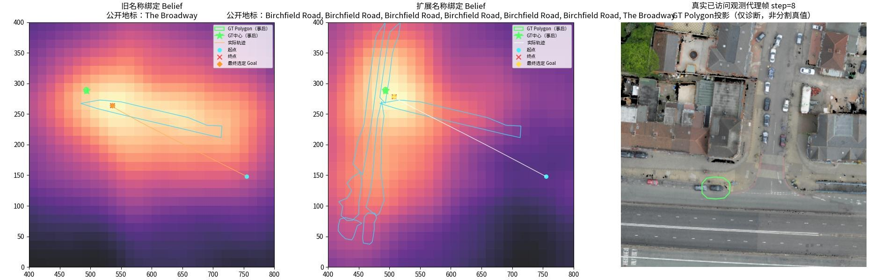
GT轮廓仅作事后几何代理，不是真实实例分割标签。
原指令：The fourth home from the corner of Chesterwood Gardens and Chesterwood that is back to back with a home on facing Bragg. It does not have a trash bin in the front. The trash bin is by the back door and the neighbors have clothes hanging on a line in thier back yard.
旧绑定：Chesterwood Gardens；扩展绑定：Chesterwood Gardens, Bragg Road
旧SR=0.0 → 新SR=1.0；NMS位置候选rank=1；终点NE=19.9m
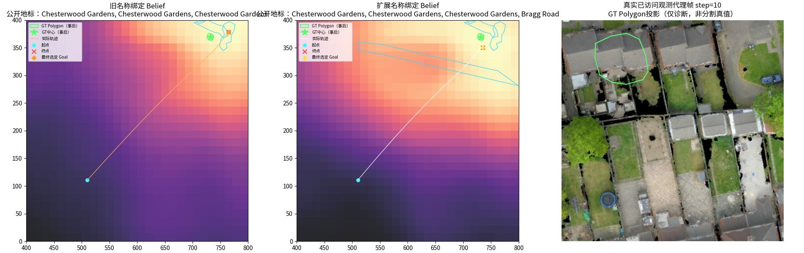
GT轮廓仅作事后几何代理，不是真实实例分割标签。
原指令：This is a car in the parking lot of Jobcenter Plus. The car is parked directly to the right of a car which is parked facing an RV.
旧绑定：无；扩展绑定：Jobcentre Plus
旧SR=0.0 → 新SR=1.0；NMS位置候选rank=1；终点NE=4.3m
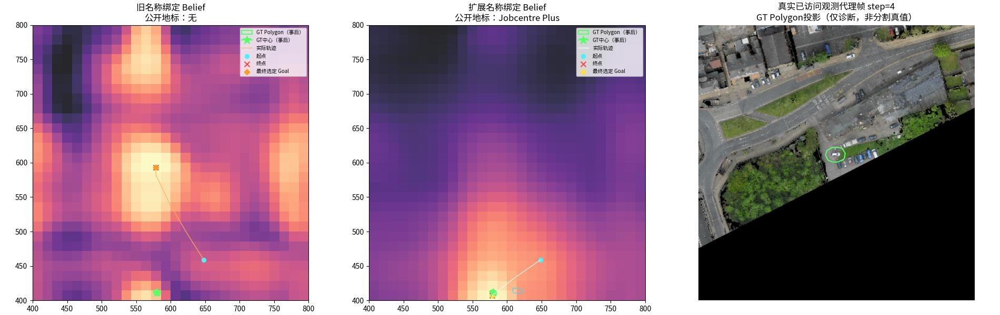
GT轮廓仅作事后几何代理，不是真实实例分割标签。
原指令：The gray car that is the rightmost car in the 2nd row of cars in the large parking lot to the right of Manchester => Bournemouth (all stations) footpath.
旧绑定：无；扩展绑定：CrossCountry: Manchester => Bournemouth (all stations)
旧SR=1.0 → 新SR=0.0；NMS位置候选rank=3；终点NE=46.7m
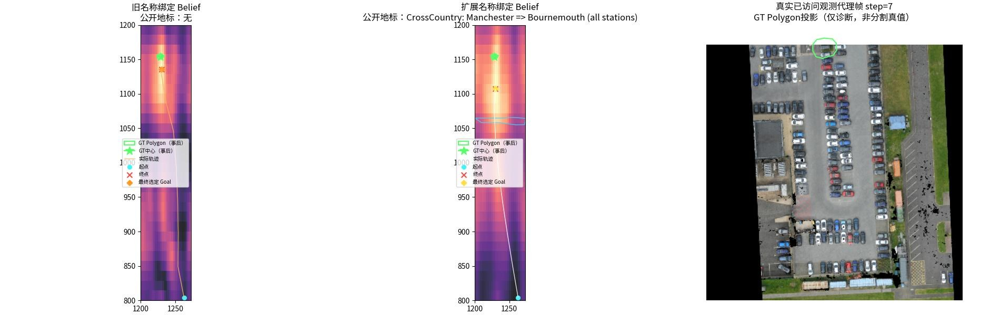
GT轮廓仅作事后几何代理，不是真实实例分割标签。
原指令：The dark gray car that is 16th from the left in the bottom row of cars in the large parking lot to the right of Manchester => Bournemouth (all stations) footpath.
旧绑定：无；扩展绑定：CrossCountry: Manchester => Bournemouth (all stations)
旧SR=1.0 → 新SR=0.0；NMS位置候选rank=2；终点NE=25.3m
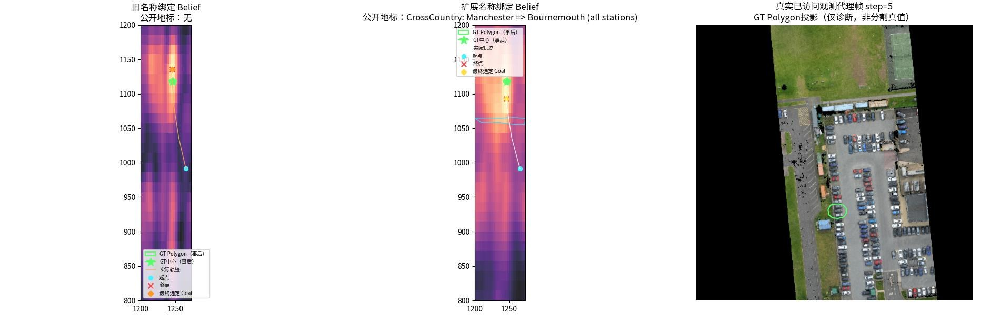
GT轮廓仅作事后几何代理，不是真实实例分割标签。
原指令：A gray car with a sunroof parked in the leftmost row of cars from the entrance off Holford Drive, in the Police Custody Suite parking lot. there is a white car to the left and a blue car with a black roof to the right and behind it diagonally is a blue shed in the grass.
旧绑定：Holford Drive；扩展绑定：Holford Drive, West Midlands Police Custody Suite
旧SR=1.0 → 新SR=0.0；NMS位置候选rank=2；终点NE=23.3m
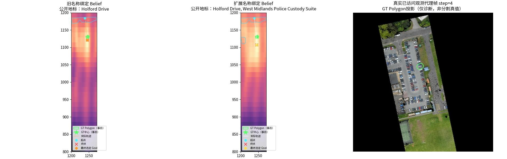
GT轮廓仅作事后几何代理，不是真实实例分割标签。
原指令：Facing the police custody suite at the very bottom row of the parking lot there is a white or silver looking car it is in between a blue car with a black roof and stripes on it, and to the left of it there is a brown car with a white roof.
旧绑定：无；扩展绑定：West Midlands Police Custody Suite
旧SR=1.0 → 新SR=0.0；NMS位置候选rank=2；终点NE=37.6m
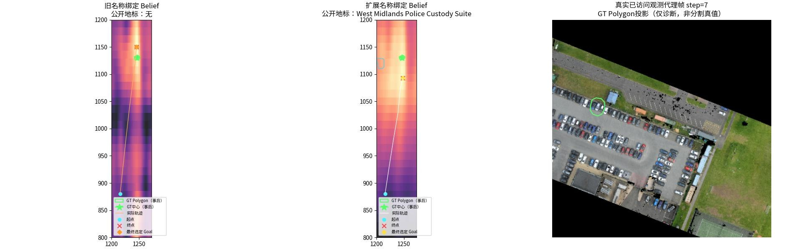
GT轮廓仅作事后几何代理，不是真实实例分割标签。
原指令：A blue car pulled up to the cement wall in the lot next the Police Custody Suite with the tennis court on the other side. It is the fourth from the gate leading to the main parking lot. There is a blue vehicle backed in next to this vehicles left side and a dark vehicle backed in at an angle next to this vehiceels right side.
旧绑定：无；扩展绑定：West Midlands Police Custody Suite
旧SR=0.0 → 新SR=1.0；NMS位置候选rank=1；终点NE=4.0m
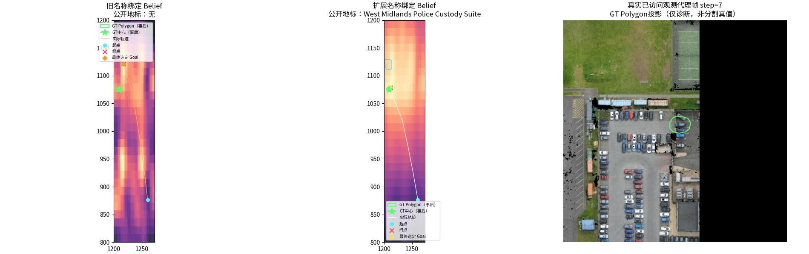
GT轮廓仅作事后几何代理，不是真实实例分割标签。
原指令：The blue car directly to the left of the purple car in the dark gray parking lot above the top left corner of the large parking lot to the right of Manchester => Bournemouth (all stations) footpath.
旧绑定：无；扩展绑定：CrossCountry: Manchester => Bournemouth (all stations)
旧SR=0.0 → 新SR=1.0；NMS位置候选rank=1；终点NE=17.4m
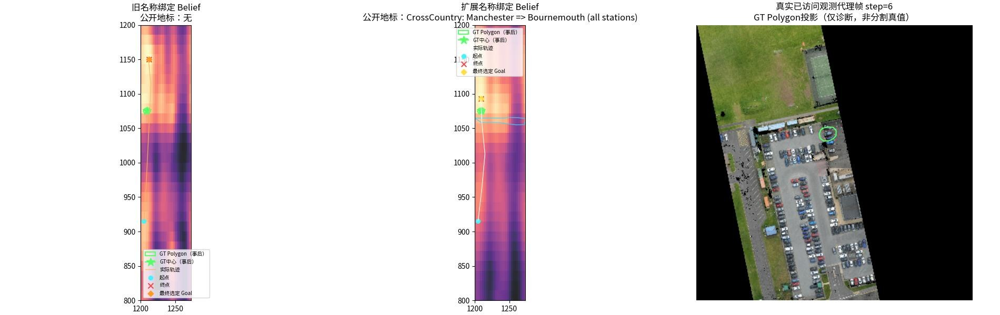
GT轮廓仅作事后几何代理，不是真实实例分割标签。
原指令：A bright blue vehicle in the first row facing Holford Drive past the Police Custody Suit from the entrance. It is the middle vehicle in the row and there is a black vehicle on one side of it and a light blue vehicle with white roof on the other side.
旧绑定：Holford Drive；扩展绑定：Holford Drive, West Midlands Police Custody Suite
旧SR=0.0 → 新SR=1.0；NMS位置候选rank=1；终点NE=6.4m
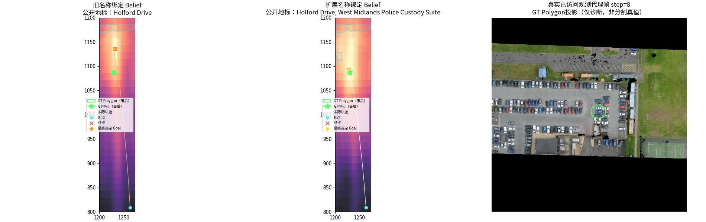
GT轮廓仅作事后几何代理，不是真实实例分割标签。
原指令：A blue car in between a black car and the light blue car with a white top facing the center aisle parking area in the parking lot of the West Midland police custody Suite off Holford drive
旧绑定：Holford Drive；扩展绑定：West Midlands Police Custody Suite, Holford Drive
旧SR=0.0 → 新SR=1.0；NMS位置候选rank=1；终点NE=6.1m
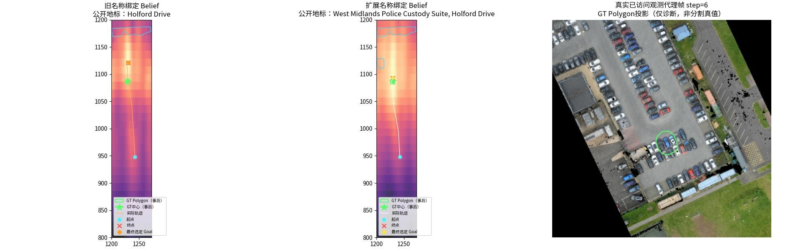
GT轮廓仅作事后几何代理，不是真实实例分割标签。
原指令：The white roof building to the right of the Perne Lbirary building and is above Trumpington Street road.
旧绑定：Trumpington Street；扩展绑定：Perne Library, Trumpington Street
旧SR=0.0 → 新SR=1.0；NMS位置候选rank=1；终点NE=11.8m
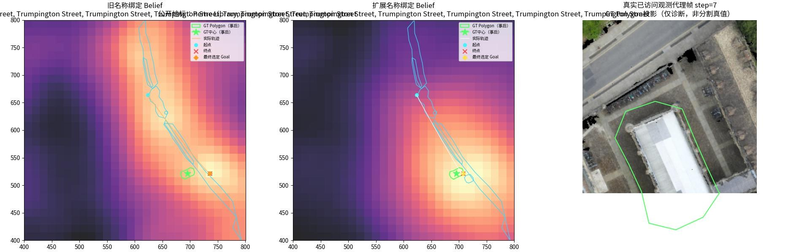
GT轮廓仅作事后几何代理，不是真实实例分割标签。
原指令：This is a building with an orange roof located between Dockett Building and Erasmus Building. Behind it there is Provost's Lodge.
旧绑定：Erasmus Building, Provost's Lodge；扩展绑定：Dokett Building, Erasmus Building, Provost's Lodge
旧SR=1.0 → 新SR=0.0；NMS位置候选rank=2；终点NE=20.7m
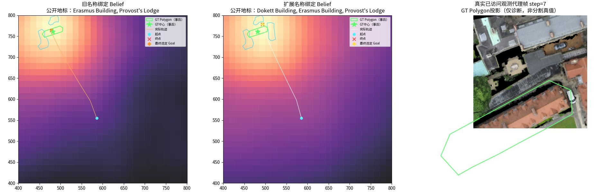
GT轮廓仅作事后几何代理，不是真实实例分割标签。
原指令：The orange building, that sits right behind Queen's College Chapel, and beside Erasmus Building.
旧绑定：Erasmus Building；扩展绑定：St Catharine's College Chapel, Erasmus Building
旧SR=0.0 → 新SR=1.0；NMS位置候选rank=1；终点NE=15.8m
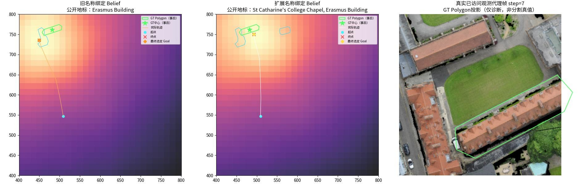
GT轮廓仅作事后几何代理，不是真实实例分割标签。
原指令：The building parallel to Catharine’s college chapel. It has a rectangular lawn to the right.
旧绑定：无；扩展绑定：St Catharine's College Chapel
旧SR=0.0 → 新SR=1.0；NMS位置候选rank=1；终点NE=19.6m
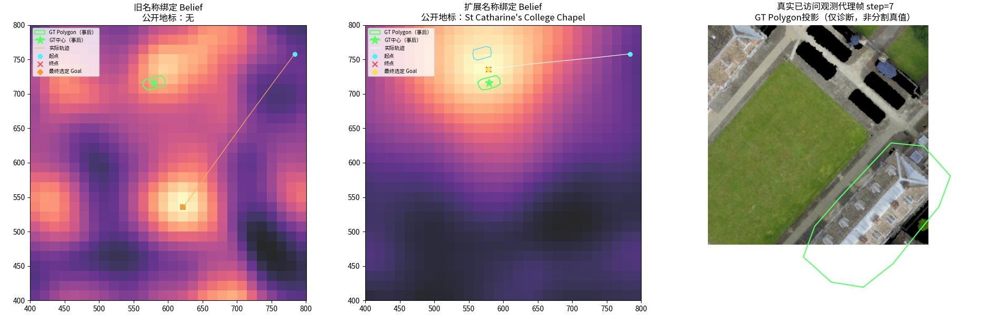
GT轮廓仅作事后几何代理，不是真实实例分割标签。
原指令：A beige and Brown building that's partially cut off by the edge of the map, that has a two-tiered roof, the second roof being gray and dark gray, off Kings Lane, attached to the Saint Catherine's College Library
旧绑定：Kings Lane；扩展绑定：Kings Lane, St Catharine's College Library
旧SR=0.0 → 新SR=1.0；NMS位置候选rank=1；终点NE=7.5m
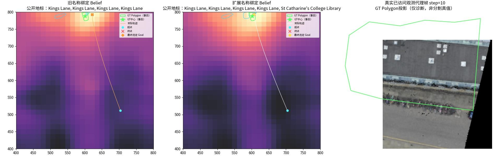
GT轮廓仅作事后几何代理，不是真实实例分割标签。
原指令：A blue car in between a red car and a white car parked in between the Saint Catherine's college chapel in the Master's Lodge off Queens Lane
旧绑定：Master's Lodge, Queens Lane；扩展绑定：St Catharine's College Chapel, Master's Lodge, Queens Lane
旧SR=1.0 → 新SR=0.0；NMS位置候选rank=2；终点NE=20.5m
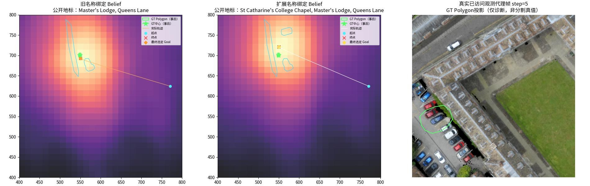
GT轮廓仅作事后几何代理，不是真实实例分割标签。
原指令：Conjoined section of the Peter house Chapel next to the old Court off Pembroke Street across from Peter house masters Lodge
旧绑定：Old Court, Pembroke Street；扩展绑定：Peterhouse Chapel, Old Court, Pembroke Street
旧SR=0.0 → 新SR=1.0；NMS位置候选rank=1；终点NE=9.7m
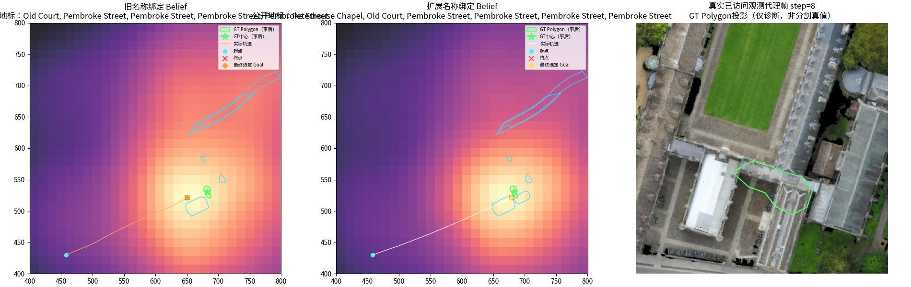
GT轮廓仅作事后几何代理，不是真实实例分割标签。
原指令：The long stretch of building with a dark grey roof as well as a small lighter grey square section roof, all found below the Winstanley Lecture Theater building and above the Sidney Street road when viewing it horizontally.
旧绑定：Sidney Street；扩展绑定：Winstanley Lecture Theatre, Sidney Street
旧SR=0.0 → 新SR=1.0；NMS位置候选rank=1；终点NE=17.0m
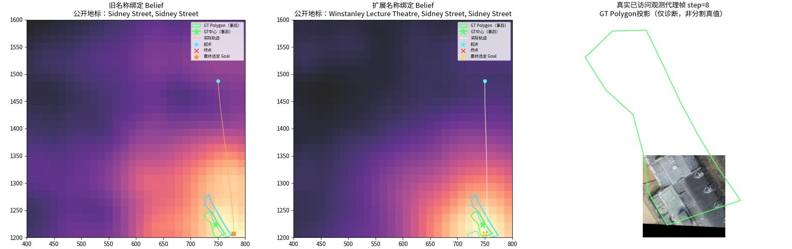
GT轮廓仅作事后几何代理，不是真实实例分割标签。
原指令：With Sydney Street horizontal, it is the grey roofed building found above the street. The horizontal building is below the vertical orientated Winstanley's Lecture Theatre building.
旧绑定：无；扩展绑定：Sidney Street, Winstanley Lecture Theatre
旧SR=0.0 → 新SR=1.0；NMS位置候选rank=1；终点NE=17.0m
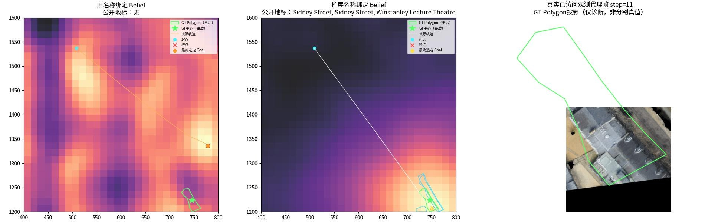
GT轮廓仅作事后几何代理，不是真实实例分割标签。
原指令：The building with the white line across the roof that is between the Buttery and Kitchen and the Hall building.
旧绑定：Buttery and Kitchen, The Hall；扩展绑定：Buttery and Kitchen, The Hall, Hall
旧SR=0.0 → 新SR=1.0；NMS位置候选rank=1；终点NE=5.7m
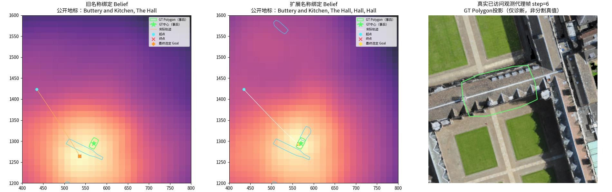
GT轮廓仅作事后几何代理，不是真实实例分割标签。
原指令：The brown and gray building between the Hall building and the Buttery and Kitchen building.
旧绑定：The Hall, Buttery and Kitchen；扩展绑定：The Hall, Hall, Buttery and Kitchen
旧SR=0.0 → 新SR=1.0；NMS位置候选rank=1；终点NE=5.7m
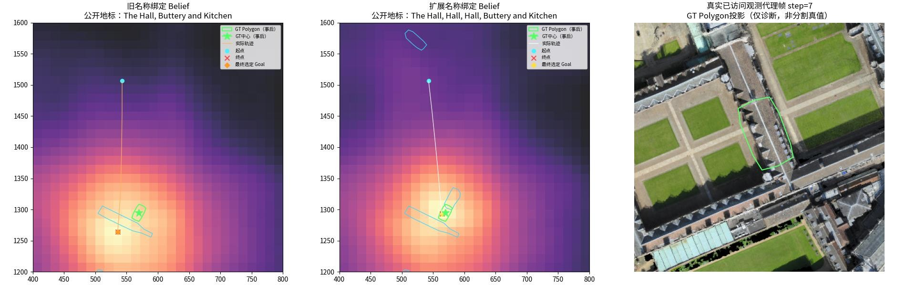
GT轮廓仅作事后几何代理，不是真实实例分割标签。
原指令：The rectangular building in front of Portugal palace footpath. It is stretching towards new Park Street road.
旧绑定：New Park Street；扩展绑定：Portugal Place, New Park Street
旧SR=0.0 → 新SR=1.0；NMS位置候选rank=1；终点NE=11.6m
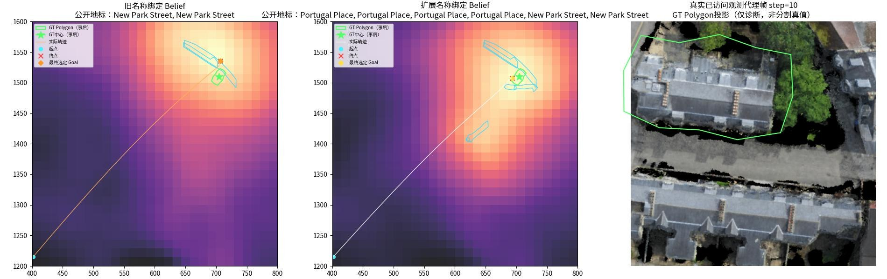
GT轮廓仅作事后几何代理，不是真实实例分割标签。
原指令：the L shaped building next to the Cote Brasserie building on the left lane along Bridge street.
旧绑定：Côte Brasserie, Bridge Street；扩展绑定：Côte Brasserie, Bridge Street
旧SR=0.0 → 新SR=1.0；NMS位置候选rank=1；终点NE=18.1m
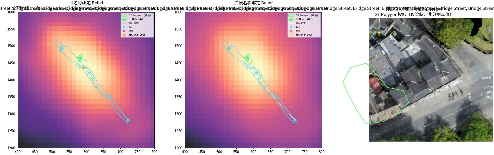
GT轮廓仅作事后几何代理，不是真实实例分割标签。
原指令：On the right side of Round Church Street, this large gray roofed building is directly to the left of Cambridge Systems Associate.
旧绑定：Round Church Street；扩展绑定：Round Church Street, Cambridge Systems Associates
旧SR=0.0 → 新SR=1.0；NMS位置候选rank=1；终点NE=13.2m
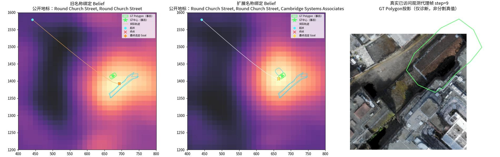
GT轮廓仅作事后几何代理，不是真实实例分割标签。
原指令：A square shaped riverside ground with a big tree at the corner of the ground situated at the left side of Pepy's Library
旧绑定：无；扩展绑定：Pepys Library
旧SR=0.0 → 新SR=1.0；NMS位置候选rank=1；终点NE=19.3m
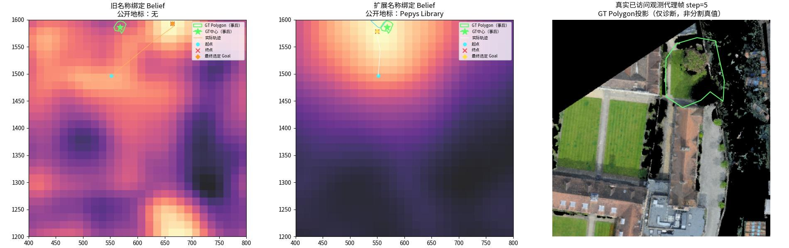
GT轮廓仅作事后几何代理，不是真实实例分割标签。
原指令：A grass lawn area with a tree with pink flowers that is between Pepys Liibrary and the River Cam.
旧绑定：River Cam；扩展绑定：Pepys Library, River Cam
旧SR=1.0 → 新SR=0.0；NMS位置候选rank=2；终点NE=22.1m
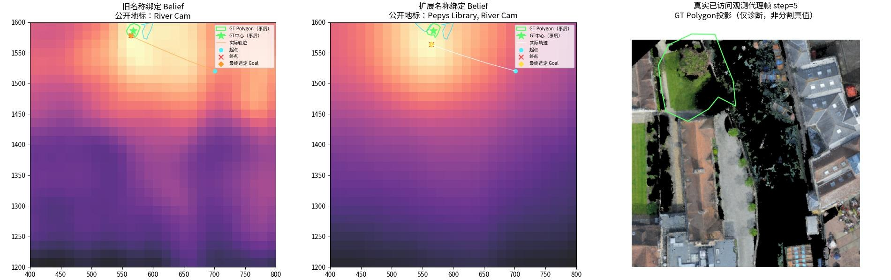
GT轮廓仅作事后几何代理，不是真实实例分割标签。
原指令：This is a lawn located in front of Cripps Building and Fisher Building. It is also located close to New Court.
旧绑定：Cripps Building, New Court；扩展绑定：Cripps Building, Fisher Building (St John's College), New Court
旧SR=0.0 → 新SR=1.0；NMS位置候选rank=1；终点NE=4.9m
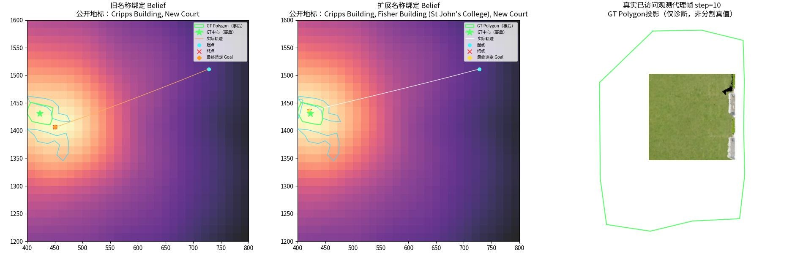
GT轮廓仅作事后几何代理，不是真实实例分割标签。
原指令：The L shaped building across from the Hall building on St John's Street.
旧绑定：The Hall, St John's Street；扩展绑定：The Hall, Hall, St John's Street
旧SR=0.0 → 新SR=1.0；NMS位置候选rank=1；终点NE=16.4m
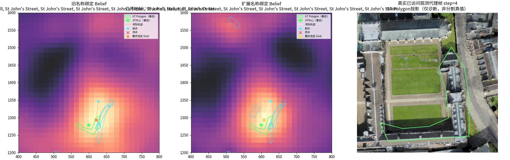
GT轮廓仅作事后几何代理，不是真实实例分割标签。
原指令：This is a stone building between two court yards and is attached to a building called the Hall that is positioned the the same direction and perpendicular to this building on the opposite side is the buttery and kitchen
旧绑定：The Hall, Buttery and Kitchen；扩展绑定：The Hall, Hall, Buttery and Kitchen
旧SR=0.0 → 新SR=1.0；NMS位置候选rank=1；终点NE=5.7m
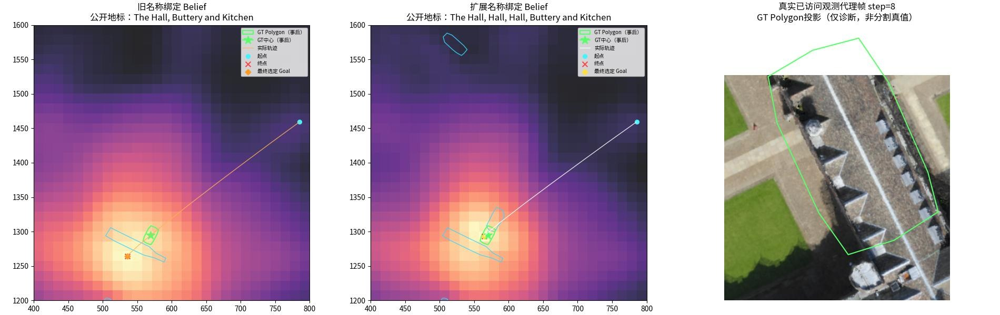
GT轮廓仅作事后几何代理，不是真实实例分割标签。
原指令：The building in between the Center for process excellence & Innovation (Judge Business School} and Center for Science and policy along Trumpington street road.
旧绑定：Trumpington Street；扩展绑定：Centre for Process Excellence & Innovation (Judge Business School), Centre for Science and Policy, Trumpington Street
旧SR=0.0 → 新SR=1.0；NMS位置候选rank=1；终点NE=7.9m
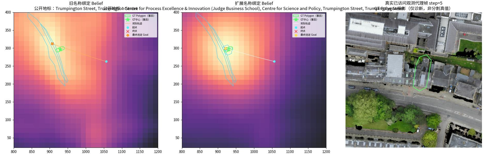
GT轮廓仅作事后几何代理，不是真实实例分割标签。
原指令：This red brick semi-detached house with white windows and a grey roof is on the corner of Lensfiled Road and Tennis Court Road. The house attached to it has a blue car in front.
旧绑定：Tennis Court Road；扩展绑定：Lensfield Road, Tennis Court Road
旧SR=0.0 → 新SR=1.0；NMS位置候选rank=1；终点NE=15.5m
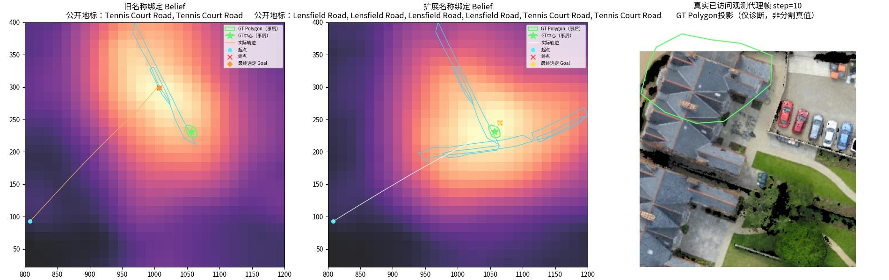
GT轮廓仅作事后几何代理，不是真实实例分割标签。
原指令：The grey roof building that is between the Leys School Road and the green Ground.
旧绑定：The Leys School；扩展绑定：The Leys School, Leys School
旧SR=1.0 → 新SR=0.0；NMS位置候选rank=6；终点NE=51.1m
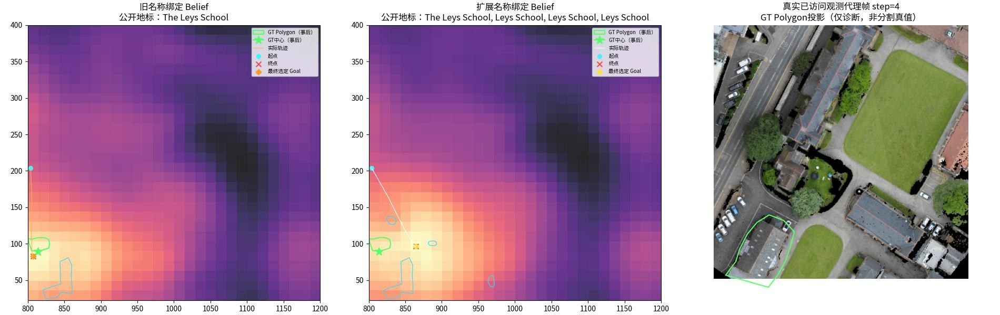
GT轮廓仅作事后几何代理，不是真实实例分割标签。
原指令：This is a building section. this building is on Trumpington Street road and is the second section from Lensfield Road corner. this section is the part of the building that is close to the Department of History Art building.
旧绑定：Trumpington Street, Lensfield Road；扩展绑定：Trumpington Street, Lensfield Road, Department of History of Art
旧SR=0.0 → 新SR=1.0；NMS位置候选rank=1；终点NE=15.6m
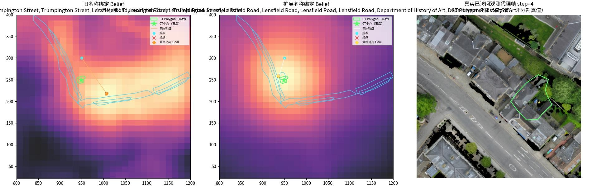
GT轮廓仅作事后几何代理，不是真实实例分割标签。
原指令：The building to the right of the Department of History Art with a yellow and blue object in the backyard.
旧绑定：无；扩展绑定：Department of History of Art
旧SR=0.0 → 新SR=1.0；NMS位置候选rank=1；终点NE=15.6m
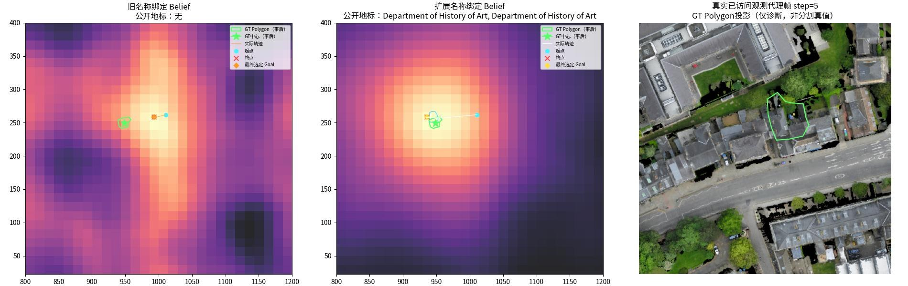
GT轮廓仅作事后几何代理，不是真实实例分割标签。
原指令：A white car, with a group of three other white vehicles parked on its back right, in between the chapel and the Leys school building, near the edge of the map off leys School Road
旧绑定：Chapel, The Leys School, Leys School；扩展绑定：Chapel, The Leys School, Leys School
旧SR=1.0 → 新SR=0.0；NMS位置候选rank=2；终点NE=31.3m
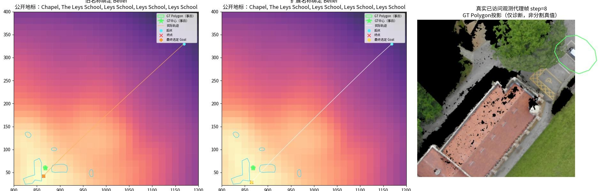
GT轮廓仅作事后几何代理，不是真实实例分割标签。
原指令：The white car at the Headmaster's House at the Leys School. It is parked b itself and three parking spots from a handicap spot.
旧绑定：Headmaster's House, The Leys School；扩展绑定：Headmaster's House, The Leys School, Leys School
旧SR=0.0 → 新SR=1.0；NMS位置候选rank=1；终点NE=18.0m
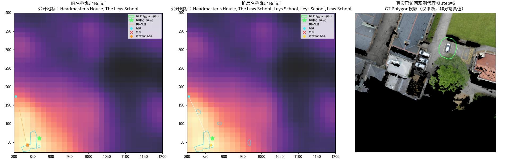
GT轮廓仅作事后几何代理，不是真实实例分割标签。
原指令：This turquoise /green car is located towards the edge of the map right next to the groove Lodge Cottage on Groove Lane
旧绑定：无；扩展绑定：Grove Lodge Cottage
旧SR=0.0 → 新SR=1.0；NMS位置候选rank=1；终点NE=8.1m
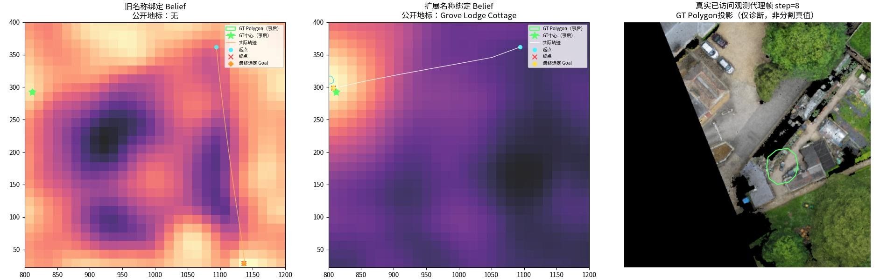
GT轮廓仅作事后几何代理，不是真实实例分割标签。
原指令：The silver car that is third from the right in the row of cars at the back of the tan parking lot across the street from the Wellcome Trust/Cancer Research UK Gordon Institute.
旧绑定：无；扩展绑定：The Wellcome Trust/Cancer Research UK Gurdon Institute
旧SR=0.0 → 新SR=1.0；NMS位置候选rank=1；终点NE=7.2m
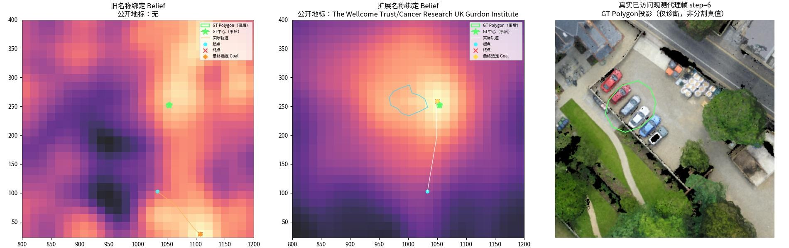
GT轮廓仅作事后几何代理，不是真实实例分割标签。
原指令：The white car in a parking lot opposite the Wellcome Trust/Cancer Research UK building. It is in between a red and a white car.
旧绑定：无；扩展绑定：The Wellcome Trust/Cancer Research UK Gurdon Institute
旧SR=0.0 → 新SR=1.0；NMS位置候选rank=1；终点NE=19.0m
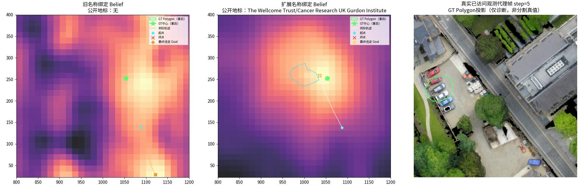
GT轮廓仅作事后几何代理，不是真实实例分割标签。
原指令：Love section a multicolored beige and Brown building with a gray roof that has an additional white colored structure with a gray roof on top of it, in between the Center for Science and policy building and the center for process excellence and Innovation building off trumpington Street
旧绑定：Trumpington Street；扩展绑定：Centre for Science and Policy, Centre for Process Excellence & Innovation (Judge Business School), Trumpington Street
旧SR=0.0 → 新SR=1.0；NMS位置候选rank=1；终点NE=7.9m
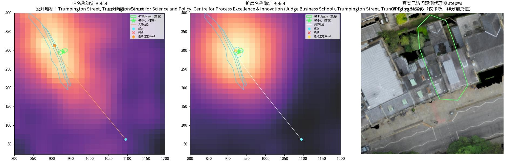
GT轮廓仅作事后几何代理，不是真实实例分割标签。
原指令：A house next to the University chemical laboratory car park. It is in front of the Center for molecular informatics building along Panton street.
旧绑定：University Chemical Laboratory, Panton Street；扩展绑定：University Chemical Laboratory, Centre for Molecular Informatics, Panton Street
旧SR=1.0 → 新SR=0.0；NMS位置候选rank=3；终点NE=22.6m
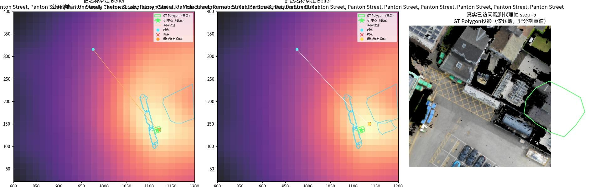
GT轮廓仅作事后几何代理，不是真实实例分割标签。
原指令：The building between the Anatomy buildings and the Downing College Chapel.
旧绑定：Downing College Chapel；扩展绑定：Anatomy Building, Downing College Chapel
旧SR=0.0 → 新SR=1.0；NMS位置候选rank=1；终点NE=19.7m
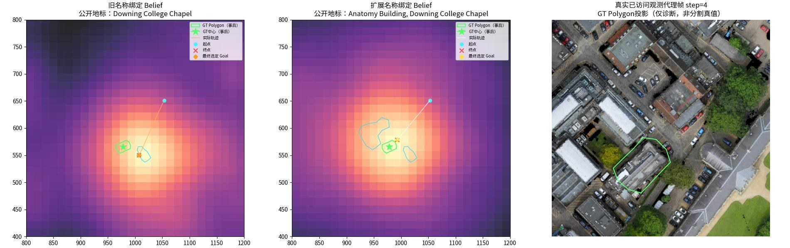
GT轮廓仅作事后几何代理，不是真实实例分割标签。
原指令：Inner section of a three-story Brown building with a brown roof and a white and green bell tower on top of it that is connected to the Department of Earth Sciences Building off Downing Street across from the zoology building
旧绑定：Downing Street, Zoology Building；扩展绑定：Department of Earth Sciences (University of Cambridge), Downing Street, Zoology Building
旧SR=0.0 → 新SR=1.0；NMS位置候选rank=1；终点NE=7.7m
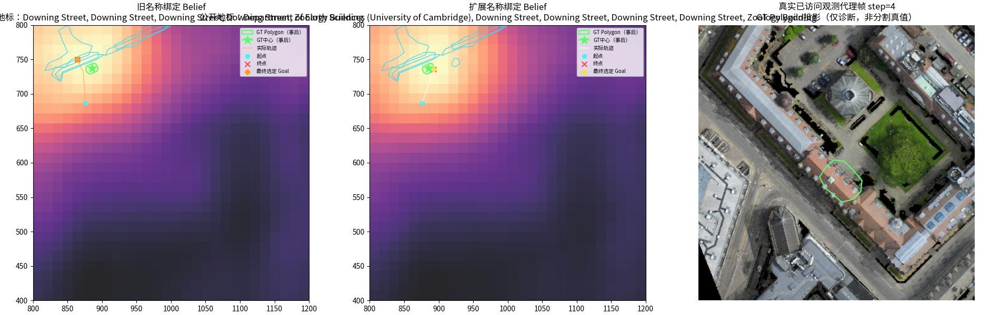
GT轮廓仅作事后几何代理，不是真实实例分割标签。
原指令：On the south side of Saint Andrew's Street, across from Saint Andrew's Street Baptist Church, this gray roofed building is directly to the right of Janus House.
旧绑定：Saint Andrew's Street, Janus House；扩展绑定：Saint Andrew's Street, St Andrew's Street Baptist Church, Janus House
旧SR=1.0 → 新SR=0.0；NMS位置候选rank=3；终点NE=20.3m
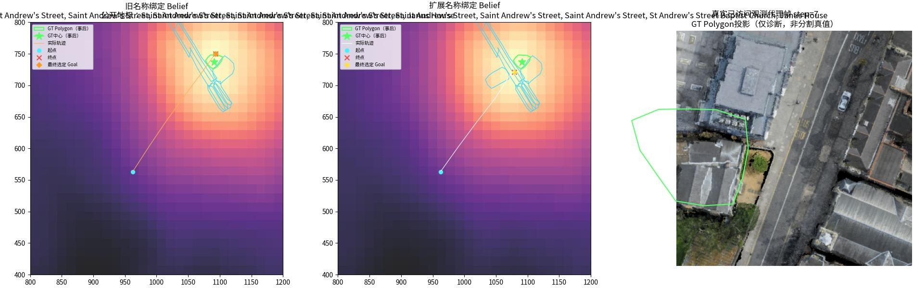
GT轮廓仅作事后几何代理，不是真实实例分割标签。
原指令：The Red car that is between the white car and another Red car behind the brown building with grey roof next to the Starbuck and closed to Heong Gallery.
旧绑定：Heong Gallery；扩展绑定：Starbucks, Heong Gallery
旧SR=0.0 → 新SR=1.0；NMS位置候选rank=1；终点NE=18.7m
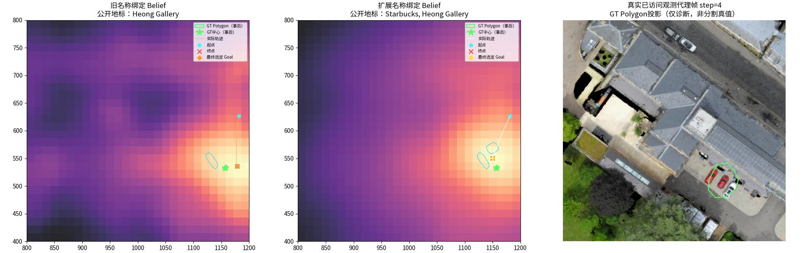
GT轮廓仅作事后几何代理，不是真实实例分割标签。
原指令：The red car that is parked between a black and silver car, across the street from two black cars, between the Crail-Marshall Building and the Psychological Laboratory/Psychology Library.
旧绑定：The Psychological Laboratory / Psychology Library；扩展绑定：Craik-Marshall Building, The Psychological Laboratory / Psychology Library
旧SR=0.0 → 新SR=1.0；NMS位置候选rank=1；终点NE=3.8m
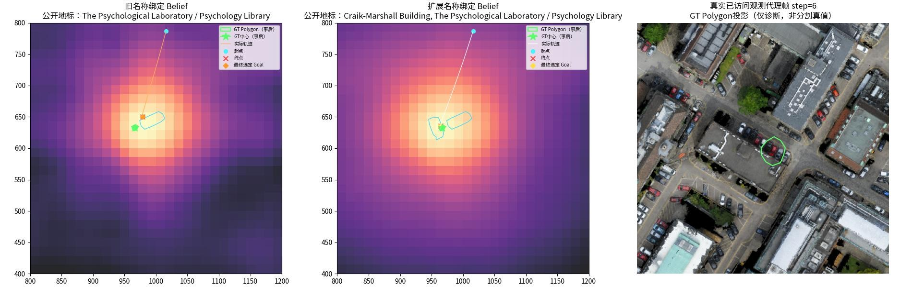
GT轮廓仅作事后几何代理，不是真实实例分割标签。
原指令：A red car parked in between a white and a black car at the Crailk Marshall building. It is the fourth car on the left when facing Psychology workshop building. It is in between the Crailk Marshall building and the Psychology workshop building.
旧绑定：Psychology Workshop Building；扩展绑定：Craik-Marshall Building, Psychology Workshop Building
旧SR=0.0 → 新SR=1.0；NMS位置候选rank=1；终点NE=18.1m
GT轮廓仅作事后几何代理，不是真实实例分割标签。
原指令：A red car parked in the parking area situated between the buildings named Hopkin's building, Genetics building and Craik-Marshall Building. A black car is parked at its right side and no car parked at its left.
旧绑定：Genetics Building, Craik-Marshall Building；扩展绑定：Hopkins Building, Genetics Building, Craik-Marshall Building
旧SR=0.0 → 新SR=1.0；NMS位置候选rank=1；终点NE=13.3m
GT轮廓仅作事后几何代理，不是真实实例分割标签。
原指令：This is two buildings situated across the street from the Scott Polar Research Institute along Catholic Church Road. There are two cars, one white and one red, parked in front of these buildings.
旧绑定：Catholic Church；扩展绑定：Scott Polar Research Institute (SPRI), Catholic Church
旧SR=1.0 → 新SR=0.0；NMS位置候选rank=2；终点NE=61.9m
GT轮廓仅作事后几何代理，不是真实实例分割标签。
原指令：The brown house on Lensfield Road that is facing the Scott Peter Research Institute (SPRI).
旧绑定：Lensfield Road；扩展绑定：Lensfield Road, Scott Polar Research Institute (SPRI)
旧SR=0.0 → 新SR=1.0；NMS位置候选rank=1；终点NE=4.9m
GT轮廓仅作事后几何代理，不是真实实例分割标签。
原指令：A dark blue car with a black car in front of it. It is on the left Lane at Clarendon veterinary surgery building.
旧绑定：无；扩展绑定：Clarendon Street, Clarendon Street Veterinary Surgery
旧SR=0.0 → 新SR=1.0；NMS位置候选rank=1；终点NE=3.6m
GT轮廓仅作事后几何代理，不是真实实例分割标签。
原指令：This is a blue car on Clarendon Street outside Clarendon Street Veterinary Clinic.
旧绑定：Clarendon Street；扩展绑定：Clarendon Street, Clarendon Street Veterinary Surgery
旧SR=0.0 → 新SR=1.0；NMS位置候选rank=1；终点NE=14.6m
GT轮廓仅作事后几何代理，不是真实实例分割标签。
原指令：A red car parked on a house backyard near a storage house. It is at the second house from Gathrie Court along Paradise street road.
旧绑定：Paradise Street；扩展绑定：Guthrie Court, Paradise Street
旧SR=1.0 → 新SR=0.0；NMS位置候选rank=3；终点NE=30.8m
GT轮廓仅作事后几何代理，不是真实实例分割标签。
原指令：One white car in between another white car and a black car off salmon Lane in the parking lot of the Grafton West building across the street from a white house with a brown roof
旧绑定：Salmon Lane, The Grafton；扩展绑定：Salmon Lane, Grafton West
旧SR=0.0 → 新SR=1.0；NMS位置候选rank=1；终点NE=10.7m
GT轮廓仅作事后几何代理，不是真实实例分割标签。
原指令：The white car that is seventh car from the end of the row in the Grafton West parking lot that is facing Salmon Lane. It is between a white car and black car.
旧绑定：The Grafton, Salmon Lane；扩展绑定：Grafton West, Salmon Lane
旧SR=0.0 → 新SR=1.0；NMS位置候选rank=1；终点NE=16.2m
GT轮廓仅作事后几何代理，不是真实实例分割标签。
原指令：Red car that is 9th from the left in the 3rd row of the parking lot behind the Grafton West building, when viewed aerially with the Grafton West building to the left.
旧绑定：The Grafton；扩展绑定：Grafton West
旧SR=0.0 → 新SR=1.0；NMS位置候选rank=1；终点NE=11.5m
GT轮廓仅作事后几何代理，不是真实实例分割标签。
原指令：A dark blue car next to an empty spot with a black car across from it, in the parking lot of the Grafton West building, in the center row nearest to the tree that is next to a lower level parking lot
旧绑定：The Grafton；扩展绑定：Grafton West
旧SR=1.0 → 新SR=0.0；NMS位置候选rank=2；终点NE=23.4m
GT轮廓仅作事后几何代理，不是真实实例分割标签。
原指令：The white car that is 1st from the right in the top row of cars in the parking lot behind the Grafton West building, when viewed aerially with the Grafton West building to the left.
旧绑定：The Grafton；扩展绑定：Grafton West
旧SR=1.0 → 新SR=0.0；NMS位置候选rank=4；终点NE=20.9m
GT轮廓仅作事后几何代理，不是真实实例分割标签。
原指令：white car in the fourth lane from the Salmon Road footpath entrance, pearked all the way to the south end of the lot, headed in the direction of Eden Chapel
旧绑定：Eden Chapel；扩展绑定：Salmon Lane, Eden Chapel
旧SR=1.0 → 新SR=0.0；NMS位置候选rank=2；终点NE=20.9m
GT轮廓仅作事后几何代理，不是真实实例分割标签。
原指令：The gray car that is 17th from the right in the bottom row of cars in the parking lot behind the Grafton West building, when viewed aerially with the Grafton West building to the left.
旧绑定：The Grafton；扩展绑定：Grafton West
旧SR=0.0 → 新SR=1.0；NMS位置候选rank=1；终点NE=18.3m
GT轮廓仅作事后几何代理，不是真实实例分割标签。
原指令：This is a light colored car parked in the parking area in front of the Grafton West building. It's in the second row of cars, the seventh car from the right end of the row. A blue car is three spaces away from this white car.
旧绑定：The Grafton；扩展绑定：Grafton West
旧SR=0.0 → 新SR=1.0；NMS位置候选rank=1；终点NE=6.6m
GT轮廓仅作事后几何代理，不是真实实例分割标签。
原指令：The white car between an empty parking spot and a blue car in the middle of the middle row of cars in the Grafton West parking lot.
旧绑定：The Grafton；扩展绑定：Grafton West
旧SR=1.0 → 新SR=0.0；NMS位置候选rank=2；终点NE=22.5m
GT轮廓仅作事后几何代理，不是真实实例分割标签。
原指令：The white car between an empty spot and a blue car in the middle row of the Grafton West parking lot.
旧绑定：The Grafton；扩展绑定：Grafton West
旧SR=1.0 → 新SR=0.0；NMS位置候选rank=2；终点NE=22.5m
GT轮廓仅作事后几何代理，不是真实实例分割标签。
原指令：This is a blue car on in the carpark of the Grafton West building it is in the middle row nearest Salmon Lane, it faces Salmon lane and a lighter blue car, next to it is a grey car and an empty space.
旧绑定：The Grafton, Salmon Lane；扩展绑定：Grafton West, Salmon Lane
旧SR=1.0 → 新SR=0.0；NMS位置候选rank=2；终点NE=27.6m
GT轮廓仅作事后几何代理，不是真实实例分割标签。
原指令：A gray car with a dark red top, in between another dark gray car in a black car, on the corner of parsonage Street and stanaway close
旧绑定：Parsonage Street；扩展绑定：Parsonage Street, Stanway Close
旧SR=0.0 → 新SR=1.0；NMS位置候选rank=1；终点NE=11.7m
GT轮廓仅作事后几何代理，不是真实实例分割标签。
原指令：The parking lot on the side of the Grafton West parking lot that has a light concrete floor and behind the Cambridge Community Kitchen.
旧绑定：The Grafton, Cambridge Community Kitchen；扩展绑定：Grafton West, Cambridge Community Kitchen
旧SR=1.0 → 新SR=0.0；NMS位置候选rank=6；终点NE=40.9m
GT轮廓仅作事后几何代理，不是真实实例分割标签。
原指令：The last car in the middle row of the parking lot of the Grafton West building and is three spots away from a red car.
旧绑定：The Grafton；扩展绑定：Grafton West
旧SR=1.0 → 新SR=0.0；NMS位置候选rank=2；终点NE=23.4m
GT轮廓仅作事后几何代理，不是真实实例分割标签。
原指令：A building with grey roof situated at the right side of the building named Petersfield Mansion along the road named Mill road.
旧绑定：Mill Road；扩展绑定：Petersfield Mansions, Mill Road
旧SR=0.0 → 新SR=1.0；NMS位置候选rank=1；终点NE=14.0m
GT轮廓仅作事后几何代理，不是真实实例分割标签。
原指令：One black car in between a dark blue car and a white car and a parking lot off Petland's close next to a four-story beige building with a gray roof
旧绑定：无；扩展绑定：Pentlands Close
旧SR=0.0 → 新SR=1.0；NMS位置候选rank=1；终点NE=4.3m
GT轮廓仅作事后几何代理，不是真实实例分割标签。
原指令：A building on Young St. Across the road diagonal from Music therapy center. It is brown and has a red door.
旧绑定：无；扩展绑定：Young Street, Music Therapy Centre, Anglia Ruskin University (ARU)
旧SR=0.0 → 新SR=1.0；NMS位置候选rank=1；终点NE=6.3m
GT轮廓仅作事后几何代理，不是真实实例分割标签。
原指令：The square building with a panelled roof opposite the Varsity house along occupation road. It is the second from Red and crown house.
旧绑定：Varsity House, Occupation Road；扩展绑定：Varsity House, Occupation Road, Rose and Crown House
旧SR=0.0 → 新SR=1.0；NMS位置候选rank=1；终点NE=4.6m
GT轮廓仅作事后几何代理，不是真实实例分割标签。
原指令：The llong, white building on the corner of New Street and Sturton Street, across from the Music Therapy Center Angila Ruskin University (ARU).
旧绑定：New Street, Sturton Street；扩展绑定：New Street, Sturton Street, Music Therapy Centre, Anglia Ruskin University (ARU)
旧SR=0.0 → 新SR=1.0；NMS位置候选rank=1；终点NE=14.7m
GT轮廓仅作事后几何代理，不是真实实例分割标签。